MODEL S
OWNER'S MANUAL
2020.4
North America
Contents
Overview
2
Charging
160
Interior Overview
2
Electric Vehicle Components
160
Exterior Overview
3
Battery Information
162
Touchscreen Overview
4
Charging Instructions
164
Opening and Closing
10
Maintenance
171
Keys and Doors
10
Maintenance Schedule
171
Windows
15
Tire Care and Maintenance
173
Rear Trunk
16
Cleaning
180
Front Trunk
19
Wiper Blades and Washer Jets
183
Interior Storage and Electronics
21
Fluid Reservoirs
184
Sunroof
24
Jacking and Lifting
187
Parts and Accessories
188
Seating and Safety Restraints
25
Front and Rear Seats
25
Specifications
189
Seat Belts
27
Identification Labels
189
Child Safety Seats
30
Vehicle Loading
190
Airbags
37
Dimensions and Weights
192
Subsystems
194
Driving
42
Wheels and Tires
197
Driver Profiles
42
Steering Wheel
44
Roadside Assistance
205
Mirrors
48
Contacting Tesla Roadside Assistance
205
Starting and Powering Off
50
Instructions for Transporters
206
Gears
52
Lights
54
Instrument Panel
58
Consumer Information
209
Wipers and Washers
64
Easter Eggs
209
Braking and Stopping
66
About this Owner Information
211
Traction Control
70
Disclaimers
213
Park Assist
71
Reporting Safety Defects
215
Vehicle Hold
73
Declarations of Conformity
216
Acceleration Modes
74
Trip Information
76
Getting Maximum Range
77
Rear View Camera
79
Dashcam
80
Cold Weather Best Practices
83
Autopilot
85
About Autopilot
85
Trac-Aware Cruise Control
88
Autosteer
95
Autopark
102
Summon
104
Smart Summon
107
Lane Assist
110
Collision Avoidance Assist
113
Speed Assist
116
Using the Touchscreen
118
Controls
118
Climate Controls
128
Maps and Navigation
134
Media and Audio
140
Phone
143
Air Suspension
146
Calendar
148
Security Settings
149
HomeLink® Universal Transceiver
153
Connecting to Wi-Fi
156
Software Updates
157
Mobile App
159
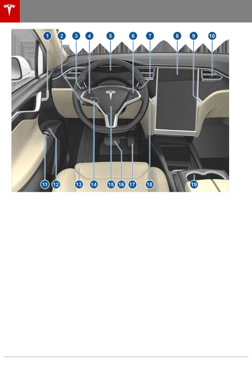
Interior Overview
1.
Interior door handles (Opening Doors from the Interior on page 12)
2.
Trac-Aware Cruise Control (Trac-Aware Cruise Control on page 88) and Autosteer
(Autosteer on page 95)
3.
High beams (High Beam Headlights on page 56), Turn signals (Turn Signals on page 57),
Wipers and washers (Wipers and Washers on page 64)
4.
Steering wheel buttons - left (Using Left Steering Wheel Buttons on page 44)
5.
Instrument panel (Instrument Panel on page 58)
6.
Steering wheel buttons - right (Using Right Steering Wheel Buttons on page 45)
7.
Gear selector (Shifting Gears on page 52)
8.
Touchscreen (Touchscreen Overview on page 4)
9.
Glovebox button (Glove Box on page 21)
10.
Cabin climate control (Climate Controls on page 128)
11.
Power window switches (Opening and Closing on page 15)
12.
Exterior mirror adjustment switches (Mirrors on page 48)
13.
Seats (Front and Rear Seats on page 25)
14.
Steering column adjuster (hidden from view in the above image) (Steering Wheel on page
44)
15.
Horn (Horn on page 46)
16.
Brakes (Braking and Stopping on page 66)
17.
Accelerator pedal (Acceleration Modes on page 74)
18.
Hazard warning lights (Hazard Warning Flashers on page 57)
19.
Cup holders (Cup Holders on page 23)
2
Model S Owner's Manual
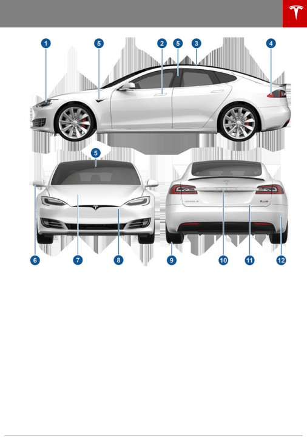
Exterior Overview
1.
Exterior lights (Lights on page 54)
2.
Door handles (Using Exterior Door Handles on page 12)
3.
Sunroof (optional) (Sunroof on page 24)
4.
Charge port (Charging Instructions on page 164)
5.
Autopilot cameras (About Autopilot on page 85)
6.
Exterior mirrors (Mirrors on page 48)
7.
Hood/Front trunk (Front Trunk on page 19)
8.
Radar sensor (hidden from view in the above image) (About Autopilot on page 85)
9.
Wheels and tires (Wheels and Tires on page 197)
10. Rear view camera (Rear View Camera on page 79 and About Autopilot on page 85)
11.
Rear trunk/liftgate (Rear Trunk on page 16)
12. Ultrasonic sensors (Park Assist on page 71 and About Autopilot on page 85)
Overview
3
Touchscreen Overview
The main components of the touchscreen are shown here. The touchscreen is used to control
many features that, in traditional cars, are controlled using physical buttons (for example,
adjusting the heating and air conditioning, headlights, etc.). You can also use the touchscreen to
customize Model S to suit your preferences.
Warning: Always pay attention to road and trac conditions when driving. To minimize driver
distraction and ensure the safety of vehicle occupants as well as other road users, avoid using
the touchscreen to adjust settings while the vehicle is in motion.
Note: The image below is provided for demonstration purposes only. Depending on vehicle
options, software version and market region, your touchscreen may appear slightly different.
4
Model S Owner's Manual
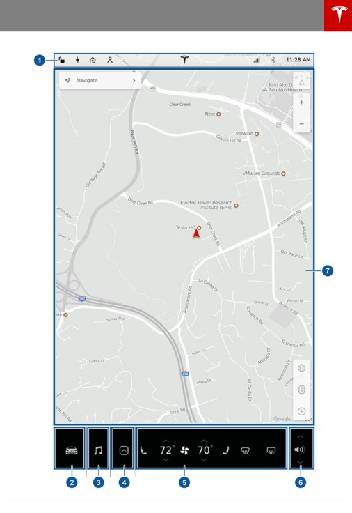
Touchscreen Overview
Overview
5
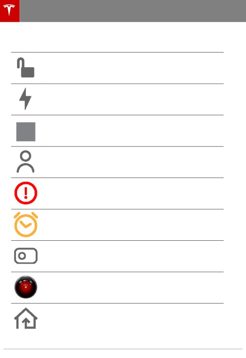
Touchscreen Overview
1.
This area on the top of the touchscreen displays useful information and provides shortcuts to
various features. In addition to the time of day and the current outside temperature, this area
displays the following icons:
Touch to lock/unlock all doors and trunks.
Touch to display the charging screen and access charge settings on the
touchscreen.
Access information about your Model S. See The Tesla "T" on page 9.
Add, configure, or quickly switch driver profiles (including Valet Mode and Easy
Entry). See Driver Profiles on page 42.
Displays when a warning notification is in effect. Touch to display information
about the warning.
Displays when a software update is available (see Software Updates on page 157).
Displays when dashcam is ready to be used (you have inserted a supported flash
drive into a front USB port). Touch to operate dashcam (see Dashcam on page
80).
Touch to enable or disable Sentry Mode to actively monitor the vehicle's
surroundings (see Sentry Mode on page 149).
Control or program HomeLink devices (if equipped) (see HomeLink Universal
Transceiver on page 153).
6
Model S Owner's Manual
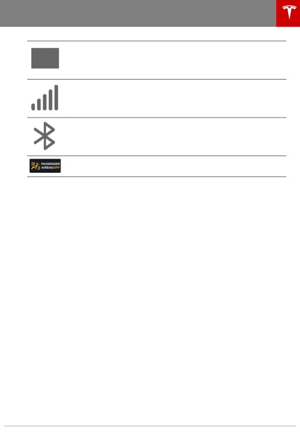
Touchscreen Overview
Connected to a Wi-Fi network.
Connected to cellular network. Touch to connect to Wi-Fi (see Connecting to Wi-Fi
on page 156).
Connect to a Bluetooth device (see Pairing a Bluetooth Phone on page 143).
Displays the status of the front passenger airbag (applicable only in regions where
the airbag can be disabled, as described in Airbags on page 37).
2. Controls. Touch to control features and customize Model S to suit your preferences (see
Controls on page 118).
3. Media Player (see Media and Audio on page 140).
Overview
7
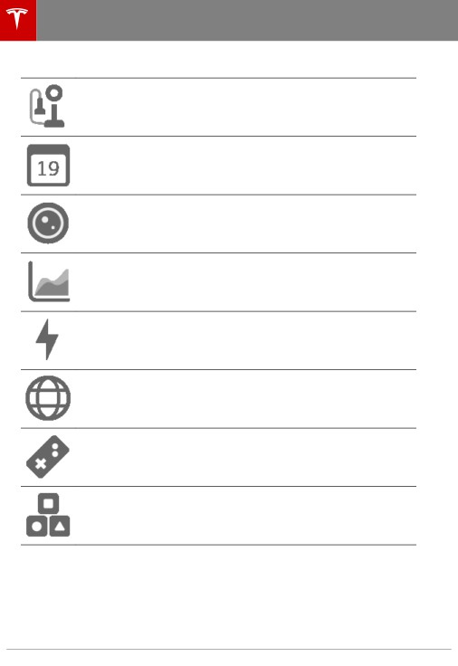
Touchscreen Overview
4. Touch the app launcher then choose from the following apps:
Call. See Phone on page 143.
Calendar. See Calendar on page 148.
Camera. Display the area behind Model S. This area also displays automatically
whenever you shift into Reverse. See Rear View Camera on page 79.
Energy. See Getting Maximum Range on page 77.
Charging. See Charging Instructions on page 164.
Web. Access the Internet using the web browser).
Entertainment. Browse the full library of games and access video streaming
services, all from your vehicle's touchscreen. To launch, Model S must be in Park.
Note: Due to vehicle configuration or market region, Entertainment, Arcade,
and/or Theater may not be available on your vehicle.
Toybox. Shortcut to Eater Eggs. See Easter Eggs on page 209.
Note: Swiping up on the app launcher displays the most recently used app (provided an app
is not currently being displayed).
Note: Depending on the market region and vehicle options, your vehicle may not be equipped
with some features.
5. Climate Controls (see Climate Controls on page 128).
6. Volume Control (see Volume Control on page 140).
8
Model S Owner's Manual
Touchscreen Overview
7.
The map displays on the touchscreen at all times (see Maps and Navigation on page 134).
Note: When you touch Controls, choose an app, or expand Media Player, the window displays
on top of the map. To close the Controls window, touch Controls again or touch the X in the
top corner of the window. To close an app, touch the X in the top corner of the window. To
close Media Player, drag it all the way down to the bottom of the touchscreen or touch the
icon again.
The Tesla "T"
Touch the Tesla "T" at the top center of the touchscreen to display:
• Vehicle name (see Naming Your Vehicle on page 126).*
• Vehicle configuration.*
• Odometer.*
• Vehicle Identification Number (VIN).*
• Version of software currently installed on your Model S.
• Access to release notes associated with the currently-installed software version.*
• Access to this owner's manual.
• One-touch access to call Tesla Customer Support and Roadside Assistance (if available in your
market region).
• One-touch access to all discovered Easter Eggs (see Easter Eggs on page 209).
*You can also display this information by touching Controls > Software.
Overview
9
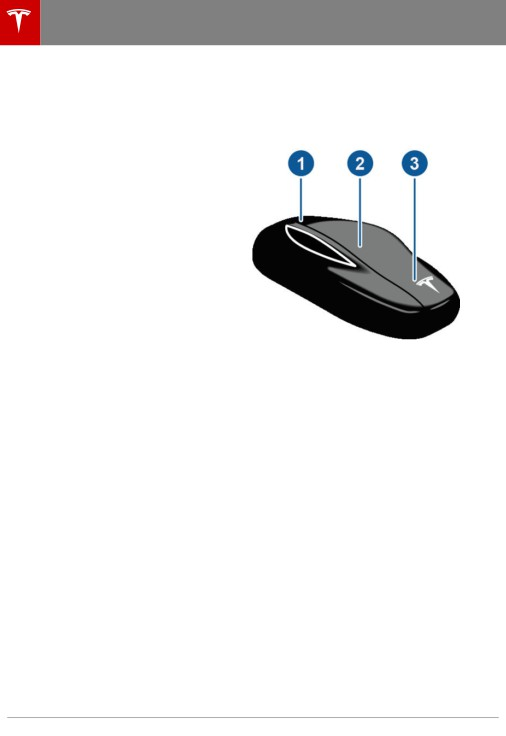
Keys and Doors
Keyless Locking and Unlocking
Using the Key
Locking and unlocking Model S is convenient.
To quickly familiarize yourself with the key,
Although you must be carrying a valid key,
think of the key as a miniature version of
there is no need to use it. Model S has sensors
Model S, with the Tesla badge representing
around the driver's door that can recognize
the front. The key has three buttons that feel
the presence of a key within a range of
like softer areas on the surface.
approximately three feet (one meter). So, you
can keep your key in your pocket or purse and
Model S detects it as you approach.
When you walk up to Model S carrying your
key, the doors automatically unlock if Passive
Entry is on (Controls > Safety & Security >
Passive Entry). If a door handle is retracted,
press it and it extends. If the Auto-Present
Handles setting is turned on (see Using
Exterior Door Handles on page 12), you do
not need to touch the door handle. Instead,
door handles extends automatically as you
approach Model S. To open the rear trunk,
press the switch located under the trunk’s
exterior handle.
Note: Model S must detect your key near the
driver's door before the doors or rear trunk
unlock.
1.
Trunk
Note: If Passive Entry is off, you must use the
key to unlock Model S. See Using the Key on
• Double-click to open the rear trunk.
page 10.
• If equipped with a powered liftgate,
Note: You can choose whether you want all
double-click to close the rear trunk.
doors, or just the driver's door, to unlock when
You can also single-click to stop the
you approach Model S carrying your key (see
liftgate when it is moving.
Door Unlock Mode on page 12).
• Hold the button down for one to two
seconds to open the charge port door.
When carrying your key with you, you can also
open the rear trunk without having to use the
2.
Lock/Unlock All
key. Simply press the switch located under the
• Single-click to lock doors and trunks
trunk’s exterior handle. Driver Door Unlock
(all doors and trunks must be closed).
Mode (see Door Unlock Mode on page 12)
Hazard warning lights flash once and
must be off and the vehicle must detect the
door handles retract. If a door or the
key near the driver's door before opening the
rear trunk is open, hazard warning
rear trunk.
lights flash three times and doors do
Model S also locks automatically. If you enable
not lock.
Walk Away Door Lock, Model S locks when
• Double-click to unlock. Hazard
you walk away carrying your key with you (see
warning lights flash twice and door
Walk-Away Locking on page 13).
handles extend. If a door or the rear
trunk is open, hazard warning lights
While sitting inside Model S, you can also lock
flash three times and doors do not
and unlock the vehicle by touching the icon on
lock.
the touchscreen's status bar or by touching
3.
Front trunk
Controls > Quick Controls.
• Double-click to open the front trunk.
Note: Depending on date of manufacture and
options selected at time of purchase, some
You do not need to point the key at Model S,
Model S vehicles are not equipped with the
but you must be within operating range
automatic locking and unlocking feature.
(which varies depending on the strength of
the key’s battery).
10
Model S Owner's Manual
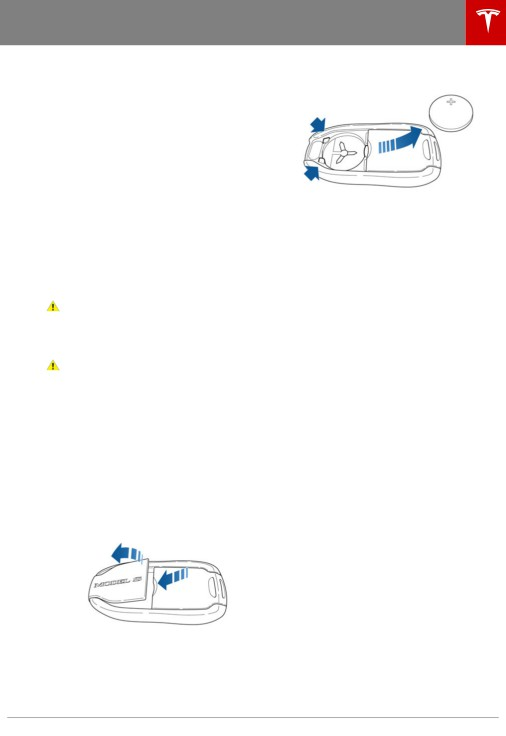
Keys and Doors
If Model S is unable to detect the key, the
2.
Remove the battery by carefully lifting it
touchscreen displays a message indicating
away from the front retaining clips.
that a key is not inside. Place the key where
Model S can best detect it, which is below the
12V power socket (see Key Not Inside on page
50).
Radio equipment on a similar frequency can
affect the key. If this happens, move the key at
least one foot (30 cm) away from other
electronic devices (phone, laptop, etc). If the
key does not work, you may need to change
its battery. If the key’s battery is discharged,
3.
Insert the new battery (type CR2032) with
you can open Model S by following the
the ‘+’ side facing up.
unlocking procedure (see Unlocking When the
Key Doesn't Work on page 13).
Note: Tesla recommends using Panasonic
CR2032 batteries. These can be
For increased security, your key fob may
purchased through online retailers, local
require periodical updates. To update your key
supermarkets, and drug stores.
fob, go to Controls > Service > Update Key
Fob and follow the onscreen instructions. Your
Note: Wipe the battery clean before fitting
vehicle must be in Park to update the key fob.
and avoid touching the battery's flat
surfaces. Finger marks on the flat surfaces
Caution: Remember to bring the key with
of the battery can reduce battery life.
you when you drive. Although you can
4.
Holding the cover at an angle, align the
drive Model S away from its key, you will
tabs on the widest side of the cover with
be unable to power it back on after it
the corresponding slots on the key, then
powers off.
press the cover firmly onto the key until it
Caution: Protect the key from impact,
snaps into place.
high temperatures, and damage from
5.
Test that the key works by unlocking and
liquids. Avoid contact with solvents,
locking your vehicle.
waxes and abrasive cleaners.
Getting More Keys
Replacing the Key Battery
If you lose a key or require an additional one,
The key’s battery lasts for approximately a
contact Tesla. Model S can recognize up to
year with normal use. When the battery is low,
three keys.
a message displays on the instrument panel.
When ordering a new key for Model S, take all
Follow these steps to replace it:
available keys with you for reprogramming.
Note: Tesla recommends replacing the battery
in all keys at the same time.
1.
With the key placed button-side down on
a soft surface, use a small flat-bladed tool
or fingernail to release the bottom cover.
Opening and Closing
11
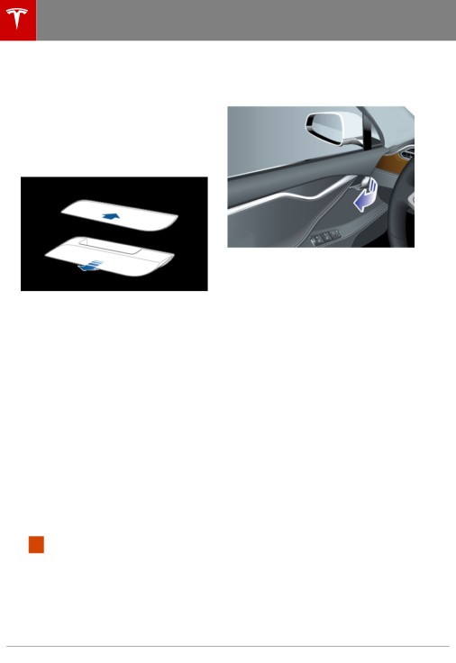
Keys and Doors
Using Exterior Door Handles
Opening Doors from the Interior
A light press on a door handle extends it,
To open a door, pull the interior door handle
provided Model S detects a valid key nearby
toward you.
and Passive Entry is on (Controls > Safety &
Security > Passive Entry).
You can set the door handles to extend
automatically whenever you approach the
driver’s side carrying the key. On the
touchscreen, touch Controls > Vehicle > Auto-
Present Handles.
Note: To prevent children from opening rear
doors using the interior handles, use the
touchscreen, Controls > Vehicle > Child-
Protection Lock, to turn on the child-
protection locks (see Child-Protection Lock on
Insert your hand into the handle and pull to
open the door.
page 13).
Door handles retract if you do not use them
within one minute after they extend. Just
Interior Locking and Unlocking
press a handle to extend it again. Door
From inside Model S, you can use the
handles also retract a minute after the last
touchscreen to lock or unlock doors and
door closes, when Model S begins moving,
trunks, provided a valid key is inside the
and when you lock Model S.
vehicle. Touch the lock icon on the
Note: To preserve battery life, Model S is
touchscreen's status bar.
designed to temporarily disable the Auto-
When you stop Model S and engage the Park
Present Handles feature when:
gear, you can choose whether you want doors
• The key has been out of range for more
to unlock or remain locked. To do so, touch
than 48 hours.
Controls > Vehicle > Unlock on Park. When
• The key remains within range for five
enabled, doors automatically unlock when you
engage the Park gear.
minutes after all doors have been closed.
In these cases, extend door handles by
You can also unlock doors and present
handles by pressing the Park button on the
touching one of them, or by pressing the
unlock button on the key. There is no need to
end of the gear selector a second time (for
reset the setting. The next time you approach
example, after pressing it one time to engage
Model S, provided the above conditions do
the Park gear).
not apply, handles automatically extend.
Note: If a door or trunk is still open when you
lock Model S, it locks when you close it.
Whenever a door is open, the Door
Open indicator displays on the
instrument panel. Also, the image of
Door Unlock Mode
the Model S on the touchscreen's
You can choose to unlock only the driver's
Controls > Quick Controls window
door when you approach your vehicle carrying
also provides a visual representation
your key or when you shift into Park. To do so,
of an open door or trunk.
touch Controls > Vehicle > Driver Door Unlock
Mode.
12
Model S Owner's Manual
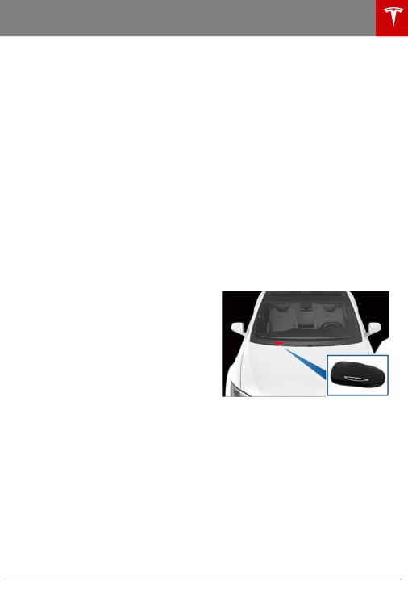
Keys and Doors
Child-Protection Lock
Unlocking When the Key Doesn't
Work
Model S has child-protection locks on the rear
doors and liftgate to prevent them from being
If Model S does not unlock when you walk up
opened using interior handles. Use the
to it, or when you double-click the unlock
touchscreen to turn child-protection locks on
button on the top of your key, the key’s
or off. Touch Controls > Vehicle > Child-
battery may be dead. Even if this is the case,
Protection Lock.
you can still use the key to unlock and drive
Note: It is recommended that you turn child-
Model S.
protection locks on whenever children are
Note: Although you can still use your key, you
seated in the rear seats.
should consider using the mobile app to
remotely unlock and start the vehicle. Then,
replace your key's battery when convenient.
Drive Away Locking
To unlock Model S (and disable the security
Model S automatically locks all doors
alarm) using the key, first position the key near
(including the trunks) whenever your driving
the base of the passenger side windshield
speed exceeds 5 mph (8 km/h).
wiper. Then press the front door handle on the
right side of the vehicle. If Model S doesn't
Walk-Away Locking
unlock, try adjusting the position of the key
and try again. The key must be in the correct
Doors and trunks automatically lock whenever
position for the vehicle to unlock.
you walk away carrying the key or if the key is
otherwise not detected by your vehicle (not
Note: The following illustration assumes a left
present, dead battery, etc.).
hand drive (LHD) vehicle. On a right hand
drive (RHD) vehicle, the locations are
To turn this feature on or off, touch Controls >
mirrored.
Vehicle > Walk-Away Door Lock.
Note: Depending on date of manufacture and
options selected at time of purchase, some
Model S vehicles are not equipped with the
Walk-Away Locking.
Note: If Model S detects an authenticated key
for five minutes after you exit the vehicle and
close all doors, Walk-Away Lock disables and
will not lock when you leave with the key. You
will need to manually lock your vehicle until
after your next drive.
Note: If all doors are closed and you use the
key to unlock Model S, walk away locking is
To drive Model S after gaining access to the
temporarily suspended for one minute. If you
cabin, place the bottom of the key against the
open a door within this minute, it does not re-
center console, immediately below the 12V
lock until after all the doors are closed and
power outlet, then press and hold the brake
you have walked away with the key.
pedal to start Model S.
Note: If your vehicle was unlocked using the
mobile app, it automatically locks after a short
period of time with all doors closed. If parking
in an area without cellular service, such as an
indoor parking garage, ensure that you have a
functional key fob readily available.
Opening and Closing
13
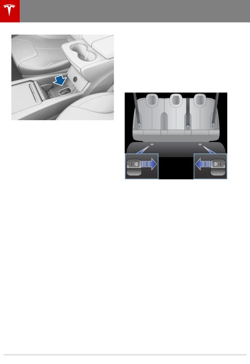
Keys and Doors
Opening Interior Doors with No
Power
If Model S has no electrical power, the front
doors open as usual using the interior door
handles. To open the rear doors, fold back the
edge of the carpet below the rear seats to
expose the mechanical release cable. Pull the
mechanical release cable toward the center of
the vehicle.
Note: Unlocking Model S using this method
disables walk away locking. You must
manually re-enable walk away locking after
replacing the key’s battery.
14
Model S Owner's Manual
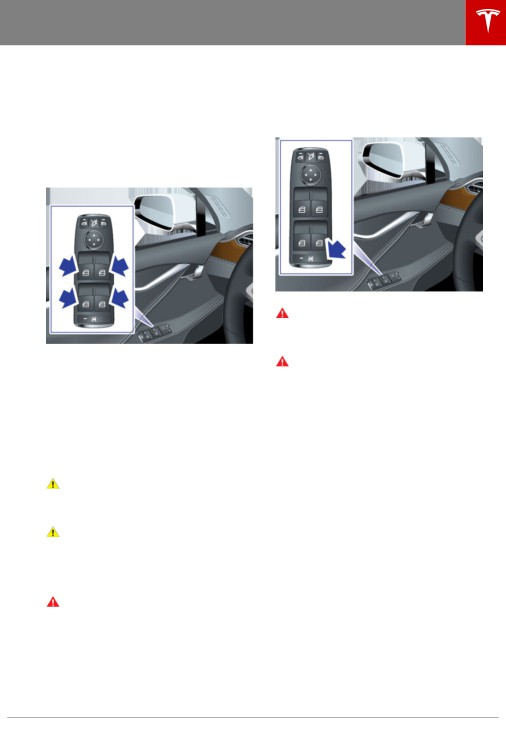
Windows
Opening and Closing
Locking Rear Windows
Press down on a switch to lower the
To prevent passengers from using the rear
associated window. Window switches operate
window switches, press the rear window lock
at two levels:
switch. The switch light turns on. To unlock
rear windows, press the switch again.
• To lower a window fully, press the switch
all the way down and immediately release.
• To lower a window partially, press the
switch gently and release when the
window is where you want it.
Warning: To ensure safety, it is
recommended that you lock the rear
window switches whenever children are
seated in the rear seats.
Similarly, pull a switch to raise the associated
Warning: Never leave children unattended
window:
in Model S.
• To raise a window fully, pull the switch all
the way up and immediately release.
• To raise a window partially, pull the switch
gently and release when the window is
where you want it.
Note: See Cold Weather Best Practices on
page 83 for information on preparing
windows for cold weather.
Caution: When exiting the vehicle, be
careful not to unintentionally press the
window switches, as they may lower the
windows on the driver or other doors.
Caution: Closing the door while the
window is fully raised (for example, if
manually raised) can damage the
windows or the vehicle. Ensure the
window is slightly lowered before closing
the door.
Warning: Before closing a window, it is
the driver’s responsibility to ensure that
all occupants, especially children, do not
have any body parts extended through
the window’s opening. Failure to do so
can cause serious injury.
Opening and Closing
15
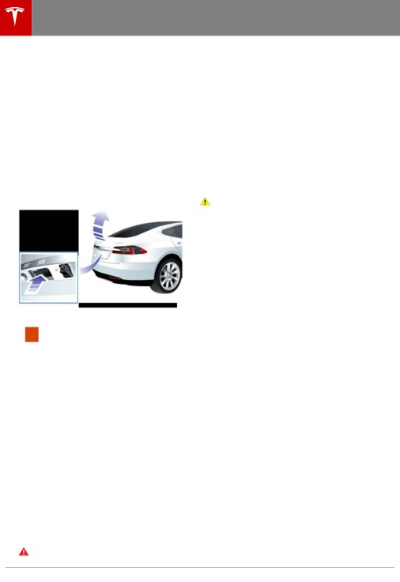
Rear Trunk
Opening
area around the liftgate is free of
obstacles (people and objects). Although
To open the rear trunk, ensure the vehicle is in
the powered liftgate can detect obstacles,
Park then do one of the following:
it cannot detect all objects at all times. Do
not rely on the liftgate to sense an
• Touch the associated OPEN button on the
touchscreen (Controls > Quick Controls).
obstruction when opening or closing. You
must proactively monitor the liftgate to
• Double-click the rear trunk button on the
ensure that it does not come into contact
key.
with a person or object. Failure to do so
• Touch the trunk button on the mobile app.
may result in damage or serious injury.
• With Model S unlocked, press the switch
located under the rear trunk's exterior
handle.
Load Limits
Note: If Passive Entry is off, you must use the
Secure all cargo before moving Model S, and
key to unlock Model S before you can use the
place heavy cargo in the lower trunk
switch to manually open the rear trunk. See
compartment.
Using the Key on page 10.
Caution: To avoid damage, never load
more than 175 lbs (80 kg) on the rear load
floor (above the lower trunk
compartment) or more than 285 lbs (130
kg) in the lower trunk compartment.
Doing so can cause damage.
Closing
If Model S is not equipped with a powered
liftgate, close the rear trunk by pulling down
on the liftgate and pushing firmly until it is
fully closed.
To close the powered liftgate, do one of the
following:
When a door or trunk/liftgate is
open, the instrument panel displays
• Touch the associated CLOSE button on
the Door Open indicator light. The
the touchscreen (Controls > Quick
image of your Model S on the
Controls).
touchscreen also displays the open
• Double-click the trunk button on the key
trunk.
fob.
• Press the switch located on the underside
To stop a powered liftgate while it is moving,
of the liftgate (see Adjusting Liftgate
single-click the rear trunk button on the key
Opening Height on page 17).
fob. Then, when you double-click the rear
If a powered liftgate senses an obstruction
trunk button, it moves again, but in the
when closing, it automatically opens and
opposite direction (provided it was not almost
sounds five chimes. Remove the obstruction
entirely open or closed when you stopped it).
and try closing it again. If it cannot close the
For example, if you single-click to stop the
second time, powered operation is temporarily
liftgate while it is opening, when you double-
disabled. Close it manually to restore powered
click, it closes.
operation.
Note: In emergency situations, you can
Note: The power closing feature is also
override an Open or Close command by
temporarily disabled if you leave the powered
grabbing hold of the lift gate to stop it in
liftgate open for more than an hour.
place.
To open the rear trunk from inside Model S in
the unlikely situation that Model S has no
power, see Interior Emergency Trunk Release
on page 17.
Warning: Before opening or closing the
liftgate, it is important to check that the
16
Model S Owner's Manual
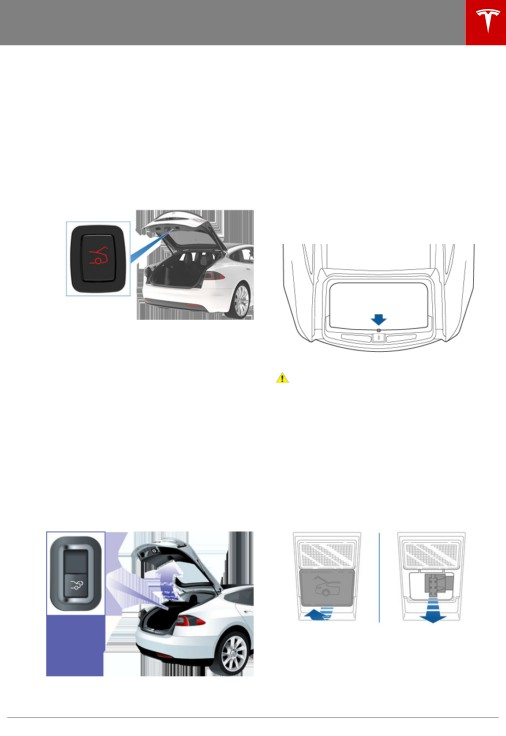
Rear Trunk
Adjusting Liftgate Opening Height
If Model S is equipped with the power liftgate,
you do not need to push it up. When you
If Model S is equipped with a powered liftgate,
press the release switch, it opens, and when
you can adjust its opening height to make it
you pull the switch, it closes.
easier to reach or to avoid low-hanging
ceilings or objects (for example, a garage door
Note: The interior release switch is disabled if
or light):
child-protection locks are turned on (see
Child-Protection Lock on page 13), or if
1.
Open the liftgate, then manually lower or
Model S is moving.
raise it to the desired opening height.
2. Press and hold the button on the
Accessing the Cargo Area
underside of the liftgate for two seconds
until you hear a confirmation chime.
To access the cargo area inside the rear trunk,
pull up the strap at the rear of the cargo cover.
You can then fold the cargo cover forward or
remove it from Model S.
3. Confirm that you have set it to the desired
height by closing the liftgate, then
reopening it.
Caution: Never load more than 175 lbs (80
Interior Release
kg) on the rear load floor (above the
To open the rear trunk from inside a Model S
lower trunk compartment) or more than
equipped with the Tesla Built-In Rear Facing
285 lbs (130 kg) in the lower trunk
Child Seats, press the interior release switch
compartment. Doing so can cause
located inside the rear trunk and push the
damage.
liftgate up. If Model S is locked and is
equipped with a power liftgate, the first press
unlocks the rear trunk and the second press
Interior Emergency Trunk Release
opens it.
An illuminated mechanical release located
Note: If Model S is not equipped with the Tesla
inside the rear trunk allows you to open the
Rear Facing Child Seats, the switch may
rear trunk from the inside if Model S has no
appear to exist, but it will be inactive and
electrical power. This mechanical release also
pressing it does not release the liftgate.
allows a person locked inside to get out.
1.
Remove the cover by pulling its lower
edge very firmly toward you.
2. Pull the cable to release the latch.
3. Push the rear trunk open.
Note: The button glows for several hours after
a brief exposure to ambient light.
Opening and Closing
17
Rear Trunk
Warning: Do not allow children to play
inside the trunk or become locked inside.
An unrestrained child could suffer serious
injury or death in a crash. A child could
suffer heat exhaustion if trapped in the
vehicle, especially without climate control
on.
18
Model S Owner's Manual
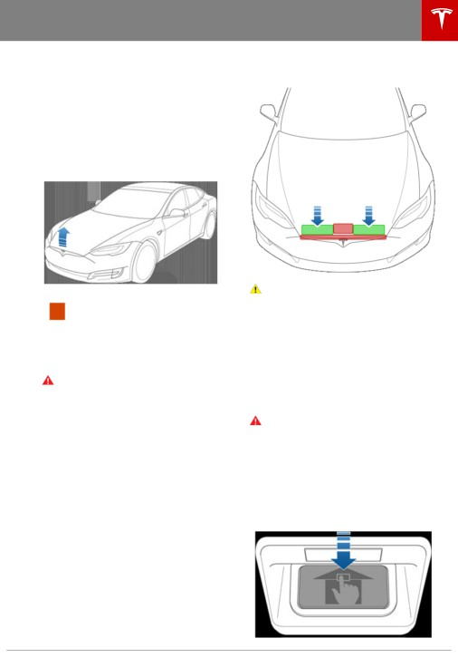
Front Trunk
Opening
3. Carefully try to lift the front edge of the
hood to ensure that it is fully closed.
To open the front trunk:
1.
Ensure that the area around the hood is
free of obstacles.
2. Touch the associated OPEN button on the
touchscreen (Controls > Quick Controls),
double-click the front trunk button on the
key, or touch the front trunk button on the
mobile app.
3. Pull the hood up.
Caution: To prevent damage:
When a door or trunk/liftgate is
• Apply pressure only to the green
open, the instrument panel displays
areas shown. Applying pressure to
the Door Open indicator light. The
the red areas can cause damage.
image of your Model S on the
• Do not close the hood with one hand.
touchscreen also displays the open
Doing so applies concentrated force
front trunk.
in one area and can result in a dent or
crease.
• Do not apply pressure to the front
Warning: Before opening or closing the
edge of the hood. Doing so can
hood, it is important to check that the
crease the edge.
area around the hood is free of obstacles
• Do not slam or drop the hood.
(people and objects). Failure to do so
may result in damage or serious injury.
Warning: Before driving, you must ensure
that the hood is securely latched in the
Note: The front trunk locks whenever closed
fully closed position by carefully trying to
and you lock Model S using either the
lift the front edge of the hood upward
touchscreen or externally using the key or
and confirming there is no movement.
mobile app, you leave Model S carrying your
key (if Walk-Away Locking on page 13 is
turned on), or when Valet mode is active (see
Interior Emergency Release
Valet Mode on page 43).
An illuminated interior release button inside
the front trunk allows a person locked inside
Closing
to get out.
The Model S hood is not heavy enough to
latch under its own weight and applying
pressure on the front edge or center of the
hood can cause damage.
To properly close the hood:
1.
Lower the hood until the striker touches
the latches.
2. Place both hands on the front of the hood
in the areas shown (in green), then press
down firmly to engage the latches.
Opening and Closing
19
Front Trunk
Press the interior release button to open the
front trunk, then push up on the hood.
Note: The interior release button glows
following a brief exposure to ambient light.
Warning: People should never climb
inside the front trunk. Never shut the
front trunk when a person is inside.
Warning: Care should be taken to ensure
that objects inside the front trunk do not
bump against the release button, causing
the trunk to accidentally open.
20
Model S Owner's Manual
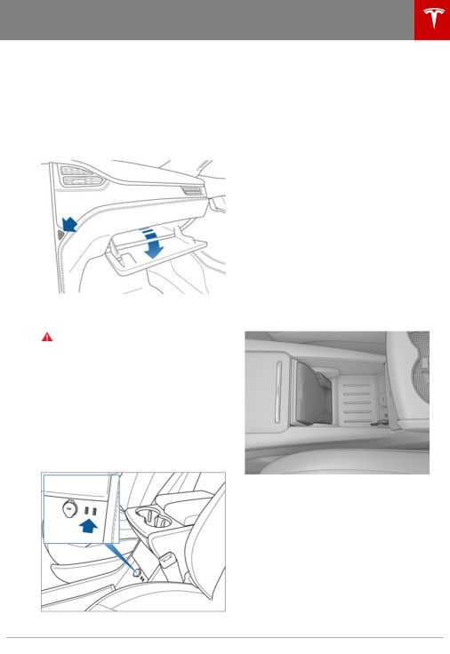
Interior Storage and Electronics
Glove Box
Note: Do not connect multiple devices using a
USB hub. This can prevent connected devices
To open the glove box, press the switch
from charging or from being recognized by
located on the side of the touchscreen. The
the Media Player.
glove box locks whenever Model S is locked
externally, using the key or walk-away locking.
Note: Power is available whenever the vehicle
It also locks when Model S is in Valet mode
is considered "awake" The vehicle may be
awake for many reasons. For example, when
(see Valet Mode on page 43). It does not lock
when you lock Model S using the lock icon on
using features such as Summon, or when
features such as Smart Preconditioning, Cabin
the touchscreen's status bar.
Overheat Protection, Keep Climate On, Dog
Mode, Sentry Mode, etc. are enabled. The
vehicle is also awake whenever the 12V battery
is being charged or is in use, during HV
charging, when the vehicle is communicating
with the mobile app, etc. Leaving an accessory
plugged in does not deplete the 12V battery.
Inductive Phone Charger
The Model S inductive phone charger can
charge your Qi-enabled smartphone at up to
7.5W of power. Simply open the center
console rear bin lid and place your
smartphone in the phone charger, which is
located on the back of the bin cover. The
Note: If you leave the glove box open, its light
inductive phone charger uses either one of the
eventually turns off.
front USB ports to charge.
Warning: When driving, keep the glove
box closed to prevent injury to a
passenger if a collision or sudden stop
occurs.
USB Ports
Your Model S has two USB ports located on
the front of the center console that you can
use to connect USB devices. To play audio
files stored on a USB drive connected to these
ports, see Playing Media from Devices on page
142. You can also use these ports to charge
USB devices.
Model S will charge your smartphone only
when the vehicle is powered on (i.e., the
touchscreen is on and you are in the vehicle).
You smartphone will not continue to charge if
you leave it plugged in after exiting the
vehicle. Model S will not charge your
smartphone if the vehicle's Battery is
discharged.
Note: The inductive phone charger may not
work if your phone case is too large or made
of metal. Take the smartphone out of the case
and place the phone in the charger.
Opening and Closing
21
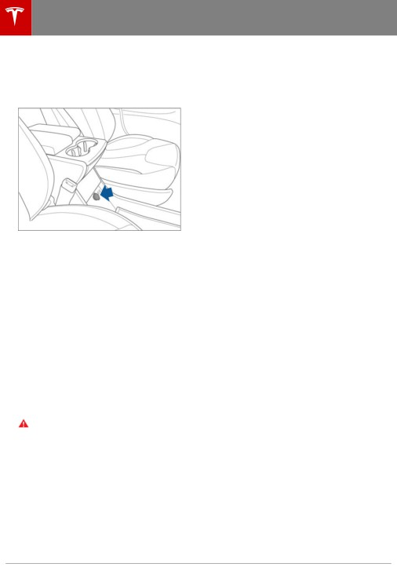
Interior Storage and Electronics
12V Power Socket
Your Model S has a power socket located on
the front of the center console. Power is
available whenever the instrument panel and
touchscreen are on.
The 12V power socket is suitable for
accessories requiring up to 11A continuous
draw (15A peak) or a maximum of 150
continuous watts (180 watts peak).
Note: Power is available whenever the vehicle
is considered "awake" The vehicle may be
awake for many reasons. For example, when
using features such as Summon, or when
features such as Smart Preconditioning, Cabin
Overheat Protection, Keep Climate On, Dog
Mode, Sentry Mode, etc. are enabled. The
vehicle is also awake whenever the 12V battery
is being charged or is in use, during HV
charging, when the vehicle is communicating
with the mobile app, etc. Leaving an accessory
plugged in does not deplete the 12V battery.
Note: In situations where Model S is unable to
detect the key (low battery, interference, etc.),
place it immediately below the 12V power
socket where Model S can best detect it.
Warning: The power socket and an
accessory’s connector can become hot.
22
Model S Owner's Manual
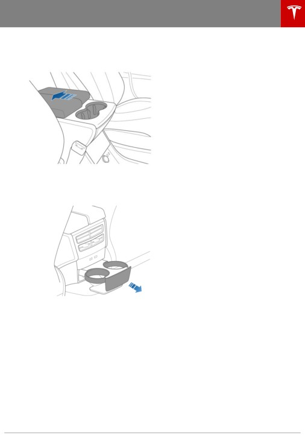
Interior Storage and Electronics
Cup Holders
To expose a front cup holder, slide back the
armrest.
To expose rear cup holders (if available on
your vehicle), press and release the cup holder
face plate located at the back of the center
console.
Opening and Closing
23
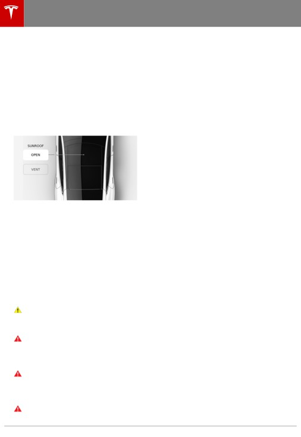
Sunroof
Opening and Closing
can damage the sunroof’s seals and anti-
trap mechanism, and can cause injury to
If your Model S is equipped with a sunroof,
occupants.
you can vent and close the sunroof remotely
using the mobile app or you can adjust the
position of the sunroof by controlling it from
the menu on your right scroll wheel.
For full control of the sunroof, touch
Controls > Quick Controls on the touchscreen.
Drag, or tap on, the image of the sunroof or
touch the buttons next to the image of your
vehicle. The sunroof moves to the selected
position. To stop the sunroof from moving at
any time, touch the image of the sunroof.
• OPEN: touch once to open the sunroof to
its comfort position (75% open). Touch
twice to open the sunroof fully.
• VENT: touch to open the sunroof slightly.
• CLOSE: touch to fully close the sunroof.
Note: If the sunroof detects any obstruction, it
does not close. If, after removing the
obstruction, it still does not close, touch and
hold CLOSE to override the sunroof’s anti-trap
mechanism.
Note: If you find wind noise (which varies
depending on driving speed) excessive, even
with the sunroof in the comfort position, open
a window slightly.
Caution: Remove snow and ice before
opening the sunroof. Opening a sunroof
covered in snow and ice can cause
damage.
Warning: Do not allow occupants to
extend any part of their body through the
sunroof. Doing so can cause serious injury
from flying debris, tree branches, or other
obstructions.
Warning: Before closing the sunroof,
ensure that occupants, especially
children, do not have any body part
extended through the sunroof opening.
Failure to do so can cause serious injury.
Warning: Do not carry an object that
protrudes through the sunroof. Doing so
24
Model S Owner's Manual
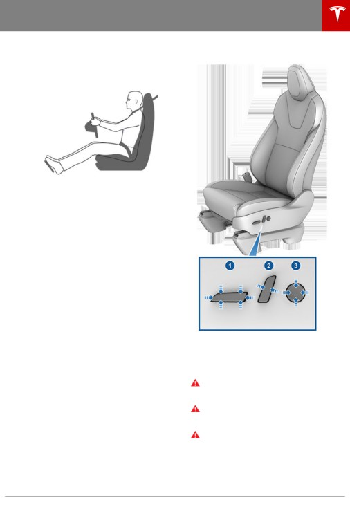
Front and Rear Seats
Correct Driving Position
Adjusting the Front Seats
The seat, head support, seat belt and airbags
work together to maximize your safety. Using
these correctly ensures greater protection.
Position the seat so you can wear the seat belt
correctly, while being as far away from the
front airbag as possible:
1.
Sit upright with both feet on the floor and
the seat back reclined no more than 30
degrees.
2. Make sure you can easily reach the pedals
and that your arms are slightly bent when
holding the steering wheel. Your chest
should be at least 10 inches (25 cm) from
the center of the airbag cover.
3. Place the shoulder section of the seat belt
mid-way between your neck and your
shoulder. Fit the lap section of the belt
tightly across your hips, not across your
stomach.
Model S seats include integrated head
supports that cannot be adjusted or removed.
1.
Move seat forward/backward and adjust
the seat’s height and tilt angle up/down.
2.
Adjust backrest.
3.
Adjust lumbar support.
Warning: Before adjusting a front seat,
check that the area around the seat is
free of obstacles (people and objects).
Warning: Do not adjust seats while
driving. Doing so increases the risk of a
collision.
Warning: Riding in a moving vehicle with
the seat back reclined can result in
serious injuries in a collision, as you could
slide under the lap belt or be propelled
into the seat belt. Ensure your seat back
is reclined no more than 30 degrees when
the vehicle is moving.
Seating and Safety Restraints
25
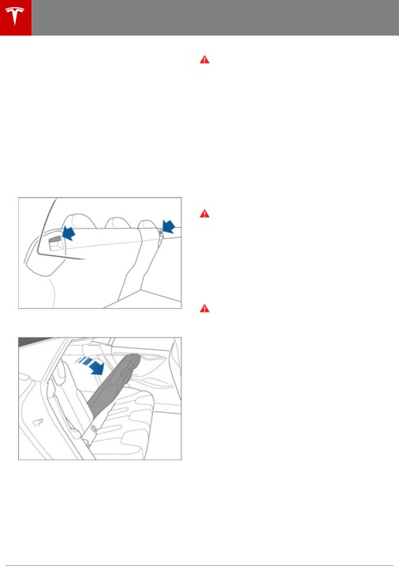
Front and Rear Seats
Folding Rear Seats
Warning: Always ensure the seat backs
are locked in their upright position by
Model S has a split rear seat that can fold
pushing it forward or rearward. Failure to
forward.
do so increases the risk of injury.
Note: If Model S is equipped with the optional
executive rear seats, these seats do not fold
Seat Heaters
forward.
The front seats contain heating pads that
Note: Driving with the rear seats folded
operate at three levels from 3 (highest) to 1
forward might result in increased perceivable
(lowest). To operate the seat heaters, see
noise and/or vibration coming from the rear of
Climate Controls on page 128.
the vehicle (trunk, suspension, etc.).
If Model S is equipped with the cold weather
Before folding, remove items from the seats
package, you can also control seat heaters in
and the rear footwell. To allow the rear seat
all rear seating positions, as well as heated
backs to fold completely flat, you may need to
wipers and washer nozzles by touching the
move the front seats forward.
climate controls on the touchscreen (see
Climate Controls on page 128).
Warning: To avoid burns resulting from
prolonged use, individuals who have
peripheral neuropathy, or whose capacity
to feel pain is limited because of diabetes,
age, neurological injury, or some other
condition, should exercise caution when
using the climate control system and seat
heaters.
Seat Covers
Warning: Do not use seat covers in
Model S. Doing so could restrict
To fold a rear seat, pull the corresponding
deployment of the seat-mounted side air
lever and fold the seat forward.
bags if a collision occurs. Also, if the
vehicle is equipped with an occupant
detection system that is used to
determine the status of the passenger
front airbag, seat covers may interfere
with this system.
Raising Rear Seats
Before raising a rear seat, make sure that the
seat belts are not trapped behind the
backrest.
Pull the seat back upward until it locks into
place.
To confirm that the seat back is locked in the
upright position, try pulling it forward.
26
Model S Owner's Manual
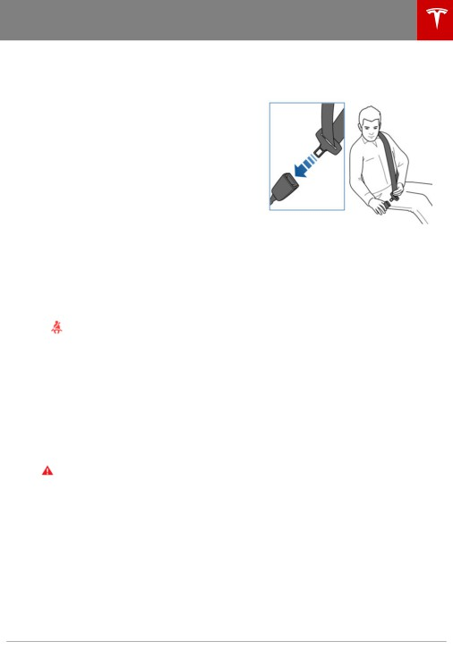
Seat Belts
Wearing Seat Belts
3. Insert the latch plate into the buckle and
press together until you hear a click
Using seat belts and child safety seats is the
indicating it is locked in place.
most effective way to protect occupants if a
collision occurs. Therefore, wearing a seat belt
is required by law in most jurisdictions.
Both the driver and passenger seats are
equipped with three-point inertia reel seat
belts. Inertia reel belts are automatically
tensioned to allow occupants to move
comfortably during normal driving conditions.
To securely hold child safety seats, all
passenger seating positions are equipped with
an automatic locking retractor (ALR) that, by
pulling the seat belt beyond the length
needed for a typical adult occupant, locks the
belt into place until the seat belt is unbuckled.
4. Pull the belt to check that it is securely
The seat belt reel automatically locks to
fastened.
prevent movement of occupants if Model S
experiences a force associated with hard
5. Pull the diagonal part of the belt toward
acceleration, braking, cornering, or an impact
the reel to remove excess slack.
in a collision.
To Release a Belt
Seat Belt Reminders
Hold the belt near the buckle to prevent the
belt from retracting too quickly, then press the
The seat belt reminder on the
button on the buckle. The belt retracts
instrument panel alerts you if a seat
automatically. Ensure there is no obstruction
belt for an occupied driver or
that prevents the belt from fully retracting.
passenger seat is unbuckled. If the
The belt should not hang loose. If a seat belt
belt remains unbuckled, the
does not fully retract, contact Tesla.
reminder flashes and an intermittent
chime sounds. If all occupants are
buckled up and the reminder stays
Wearing Seat Belts When Pregnant
on, re-buckle seat belts to ensure
Do not put the lap or shoulder sections of the
they are correctly latched. Also
seat belt over the abdominal area. Wear the
remove any heavy objects (such as a
lap section of the belt as low as possible
briefcase) from an unoccupied seat.
across the hips, not the waist. Position the
If the reminder light continues to
shoulder portion of the belt between the
stay on, contact Tesla.
breasts and to the side of the abdomen.
Consult your doctor for specific guidance.
Warning: Seat belts must be worn by
passengers in all seating positions.
To Fasten a Belt
1.
Ensure correct positioning of the seat (see
Correct Driving Position on page 25).
2. Draw the belt out smoothly, ensuring the
belt lays flat across the pelvis, chest and
mid-point of your collar bone, between
the neck and shoulder.
Seating and Safety Restraints
27
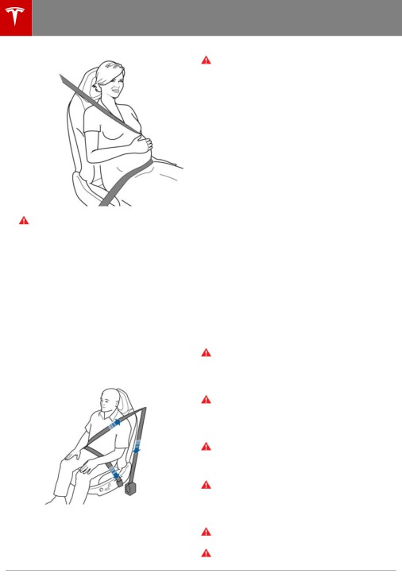
Seat Belts
Warning: Once the seat belt pre-
tensioners have been activated, they must
be replaced. After any collision, have the
airbags, seat belt pre-tensioners and any
associated components checked and, if
necessary, replaced.
Testing Seat Belts
To confirm that seat belts are operating
correctly, perform these three simple checks
on each seat belt.
1.
With the seat belt fastened, give the
webbing nearest the buckle a quick pull.
The buckle should remain securely locked.
2. With the belt unfastened, unreel the
webbing to its limit. Check that unreeling
is free from snags, and visually check the
Warning: Never place anything between
webbing for wear. Allow the webbing to
you and the seat belt to cushion the
retract, checking that retraction is smooth
impact in the event of a collision.
and complete.
3. With the webbing half unreeled, hold the
tongue plate and pull forward quickly. The
Seat Belt Pre-tensioners
mechanism should lock automatically and
The front seat belts are equipped with
prevent further unreeling.
pre-tensioners that work in conjunction with
If a seat belt fails any of these tests, contact
the airbags in a severe frontal collision. The
Tesla immediately.
pre-tensioners automatically retract both the
seat belt anchor and the seat belt webbing,
For information about cleaning seat belts, see
reducing slack in both the lap and diagonal
Seat Belts on page 181.
portions of the belts, resulting in reduced
forward movement of the occupant.
Seat Belt Warnings
The outboard seats are equipped with
shoulder pre-tensioners to retract the seat
Warning: Seat belts should be worn by all
belt webbing to reduce forward movement of
occupants at all times, even if driving for
the occupant.
a very short distance. Failure to do so
increases the risk of injury or death if a
collision occurs.
Warning: Secure small children in a
suitable child safety seat as described in
the Child Safety Seat topic. Always follow
the child safety seat manufacturer's
instructions when installing.
Warning: Ensure that all seat belts are
worn correctly. An improperly worn seat
belt increases the risk of injury or death if
a collision occurs.
Warning: Do not wear seat belts over
hard, fragile or sharp items in clothing,
such as pens, keys, eyeglasses, etc. The
pressure from the seat belt on such items
If the pre-tensioners and airbags did not
can cause injury.
activate in an impact, this does not mean they
malfunctioned. It usually means that the
Warning: Seat belts should not be worn
strength or type of force needed to activate
with any part of the strap twisted.
them was not present.
Warning: Each seat belt assembly must
be used by one occupant only. It is
28
Model S Owner's Manual
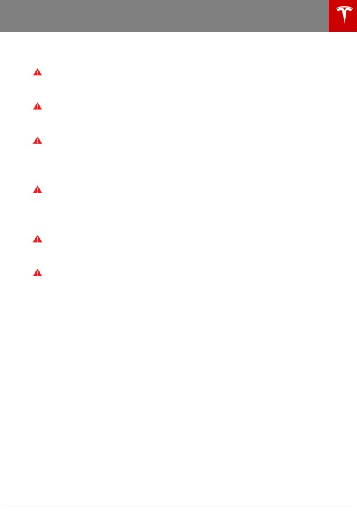
Seat Belts
dangerous to put a seat belt around a
child being carried on an occupant’s lap.
Warning: Seat belts that have been worn
in a collision must be inspected or
replaced by Tesla, even if damage to the
assembly is not obvious.
Warning: Seat belts that show signs of
wear (such as fraying), or have been cut
or damaged in any way, must be replaced
by Tesla.
Warning: Avoid contaminating a seat
belt’s components with any chemicals,
liquids, grit, dirt or cleaning products. If a
seat belt fails to retract or latch into the
buckle, it must be replaced immediately.
Contact Tesla.
Warning: Do not make modifications or
additions that can prevent a seat belt
mechanism from taking up slack, or that
can prevent a seat belt from being
adjusted to remove slack. A slack belt
greatly reduces occupant protection.
Warning: Do not make modifications that
can interfere with the operation of a seat
belt, or that can cause a seat belt to
become inoperable.
Warning: When seat belts are not in use,
they should be fully retracted and not
hanging loose. If a seat belt does not fully
retract, contact Tesla.
Seating and Safety Restraints
29
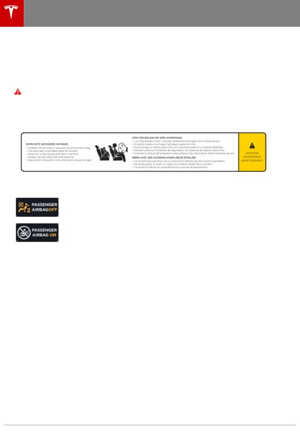
Child Safety Seats
Guidelines for Seating Children
Your Model S seat belts are designed for adults and larger children. You must restrain infants and
small children in the rear seats only, and you must use a suitable child safety seat appropriate for
the child’s age, weight, and size.
Never use child safety seats in the front row passenger seat.
Warning: Never seat a child on a seat with an ACTIVE AIRBAG in front of it. DEATH or
SERIOUS INJURY to the child can occur.
Refer to the following label fitted to the sun visors.
Note: The image shown below is representative only and may not be identical to the label in your
vehicle.
Model S has an occupancy sensor in the front passenger seat that controls the status of the
passenger front airbag (see Airbags on page 37).
When driving with a child seat on the front passenger seat, always double-
check the status of the passenger front airbag to confirm that it is OFF.
To protect an adult subsequently occupying the front passenger seat, always
double-check the passenger front airbag to confirm that it is ON.
30
Model S Owner's Manual
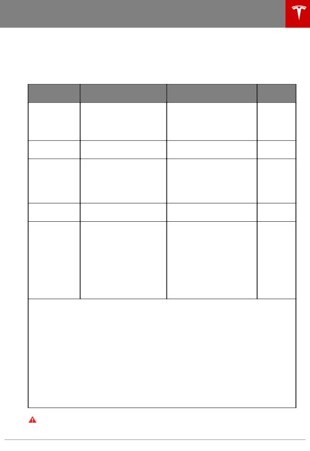
Child Safety Seats
Choosing a Child Safety Seat
All children age 12 and under should ride in the second row seats. Always use a child safety seat
suitable for a young child’s age and weight. The following table is based on child safety seat
recommendations determined by National Highway Trac Safety Administration (NHTSA). For
Infants
Toddlers
Young
children
Age
Birth to 1 year*
Over 1 year*
4 years and
older, and
less than 57
in. (145 cm)
tall
Weight
Up to at least 20 lbs (9 kg)*
Over 20 lbs (9 kg) (minimum)
Over 40 lbs
and up to 40 lbs (18 kg)*
(18 kg)
Type of child
Rear facing (or convertible)
Forward facing (or
Forward
safety seat
convertible)*
facing or
seat belt
retained
booster
seat****
Seat position
Rear facing only*
Rear facing as long as possible,
Forward
then forward facing*
facing
Recommended
If combined weight of child
If combined weight of child
Attach
attachment
and safety seat is up to
and safety seat is up to 65 lbs
booster
method
65 lbs (29 kg), attach using
(29 kg), attach using either
seats using
either LATCH** (lower anchor
LATCH** (both lower anchors
the seat
only) or the seat belt only.***
and top tether anchor), or the
belt only.
If combined weight of child
seat belt and upper tether
and safety seat is over 65 lbs
strap.*** If combined weight of
(29 kg), attach using the seat
child and safety seat is over
belt only.***
65 lbs (29 kg), attach using the
seat belt and upper tether
strap.***
* Many child safety seats currently available allow children to ride rear-facing using the child
safety seat’s integrated 5-point harness for a longer period of time BASED UPON SPECIFIC
HEIGHT AND WEIGHT LIMITS. Keep your child in a rear facing seat for as long as possible.
CHECK THE CHILD SAFETY SEAT MANUFACTURER’S INSTRUCTIONS AND CAREFULLY
FOLLOW ALL INSTRUCTIONS.
** LATCH ("Lower Anchors and Tethers for Children") and ISOFIX are international standards for
attachment points for child safety seats in passenger cars that enable compliant child safety
seats to be quickly and safely secured. The system has other regional names including LUAS
("Lower Universal Anchorage System") or Canfix in Canada. It has also been called the
"Universal Child Safety Seat System" or UCSSS.
*** Subject to instructions provided by the child safety seat manufacturer.
****Keep your child in a forward facing child safety seat with a harness and tether until the child
reaches the child safety seat's maximum allowable height or weight as specified by the
manufacturer of the child safety seat.
Warning: Do not use Easy Entry (as described in Driver Profiles on page 42) to automatically
move the driver's seat to the full rearward position if a child safety seat is installed on a rear
Seating and Safety Restraints
31
Child Safety Seats
seat behind the driver's seat. With reduced clearance, the movement of the seat may impact
a child's legs, cause injury, or dislodge the seat.
Warning: Do not use LATCH anchors with child safety seats or booster seats that have an
integral safety belt where the combined weight of the child plus the child safety seat exceeds
65 lbs (29.5 kg).
Warning: Laws that govern how and where children should be carried when traveling in a
vehicle are subject to change. It is the driver’s responsibility to keep up to date on, and
comply with, all current regulations in the region(s) where Model S is driven. To check the
32
Model S Owner's Manual
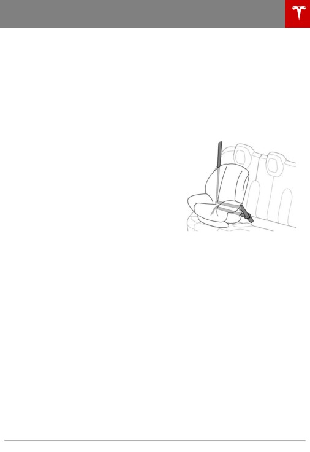
Child Safety Seats
Seating Larger Children
emergency. Once disengaged, the belt must
be fully extended to re-engage the locking
If a child is too large to fit into a child safety
mechanism whenever you install a child safety
seat, but too small to safely fit into the
seat.
standard seat belts, use a booster seat
appropriate for the child’s age and size.
Always follow the detailed instructions
Carefully follow the manufacturer’s
provided by the child safety seat
manufacturer. General guidelines are provided
instructions to secure the booster seat.
below.
1.
Place the child safety seat in Model S, and
Installing Child Safety Seats
fully extend the seat belt. Route and
There are two general methods used to install
buckle the seat belt in accordance with
child safety seats:
the child safety seat manufacturer’s
instructions.
• Seat belt retained - these seats are
secured using the vehicle’s seat belts.
• LATCH retained - these seats attach to
anchor bars built into the vehicle’s rear
seats.
Check the child safety seat manufacturer’s
instructions and the table in this manual to
determine which installation method to use.
Some child safety seats can be installed using
either method. Always follow the child safety
seat manufacturer’s instructions.
Installing Seat Belt Retained Child
Seats
First, make sure that the child safety seat is
2.
Allow the seat belt to retract, and remove
appropriate for the weight, height, and age of
all slack in the seat belt while firmly
the child.
pushing the child safety seat into the
Model S seat.
Avoid dressing the child in bulky clothing and
3.
Attach the upper tether strap(s), as
do not place any objects between the child
required by the manufacturer of the child
and the restraint system.
restraint system (see Attaching Upper
Adjust harnesses for every child, every trip.
Tether Straps on page 35).
To securely hold child safety seats, all
passenger seating positions are equipped with
Installing ISOFIX (LATCH) Child
an automatic locking retractor (ALR) that, by
Seats
pulling the seat belt beyond the length
needed for a typical adult occupant, locks the
Lower LATCH anchors are provided in the
belt into place until the seat belt is unbuckled
second row outboard seats. The anchors are
and the webbing is fully retracted. The ALR
located between the seat's back rest and rear
mechanism operates as a ratchet, winding in
cushion. The exact location of each anchor is
slack and preventing the seat belt from
identified by a child safety seat identification
extending any further until it has been
button, illustrated below. The button is located
completely rewound. When installing a child
on the seat back, directly above its associated
safety seat, engage the belt's automatic
anchor.
locking retractor by pulling the seat belt
webbing until it is fully extended. The ALR
system engages only when the seat belt is at
its maximum extension point.
Note: An automatic locking retractor
disengages only when the seat belt is
unbuckled and fully retracted. The belt can
then be worn as a normal belt, sliding freely in
and out and locking tight only in an
Seating and Safety Restraints
33
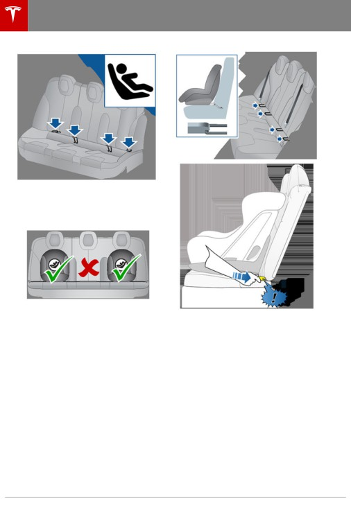
Child Safety Seats
In the rear seats, install LATCH child safety
seats in the outboard seating positions only.
Use only a seat belt retained seat in the center
position.
To install a LATCH child safety seat, carefully
read and follow the instructions provided by
Adjust until the child restraint system is fitted
the manufacturer of the child restraint system.
firmly against the seat back. Ensure the child
These instructions describe how to slide the
restraint system fits snugly.
child restraint system onto the seat's anchor
bars until you hear it "click" into place. You
may need to push the child restraint system
firmly against the seat back to ensure it fits
snugly.
34
Model S Owner's Manual
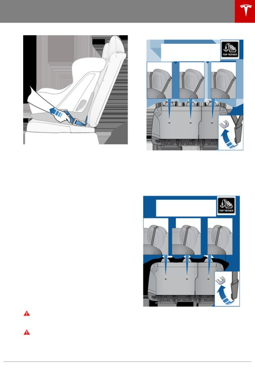
Child Safety Seats
Before seating a child, ensure that the child
restraint system is securely installed. Grasp the
front of the child restraint system with one
Always position single-strap tethers to run
hand on each side, and attempt to:
over the top of the head support.
• Twist the child restraint system from side
Note: To prevent the single-strap tether from
to side.
moving side to side, the top of the head
• Pull the child restraint system away from
support deforms.
the seat.
If the child restraint system moves away from
the seat, both latches are not fully engaged
onto the seat's anchor bars. You must reinstall
it and try again. It is critical that both latches
on the child restraint system are fully engaged.
Note: Do not use LATCH anchors with child
seats or booster seats that have an integrated
safety belt where the combined weight of the
child plus the child restraint system exceeds
65 lbs (29.5 kg).
Attaching Upper Tether Straps
If an upper tether strap is provided, attach its
hook to the anchor point located on the back
of the rear seats.
Note: The location of anchor points may not
be readily visible but can be found by
identifying a slice in the seat's material.
Warning: Tighten upper tether straps
according to the instructions provided by
the manufacturer of the child safety seat.
Testing a Child Safety Seat
Warning: USE ONLY SEAT BELT
Before seating a child, always make sure the
RETAINED CHILD SAFETY SEATS IN THE
child safety seat is not loose:
CENTER SEATING POSITION.
For dual-strap tethers, position a strap on
each side of the head support.
Seating and Safety Restraints
35
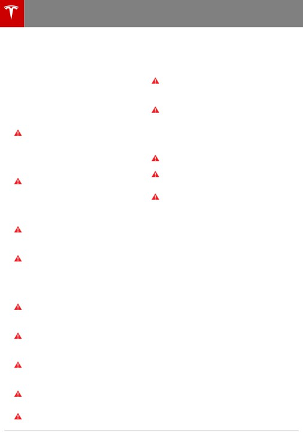
Child Safety Seats
1.
Hold the child safety seat by the belt path
and the child’s seat belt is properly
and try to slide the safety seat from side
adjusted and fastened. The shoulder
to side and front to back.
portion of the belt must be away from the
2. If the seat moves more than one inch
face and neck, and the lap portion must
(2.5 cm), it is too loose. Tighten the belt or
not be over the stomach.
reconnect the LATCH retained child safety
Warning: Never attach two child safety
seat.
seats to one anchor point. In a collision,
3. If you are unable to reduce slack, try a
one anchor point may be incapable of
different seat location or try another child
securing both seats.
safety seat.
Warning: Child restraint anchors are
designed to withstand only those loads
Child Safety Seat Warnings
imposed by correctly fitted child
restraints. Under no circumstances are
Warning: Extreme hazard! Do not seat a
they to be used for adult seat belts,
child on the front passenger seat even if
harnesses, or for attaching other items or
you are using a child safety seat. This seat
equipment to the vehicle.
has an airbag in front of it. Although this
airbag is disabled when Model S detects a
Warning: Always check harnesses and
lightweight passenger, do not rely on
tether straps for damage and wear.
technology to protect your child.
Warning: Never leave a child unattended,
Warning: Child restraint systems are
even if the child is secured in a child
designed to be secured in vehicle seats
safety seat.
by lap belts or the lap belt portion of a
Warning: Never use a child safety seat
lap-shoulder belt. Children could be
that has been involved in a collision. Have
endangered in a crash if their child
the seat inspected or replaced as
restraints are not properly secured in the
described in the child safety seat
vehicle.
manufacturer’s instructions.
Warning: According to collision statistics,
children are safer when properly
restrained in the rear seating positions
than in the front seating positions.
Warning: Do not use a forward facing
child safety seat until your child weighs
over 20 lbs (9 kg) and can sit
independently. Up to the age of two, a
child's spine and neck are not suciently
developed to avoid injury in a frontal
impact.
Warning: Do not allow a baby or infant to
be held on a lap. All children should be
restrained in an appropriate child safety
seat at all times.
Warning: To ensure children are safely
seated, follow all instructions provided in
this document and by the manufacturer
of the child safety seat.
Warning: Children should ride in a rear
facing child safety seat using the seat’s
integrated 5-point harness for as long as
possible.
Warning: Do not use seat belt extenders
on a seat belt that is being used to install
a child safety seat or booster seat.
Warning: When seating larger children,
make sure the child's head is supported
36
Model S Owner's Manual
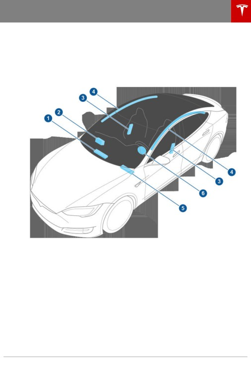
Airbags
Location of Airbags
Airbags are located in the approximate areas shown below. Airbag warning information is printed
on the sun visors.
Model S is equipped with an airbag and lap/shoulder belt at both front seating positions. The
airbag is a supplemental restraint at those seating positions. All occupants, including the driver,
should always wear their seat belts whether or not an airbag is also provided at their seating
position to minimize the risk of severe injury or death in the event of a crash.
1.
Passenger knee airbag
2.
Passenger front airbag
3.
Side airbags
4.
Curtain airbags
5.
Driver’s knee airbag
6.
Driver’s front airbag
Seating and Safety Restraints
37
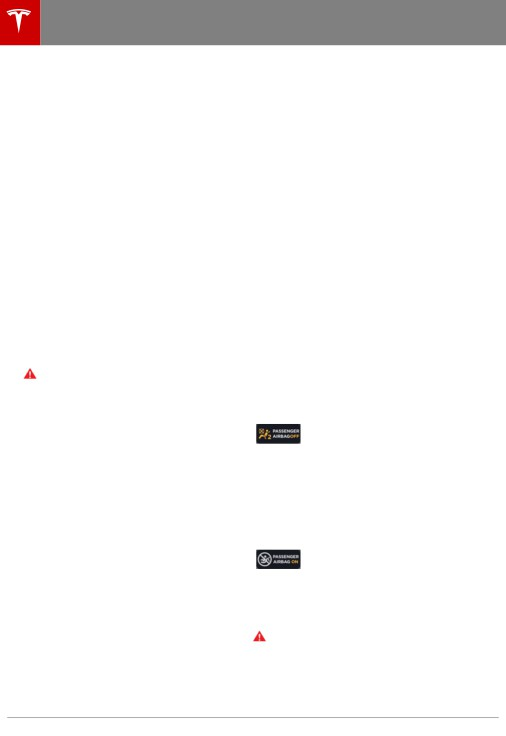
Airbags
How Airbags Work
Types of Airbags
Airbags inflate when sensors detect an impact
Model S has the following types of airbags:
that exceeds deployment thresholds. These
• Front airbags: The front airbags are
thresholds are designed to predict the severity
designed to reduce injuries if larger
of a crash in time for the airbags to help
children or adults are riding in the front
protect the vehicle's occupants. Airbags
seats. Follow all warnings and instructions
inflate instantly with considerable force
related to seating a child on the front
accompanied by a loud noise. The inflated
passenger seat (if permitted in your
bag, together with the seat belts, limits
market region).
movement of occupants to reduce the risk of
injury.
• Knee airbags: Knee airbags and the front
airbags work together. The knee airbags
Front airbags are not ordinarily designed to
limit the forward motion of the front seat
inflate in rear collisions, rollovers, side
occupants by restricting leg movement,
collisions and when braking heavily or driving
thereby positioning the occupants so that
over bumps and potholes. Likewise, front
the front airbags work more effectively.
airbags may not inflate in all frontal collisions,
• Side airbags: Side airbags protect the
such as minor front collisions, underride
thorax region of the torso and the pelvis.
collisions, or minor impacts with narrow
They inflate only if a severe side impact
objects (such as posts or poles). Significant
occurs. Side airbags on the non-impacted
superficial damage can occur to the vehicle
side of the vehicle do not inflate.
without the airbags inflating and, conversely, a
• Curtain airbags: Curtain airbags help
relatively small amount of structural damage
protect the head. Curtain airbags on both
can cause airbags to inflate. Therefore, the
the impacted and non-impacted side of
external appearance of the vehicle after a
the vehicle will inflate only if a severe side
collision does not represent whether or not
impact occurs, or if the vehicle rolls over.
the front airbags should have inflated.
Warning: Before modifying your vehicle
Passenger Front Airbag Status
to accommodate a person with
disabilities in a way that may affect the
The status of the passenger front airbag
airbag system, contact Tesla.
displays in the top corner of the touchscreen:
Before driving with a child
seated on the front passenger
seat (if permitted in your market
region), always double-check the
status of the passenger front
airbag to confirm that it is OFF.
When the passenger airbag is
OFF, it will not inflate when a
collision occurs. This indicator
also displays when the seat is
unoccupied.
To protect an adult occupying
the front passenger seat, ensure
the passenger front airbag is ON.
When the passenger airbag is
ON, it may inflate when a
collision occurs
Warning: If seating a child in the front
passenger seat is legally permissible in
your market region, it is the driver's
responsibility to ensure that the
passenger front airbag is OFF. Never seat
a child in the front passenger seat with an
active airbag, even if using a child safety
38
Model S Owner's Manual
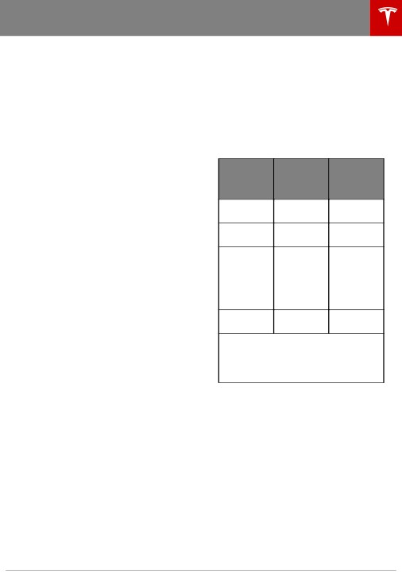
Airbags
seat or booster seat. DEATH or SERIOUS
Disabling the Passenger Front
INJURY to the child can occur.
Airbag
Model S has an occupancy sensor in the front
passenger seat that controls the status of the
passenger front airbag.
Note: The occupancy sensor system meets the
regulatory requirement of FMVSS 208 and
automatically detects when inflating the
passenger front airbag would be unnecessary
or potentially harmful.
Weight in
Passenger
Indicator
front
airbag status
status
passenger
seat
Empty
OFF
PASSENGER
AIRBAG OFF
Up to 20 lbs
OFF
PASSENGER
(9 kg)
AIRBAG OFF
20-100 lbs
OFF or ON
OFF -
(9-45 kg)*
PASSENGER
AIRBAG OFF
ON -
PASSENGER
AIRBAG ON
Over 100 lbs
ON
PASSENGER
(45 kg)
AIRBAG ON
*Values are approximate. A weight detected
near the threshold can cause the airbag
status to occasionally turn on and off
depending on seating position and
physique.
Note: It takes approximately six seconds after
you power on Model S for the occupancy
sensor to report accurate status of the front
passenger airbag. As a result, when you first
power on Model S, even in situations when it
should be OFF because the seat is occupied
by a weight of 20 lbs (9 kg) or less, it will take
the touchscreen approximately six seconds to
display the status, PASS AIRBAG OFF. If it fails
to do so, contact Tesla service immediately
and do not seat a child in the front passenger
seating position.
To make sure the sensing system can correctly
detect occupancy status, eliminate the
following:
• Objects lodged under the seat.
• Heavy objects sitting on the seat
(briefcase, large purse).
Seating and Safety Restraints
39
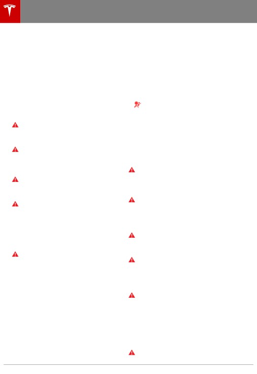
Airbags
• Objects wedged between the seat back
• Hazard warning lights turn on.
and seat cushion.
• Interior lights turn on.
• Cargo interfering with the seat.
• High voltage is disabled.
• Aftermarket items attached to, or sitting
To restore high voltage power, use the
on, the seat (covers, mats, blankets, etc.).
touchscreen to manually power off Model S
These conditions can interfere with the
(see Powering Off on page 50), then press
occupancy sensor. If you have eliminated the
the brake to power it back on again.
above possibilities, and the airbag status is still
incorrect, ask passengers to ride in the rear
Airbag Warning Indicator
seats and contact Tesla to have the airbag
system checked.
The airbag indicator on the
Note: The front passenger occupancy sensor
instrument cluster remains lit if the
affects the operation of the passenger front
airbag system is malfunctioning. The
airbags only. The side airbags are not affected.
only time this indicator should light
up is briefly when Model S first
Warning: If the front passenger airbag is
not turning on or off as expected based
powers up, in which case it turns off
within a few seconds. If it remains lit,
on the weight thresholds previously
contact Tesla immediately and do
described, contact Tesla immediately.
not drive.
Warning: Never seat a child on the front
passenger seat, even if the passenger
airbag is off. All occupants age 12 and
Airbag Warnings
under must ride in the rear seats (see
Child Safety Seats on page 30).
Warning: Do not place objects over or
near airbags because any such objects
Warning: To ensure accuracy of the
could cause harm if the vehicle is in a
occupant detection system, do not make
crash severe enough to cause the airbag
any modifications to the front passenger
to inflate.
seat.
Warning: All occupants, including the
Warning: Do not use seat covers on
driver, should always wear their seat belts,
Model S. Doing so could restrict
whether or not an airbag is also provided
deployment of the seat-mounted side air
at their seating position, to minimize the
bags if a collision occurs. It can also
risk of severe injury or death in the event
reduce the accuracy of the occupant
of a collision.
detection system.
Warning: Front seat occupants should not
place their arms over the airbag module,
Inflation Effects
as an inflating airbag can cause fractures
or other injuries.
Warning: When airbags inflate, a fine
powder is released. This powder can
Warning: Do not use seat covers on
irritate the skin and should be thoroughly
Model S. Doing so could restrict
flushed from the eyes and from any cuts
deployment of the seat-mounted side air
or abrasions.
bags if a collision occurs. It can also
reduce the accuracy of the occupant
After inflation, the airbags deflate to provide a
detection system, if equipped.
gradual cushioning effect for the occupants
and to ensure the driver’s forward vision is not
Warning: Airbags inflate with
obscured.
considerable speed and force, which can
cause injury. To limit injuries, ensure that
If airbags have inflated, or if your vehicle has
occupants are wearing seat belts and are
been in a collision, always have the airbags,
correctly seated, with the seat positioned
seat belt pre-tensioners and any associated
as far back as possible. The National
components checked and, if necessary,
Highway Trac Safety Administration
replaced by Tesla.
(NHTSA) recommends a minimum
In a collision, in addition to the airbags
distance of 10" (25 cm) between an
inflating:
occupant’s chest and an airbag.
• Doors unlock, and the door handles
Warning: Children should not be seated
extend.
on the front passenger seat unless
40
Model S Owner's Manual
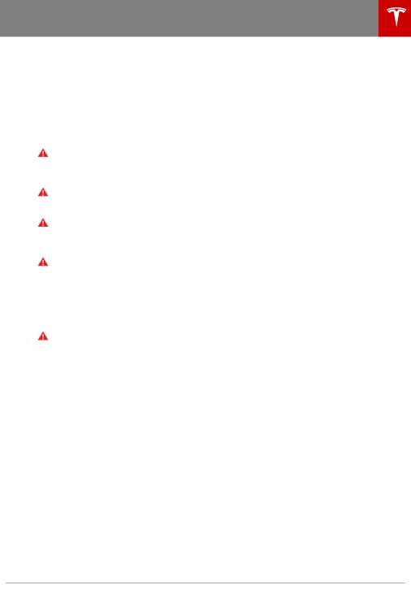
Airbags
permitted by regulations in your market
region. Follow all regulations in your
region for the appropriate way to seat a
child based on the child's weight, size,
and age. The safest place to seat infants
and young children is in the rear seating
positions. Seating an infant or child in a
rear-facing child restraint system on a
seat equipped with an operational airbag
can cause serious injury or death.
Warning: To ensure correct inflation of the
side airbags, maintain an unobstructed
gap between an occupant’s torso and the
side of Model S.
Warning: Passengers shouldn't lean their
heads against doors. Doing so can cause
injury if a curtain airbag inflates.
Warning: Do not allow passengers to
obstruct the operation of an airbag by
placing feet, knees or any other part of
the body on or near an airbag.
Warning: Do not attach or place objects
on or near the front airbags, the side of
the front seats, the headliner at the side
of the vehicle, or any other airbag cover
that could interfere with inflation of an
airbag. Objects can cause serious injury if
the vehicle is in a collision severe enough
to cause the airbag to inflate.
Warning: Following inflation, some airbag
components are hot. Do not touch until
they have cooled.
Seating and Safety Restraints
41
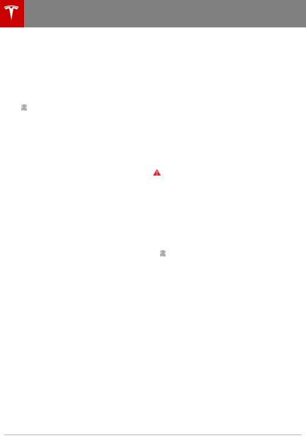
Driver Profiles
Creating a Driver Profile
Easy Entry
You can define an Easy Entry setting that
When you first adjust the driver’s seat,
steering wheel, or driver’s side mirror, the
moves the steering wheel and driver's seat to
make it easy to enter and exit Model S. Any
touchscreen prompts you to create a driver
profile to save these adjustments. Your profile
driver can use the Easy Entry setting by
also saves some of the preferences you make
associating it with their driver's profile. When
the Easy Entry setting is associated with a
using the touchscreen's Controls window.
driver's profile, the steering wheel and driver's
seat automatically adjust when the park gear
To add a new driver profile, touch
is engaged and the driver's seat belt is
the driver profile icon at the top of
unbuckled, allowing an easy exit from the
the touchscreen. Then touch Add
vehicle. When returning to the vehicle and
New Driver, type the driver's name
stepping on the brake pedal, settings
and touch Create Profile. Follow the
automatically adjust back to the settings used
onscreen instructions to save the
by the most recent driver profile (or based on
seating position to the driver profile.
the key if it's linked to a driver profile).
You can also check the Use Easy
Entry checkbox if you want to save
To use Easy Entry with a driver profile, ensure
(or use existing) Easy Entry settings
the Use Easy Entry box is checked.
(described below) in which the
Warning: Never use Easy Entry to move
driver's seat and the steering wheel
the driver's seat to the full rearward
are automatically adjusted to make it
position when a child safety seat is
easy to enter and exit Model S.
installed on a rear seat located behind the
driver's seat. With reduced clearance, the
If you change the position of the steering
movement of the seat may impact a
wheel, driver’s seat, or driver’s side mirror
child's legs, cause injury, or dislodge the
after you have saved or chosen a driver
seat.
profile, the touchscreen prompts you to save
the new position or restore the previously
Restoring a Driver’s Profile
saved position (other settings are
automatically saved). To change a setting
To adjust Model S based on a driver’s
without saving or restoring, just ignore the
profile, touch the driver profile icon
prompt.
on the touchscreen's status bar. Then
To adjust Model S based on a driver’s profile,
choose the driver and Model S is
touch the driver profile icon and choose the
adjusted based on the settings that
driver name. The saved adjustments are
have been saved to the chosen
automatically made.
driver profile.
Note: Valet mode is a built-in driver profile
used to limit speed and restrict access to
Saved Settings
some Model S features (see Valet Mode on
page 43).
A subset of the settings that you choose from
the Controls window to customize your
Note: Depending on date of manufacture and
Model S are also saved to your driver's profile.
options selected at time of purchase, some
Model S vehicles are not equipped with the
The settings that are associated with driver
profiles may vary depending on the version of
driver profile feature. Also, in cases where the
software currently installed on your Model S.
vehicle is equipped with driver profiles, some
features may not be automatically saved and
Note:
adjusted based on the driver profile (for
example, mirror position).
Note: To stop automatic adjustments that are
in process based on a driver's profile, touch
Stop on the Driver Profile dropdown menu.
Automatic adjustments also stop if you
manually adjust a seat, mirror or the steering
wheel.
42
Model S Owner's Manual
Driver Profiles
Linking a Driver Profile to a Key
• Wi-Fi and Bluetooth are disabled. When
Model S is in Valet mode, you cannot pair
You can link a driver profile to a specific key to
new Bluetooth devices or view or delete
allow Model S to automatically select the
existing paired devices.
correct driver profile when the linked key is
detected as you approach the vehicle and
Note: If a Bluetooth paired device or a
open the driver's door. To link a driver profile
known Wi-Fi network is within operating
range (approximately 30 feet or 9 meters)
to a key, enter Model S with the key and touch
the driver profile icon on the top of the
of Model S in Valet mode, Model S will
connect to it.
touchscreen. Select the driver profile you
would like to link to the key, then touch Link to
Key Fob.
Starting Valet Mode
Note: Model S only detects one key at a time.
With Model S in Park, touch the driver profile
The driver profile is linked to the key that is
icon on the top of the touchscreen, then touch
detected by the vehicle at that time.
Valet Mode.
Therefore, if you want to link driver profiles to
The first time you enter Valet mode, you will
multiple keys, ensure that only the key that
be prompted to create a 4-digit PIN that you
you would like to link the driver profile to is
will use to cancel Valet mode.
within detection range while performing the
linking procedure. Move all other keys outside
When Valet mode is active, the instrument
of the detection range (at least three feet (one
panel displays the word Valet above the
meter) away from Model S).
driving speed and the Valet mode driver
profile displays on the touchscreen.
Note: Model S can support up to three linked
keys. However, a driver profile can only be
You can also use the mobile app to start and
linked to one key.
cancel Valet mode (provided Model S is in
Park). When using the mobile app, you do not
To remove the link between a driver profile
need to enter a PIN because you are already
and key, touch the driver profile icon on the
required to log into the app using your Tesla
top of the touchscreen. Select the driver
Account credentials.
profile, then touch the X next to Linked to Key
Fob.
Note: If the PIN to Drive setting is enabled
(see PIN to Drive on page 149), you must
enter the driving PIN before you can define or
Valet Mode
enter a Valet PIN. Once in Valet mode, Model S
can be driven without the valet needing to
When Model S is in Valet mode, the following
enter the driving PIN.
restrictions apply:
Note: The PIN to Drive setting is not available
• Speed is limited to 70 mph (113 km/h).
when Valet mode is active.
• Maximum acceleration and power are
limited.
If you forget your valet PIN, reset it from
• Front trunk and glovebox are locked.
inside Model S by entering your Tesla Account
credentials (which also cancels Valet mode).
• Home and Work locations are not
You can also reset your PIN using the mobile
available in the navigation system.
app.
• Voice commands are disabled.
• Autopilot convenience features are
Canceling Valet Mode
disabled.
• Most status bar functions are disabled.
With Model S in Park, touch the Valet Mode
driver icon on the touchscreen's status bar,
• The Mobile Access setting is disabled.
then enter your 4-digit PIN.
• HomeLink (if applicable in your market
region) is not accessible.
When you cancel Valet mode, all settings
• Driver Profiles are not accessible.
associated with the most recently used driver
profile and climate control settings are
restored, and all features are available.
Note: You do not need to enter a PIN to cancel
Valet mode from the mobile app.
Driving
43
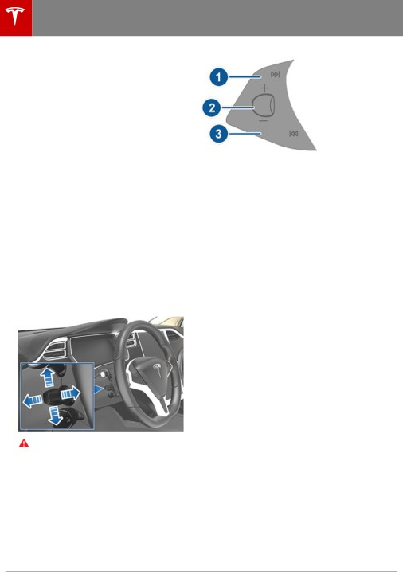
Steering Wheel
Adjusting Steering Effort
You can adjust the feel and sensitivity of the
steering system to suit your personal
preference:
1.
On the touchscreen, touch Controls >
Driving > Steering Mode.
2. Choose a steering option:
• Comfort - Reduces the effort required
to turn the wheel. In town, Model S
feels easier to drive and park.
• Standard - Tesla believes that this
1.
Next
setting offers the best handling and
response in all conditions.
If you are listening to local or satellite
radio and you have defined more than one
• Sport - Increases the effort required
radio preset, press to play the next preset
to turn the wheel. When driving at
in the radio band that is currently playing.
higher speeds, Model S feels more
If you have not defined more than one
responsive.
preset, press to go to the next available
The only way to really know which option you
frequency.
like best is to try them.
If you are listening to Internet radio, or to
an audio file on a connected Bluetooth or
Adjusting Position
USB device, press to skip to the next song
or station.
Adjust the steering wheel to the desired
driving position by moving the control on the
If you have more than one favorite
left side of the steering column. Using this
defined, press and hold to cycle through
control, you can move the steering wheel
favorites.
forward and backward and up and down.
2.
Scroll Button
•
To adjust the media volume, roll up or
down.
Note: The scroll button adjusts the
volume for media, navigation
instructions and phone calls based on
what is currently in use. As you adjust
volume, the instrument panel displays
the volume level and whether you are
adjusting volume for media,
navigation or phone.
•
To mute the media volume, or to
pause/play an audio file, tap the scroll
button.
Warning: Do not make adjustments while
driving.
Using Left Steering Wheel Buttons
Use the buttons on the left side of the steering
wheel to change radio stations, control the
media player’s volume, and to choose what
displays on the left side of the instrument
panel (whenever the Navigation app is not
displaying instructions).
44
Model S Owner's Manual
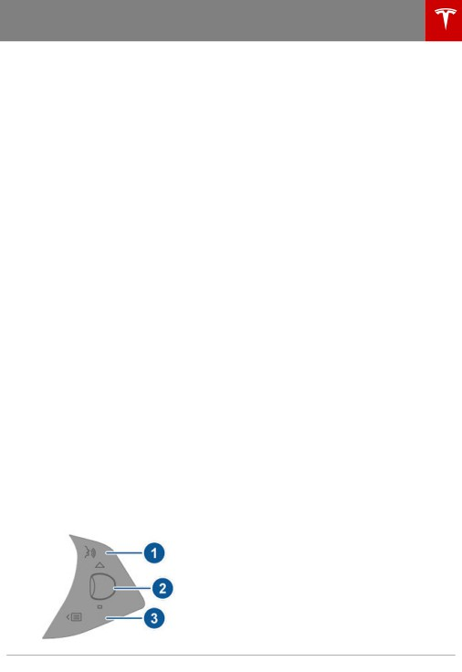
Steering Wheel
• To choose what displays on the left
1.
Press to use a voice command to call a
side of the instrument panel, hold the
contact, navigate, or listen to Internet
scroll button briefly until the available
music. When you hear the tone, speak
options are displayed. Roll the scroll
your command. Press again to end the
button to choose Empty, Car Status,
voice command, or simply stop speaking.
Clock, Media, Energy, Trips, etc. When
For details, see Using Voice Commands on
the option you want is highlighted,
page 46.
tap the scroll button.
2.
Scroll Button
Note: The option you choose to
•
During a phone call, touch the scroll
display using the left scroll button is
button to display call options that
retained until you manually change it.
allow you to perform an action on the
It is also saved in your driver profile.
call.
Note: Car status displays information
•
Roll the scroll button to adjust the
such as status of doors and trunks,
most recently used feature from the
and on newer model vehicles, the tire
feature list (see Menu button).
pressure measurements.
•
To choose what displays on the right
• To restart the touchscreen, hold down
side of the instrument panel, hold the
both scroll buttons for approximately
scroll button briefly until the available
five seconds. See Restarting the
options are displayed. Roll the scroll
Touchscreen on page 50.
button to choose Empty, Car Status,
Clock, Media, Energy, Trips, etc. When
3. Previous
the option you want is highlighted,
Same as described above for Next, except
tap the scroll button.
it skips to the previous song or station. If
Note: Car status displays information
you have more than one favorite defined,
such as status of doors and trunks,
press and hold to cycle through favorites.
and on newer model vehicles, the tire
Note: Regardless of how you customize the
pressure measurements.
left side of the instrument panel, it
automatically changes to display navigation
Note: The option you choose to
display using the right scroll button is
instructions (if applicable), or to let you know
retained until you manually change it.
if a door or trunk is open when Model S is in a
It is also saved in your driver profile.
driving gear.
•
To restart the touchscreen, hold down
both scroll buttons for approximately
Using Right Steering Wheel Buttons
five seconds. See Restarting the
Touchscreen on page 50.
Use the buttons on the right side of the
steering wheel to access call options while on
3.
Menu button
a phone call, to choose what displays on the
Press to display a menu that allows you to
right side of the instrument panel, to adjust
control the following Model S:
Model S features, and to use voice commands.
• Temperature. Roll the scroll button to
Note: Whenever you receive or make a phone
change the driver side temperature, or
call, the right side of the instrument panel
press the wheel to turn the climate
automatically displays call options to help you
control system on and off.
easily handle phone calls on your Bluetooth-
• Fan Speed. Roll the scroll button to
connected phone.
adjust the speed of the fan used to
cool or heat the cabin.
• Display Brightness. Roll the scroll
button to change the brightness level
of the displays, or press the wheel to
restore default settings.
• Sunroof (if equipped). Roll the scroll
button to adjust the position of the
sunroof.
Driving
45
Steering Wheel
• Recent Calls. If your phone is paired to
• To listen to an Internet music service, say
Model S, roll the scroll button to view
“Listen to” or “Play”, followed by the name
your recent calls. Press the scroll
of the song, album, artist, or combination.
button to call the contact that's
To improve voice recognition accuracy,
displayed. To pair your phone, see
provide multiple cues in your command,
Pairing a Bluetooth Phone on page
such as artist plus song (for example,
143.
“Listen to Yellow Brick Road” or “Play
• Contacts. If your phone is paired to
Yellow Brick Road by Elton John”).
Model S, roll the scroll button to
• Control various aspects of Model S by
navigate to contacts in your phone.
speaking statements or commands. For
Your contacts are listed alphabetically
example, "Speed up the wipers", "The
by their last name. To pair your phone,
screen is too bright", "Turn on the driver's
see Pairing a Bluetooth Phone on
seat heater", "I'm cold".
page 143.
Note: Tesla is continuously improving the
Press the menu button again to close the
ability of Model S to recognize voice
feature list.
commands. To support these ongoing quality
improvements, Tesla captures short voice
recordings anonymously. To protect your
Using Voice Commands
privacy, these short recordings are not
You can use voice commands to call a contact,
associated with your personal information or
navigate to a location, listen to Internet music
with your vehicle's identification number. Tesla
or control many aspects of your Model S.
assures that it is not possible to search any
Voice commands are designed to understand
system for a recording associated with a
natural requests. Tap the voice button on the
specific customer or vehicle.
upper right side of the steering wheel to
initiate a voice command. When you hear the
Heated Steering Wheel
tone, speak your command. As you speak, the
instrument panel displays an interpretation of
If Model S is equipped with the optional cold
your command. It also displays tips to remind
weather package, you can warm up the
you of the type of commands you can speak.
steering wheel by touching climate controls
When you finish speaking the command, tap
on the touchscreen (see Climate Controls on
the voice button again or simply wait.
page 128). When turned on, radiant heat
keeps the steering wheel at a comfortable
Note: Voice commands may be spoken in
temperature.
English or French (Canada).
Note: Depending on date of manufacture, your
• To call a contact on your Bluetooth-
Model S may not include a heated steering
connected phone, say “Call” or “Dial”,
wheel, even when equipped with the optional
followed by the contact’s first and/or last
cold weather package.
name(s). For example, “Call Joe” or “Call
Joe Smith”.
• To search for, or navigate to, a location,
Horn
say “Where is”, “Drive to”, or “Navigate
To sound the horn, press the center pad on
to”, followed by an address, business
the steering wheel.
name, business category, or landmark. For
example, “Where is Stanford University?”,
“Drive to Tesla in Palo Alto”, or “Navigate
to Starbucks on Homestead in Cupertino”.
If you have defined a navigation address
for your home or work locations, you can
use a voice command to navigate there by
saying "Navigate home" or "Navigate to
work".
46
Model S Owner's Manual
Steering Wheel
Driving
47
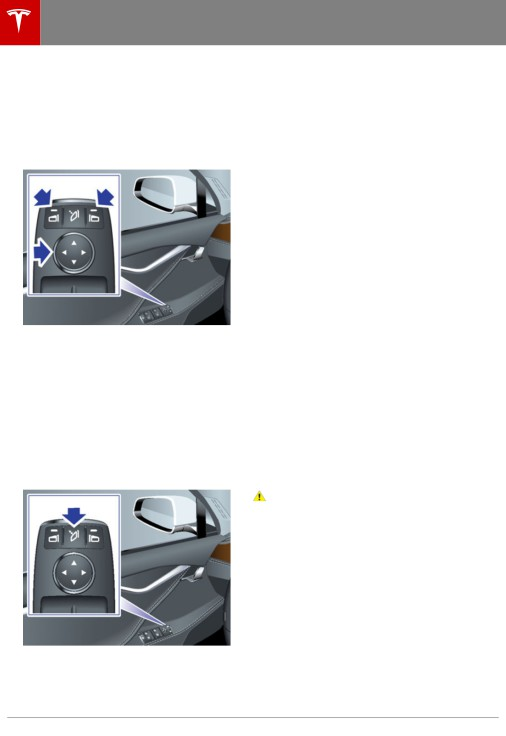
Mirrors
Adjusting Exterior Side Mirrors
The driver’s side mirror automatically dims at
night, in proportion to the level of glare from
Press the button associated with the mirror
the headlights of a vehicle behind you (except
you want to adjust (left or right). The button's
when in Reverse gear). Also, both exterior side
light turns on and you can then press the dial
mirrors have heaters that turn on and off with
to move the mirror to the desired position.
the rear window defroster.
Repeat for the other side mirror. If prompted,
Note: Depending on date of manufacture and
touch Save on the touchscreen to save the
mirror adjustment in your driver profile.
options selected at time of purchase, some
Model S vehicles are not equipped with a side
mirror that automatically dims at night and
may not include heated side mirrors. In
addition, mirror adjustments may not be saved
to your driver profile.
Note: See Cold Weather Best Practices on
page 83 for information to ensure your
mirrors function properly in cold weather.
Auto-Fold Mirrors Based on Location
Model S can automatically fold and unfold the
side mirrors based on location, which saves
you from having to manually position them
each time you need to fold or unfold the
mirrors when at a frequented place (such as
To fold and unfold exterior mirrors, press the
narrow garages, tight parking spaces, etc.).
center button. You can set the mirrors to fold
To set up, Model S must be driving at a low
automatically whenever Model S is locked by
speed (less than 3 mph/5 kph) or stopped at
touching Controls > Vehicle > Mirror Auto-
the location you want your vehicle to
Fold. The mirrors unfold automatically
remember. Go to Controls > Vehicle > Always
whenever you unlock Model S.
Fold Mirrors at this Location. Next time you
When you use the center button to fold the
approach the saved location, your mirrors fold
mirrors in for parking in a tight space, the
and unfold within 25 feet (7.5 meters) of the
mirrors remain folded in until your driving
specified location.
speed reaches 31 mph (50 km/h), or until you
You can also integrate auto-folding mirrors
use the center button to unfold the mirrors.
with HomeLink (see HomeLink Universal
Note: You cannot fold a mirror if driving above
Transceiver on page 153). To enable, go to
31 mph (50 km/h).
HomeLink > Auto-Fold Mirrors when Nearby.
Caution: Mirrors may not automatically
fold or unfold if you return to a saved
location and are driving faster than 3
mph/5 kph.
Mirror Auto-tilt When Reversing
Both exterior mirrors can automatically tilt
downward when backing up. To adjust the
auto-tilt position, shift into Reverse, then
adjust the mirrors (press the button
associated with the mirror you want to adjust,
then press the dial to move the mirror to the
desired position). Touch Save on the
touchscreen to save the mirror adjustment in
your driver profile.
48
Model S Owner's Manual
Mirrors
When you shift back into Drive, the mirrors tilt
back to their normal (upward) position. But
now that you have adjusted them for backing
up, they automatically tilt to the selected
downward position whenever you shift into
Reverse.
You can turn the auto-tilt feature on or off
using the touchscreen, Touch Controls >
Vehicle > Mirror Auto-Tilt.
Note: Depending on date of manufacture and
options selected at time of purchase, some
Model S vehicles are not equipped with Mirror
Auto-Tilt.
Rear View Mirror
The rear view mirror is adjusted manually.
When in the Drive or Neutral gear, the rear
view mirror automatically dims in low lighting
conditions (for example, when driving at night
or through a tunnel).
Driving
49
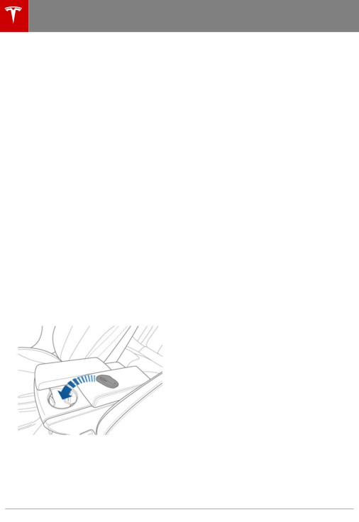
Starting and Powering Off
Starting
A number of factors can affect whether
Model S can detect the key. These include a
When you open a door, Model S powers on
low battery in the key, interference from other
the instrument panel and touchscreen and you
devices using radio signals, and objects
can operate all controls.
between the key and receiver.
To drive Model S:
Always keep the key with you. After driving,
the key is needed to restart Model S after it
1.
PRESS THE BRAKE PEDAL - Model S
powers on and is ready to drive.
powers off. And when you leave Model S, you
must bring the key with you to lock Model S,
2. SELECT A GEAR - Move the gear lever all
either manually or automatically.
the way down for Drive and all the way up
for Reverse. See Shifting Gears on page
52.
Powering Off
Note: If the PIN to Drive feature is enabled
When you finish driving, shift into Park by
(see PIN to Drive on page 149), you must also
pressing the button on the end of the gear
enter a valid PIN on the touchscreen before
selector. The parking brake automatically
you can drive Model S.
engages and all systems keep operating.
Note: If Passive Entry is off and you do not
When you leave Model S with the key, it
press the brake pedal to start Model S within
powers off automatically, turning off the
approximately five minutes, a message
instrument panel and touchscreen.
displays on the instrument panel and you must
Model S also powers off automatically after
use the key to lock then unlock Model S again
being in Park for 15 minutes, even if you are
before starting the vehicle.
sitting in the driver’s seat.
Everything you need to know when driving
Although usually not needed, you can power
Model S displays on the instrument panel.
off Model S while sitting in the driver’s seat,
provided the vehicle is not moving. Touch
Key Not Inside
Controls > Safety & Security > Power Off.
Model S automatically powers back on again if
If Model S does not detect a key when you
you press the brake pedal or touch the
press the brake, the instrument panel displays
touchscreen.
a message telling you that a key is not inside.
Note: Model S automatically shifts into Park
If you receive this message, place the key in
whenever it is determined that you are exiting
the center console cup holder where Model S
the vehicle, even when you shift into Neutral
can best detect it.
before exiting. To keep Model S in Neutral, see
Keeping Your Vehicle in Neutral (Tow Mode)
on page 52.
Restarting the Touchscreen
If your touchscreen is unresponsive or
demonstrates unusual behavior, you can
restart it to potentially resolve the issue.
Note: To ensure the safety of vehicle
occupants as well as other road users,
restarting the touchscreen should be done
only when the vehicle is in Park.
1.
Shift into Park.
If Model S still does not detect the key, try
holding it against the center console,
immediately below the 12V power socket (see
12V Power Socket on page 22). Or try using
another key. If another key does not work,
contact Tesla.
50
Model S Owner's Manual
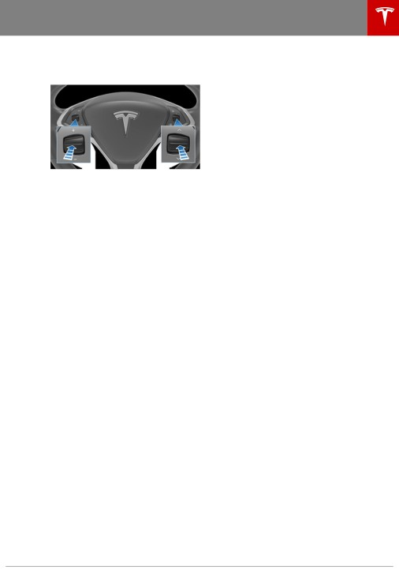
Starting and Powering Off
2. Hold down both scroll buttons on the
steering wheel until the touchscreen turns
black.
3. After a few seconds, the Tesla logo
appears. Wait approximately 30 seconds
for the touchscreen to restart. If the
touchscreen is still unresponsive or
demonstrating unusual behavior after a
few minutes, try power cycling the vehicle.
See Power Cycling the Vehicle on page
51.
Note: Restarting the touchscreen using the
scroll buttons does not power Model S off and
on.
Power Cycling the Vehicle
If your vehicle demonstrates unusual behavior
or a nondescript alert is present, you can try
power cycling the vehicle to potentially
resolve the issue.
1.
Shift into Park.
2.
On the touchscreen, touch Controls >
Safety & Security > Power Off.
3. Wait for at least two minutes without
interacting with the vehicle. Do not open
the doors, touch the brake pedal, touch
the touchscreen, etc.
4. After two minutes have passed, press the
brake pedal or open the door to wake the
vehicle.
Driving
51
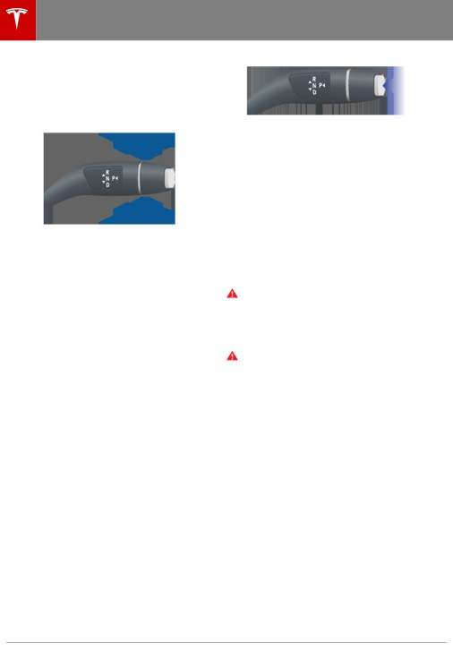
Gears
Shifting Gears
When Model S is in Park, you must press the
brake to shift to another gear.
Move the lever up or down to change gears.
Model S automatically shifts into Park
whenever you connect a charge cable or if
two or more of the following conditions are
met simultaneously while traveling slower than
approximately 1.5 mph (2 km/h):
• The driver's seat belt is unbuckled.
• The occupancy sensor in the driver's seat
does not detect an occupant.
• The driver's door is opened.
Note: The above conditions do not reflect a
comprehensive list of reasons why Model S
may or may not automatically shift into Park
If you try to shift into a gear that the current
and, in certain scenarios, it is possible for your
driving speed prohibits, a chime sounds and
vehicle to shift into Park when only one of the
the gear does not change.
above conditions is true.
Warning: In emergency situations, if the
Reverse
brakes are not functioning properly, press
and hold the Park button on the gear
Push the lever all the way up and release. You
selector to bring the vehicle to a stop. Do
can only shift into Reverse when Model S is
not use this method to stop the vehicle
stopped or moving less than 5 mph (8 km/h).
unless absolutely necessary.
If moving less than 1 mph (1.6 km/h), you must
press the brake.
Warning: It is the driver's responsibility to
always ensure the vehicle is in Park before
Neutral
exiting. Never rely on Model S to
automatically shift into Park for you; it
Push the lever up or down to the first position
might not work in all circumstances (for
and release to shift into Neutral. Neutral allows
example, if Creep or a slope causes the
Model S to roll freely when you are not
vehicle to travel greater than
pressing the brake pedal.
approximately 1.5 mph (2 km/h)).
If Model S is in Park and you use the
To make it convenient to pick up passengers,
touchscreen to release the parking brake
you can also unlock all doors and/or extend
(Controls > Safety & Security), Model S shifts
the door handles at any time by shifting into
into Neutral (see Parking Brake on page 68).
Park then pressing the Park button a second
time.
Drive
Push the lever all the way down and release.
Keeping Your Vehicle in Neutral
You can shift into Drive when Model S is
stopped or moving less than 5 mph (8 km/h)
(Tow Mode)
in Reverse. If Model S is moving less than
Model S automatically shifts into Park
1 mph (1.6 km/h), you must press the brake to
whenever you finish driving and leave Model S.
shift into Drive.
To keep Model S in Neutral when you exit,
allowing it to roll freely (for example, pulling
Park
onto a transporter, etc.), activate Tow mode:
Press the end of the gear selector while
1.
Shift into Park.
Model S is stopped. Whenever Model S is in
2.
Press the brake pedal.
Park, the parking brake is applied.
3.
Touch Controls > Service > Tow Mode.
Model S beeps, and shifts into Neutral (which
releases the parking brake).
52
Model S Owner's Manual
Gears
When Tow mode is active, Model S
displays this indicator light on the
instrument panel, along with a
message telling you that Model S will
roll freely.
Note: In Tow mode, Model S does not shift into
a driving gear. To cancel Tow mode, shift into
Park or touch Tow mode again. Tow mode also
cancels if you use the touchscreen to apply
the parking brake (Controls > Safety &
Security > Parking Brake).
Driving
53
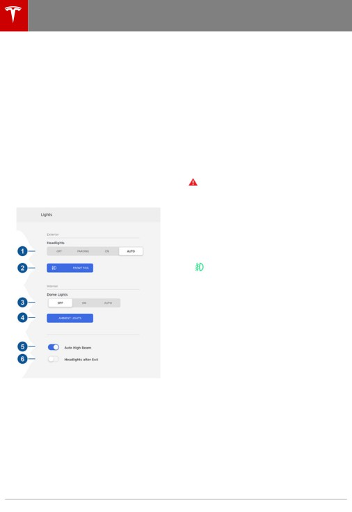
Lights
Controlling Lights
• OFF: Exterior lights turn off until you
manually turn them back on or until
Touch Controls > Lights on the touchscreen to
the next time you drive. If daytime
control the lights.
running lights are required in your
region, the exterior lights used for this
In addition to the lights that you can control
from the touchscreen, Model S has
purpose are always on when Drive
gear is engaged.
convenience lights that turn on and off
automatically based on what you are doing.
• PARKING: Only the side marker lights,
For example, you will notice interior lights,
parking lights, tail lights and license
marker lights, tail lights, door handle lights,
plate lights turn on.
and puddle lights that turn on when you
Note: If daytime running lights are
unlock Model S, when you open a door, and
required in your region, the exterior
when you shift into Park. They turn off
lights used for this purpose are always
automatically after a minute or two or when
on whenever a driving gear (Drive or
you shift into a driving gear or lock Model S.
Reverse) is engaged.
Note: The image below is provided for
• ON: Exterior lights turn on.
demonstration purposes only. Depending on
Warning: Always ensure that your
vehicle options, software version and market
headlights are on during low visibility
region, your touchscreen may appear slightly
conditions. Failure to do so may result
different.
in a collision.
2.
If equipped, touch to turn the fog lights
on or off. Fog lights operate only when
low beam headlights are on. When
headlights are turned off, fog lights also
turn off.
The front fog indicator displays
on the instrument panel
whenever the optional front fog
lights are on.
Note: Depending on the market region
and vehicle options, your vehicle may not
be equipped with front and/or rear fog
lights.
Note: In some regions, there is no control
for the front fog lights. They operate in
conjunction with the headlights and turn
on only in situations where low beam
headlights are on.
3.
Turn the interior dome (map) lights on or
off. If set to AUTO, all interior dome lights
turn on when you unlock Model S, open a
1.
Exterior lights (headlights, tail lights, side
marker lights, parking lights, and license
door upon exiting, or shift into Park.
plate lights) are set to AUTO each time
Note: You can also manually turn an
you start Model S. When set to AUTO,
individual dome light on or off by pressing
exterior lights automatically turn on when
its lens. If you manually turn a dome light
driving in low lighting conditions. If you
on, it turns off when Model S powers off. If
change to a different setting, lights always
Model S was already powered off when
revert to AUTO on your next drive.
you manually turned the light on, it turns
Touch one of these options to temporarily
off after 60 minutes.
change the exterior light setting:
4.
If you turn on AMBIENT LIGHTS, interior
ambient lights turn on whenever the
headlights are on.
54
Model S Owner's Manual
Lights
5. If you turn on Auto High Beam (only
available on Model S equipped with
Autopilot components), your vehicle
automatically switches from high beam
headlights to low beam headlights when
there is light detected in front of Model S.
See High Beam Headlights on page 56.
6. If you turn on Headlights after Exit, the
exterior lights remain on for a short period
of time after you stop driving and park
Model S in low lighting conditions. See
Headlights After Exit on page 56.
Note: Model S has lights along the rim of the
headlights, also referred to as "signature"
lights. These lights automatically turn on
whenever Model S is powered on and a driving
gear is engaged. In market regions where
daytime running lights are not required to stay
on, the signature lights turn off to conserve
energy when you turn on the Range mode
setting (see Controls on page 118 or Driving
Tips to Maximize Range on page 77).
Driving
55
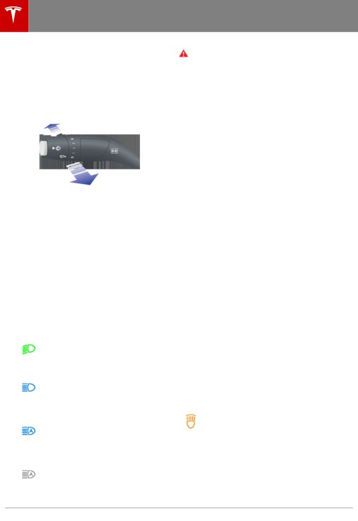
Lights
High Beam Headlights
Warning: Auto High Beam is an aid only
and is subject to limitations. It is the
Push the left-hand steering column lever away
driver's responsibility to make sure that
from you to turn the high beam headlights on
the headlights are always adjusted as
continuously. To cancel, pull the lever towards
appropriate for the weather conditions
you.
and driving circumstances.
To briefly flash the high beam headlights, pull
the lever towards you.
Headlights After Exit
When you stop driving and park Model S in
low lighting conditions, the exterior lights
remain on. They automatically turn off after
one minute or when you lock Model S.
You can turn this feature on and off by
touching Controls > Lights > Headlights After
Exit. When Headlights After Exit is off, the
headlights turn off when you engage the Park
gear and open a door.
The high beam headlights can automatically
switch to low beam when there is light
Adaptive Front Lighting System
detected in front of Model S (for example,
(AFS)
from an oncoming vehicle). To turn this
If equipped, the Adaptive Front Lighting
feature on or off, touch Controls > Lights >
System (AFS) automatically adjusts the beam
Auto High Beam.
of the headlights to improve your driving view.
Note: Your chosen setting is retained until you
Electric sensors measure driving speed,
manually change it.
steering angle and yaw (the rotation of the car
around the vertical axis) to determine the
In situations where high beams are turned off
optimum position of the headlights based on
because AUTO HIGH BEAM is turned on and
current driving conditions. For example, to
light is detected in front of Model S, you can
improve visibility while driving on winding
temporarily turn on high beams by pulling the
roads at night, the AFS casts the beam in the
lever all the way toward you.
direction of the curve. When low beam
The following indicator lights are visible on the
headlights are turned on and when driving at
instrument panel to show the status of the
lower speeds, AFS improves lateral
headlights:
illumination to increase the visibility of
pedestrians and curbs, and to improve
visibility when turning at a dark intersection,
Low beam headlights are on.
into a driveway, or when making a u-turn.
The Adaptive Front Lighting System (AFS)
High beam headlights are on.
operates whenever headlights are on. If
Illuminates when high beams are on
Model S isn't moving, or is moving in reverse,
but the Auto High Beam setting is
the adaptive headlights do not activate. This
turned off or if the Auto High Beam
prevents the lights from inadvertently blinding
setting is turned on but is
other drivers.
temporarily unavailable.
If the AFS fails, the instrument panel
High beams are currently turned on,
displays an alert. Contact Tesla
and Auto High Beam is ready to turn
Service.
off the high beams if light is
detected in front of Model S.
High beams are temporarily turned
off because Auto High Beam is on
and is detecting light in front of
Model S. When light is no longer
detected, the high beams will
automatically turn back on.
56
Model S Owner's Manual
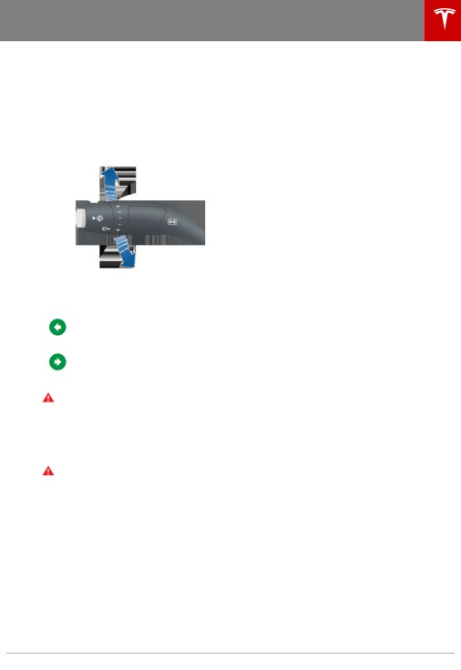
Lights
Turn Signals
Move the left-hand steering column lever up
(before turning right) or down (before turning
left). The turn signals flash three times or
continuously, depending on how far up or
down you move the lever. Lightly push the
turn signal lever up or down for a three-flash
sequence. For a continuous signal, push the
lever fully up or down.
The turn signals stop operating when canceled
by the steering wheel, or when you return the
lever to the central position.
The corresponding turn signal
indicator lights up on the instrument
panel when a turn signal is
operating. You also hear a clicking
sound.
Warning: If you have purchased an
optional Autopilot package, and Trac-
Aware Cruise Control is active, engaging
a turn signal can cause Model S to
accelerate when using Trac-Aware
Cruise Control in specific situations (see
Overtake Acceleration on page 92).
Warning: If you have purchased an
optional Autopilot package and Autosteer
is active, engaging a turn signal may
cause Model S to change lanes.
Hazard Warning Flashers
To turn on the hazard warning flashers, press
the button located on the side of the
touchscreen closest to the steering wheel. All
turn signals flash. Press again to turn off.
Note: Hazard warning flashers operate even
without a key nearby.
Driving
57
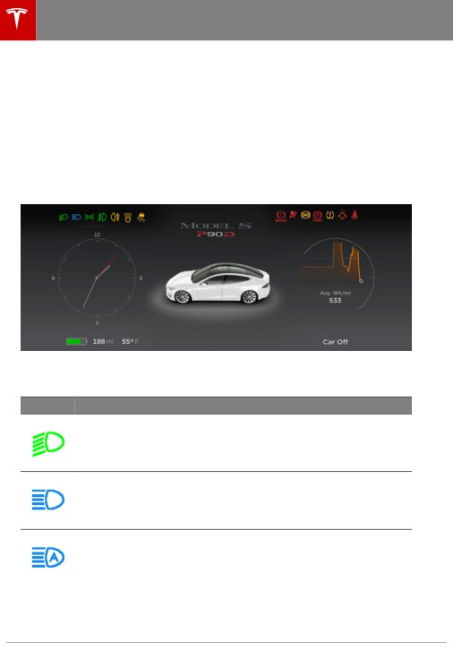
Instrument Panel
Instrument Panel Overview
The instrument panel changes depending on whether Model S is:
• Off (shown below).
• Driving (see Instrument Panel - Driving on page 62).
• Charging (see Charging Status on page 169).
When Model S is off, the instrument panel shows remaining estimated range, status of doors, and
outside temperature. When you press the brake, indicator lights flash on briefly along the top.
Unless an indicator light applies to a current situation, it should turn off. If an indicator light fails to
turn on or off, contact Tesla.
Note: The following illustration is provided for demonstration purposes only. Depending on vehicle
options, software version, and market region, the information displayed may be slightly different.
The following indicators illuminate on the instrument panel to advise you or alert you of a specific
condition.
Indicator Description
Low beam headlights are on.
High beam headlights are on. Illuminates when high beams are on but the Auto
High Beam setting is turned off or if the Auto High Beam setting is turned on but is
temporarily unavailable. See High Beam Headlights on page 56.
High beam headlights are currently turned on, and Auto High Beam is ready to
turn off the high beams if light is detected in front of Model S. See High Beam
Headlights on page 56.
58
Model S Owner's Manual
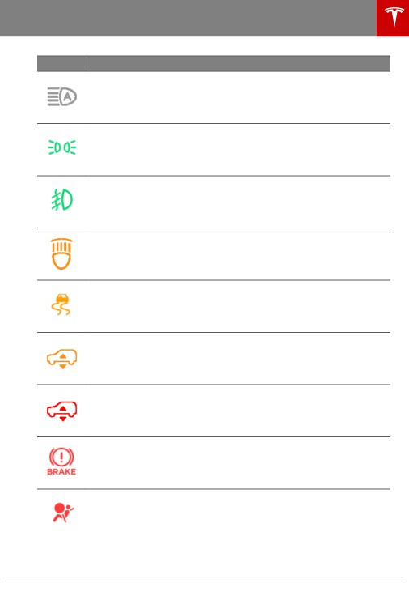
Instrument Panel
Indicator Description
High beam headlights are temporarily turned off because Auto High Beam is on
and is detecting light in front of Model S. When light is no longer detected, the
high beams automatically turn back on. See High Beam Headlights on page 56.
Parking lights (side marker lights, tail lights, and license plate lights) are on. See
Lights on page 54.
Front fog lights, if equipped. See Lights on page 54.
Adaptive Front Lighting, if equipped. See Adaptive Front Lighting System (AFS)
on page 56.
Electronic stability control systems are actively minimizing wheel spin by
controlling brake pressure and motor power (indicator flashes amber). See Traction
Control on page 70. If this indicator remains on, a fault is detected and you
should immediately contact Tesla.
If a fault is detected that reduces the performance of the air suspension system,
this amber indicator light displays. If the problem persists, contact Tesla. See Air
Suspension on page 146.
If a fault is detected that disables the air suspension system, a red indicator lights
up on the instrument panel. Contact Tesla.
A brake system fault is detected or the brake fluid level is low. See Braking and
Stopping on page 66. Contact Tesla immediately.
Airbag safety. If this red indicator does not flash on briefly when Model S prepares
to drive, or if it remains on, contact Tesla immediately. See Airbags on page 37.
Driving
59
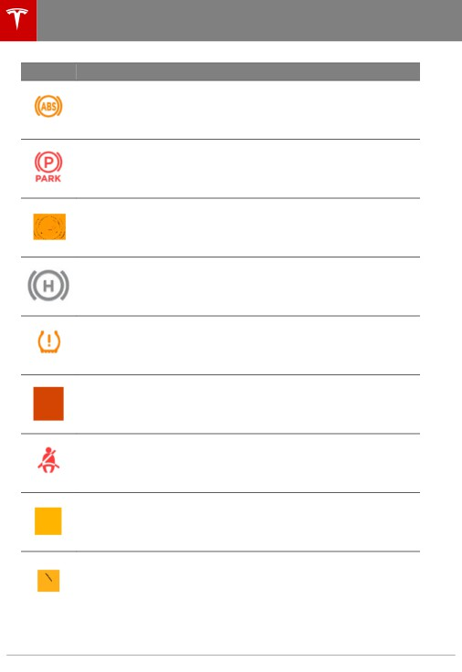
Instrument Panel
Indicator Description
An ABS (Anti-lock Braking System) fault is detected. See Braking and Stopping on
page 66. Contact Tesla immediately.
The parking brake is manually applied. See Parking Brake on page 68.
A parking brake fault is detected. Contact Tesla. See Parking Brake on page 68.
Vehicle Hold is actively applying the brakes. See Vehicle Hold on page 73.
Tire pressure warning. The pressure of a tire is out of range. If a fault with the Tire
Pressure Monitoring System (TPMS) is detected, the indicator flashes. For a TPMS
fault, contact Tesla. See Tire Care and Maintenance on page 173.
A door or trunk is open. See Keys and Doors on page 10, Rear Trunk on page 16, or
Front Trunk on page 19.
A seat belt for an occupied seat is not fastened. See Seat Belts on page 27.
Note: Depending on the date of manufacture, rear seating positions may not be
equipped with a seat belt reminder.
Electronic stability control systems are no longer minimizing wheel spin. On a Rear
Wheel Drive vehicle, the traction control system has been turned off, or on an All-
Wheel Drive vehicle, Slip Start has been enabled. See Traction Control on page
70.
Model S is in Tow mode and can roll freely. It does not automatically shift into Park
when you exit. See Instructions for Transporters on page 206.
60
Model S Owner's Manual
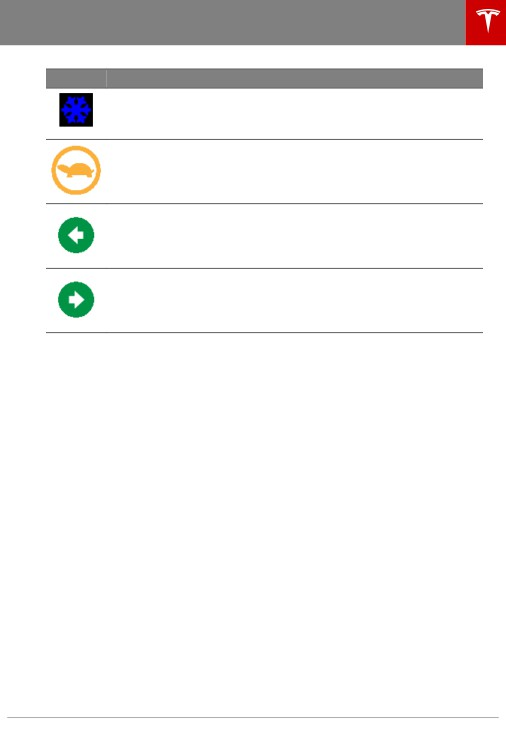
Instrument Panel
Indicator Description
Appears when some of the stored energy in the Battery may not be available due
to cold weather conditions. If Model S is plugged in, you can heat your Battery by
turning on climate control with the mobile app. The snowflake icon disappears
when the Battery is suciently warm.
Vehicle power is currently being limited because the energy remaining in the
Battery is low or the vehicle's systems are being heated or cooled.
Flashes green when the left turn signal is operating. Both turn signal indicators
flash green when the hazard warning flashers are operating.
Flashes green when the right turn signal is operating. Both turn signal indicators
flash green when the hazard warning flashers are operating.
Driving
61
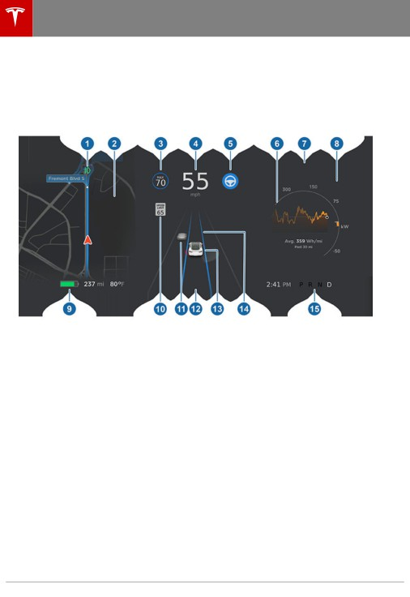
Instrument Panel
Instrument Panel - Driving
When Model S is driving (or ready to drive), the instrument panel shows your current driving
status and a real-time visualization of the road as detected by the Autopilot components (see
About Autopilot on page 85). The visualization automatically zooms in and out as needed to
inform you when a vehicle is detected in your blind spot.
Note: The following illustration is provided for demonstration purposes only. Depending on vehicle
options, software version, and market region, the information displayed may be slightly different.
1.
Indicator lights display along the top to provide status (see Instrument Panel Overview on
page 58).
2.
When you are actively navigating to a destination, navigation instructions display here. Use
the left steering wheel buttons to change what displays on the left side of the instrument
panel whenever navigation instructions are not displayed (see Using Left Steering Wheel
Buttons on page 44).
3.
Trac-Aware Cruise Control is cruising at a set speed. When Trac-Aware Cruise Control is
available but you haven't set a cruising speed, the icon is gray and the speed is not shown
(see Trac-Aware Cruise Control on page 88).
Note: On roads where the map data determines that a conditional speed limit exists (for
example, a speed limit based on time of day or weather conditions), a second speed limit
displays below the first speed limit. It is the driver's responsibility to determine whether the
conditional speed limit is currently in effect and adjust the driving speed accordingly.
4.
Driving speed.
5.
Autosteer is actively steering Model S. When Autosteer is available but you haven't activated
it, the icon is gray (see Autosteer on page 95).
6.
On the Energy graph, dashed lines appear on the power meter if Model S is limiting power.
The dashed lines appear on the top portion (energy being used) when power available for
acceleration is being limited, and on the bottom portion (energy being gained) when power
that can be gained by regenerative braking is limited. Model S limits power for many reasons.
Here are just a few examples:
• Acceleration may be limited when the Battery is reaching a low state of charge or if the
powertrain is hot.
• Both acceleration and regenerative braking may be limited when the ambient temperature
is either very high or very low.
62
Model S Owner's Manual
Instrument Panel
• Regenerative braking may be limited when the Battery is fully charged.
Note: Use the right steering wheel buttons to control what displays on the right side of the
instrument panel (see Using Right Steering Wheel Buttons on page 45).
7.
Pay attention to important alert messages that display here. If any alerts are in effect, you can
view information about them by touching the alert icon (exclamation mark) on the
touchscreen’s status bar (the topmost area of the touchscreen).
8.
Use the right steering wheel buttons to change what displays on the right side of the
instrument panel whenever a phone call is not active (see Using Right Steering Wheel Buttons
on page 45).
9.
Total estimated driving distance (or energy) available. Instead of driving distance, you can
display the percentage of battery energy remaining. To do so, touch Controls > Display >
Energy Display.
Note: When anticipating when you need to charge, use range estimates as a general guideline
only.
10.
The speed limit (if available) that is currently being detected by Speed Assist (see Speed
Assist on page 116).
11.
The car in front of you (if applicable).
12.
Pay attention to important driving-related messages that appear at the bottom center of the
instrument panel.
13.
Your Model S.
14.
When Autosteer is active and detects the driving lane, it is highlighted in blue (see Autosteer
on page 95).
Note: If Navigate on Autopilot is active, the instrument panel displays the driving lane as a
single blue line in front of Model S (see Navigate on Autopilot on page 98).
15.
Currently selected gear: Park, Reverse, Neutral, or Drive.
Warning: Although the instrument panel shows surrounding trac, some vehicles may not be
displayed. Never rely on the instrument panel to determine if a vehicle is present (for
example, in your blind spot). Always use your mirrors and perform shoulder checks.
Driving
63
Wipers and Washers
Wipers
Caution: In harsh climates, ensure that the
wiper blades are not frozen or adhered to
To wipe the windshield, rotate the end of the
the windshield.
left-hand steering column lever away from
you. The steering column lever has five
De-icing Wipers
positions:
To make wiper blades easy to access so you
•
1st: Off.
can remove any ice and snow, shift Model S
•
2nd: Auto with low rain sensitivity.*
into Park, turn the wipers off, then use the
•
3rd: Auto with high rain sensitivity.*
touchscreen to move them to the service
•
4th: Continuous, slow.
position. Touch Controls > Service > Wiper
•
5th: Continuous, fast.
Service Mode. When parking in cold outdoor
climates, it is helpful to leave Model S with the
wipers in the service position. In this position,
they are closer to the defrost vent, allowing
you to thaw them by directing air from the
climate control system towards the
windshield.
Note: Wipers automatically return to their
normal position when you shift Model S out of
Park.
For a single wipe, press and release the end of
If Model S is equipped with the optional cold
the lever.
weather package, you can de-ice wipers by
touching the climate control on the
If the wipers are set to Auto and Model S
touchscreen (see Climate Controls on page
detects no liquid on the windshield, the wipers
128). Wiper heaters automatically turns off
do not wipe.
after 15 minutes.
When you operate the wipers, headlights
automatically turn on (if they are not on
already).
Washers
*To enable the Auto settings, touch Controls >
Press the button on the end of the left
Vehicle > Autowipers (Beta). When wipers are
steering column lever to spray washer fluid
set to Auto, Model S detects whether or not it
onto the windshield. You can press this button
is raining. The frequency at which they wipe
at two levels. Press partially for a single wipe,
depends on how much rain is detected on the
without any washer fluid. Press fully for both
windshield. When wipers are set to high rain
wipe and wash. When washing the windshield,
sensitivity, the wipers turn on when Model S
the wipers will perform two wipes after you
detects a light mist.
release the button, then a third wipe a few
seconds later.
Note: The Auto setting is currently in BETA. If
uncertain about using the Auto setting while
in the BETA phase, Tesla recommends
operating the wipers manually, as necessary.
Caution: Ensure the wipers are in the Off
position before washing Model S to avoid
the risk of damaging the wipers.
To extend the life of wiper blades, remove ice
from the windshield before turning wipers on.
Periodically top up washer fluid (see Topping
Ice has sharp edges that can damage the
Up Windshield Washer Fluid on page 186).
rubber on the wiper blades.
Periodically check and clean the edge of the
wiper blade. If damaged, replace the wiper
blade immediately. For details on checking
and replacing wiper blades, see Wiper Blades
and Washer Jets on page 183.
64
Model S Owner's Manual
Wipers and Washers
De-icing Washer Nozzles
If Model S is equipped with the optional cold
weather package, washer nozzles have de-
icers that turn on whenever the ambient
temperature nears freezing, or when you turn
on the heated wipers (see Climate Controls on
page 128). The washer de-icers turn off when
the heated wipers turn off (after 15 minutes),
provided the temperature is warm enough to
prevent freezing.
Driving
65
Braking and Stopping
Braking Systems
Warning: Do not pump the brake pedal.
Doing so interrupts operation of the ABS
Warning: Properly functioning braking
and can increase braking distance.
systems are critical to ensure safety. If
Warning: Always maintain a safe distance
you experience a problem with the brake
pedal, brake caliper, or any component of
from the vehicle in front of you and be
a Model S braking system, contact Tesla
aware of hazardous driving conditions.
While the ABS can improve stopping
immediately.
distance, it cannot overcome the laws of
Model S has an anti-lock braking system
physics. It also does not prevent the
(ABS) that prevents the wheels from locking
danger of hydroplaning (where a layer of
when you apply maximum brake pressure. This
water prevents direct contact between
improves steering control during heavy
the tires and the road).
braking in most road conditions.
Automatic Emergency Braking is designed to
During emergency braking conditions, the
automatically brake in situations where a
ABS constantly monitors the speed of each
collision is considered imminent (see
wheel and varies the brake pressure according
Automatic Emergency Braking on page 114).
to the grip available.
Warning: Automatic Emergency Braking
The alteration of brake pressure can be felt as
is not designed to prevent a collision. At
a pulsing sensation through the brake pedal.
best, it can minimize the impact of a
This demonstrates that the ABS is operating
frontal collision by attempting to reduce
and is not a cause for concern. Keep firm and
your driving speed. Depending on
steady pressure on the brake pedal while
Automatic Emergency Braking to avoid a
experiencing the pulsing.
collision can result in serious injury or
death.
The ABS indicator briefly flashes
yellow on the instrument panel when
Caution: In emergency situations, if the
you first start Model S. If this
brakes are not functioning properly, press
indicator lights up at any other time,
and hold the Park button on the gear
an ABS fault has occurred and the
selector to bring the vehicle to a stop. Do
ABS is not operating. Contact Tesla.
not use this method to stop the vehicle
The braking system remains fully
unless absolutely necessary.
operational and is not affected by an
ABS failure. However, braking
Brake Disc Wiping
distances may increase. Drive
Model S is equipped with brake disc wiping,
cautiously and avoid heavy braking.
which automatically assists in maintaining
brake responsiveness in cold and wet weather
conditions. When such conditions are
If the instrument panel displays this
detected, brake disc wiping repeatedly applies
red brake indicator at any time other
an imperceptible amount of brake force to
than briefly when you first start
clear away water on the brake disc surface.
Model S, a brake system fault is
This ensures your brakes are responsive even
detected, or the level of the brake
during poor weather conditions.
fluid is low. Contact Tesla
immediately. Apply steady pressure
and keep the brakes firm to bring the
Hydraulic Fade Compensation
vehicle to a stop when safe to do so.
Your vehicle is also equipped with hydraulic
fade compensation. This assists in monitoring
brake system pressure and ABS activity for
Emergency Braking
instances of lower brake performance. If lower
In an emergency, fully press the brake pedal
brake performance is detected (as a result of
and maintain firm pressure, even on low
brake fade, or cold or wet conditions, for
traction surfaces. The ABS varies the braking
example), you may feel the brake pedal pull
pressure to each wheel according to the
away from your foot, detect some noise, and
amount of traction available. This prevents
notice a strong increase in vehicle braking.
wheels from locking and ensures that you stop
Continue to press the brake pedal without
as safely as possible.
releasing or "pumping" them— just brake as
you normally would.
66
Model S Owner's Manual
Braking and Stopping
Caution: If the brakes are not functioning
properly, stop the vehicle as soon as
safety permits and contact Tesla Service.
See Park on page 52 for information on
using the Park button to stop the vehicle
in case of emergency.
Warning: Always maintain a safe driving
distance from the vehicle in front of you
and be cautious in hazardous driving
conditions. Do not rely on brake disc
wiping or hydraulic fade compensation to
act as a substitute for adequate braking.
Regenerative Braking
Whenever Model S is moving and your foot is
off the accelerator, regenerative braking slows
down Model S and feeds any surplus energy
back to the Battery.
By anticipating your stops and reducing or
To Set the Regenerative Braking Level
removing pressure from the accelerator pedal
to slow down, you can take advantage of
You can use the touchscreen to change the
regenerative braking to increase driving range.
level of regenerative braking:
Of course, this is no substitute for regular
1.
Touch Controls > Driving > Regenerative
braking when needed for safety.
Braking.
Note: If regenerative braking is aggressively
2. Choose from two levels:
slowing Model S (such as when your foot is
completely off the accelerator pedal at
• Standard: Provides the maximum
highway speeds), the brake lights turn on to
amount of regenerative braking. When
alert others that you are slowing down.
you release the accelerator, Model S
slows down, reducing the need to use
Warning: In snowy or icy conditions
the brakes.
Model S may experience traction loss
• Low: Limits regenerative braking.
during regenerative braking, particularly
When you release the accelerator,
when in the Standard setting and/or not
Model S takes longer to slow down
using winter tires. Tesla recommends
and coasts further than if set to
using the Low setting (see To Set the
"Standard".
Regenerative Braking Level on page 67)
in snowy or icy conditions to help
maintain vehicle stability.
Stopping Mode
The Energy app displays real-time feedback
Regenerative braking decelerates Model S
on the amount of energy being gained by
whenever you release the accelerator pedal
regenerative braking. You can also display the
when driving. You can choose what you want
power meter on either side of the instrument
Model S to do once the driving speed has
panel by choosing Energy using the scroll
been reduced to a very low speed (almost at a
button on the steering wheel (see Steering
stop) and both the accelerator pedal and
Wheel on page 44).
brake pedal are released. While in Park, touch
The amount of energy fed back to the Battery
Controls > Driving > Stopping Mode and
choose from these options:
using regenerative braking can depend on the
current state of the Battery and the charge
level setting that you are using. For example,
regenerative braking may be limited if the
Battery is already fully charged or if the
ambient temperature is too cold.
Note: If regenerative braking is limited, a
dashed yellow line displays on the power
meter.
Driving
67
Braking and Stopping
•
CREEP: When close to, or at, a complete
to do so can result in serious damage,
stop, the motor continues to apply torque,
injury, or death.
moving Model S slowly forward (in Drive)
Warning: Do not rely on regenerative
or backwards (in Reverse), similar to a
braking and your chosen Stopping Mode
conventional vehicle with an automatic
to keep you and your vehicle safe. Various
transmission. In some situations, such as
factors such as driving with a heavy
on a steep hill or driveway, you may need
vehicle load, on a steep hill, or on wet or
to press the accelerator pedal to continue
icy roads affect deceleration rate and the
moving or to prevent Model S from
distance at which Model S will come to a
moving in the opposite direction.
stop. Drive attentively and always stay
Warning: Never rely on CREEP to
prepared to use the brake pedal to stop
apply enough torque to prevent your
as appropriate based on trac and road
vehicle from rolling down a hill.
conditions.
Always press the brake pedal to
Warning: Forward Collision Warning and
remain stopped or the accelerator
Automatic Emergency Braking do not
pedal to proceed up the hill. Failure
operate when driving at very low speeds
to do so can result in property
(see Collision Avoidance Assist on page
damage and/or a collision.
113). Do not rely on these features to
•
HOLD: Maximizes range and reduces
warn you, or to prevent or reduce the
brake wear by continuing to provide
impact of a collision.
regenerative braking at speeds lower than
with the Creep and Roll settings. When
Note: Your chosen setting is retained in your
Model S stops, the brakes are
Driver Profile until you manually change it.
automatically applied without you having
to put your foot on the brake pedal.
Parking Brake
Whether stopped on a flat surface or a hill,
Vehicle Hold keeps the brake applied,
The parking brake automatically engages
provided your foot remains off the
when you shift Model S into Park, and releases
accelerator and brake pedals. See Vehicle
when you shift into any other gear.
Hold on page 73.
Warning: Never rely on HOLD to
adequately decelerate or fully stop
your vehicle. Many factors can
contribute to a longer stopping
distance, including downward slopes,
the low regenerative braking setting,
Note: The parking brake operates on the rear
and reduced or limited regenerative
braking (see Regenerative Braking on
wheels only, and is independent of the pedal-
operated brake system.
page 67). Always be prepared to use
the brake pedal to adequately
Warning: In snowy or icy conditions the
decelerate or stop.
rear wheels may not have sucient
•
ROLL: When close to, or at, a complete
traction to prevent Model S from sliding
stop, Model S becomes free rolling like a
down a slope, particularly if not using
vehicle in Neutral. Therefore, if stopped on
winter tires. Avoid parking on hills in
a slope, Model S will roll downward. The
snowy or icy conditions. You are always
brake does not engage, and the motor
responsible for parking safely.
does not apply torque (until the
Warning: Your Model S may display an
accelerator pedal is pressed).
alert if the road is too steep to safely park
Note: If you choose CREEP or ROLL, you
on, or if the parking brakes are not
can still use Vehicle Hold to apply the
properly engaged. These alerts are for
brakes. However, you will need to briefly
guidance purposes only and are not a
press the brake pedal when the vehicle is
substitute for the driver’s judgment of
stopped. See Vehicle Hold on page 73.
safe parking conditions, including specific
road or weather conditions. Do not
Warning: Press the brake pedal if Model S
depend on these alerts to determine
moves when unsafe to do so. It is your
whether or not it is safe to park at any
responsibility to stay alert and be in
location. You are always responsible for
control of the vehicle at all times. Failure
parking safely.
68
Model S Owner's Manual
Braking and Stopping
Use the touchscreen to manually release the
parking brake (which also shifts Model S into
Neutral):
1.
Touch Controls > Safety & Security.
2.
Press the brake pedal, then touch Parking
Brake. If Model S was previously in Park, it
shifts into Neutral.
When you use the touchscreen to
manually apply the parking brake,
the red parking brake indicator lights
up on the instrument panel.
If the parking brake experiences an
electrical issue, the amber parking
brake indicator lights up and a fault
message displays at the top of the
instrument panel.
Caution: In the unlikely event that Model S
loses electrical power, you cannot access
the touchscreen and are therefore unable
to release the parking brake. Contact
Tesla.
Brake Wear
Model S brake pads are equipped with wear
indicators. A wear indicator is a thin metal
strip attached to the brake pad that squeals as
it rubs against the rotor when the pad wears
down. This squealing sound indicates that the
brake pads have reached the end of their
service life and require replacement. To
replace the brake pads, contact Tesla Service.
Brakes must be periodically inspected visually
by removing the tire and wheel. For detailed
specifications and service limits for rotors and
brake pads, see Subsystems on page 194.
Additionally, Tesla recommends cleaning and
lubricating the brake calipers every year or
12,500 miles (20,000 km) if in an area where
roads are salted during winter months.
Warning: Neglecting to replace worn
brake pads damages the braking system
and can result in a braking hazard.
Driving
69
Traction Control
How It Works
The traction control system constantly
monitors the speed of the front and rear
wheels. If Model S experiences a loss of
traction, the system minimizes wheel spin by
controlling brake pressure and motor power.
By default, the traction control system is on.
Under normal conditions, it should remain on
to ensure maximum safety.
This yellow indicator flashes on the
instrument panel whenever the
traction control system is actively
controlling brake pressure and motor
power to minimize wheel spin. If the
indicator stays on, a fault is detected
with the traction control system.
Contact Tesla Service.
Warning: Traction control cannot prevent
collisions caused by driving dangerously
or turning too sharply at high speeds.
Allowing Wheel Slip
To allow the wheels to spin at a limited speed,
you can enable Slip Start. Slip Start can be
enabled only when Model S is moving 30 mph
(48 km/h) or slower. Slip Start automatically
disables when the speed exceeds 50 mph
(80 km/h).
Under normal conditions, Slip Start should not
be enabled. Enable it only in circumstances
where you deliberately want the wheels to
spin, such as:
• Starting on a loose surface, such as gravel
or snow.
• Driving in deep snow, sand or mud.
• Rocking out of a hole or deep rut.
To allow the wheels to spin, touch Controls >
Driving > Traction Control > Slip Start.
The instrument panel displays an
alert message when Slip Start is
enabled.
Although Slip Start is automatically disabled
the next time you start Model S, it is strongly
recommended that you disable it immediately
after the circumstances that required you to
enable it have passed.
Note: Slip Start cannot be enabled when you
are actively using Trac-Aware Cruise
Control.
70
Model S Owner's Manual
Park Assist
How Park Assist Works
either no readings or false readings (see
Limitations and False Warnings on page
Model S has several sensors designed to
72). Therefore, depending on Park Assist
detect the presence of objects. When driving
to determine if Model S is approaching an
slowly in Drive or Reverse (for example, when
obstruction can result in damage to the
parking), the sensors alert you if an object is
vehicle and/or objects, and can
detected in close proximity of your Model S.
potentially cause serious injury. Always
Objects are only detected in the direction of
inspect the area with your own eyes.
the gear you selected; front objects in Drive,
When reversing, perform shoulder checks
rear objects in Reverse.
and use all mirrors. Park assist does not
Warning: You may not be alerted if
detect children, pedestrians, bicyclists,
animals, or objects that are moving,
Model S rolls freely in the opposite
direction of the gear you selected (for
protruding, located too far above or
example, you will not receive an alert if
below the sensors, or too close or too far
from the sensors. Park Assist is for
Model S rolls backwards down a hill while
in Drive).
guidance purposes only and is not
intended to replace your own direct visual
checks. It is not a substitute for careful
driving.
Visual and Audio Feedback
When you shift to Reverse, the Park Assist
view displays on the left side of the instrument
panel, showing objects that are in close
proximity to the front and rear of Model S.
This view closes when you shift into Drive
unless an object is detected close to the front
of Model S, in which case the Park Assist view
closes automatically when your driving speed
exceeds 5 mph (8 km/h). When reversing,
visual feedback also displays on the
touchscreen, immediately below the camera
view (see Rear View Camera on page 79). You
can manually close the park assist view on the
touchscreen by touching the X in the upper
corner.
When driving with the Camera app displayed
on the touchscreen, you can switch to the
Park Assist view when driving at speeds below
5 mph (8 km/h). Touch the button located in
the upper left corner of the Camera app
The sensors are activated when driving slower
window. This is useful if you need assistance
than 5 mph (8 km/h).
with parallel parking.
If chimes are turned on (see Controlling
Audible Feedback on page 72), an audible
beep sounds as you approach an object. You
can temporarily mute the chime by pressing
the scroll button on the left side of the
steering wheel or by touching the mute button
on the bottom left corner of the Park Assist
view.
Note: If a sensor is unable to provide
Warning: Never depend on Park Assist to
feedback, the instrument panel displays an
inform you if an area you are approaching
alert message.
is free of objects and/or people. Several
external factors can reduce the
Caution: Keep sensors clean from dirt,
performance of Park Assist, causing
debris, snow, and ice. Avoid using a high
Driving
71
Park Assist
pressure power washer on the sensors
• The object is located too close to the
and do not clean a sensor with a sharp or
bumper.
abrasive object that can scratch or
• A bumper is misaligned or damaged.
damage its surface.
• An object that is mounted to Model S is
Caution: Do not install accessories or
interfering with and/or obstructing the
stickers on or near the parking sensors.
sensor (such as a bike rack or bumper
sticker).
• Model S rolls freely in the opposite
Controlling Audible Feedback
direction of the gear you selected (for
You can use Park Assist with or without
example, you will not receive an alert if
audible feedback. To turn chimes on or off,
Model S rolls backwards down a hill while
touch Controls > Safety & Security > Park
in Drive).
Assist Chimes.
To mute the chimes temporarily, press the
Other Parking Aids
scroll button on the left side of the steering
In addition to Park Assist, when shifted into
wheel or touch the mute button in the corner
Reverse, the backup camera displays a view of
of the Park Assist view. The chimes are muted
the area behind Model S (see Rear View
until you shift into a different gear or drive
Camera on page 79).
over 5 mph (8 km/h).
Limitations and False Warnings
The parking sensors may not function
correctly in these situations:
•
One or more of the parking sensors is
damaged, dirty, or covered (such as mud,
ice, or snow).
•
The object is located below approximately
8 inches (20 cm) (such as a curb or low
barrier).
Caution: Shorter objects that are
detected (such as curbs or low
barriers) can move into the blind spot
of the sensors. Model S cannot alert
you about an object while it is in the
blind spot of the sensors.
•
Weather conditions (heavy rain, snow, or
fog) are interfering with sensor operation.
•
The object is thin (such as a sign post).
•
A sensor’s operating range has been
exceeded.
•
The object is sound-absorbing or soft
(such as powder snow).
•
The object is sloped (such as a sloped
embankment).
•
Model S has been parked in, or being
driven in, extremely hot or cold
temperatures.
•
The sensors are affected by other
electrical equipment or devices that
generate ultrasonic waves.
•
You are driving in a location where the
sensors' ultrasonic waves are deflected
away from the vehicle (such as driving
next to a wall or pillar).
72
Model S Owner's Manual
Vehicle Hold
When Model S is stopped, Vehicle Hold can
continue to apply the brakes even after you
remove your foot from the brake pedal. When
driving on a hill or on a flat surface, brake as
you normally would. After coming to a
complete stop, simply press the brake pedal
again (until the instrument panel displays the
Vehicle Hold indicator light) to enable Vehicle
Hold. You can then release the brake pedal
and remain stopped, even on a hill.
This indicator displays on the
instrument panel whenever Vehicle
Hold is actively braking Model S.
To disengage Vehicle Hold, press the
accelerator pedal or press and release the
brake pedal.
Note: Shifting into Neutral also disengages
Vehicle Hold.
Note: After actively braking Model S for
approximately ten minutes, Model S shifts into
Park and Vehicle Hold cancels. Model S also
shifts into Park if it detects that the driver has
left the vehicle.
Note: When Stopping Mode is set to Hold (see
Stopping Mode on page 67), Vehicle Hold
engages automatically whenever Model S
stops while in a driving gear. There is no need
to press the brake to engage it.
Driving
73
Acceleration Modes
The acceleration settings available on your
Using Insane+ or Ludicrous+
Model S vary depending on date of
manufacture and options chosen at time of
If you choose Insane or Ludicrous, additional
purchase:
power is available immediately. However, to
achieve the absolute maximum power
•
Chill: limits acceleration for a smooth and
(designed for short term use), you can choose
gentle ride (available on all vehicles
Insane+ or Ludicrous+ to heat the Battery to
equipped with Autopilot hardware).
its ideal operating temperature. This ensure
•
Standard: provides the normal level of
access to 100% of available power.
acceleration (available on non-
While the battery is being heated, the
Performance All-Wheel Drive vehicles and
touchscreen displays a status message
Rear Wheel Drive Model S vehicles
providing you with an approximate wait time,
equipped with Autopilot hardware).
and letting you know when the additional
•
Sport: provides the normal level of
power is available. In addition to heating the
acceleration (available on Performance
Battery, Insane+ and Ludicrous+ modes strive
All-Wheel Drive vehicles).
to keep the Battery within an optimal
•
Insane: increases peak torque by
temperature range. Therefore, under
approximately 30 percent (available on
aggressive driving scenarios, you may also see
Performance All-Wheel Drive vehicles not
the “Cooling” status for several minutes until
equipped with the Ludicrous upgrade).
temperatures fall. Model S stays in the chosen
•
Ludicrous: increases peak torque by
mode for three hours, even if you leave the
approximately 60 percent (available on
vehicle. After three hours, the feature times
Performance All-Wheel Drive vehicles
out.
equipped with the Ludicrous upgrade).
Note: Insane+ and Ludicrous+ are designed to
•
Insane+: increases peak torque by
achieve maximum performance for short term
approximately 30 percent (available on
acceleration. These settings are not intended
Performance All-Wheel Drive vehicles not
for daily driving. The tradeoff for the
equipped with the Ludicrous upgrade)
additional power boost is extra energy
while also heating up the Battery to its
consumption and earlier power fade on long
ideal operating temperature to ensure
drives. The Insane or Ludicrous acceleration
access to 100% of available power. Before
settings provide a significant increase in
choosing this setting, read about Using
performance even without choosing the
Insane+ or Ludicrous+ on page 74.
Insane+ or Ludicrous+ setting to achieve
•
Ludicrous+: increases peak torque by
maximum Battery power. In fact, in normal
approximately 60 percent (available on
driving situations, the additional power that
Performance All-Wheel Drive vehicles
can be achieved using Insane+ and Ludicrous+
equipped with the Ludicrous upgrade)
may be unnoticeable.
while also immediately heating up the
Note: To support Insane+ or Ludicrous+, the
Battery to its ideal operating temperature
to ensure access to 100% of available
charge level must be 20% or higher. You
cannot initiate these settings if the charge
power. Before choosing this setting, read
about Using Insane+ or Ludicrous+ on
level is less than 20%. In addition, these
page 74.
settings immediately cancel if at any time
during use, the charge level drops below 20%.
Note: Although Chill does not directly improve
driving range, using the increased torque and
When using Insane+ or Ludicrous+, Model S
consumes more energy to keep the Battery
power available in Insane or Ludicrous mode
can reduce range and eciency.
within an optimal temperature range.
To cancel Insane+ or Ludicrous+ at any time,
Note: When Chill is selected, Chill displays on
the instrument panel above the driving speed.
change the acceleration level to another
setting. To prevent excess and potentially
In addition, a Performance All-Wheel Drive
unnecessary energy consumption (for
Model S also features Launch Mode to provide
example, you leave the vehicle and forget to
optimum acceleration on surfaces with good
cancel Insane+ or Ludicrous+), these settings
traction. For the specific driving instructions
cancel automatically in three hours, regardless
required to use Launch Mode, see Launch
of whether you are still driving or have left the
Mode on page 75.
vehicle.
To choose an acceleration mode, touch
Note: Insane+ or Ludicrous+ strives to keep
Controls > Driving > Acceleration.
the Battery within an optimal temperature
74
Model S Owner's Manual
Acceleration Modes
range. In addition to heating the Battery, these
4.
Close the Max Battery Power popup
settings also cool the battery when necessary
window by touching the X in the upper
(for example, while driving at high speeds,
left corner. Notice that the touchscreen
during rapid acceleration, driving for long
now displays the estimated time for the
periods, etc.).
Battery to achieve maximum power below
the acceleration level setting. When the
Battery preparation is complete, the
Launch Mode
estimated time changes to "READY!".
Launch Mode, available on Performance All-
Note: There is no need to wait until Max
Wheel Drive vehicles only, provides optimum
Battery Power is in its READY state—you
acceleration on surfaces with good traction.
can use Launch immediately after
Note: Hard acceleration including, but not
enabling Max Battery Power. Although
limited to, using launch mode, increases stress
vehicle performance increases
on the vehicle’s powertrain, and can cause
immediately after enabling Max Battery
premature wear and aging of various
Power, maximum power is not achieved
components. Model S constantly monitors
until the Battery is within the target
powertrain fatigue and damage, and notifies
temperature range and “READY!” is
you if vehicle components need to be
displayed.
serviced.
Note: Heating the Battery can take over an
Warning: Use Launch Mode only in
hour, depending on environmental
appropriate locations where there is no
conditions, the starting temperature, and
cross trac or pedestrians present.
whether or not Model S is being driven.
Launch Mode is designed for use on
5.
With Model S shifted into Drive and at a
closed circuit driving courses. It is the
complete stop with the steering wheel
driver’s responsibility to ensure that
straight, fully press the brake pedal with
driving style and acceleration do not
your left foot.
endanger or inconvenience other road
6.
While still pressing the brake with your left
users.
foot, fully press the accelerator pedal with
your right foot, then release the
To Activate Launch Mode
accelerator pedal. The instrument panel
displays a message indicating that Launch
1.
Ensure the brakes are slightly warm by
Mode is enabled.
driving for a few minutes and using the
7.
Within eight seconds, fully press the
brakes a few times.
accelerator pedal a second time to pre-
2. If equipped, set the air suspension to Low
load motor torque, then within four
(see Air Suspension on page 146).
seconds, release the brake.
3. Set the acceleration level to Insane or
Ludicrous and enable Max Battery Power.
When you release the brake, Model S launches
forward.
Note: Launch Mode is not available if Slip Start
has been enabled (which allows the wheels to
spin). See Traction Control on page 70.
Note: Launch Mode is available only if the
ambient temperature is 37° F (3° C) or
warmer.
Driving
75
Trip Information
Displaying Trip Information
Trip information displays on the touchscreen
when you touch Controls > Trips. For the
current trip, you can display distance, duration
and average energy usage. You can also show
distance and total and average energy used
since your last charge and for additional trips.
To name or rename a trip, touch the trip's
name, enter a new name for the trip, then
press Save. To reset a particular trip meter,
touch its associated Reset button.
You can display information for up to three
trips on the instrument panel. Use the
checkboxes to specify the trip(s) you want to
display. Then use the scroll bar on the steering
wheel to display the chosen trip(s) (see Using
Left Steering Wheel Buttons on page 44 or
Using Right Steering Wheel Buttons on page
45).
Odometer
To display the odometer, touch the Tesla “T” at
the top center of the touchscreen.
76
Model S Owner's Manual
Getting Maximum Range
Driving Tips to Maximize Range
• Consumption: display how much energy
Model S has consumed over the past 5, 15
You can maximize your driving range using
or 30 miles (10, 25 or 50 km).
the same driving habits that you use to
Touch Instant Range or Average Range to
conserve fuel in a gasoline-powered vehicle. In
addition to driving habits, energy
adjust the projected range estimation.
consumption depends on environmental
Instant Range uses only the latest few
data points to estimate the projected
conditions (such as exceptionally cold or hot
weather and driving on roads with steep hills).
range, whereas Average Range uses the
past 5, 15 or 30 miles (10, 25 or 50 km) of
To get the maximum range from a charge:
energy consumption to provide a more
•
Slow down your driving and avoid
accurate projected range.
frequent and rapid acceleration.
• Trip: If your Model S is equipped with
•
If safe to do so, modulate the accelerator
navigation, you can monitor the amount of
pedal instead of using the brake pedal
energy being used while navigating to a
when gradually slowing down. Whenever
destination. You can track actual usage
Model S is moving and you are not
against the initial prediction. The green
pressing the accelerator pedal,
line represents the actual usage whereas
regenerative braking slows down Model S
the gray line represents predicted usage.
and feeds surplus energy back to the
To change the zoom level, touch the zoom
Battery (see Regenerative Braking on
icon located in the top right corner of the
page 67).
chart.
•
Set Stopping Mode to HOLD to gain the
Note: The Trip chart displays energy usage
benefit of regenerative braking at low
only if you are currently navigating to a
driving speeds (see Stopping Mode on
destination.
page 67).
•
Keep tires at the recommended inflation
pressures (see Tire Care and Maintenance
Saving Energy
on page 173).
Model S has an energy-saving feature that
•
Lighten your load by removing any
reduces the amount of energy being
unnecessary cargo.
consumed when Model S is not in use. On
•
Fully raise all windows.
newer vehicles, this feature is automated to
•
Limit the use of resources such as heating,
provide an optimal level of energy saving.
lights, and air conditioning. Using seat
However, on older vehicles, you can touch
heaters to keep warm is more ecient
Controls > Display > Energy Saving and
than heating the cabin.
choose from the following options:
•
Turn on Range Mode (touch Controls >
• OFF - Model S shifts to the energy-saving
Driving > Range Mode). Range Mode
mode at night (10 pm to 5 am). Idle
automatically limits the amount of power
energy consumption may increase.
that the climate control system uses to
• ON - significantly less energy is consumed
maintain the temperature the cabin area
whenever Model S is not in use. The start-
and limits the amount of energy being
up time of the instrument panel and
used to heat or cool the Battery. In
Bluetooth could be slower.
addition, Range Mode turns off signature
lights (only in market regions where
• Always Connected - preserves cell
daytime running lights are not required).
connectivity when energy saving is active.
This allows the mobile app to connect to
The power meter on the instrument panel and
Model S quicker, and provides immediate
the Energy app provides feedback on energy
internet access when entering the car.
usage. With this feedback, you can become
Slightly more energy is consumed.
familiar with how driving habits and
environmental conditions impact how much
energy Model S is using.
Range Assurance
Model S helps protect you against running out
Energy App
of energy. Model S continuously monitors its
energy level and proximity to known charging
Use the Energy app to view real-time and
locations.
projected energy usage. Choose from two
types of charts:
Driving
77
Getting Maximum Range
Touch the map's charging icon to
toggle between displaying
superchargers only, and displaying
all chargers, including destination
chargers, and visited chargers.
When you are at risk of driving beyond the
range of known charging locations, the
touchscreen displays a message giving you
the opportunity to display a list of charging
locations that are within range. When you
select a charging location from the list,
Model S provides navigation instructions and
the turn-by-turn direction list displays the
predicted amount of energy that will remain
when you arrive at the charging destination.
78
Model S Owner's Manual
Rear View Camera
Camera Location
Caution: Do not use chemical-based or
abrasive cleaners. Doing so can damage
Model S is equipped with a rear view camera
the surface of the camera lens.
located above the rear license plate.
Whenever you shift into Reverse, the
touchscreen displays the view from the
camera. Lines show your driving path based
on the position of the steering wheel. These
lines adjust appropriately as you move the
steering wheel.
Note: Visual feedback from the parking
sensors display on the instrument panel (see
Park Assist on page 71).
To display the view from the camera at any
time:
Open the app launcher then
touch the camera icon.
Warning: Never depend on the rear view
camera to inform you if the area behind
you is free of objects and/or people when
reversing. The camera may not detect
objects or barriers that can potentially
cause damage or injury. In addition,
several external factors can reduce the
performance of the camera, including a
dirty or obstructed lens. Therefore,
depending on the rear view camera to
determine if Model S is approaching an
obstruction can result in damage to the
vehicle and/or objects, and can
potentially cause serious injury. Always
inspect the area with your own eyes.
When reversing, perform shoulder checks
and use all mirrors. Use the camera for
guidance purposes only. It is not intended
to replace your own direct visual checks
and is not a substitute for careful driving.
Cleaning the Camera
To ensure a clear picture, keep the camera lens
clean, and free of obstructions. Remove any
buildup of dirt by occasionally wiping the
camera lens with a soft damp cloth.
Driving
79
Dashcam
About Dashcam
• Use a flash drive with as much available
storage as possible, since video footage
Note: Dashcam is a BETA feature.
takes up a large amount of space (Tesla
In addition to supporting Autopilot features,
recommends using a flash drive with at
least 32 GB of storage). Some personal
the cameras can record and store video
footage on a USB flash drive. This can be
computer operating systems may not be
able to format flash drives larger than 32
convenient in situations where you want a
video recording of a particular incident, such
GB as FAT 32. Consider using a third party
as a collision. You can pause, resume, or save
application to format flash drives larger
than 32 GB.
video recordings directly from your vehicle’s
touchscreen.
• The flash drive must have a sustained
write speed of at least 4 MB/s. A
Note: Dashcam only works when Model S is
sustained write speed is different from the
powered on (see Starting and Powering Off on
peak write speed. Check the product
page 50). Dashcam does not record video
details of your flash drive for more
when your vehicle is powered off.
information.
• The flash drive must be USB 2.0
Using Dashcam
compatible. If using a USB 3.0 flash drive,
it must be able to support USB 2.0.
Dashcam requires the use of a properly
•
Use a dedicated flash drive exclusively for
formatted USB flash drive to store and retrieve
saving footage for your vehicle.
footage (see USB Flash Drive Requirements
• The flash drive must be properly
for Videos and Recording on page 150). Once
a properly formatted USB flash drive has been
formatted (see Formatting the USB Flash
inserted into one of your vehicle's front USB
Drive on page 151).
ports, a dashcam icon appears at the top of
Although not a comprehensive list, Tesla has
the touchscreen. Touch the dashcam icon to
confirmed through testing that the following
control dashcam:
flash drives meet the requirements for
Dashcam and Sentry Mode use:
RECORDING. Tap the dashcam
•
SanDisk Ultra Fit USB 3.1 Flash Drive
icon, when dashcam is paused, to
start recording video on the flash
•
Samsung MUF-64AB/AM FIT Plus -
drive.
200MB/s USB 3.1 Flash Drive
PAUSED. Press and hold the
Formatting the USB Flash Drive
dashcam icon, when recording, to
pause recording. Ensure that
To correctly save and retrieve video footage,
dashcam is paused before
your vehicle requires a properly formatted
removing the flash drive to avoid
USB flash drive containing a base-level folder
losing camera footage.
called “TeslaCam” (without quotation marks).
In addition, the flash drive must be formatted
SAVED. Tap the dashcam icon,
as FAT 32 (for Windows), MS-DOS FAT (for
when recording, to archive the
Mac), ext3, or ext4 in order to save videos.
most recent ten minutes of video.
NTFS and exFAT are not currently supported.
These saved video recordings are
not overwritten by new recordings.
For MacOS:
1.
Insert the USB flash drive into your
Note: Dashcam automatically begins recording
personal computer.
when you insert a properly configured USB
2. Navigate to Utilities > Disk Utility (or you
flash drive into one of the front USB ports.
can conduct a Spotlight Search for this).
3. Select your flash drive in the left menu.
USB Flash Drive Requirements for
4. Navigate to Erase in the top menu ribbon.
Videos and Recording
Flash drives used to store video from your
vehicle's cameras must meet these
requirements:
80
Model S Owner's Manual
Dashcam
5. In the pop-up menu, select the correct
Once you have created the “TeslaCam” folder
format (MS-DOS FAT) and click Erase.
in your USB flash drive and ejected it from
your personal computer, insert the flash drive
Note: Selecting Erase completely erases
into one of the front USB ports in Model S. Do
all content on your flash drive. If you have
not use the rear USB ports, as they are solely
other content stored on the flash drive,
meant for charging devices. It may take your
migrate it to a different device before
vehicle up to 15 seconds to recognize the flash
erasing it.
drive. When recognized, icons for dashcam
6. Once the flash drive is successfully erased,
and Sentry Mode appear at the top of your
navigate to Finder and select your USB
touchscreen (note that you may need to
flash drive from the left menu. The flash
enable to Sentry Mode by going to Controls >
drive should not contain any files.
Safety & Security > Sentry Mode). Your vehicle
7.
Right-click in the empty space of the flash
is ready to record video.
drive and select New Folder. A folder
appears in your flash drive space.
Retrieving Footage
8. Right-click on the folder, select Rename,
and name the folder to “TeslaCam”
To retrieve video footage from the flash drive,
remove the flash drive from the front USB port
(without quotation marks). Click "Save".
and use a personal computer or other device
This folder will contain all recent and
to access the files. Navigate to the “TeslaCam”
saved clips from Sentry Mode and
folder on the flash drive.
dashcam.
9. Properly eject the USB flash drive from
Within the “TeslaCam” folder, there are three
your personal computer.
sub-folders: Recent Clips, Saved Clips, and
Sentry Clips. The footage in Recent Clips
For Windows:
constantly loops in a 60-minute cycle when
the cameras are activated. Therefore, the
1.
Insert the USB flash drive into your
footage is constantly being overwritten every
personal computer.
hour unless the footage is saved. When an
2.
Navigate to File Explorer.
event is recorded, one video is recorded for
3.
Right-click on your USB flash drive and
each of the front, rear (available on vehicles
select "Format...".
manufactured after approximately February
4.
In the pop-up menu, under the File
2018), left, and right cameras.
System section, select “FAT 32”.
Saved footage is located in either the Saved
Note: You can also name your USB (under
Clips or Sentry Clips folder. Footage in the
Volume Label) for easier recognition.
Saved Clips folder contains all saved
recordings from dashcam, which have been
5.
Check the “Quick format box” and click
manually saved by touching the dashcam icon
Start.
on the touchscreen. Sentry Clips contains all
6.
Go back to File Explorer, click on your
saved footage from Sentry Mode events,
flash drive, and right-click to create a
which have been automatically saved when
folder, or select “New Folder” in the top
the Alert or Alarm state was triggered. Once
menu.
footage of a particular event is saved, the
7.
Name the folder “TeslaCam” (without
latest 10 minutes of video is archived in your
quotation marks) and click "Save". This
flash drive labeled with a unique timestamp.
folder will contain all recent and saved
Note: As your USB flash drive runs out of
clips from Sentry Mode and dashcam.
available space, the oldest footage in Sentry
8.
Properly eject the USB flash drive from
Clips are deleted to make room for new
your personal computer.
footage. Once the old footage is deleted, you
will be unable to retrieve them. When the flash
drive is full, Sentry Mode and dashcam can no
longer save video footage.
Note: To prevent the flash drive from getting
full, move saved videos to another device as
soon as possible.
Note: You are responsible for complying with
all local laws, regulations, and property
restrictions regarding video recordings.
Driving
81
Dashcam
Note: The cameras do not record audio.
Save Clips on Honk
Once a properly formatted USB flash drive is
inserted in one of the vehicle's front USB
ports, you can choose to save dashcam clips
while driving when you honk the horn on your
steering wheel. Navigate to Controls > Safety
and Security > Save Clips on Honk > ON to
enable. The most recent ten minutes of
footage is saved. You can also save dashcam
footage by touching the dashcam icon at the
top of the touchscreen.
82
Model S Owner's Manual
Cold Weather Best Practices
The following best practices can help ensure
Mirrors
that you have the best ownership experience
If ice buildup is expected when parking, turn
possible in harsh cold weather conditions.
off Auto-Fold Mirrors by navigating to
Controls > Vehicle > Mirror Auto-Fold > ON.
Before Driving
Ice can prevent exterior side mirrors from
folding or unfolding.
Warm the cabin and Battery ahead of
departure for maximum range and
Wipers
performance. There are several ways to
precondition your vehicle:
If snow or ice buildup is expected when
parking, navigate to Controls > Service >
• Mobile app preconditioning: On the
Wiper Service Mode > ON. This raises your
mobile app, navigate to Climate > Turn On
wipers so they are against the windshield and
and customize the temperature at which
they can defrost while the windshield defrosts
you want to heat the cabin, which also
(see Wipers and Washers on page 64).
warms the Battery as needed (see Mobile
App on page 159).
Winter Tires and Tire Chains
• Mobile app defrost: On the mobile app,
navigate to Climate > Defrost to melt
• Use winter tires to increase traction in
snow, ice, and frost on the windshields,
snowy or icy conditions. You can purchase
driver and passenger windows, mirrors,
and charge port. The Battery will also
Seasonal Tire Types on page 178).
warm as needed.
• Tire chains provide additional traction
when driving in snowy or icy conditions.
Note: Tesla recommends activating the
Check your local regulations to see if tire
climate settings at least 30-45 minutes
chains are recommended or required
before departure (see Climate Controls on
page 128). Preconditioning times depend
during winter months. See Using Tire
Chains on page 178 for more information.
on outside temperature and other factors.
• Scheduled Departure: Use to preset a time
at which you want your vehicle to be
While Driving
ready to drive (see Scheduled Charging
Cold weather can increase energy
and Scheduled Departure on page 167).
consumption because more power is required
When snow and ice accumulate on your
for driving, cabin and Battery heating. Follow
vehicle, moving parts, such as the door
these suggestions to reduce energy
handles, windows, mirrors, and wipers can
consumption:
freeze in place.
• Using the seat heaters to keep warm is
more ecient than using climate controls.
Windows
Lowering the cabin temperature and using
• On the mobile app, navigate to Climate >
seat heaters will reduce energy
Defrost as mentioned previously.
consumption (see Climate Controls on
• Use the mobile app to schedule a service
page 128).
appointment where Tesla can provide
• Slow down your driving and avoid
hydrophobic coating to your windows for
frequent and rapid acceleration.
a nominal fee.
• Turn on Range Mode to automatically limit
the power that the climate control system
uses to maintain the temperature of the
Battery and the cabin area. Range Mode
also turns off signature lights (if
equipped) and adjusts the front and rear
motor torque split to maximize range (see
Getting Maximum Range on page 77).
Driving
83
Cold Weather Best Practices
Regenerative Braking
Scheduled Departure
Regenerative braking may be limited if the
When parked, plug in Model S and set a time
Battery is too cold. As you continue to drive,
at which you want your vehicle to be ready to
the Battery warms up and regenerative power
drive. Your vehicle determines the appropriate
increases (see Regenerative Braking on page
time to begin charging so that charging is
67).
complete and the cabin and Battery are warm
by your set departure time. See Scheduled
Note: Limited regenerative braking can be
Charging and Scheduled Departure on page
avoided if you allow enough time to
167 for more information.
precondition your vehicle or use scheduled
departure before your drive, as mentioned
previously.
Charge Port
• If your charge port latch freezes in place
Blue Snowflake Icon
and a charging cable becomes stuck in
the charge port, try manually releasing the
A blue snowflake icon appears on
charge cable. See Manually Releasing
your instrument panel when
Charge Cable on page 165.
some of the stored energy in the
• Use the mobile app to precondition your
Battery may not be available due
vehicle on HI to help thaw ice on the
to cold Battery temperature. This
charge port latch so that the charge cable
portion of unavailable energy
can be removed or inserted (see Mobile
displays in blue on the Battery
App on page 159).
meter. Regenerative braking,
Note: If your charge port latch is frozen in
acceleration, and charging rates
place, it may not lock the charging cable in
may be limited. The snowflake
place when inserted, but it is still able to AC
icon no longer displays when the
charge at a slower rate even if the latch is not
Battery is suciently warmed.
engaged.
Warming the Battery Before Supercharging
Storage
If you are using Trip Planner (see Trip Planner
If you leave Model S parked for an extended
on page 138) and navigate to a Supercharger
period of time, plug it into a charger to
station, your vehicle will allocate energy to
prevent normal range loss and maintain the
pre-heat the Battery in cold weather. This
Battery at an optimal temperature. Your
ensures you arrive at the Supercharger with an
vehicle is safe to say plugged in for any length
optimal Battery temperature, reducing the
of time.
amount of time it takes to charge.
When not in use, Model S automatically enters
a sleep mode to conserve range and energy.
Autopilot
Reduce the number of times you check your
To ensure optimal Autopilot performance,
vehicle’s status on the mobile app, as this
keep the sensors and radar free of snow, ice,
automatically wakes up your vehicle and starts
mud, and dirt (see About Autopilot on page
normal energy consumption.
85).
Note: See Wipers on page 83 and Mirrors on
page 83 for more information on preventing
After Driving
ice buildup when parking your vehicle.
Leave Model S plugged in when not in use.
This uses the charging system, rather than the
Battery itself, to keep your Battery warm (see
Battery Information on page 162).
84
Model S Owner's Manual
About Autopilot
How It Works
Your Model S includes the following Autopilot components that actively monitor the surrounding
roadway:
1.
A camera is mounted above the rear license plate.
2.
Ultrasonic sensors are located in the front and rear bumpers.
3.
A camera is mounted in each door pillar.
4.
Three cameras are mounted to the windshield above the rear view mirror.
5.
A camera is mounted to each front fender.
6.
Radar is mounted behind the front bumper.
Model S is also equipped with high precision electronically-assisted braking and steering systems.
Autopilot
85
About Autopilot
Features
Calibration typically completes after driving
20-25 miles (32-40 km), but the distance
These safety features are available on all
varies depending on road and environmental
Model S equipped with Autopilot components:
conditions. Driving on a straight road with
highly-visible lane lines allows Model S to
• Lane Assist (see Lane Assist on page
110).
calibrate quicker. When calibration is
complete, the Autopilot features are available
• Collision Avoidance Assist (see Collision
for use. Contact Tesla only if your Model S has
Avoidance Assist on page 113).
not completed the calibration process after
• Speed Assist (see Speed Assist on page
driving 100 miles (160 km).
116).
Note: If you attempt to use a feature that is
• Auto High Beam (see High Beam
not available until the calibration process is
Headlights on page 56).
complete, the feature will not be enabled and
These Autopilot convenience features are
the instrument panel displays a message.
designed to reduce driver workload:
Note: Model S must repeat the calibration
• Trac-Aware Cruise Control (see Trac-
process if the cameras are serviced by Tesla,
Aware Cruise Control on page 88)
and in some cases, after a software update.
• Autosteer (see Autosteer on page 95)
Note: The self-calibration drive process is only
• Auto Lane Change (see Auto Lane
applicable to Model S vehicles built after
Change on page 97)
approximately October 12, 2016.
• Autopark (see Autopark on page 102)
• Summon (see Summon on page 104)
Limitations
• Smart Summon (Smart Summon on page
107)
Many factors can impact the performance of
• Navigate on Autopilot (see Navigate on
Autopilot components, causing them to be
Autopilot on page 98)
unable to function as intended. These include
(but are not limited to):
• Stop Light and Stop Sign Warning (see
Stop Light and Stop Sign Warning (U.S.
•
Poor visibility (due to heavy rain, snow,
only) on page 98
fog, etc.).
Note: Depending on market region, options
•
Bright light (due to oncoming headlights,
purchased, and software version, your vehicle
direct sunlight, etc.).
may not be equipped with all Autopilot
•
Damage or obstructions caused by mud,
features.
ice, snow, etc.
•
Interference or obstruction by object(s)
You can enable/disable some of these features
and in some cases, control how they work. To
mounted onto the vehicle (such as a bike
rack).
access settings, touch Controls > Autopilot.
•
Obstruction caused by applying excessive
paint or adhesive products (such as
Drive to Calibrate Cameras
wraps, stickers, rubber coating, etc.) onto
the vehicle.
Model S must maneuver with a great deal of
precision when Autopilot features are being
•
Narrow or winding roads.
used. Therefore, before some features (for
•
A damaged or misaligned bumper.
example, Trac-Aware Cruise Control or
•
Interference from other equipment that
Autosteer) can be used for the first time or
generates ultrasonic waves.
after certain Service repairs, the cameras must
•
Extremely hot or cold temperatures.
complete a self-calibration process. For your
convenience, a progress indicator is displayed
Warning: The list above does not
on the instrument panel.
represent an exhaustive list of situations
that may interfere with proper operation
of Autopilot components. Never depend
on these components to keep you safe. It
is the driver's responsibility to stay alert,
drive safely, and be in control of the
vehicle at all times.
Caution: If a windshield replacement is
needed, take your vehicle to Tesla
86
Model S Owner's Manual
About Autopilot
Service. This will ensure appropriate
handling and mounting of the camera(s).
Failure to do so can cause one or more
Autopilot features to malfunction.
Cleaning Cameras and Sensors
To ensure the various Autopilot components
can provide information that is as accurate as
possible, keep them clean and free of
obstructions or damage. Occasionally remove
any buildup of dirt by wiping the components
with a soft cloth dampened with warm water.
Caution: Do not use chemical-based or
abrasive cleaners. Doing so can damage
surfaces.
Caution: Avoid using a high-pressure
power washer.
Caution: Do not clean an ultrasonic sensor
or camera lens with a sharp or abrasive
object that can scratch or damage its
surface.
Autopilot
87
Trac-Aware Cruise Control
Note: Trac-Aware Cruise Control is a BETA
not adapt driving speed based on road
feature.
and driving conditions.
Note: If your vehicle is not equipped with an
optional Autopilot package, refer to the
To Use Trac-Aware Cruise Control
owner's manual on your vehicle's touchscreen
for instructions on how to use Cruise Control.
To use Trac-Aware Cruise Control, you must
be driving at least 18 mph (30 km/h), unless a
Trac-Aware Cruise Control (if equipped)
vehicle is detected ahead of you. If a vehicle is
uses the forward looking cameras and the
detected ahead of you, you can use Trac-
radar sensor to determine when there is a
Aware Cruise Control at any speed, even when
vehicle in front of you in the same lane. If the
stationary, provided Model S is at least 5 feet
area in front of Model S is clear, Trac-Aware
(150 cm) behind the detected vehicle.
Cruise Control maintains a set driving speed.
When a vehicle is detected, Trac-Aware
When Trac-Aware Cruise
Cruise Control is designed to slow down
Control is available but is not
Model S as needed to maintain a selected
actively cruising at a
time-based distance from the vehicle in front,
specified set speed, the
up to the set speed. Trac-Aware Cruise
instrument panel displays a
Control does not eliminate the need to watch
gray speedometer icon on
the road in front of you and to manually apply
the left side of your current
the brakes when needed.
driving speed. The number
Trac-Aware Cruise Control is primarily
shown in gray is the speed
limit that is being
intended for driving on dry, straight roads,
determined by Speed Assist
such as highways and freeways. It should not
(see Controlling Speed Assist
be used on city streets.
on page 116).
Warning: Trac-Aware Cruise Control is
designed for your driving comfort and
convenience and is not a collision warning
Note: On roads where the map data
or avoidance system. It is your
determines that a conditional speed limit
exists (for example, a speed limit based on
responsibility to stay alert, drive safely,
and be in control of the vehicle at all
time of day or weather conditions), a second
speed limit displays below the first speed limit.
times. Never depend on Trac-Aware
Cruise Control to adequately slow down
It is the driver's responsibility to determine
Model S. Always watch the road in front
whether the conditional speed limit is
currently in effect and adjust the driving
of you and be prepared to take corrective
action at all times. Failure to do so can
speed accordingly.
result in serious injury or death.
Warning: Although Trac-Aware Cruise
Set the Cruising Speed
Control is capable of detecting
You can set the cruising speed to either:
pedestrians and cyclists, never depend on
Trac-Aware Cruise Control to
• Your current driving speed. The minimum
adequately slow Model S down for them.
speed you can set is 18 mph (30 km/h)
Always watch the road in front of you and
and the maximum is 90 mph (150 km/h).
be prepared to take corrective action at
It is the driver's responsibility to cruise at
all times. Failure to do so can result in
a safe speed based on road conditions
serious injury or death.
and speed limits.
• The speed limit, plus any offset you have
Warning: Do not use Trac-Aware Cruise
specified (see Speed Assist on page 116).
Control on city streets or on roads where
trac conditions are constantly changing.
To set the cruising speed to your current
driving speed, move the cruise control lever
Warning: Do not use Trac-Aware Cruise
up or down.
Control on winding roads with sharp
curves, on icy or slippery road surfaces,
or when weather conditions (such as
heavy rain, snow, fog, etc.) make it
inappropriate to drive at a consistent
speed. Trac-Aware Cruise Control does
88
Model S Owner's Manual
Trac-Aware Cruise Control
control lever again to cruise at the new
speed limit. You can also manually adjust
your cruising speed at any time (see
Changing the Set Speed on page 90).
Warning: Do not rely on Trac-Aware
Cruise Control or Speed Assist to
determine an accurate or appropriate
cruising speed. Always cruise at a safe
speed based on road conditions and
applicable speed limits.
Cruising at the Set Speed
To set the cruising speed to the speed limit
Trac-Aware Cruise Control maintains your
plus any offset you've specified using Speed
set cruising speed whenever a vehicle is not
Assist, pull the cruise control lever toward you.
detected in front of Model S. When cruising
If you are already driving faster than the speed
behind a detected vehicle, Trac-Aware
limit, the set speed does not adjust to the
Cruise Control accelerates and decelerates
speed limit—it adjusts to your current driving
Model S as needed to maintain a chosen
speed. If you move the cruise control level up
following distance (see Adjust the Following
or down after setting Trac-Aware Cruise
Distance on page 91), up to the set speed.
Control to cruise at the speed limit, your set
Trac-Aware Cruise Control also adjusts the
speed becomes your current driving speed.
cruising speed when entering and exiting
curves.
You can manually accelerate at any time when
cruising at a set speed, but when you release
the accelerator, Trac-Aware Cruise Control
resumes cruising at the set speed.
Note: When Trac-Aware Cruise Control is
actively slowing down Model S to maintain the
selected distance from the vehicle ahead,
brake lights turn on to alert other road users
that you are slowing down. You may notice
slight movement of the brake pedal. However,
when Trac-Aware Cruise Control is
After setting the cruising speed, release the
accelerating Model S, the accelerator pedal
accelerator pedal to allow Trac-Aware Cruise
does not move.
Control to maintain your set speed.
Warning: Trac-Aware Cruise Control
When the cruising speed is
may occasionally cause Model S to brake
set, the speedometer icon on
when not required or when you are not
the instrument panel turns
expecting it. This can be caused by
blue and displays the set
closely following a vehicle ahead,
speed.
detecting vehicles or objects in adjacent
lanes (especially on curves), etc.
Note: Double-pulling the cruise control lever
Warning: Due to limitations inherent in
toward you engages Autosteer (assuming it
the onboard GPS (Global Positioning
has been enabled as described in Autosteer
System), you may experience situations in
on page 95). In this case, if you are not
which Trac-Aware Cruise Control slows
already cruising at a set speed, the cruising
down the vehicle, especially near highway
speed is set to either your current driving
exits where a curve is detected and/or
speed or the speed limit (plus any specified
you are actively navigating to a
offset), whichever is greater.
destination and not following the route.
Warning: When you adjust the cruising
Warning: Trac-Aware Cruise Control
speed based on the speed limit, the set
cannot detect all objects and, especially
speed does not change when the speed
in situations when you are driving over
limit changes. You must pull the cruise
50 mph (80 km/h), may not brake/
Autopilot
89
Trac-Aware Cruise Control
decelerate when a vehicle or object is
only partially in the driving lane or when a
vehicle you are following moves out of
your driving path and a stationary or
slow-moving vehicle or object is in front
of you. Always pay attention to the road
ahead and stay prepared to take
immediate corrective action. Depending
on Trac-Aware Cruise Control to avoid a
collision can result in serious injury or
death. In addition, Trac-Aware Cruise
Control may react to vehicles or objects
that either do not exist or are not in the
lane of travel, causing Model S to slow
down unnecessarily or inappropriately.
Warning: Trac-Aware Cruise Control
may be unable to provide adequate
speed control because of limited braking
capability and hills. It can also misjudge
the distance from a vehicle ahead. Driving
downhill can increase driving speed,
causing Model S to exceed your set speed
(and potentially the road's speed limit).
To increase/decrease speed by 1 mph (1
Never depend on Trac-Aware Cruise
km/h), move the lever up or down to the first
Control to slow down the vehicle enough
position and release. To increase/decrease
to prevent a collision. Always keep your
speed to the closest 5 mph (5 km/h)
eyes on the road when driving and be
increment, move the lever up/down to the
prepared to take corrective action as
second position and release. For example, if
needed. Depending on Trac-Aware
you are traveling at 57 mph and you move the
Cruise Control to slow the vehicle down
lever up to the second position and release,
enough to prevent a collision can result in
the speed increases to 60 mph. You can also
serious injury or death.
increase/decrease speed by holding the lever
in the full up/down position and releasing
when the desired speed displays below the
Changing the Set Speed
cruise control icon.
To change the set speed while using Trac-
Note: It may take a few seconds for Model S to
Aware Cruise Control, move the cruise control
reach the new cruising speed, assuming
lever up (increase) or down (decrease) until
Model S does not detect a vehicle ahead
your desired set speed is displayed.
driving slower than your set speed.
90
Model S Owner's Manual
Trac-Aware Cruise Control
HOLD State
When enabled while on a highway interchange
or off-ramp, Trac-Aware Cruise Control may
When following a vehicle, Trac-Aware Cruise
reduce your set speed in 5 mph (5 km/h)
Control remains active at low speeds, even
increments - to as slow as 25 mph (40 km/h)
when Model S comes to a full stop. When the
- to better match the reported speeds of
vehicle is moving again, Trac-Aware Cruise
other Tesla vehicles that have driven at that
Control resumes operating at the set speed.
specific location. To override this and continue
However, under the following circumstances,
cruising at your set speed, tap the accelerator
Trac-Aware Cruise Control goes into a HOLD
pedal or move the cruise stalk. The new set
state, in which case, you need to briefly press
speed is maintained for the duration of the
the accelerator pedal or pull the cruise control
interchange or off-ramp (unless you override it
lever toward you (see Canceling and
or cancel Trac-Aware Cruise Control). After
Resuming on page 92) to resume cruising.
the interchange or off-ramp, the set speed
When the HOLD status is active, the
may revert or change as necessary based on
instrument panel displays the HOLD icon and
the new location. For example, if you merged
a message that indicates that you need to
onto a different highway, the set speed reverts
resume cruise control. The following
back to the set speed that was in use before
circumstances can cause Trac-Aware Cruise
driving on the interchange.
Control to go into the HOLD state:
Warning: In some cases (such as having
• Model S has been at a standstill for 5
insucient data), Trac-Aware Cruise
minutes.
Control may not automatically reduce the
• Model S detects a pedestrian (the HOLD
set speed on the highway interchange or
state may clear when the pedestrian is no
off-ramp. Do not rely on Trac-Aware
longer detected).
Cruise Control to determine an
• Model S suddenly loses visibility of the
appropriate driving speed. Tesla
vehicle in front of you.
recommends driving at a speed that is
safe for road conditions and within
• The ultrasonic sensors detect an obstacle
posted speed limits.
in front of Model S.
Adjust the Following Distance
Cruising Near or On Freeway Exits
To adjust the following distance you want to
When cruising near an exit on a controlled
access road (such as a highway or freeway)
maintain between Model S and a vehicle
traveling ahead of you, rotate the cruise
and engaging the turn signal toward the exit,
control lever to choose a setting from 1 (the
Trac-Aware Cruise Control assumes you are
closest following distance) to 7 (the longest
exiting and begins to slow down the vehicle. If
following distance). Each setting corresponds
you do not drive onto the exit, Trac-Aware
Cruise Control resumes cruising at the set
to a time-based distance that represents how
long it takes for Model S, from its current
speed. In a region with right hand trac, this
location, to reach the location of the rear
occurs only when you engage the right turn
bumper of the vehicle ahead of you.
signal when driving in the right-most lane
within 164 feet (50 meters) of an exit. Likewise
in regions with left hand trac; when
engaging the left turn signal when driving in
the left-most lane within 164 feet (50 meters)
of an exit.
Note: The onboard Global Positioning System
(GPS) determines if you are driving in a region
As you rotate the cruise control lever, the
with right or left hand trac. In situations
instrument panel displays the current setting.
where GPS data is unavailable (for example, if
Release the lever when the desired setting is
there is inadequate signal), engaging the turn
displayed.
signal near an exit does not cause Trac-
Aware Cruise Control to slow down Model S.
Autopilot
91
Trac-Aware Cruise Control
Note: Overtake Acceleration occurs when you
either fully engage the turn signal, or you hold
the turn signal in the momentary position
(partially engaged). When you release or
disengage the turn signal, Model S stops
accelerating (in the same way as when you
release the accelerator pedal) and resumes
the set speed.
Note: Your setting is retained until you
Warning: Overtake Acceleration can
manually change it.
cancel for many unforeseen reasons in
addition to those listed above (for
Warning: It is the driver's responsibility to
example, lack of GPS data). Stay alert and
determine and maintain a safe following
never depend on Overtake Acceleration
distance at all times. Do not rely on
to increase your driving speed.
Trac-Aware Cruise Control to maintain
an accurate or appropriate following
Warning: Overtake Acceleration increases
distance.
your driving speed whenever the
appropriate turn signal is engaged, and
Warning: Never depend on Trac-Aware
accelerates Model S closer to the vehicle
Cruise Control to adequately slow down
ahead. Although Trac-Aware Cruise
Model S to avoid a collision. Always watch
Control continues to maintain distance
the road in front of you and stay prepared
from the vehicle ahead, it is important to
to take immediate corrective action.
be aware that your selected following
distance is reduced when Overtake
Overtake Acceleration
Acceleration is active, particularly in cases
where it may not be your intention to
When following a vehicle with Trac-Aware
overtake the vehicle you are following.
Cruise Control active, briefly engaging the
turn signal (to indicate a move into the
passing lane) accelerates Model S towards the
Canceling and Resuming
vehicle ahead. By momentarily holding the
To manually cancel Trac-Aware Cruise
turn signal lever up or down, you can quickly
Control, briefly push the cruise control lever
accelerate up to your set speed without
away from you or press the brake pedal. The
having to press the accelerator pedal. The turn
speedometer icon on the instrument panel
signal causes acceleration only when all of the
turns gray to indicate that Trac-Aware
following conditions are met:
Cruise Control is no longer active.
• Trac-Aware Cruise Control is operating
and detects a vehicle in front of you.
• No obstacles or vehicles are detected in
the target lane.
• Model S is traveling below the set speed,
but over 45 mph (72 km/h).
Overtake Acceleration is intended as an aid
when passing a vehicle ahead of you. When
the turn signal is engaged, Trac-Aware
To resume cruising at the previously set
Cruise Control continues to maintain distance
speed, briefly pull the cruise control lever
from the vehicle ahead, but allows you to drive
toward you.
slightly closer than your selected distance.
Acceleration cancels when one of the
conditions happen:
• You reach your set cruising speed.
• Changing lanes takes too long.
• Model S gets too close to the vehicle
ahead.
OR
• You disengage the turn signal.
92
Model S Owner's Manual
Trac-Aware Cruise Control
• The Trac-Aware Cruise Control
system is failing or requires service.
When Trac-Aware Cruise Control is
unavailable or cancels, Model S no longer
drives consistently at a set speed and no
longer maintains a specified distance
from the vehicle ahead.
Warning: Trac-Aware Cruise Control can
cancel unexpectedly at any time for
unforeseen reasons. Always watch the
road in front of you and stay prepared to
take appropriate action. It is the driver's
To resume cruising at the current driving
responsibility to be in control of Model S
speed, move the cruise control lever up or
at all times.
down, then release.
Summary of Cruise Indicators
Trac-Aware Cruise Control is
available but is not actively
controlling your speed until you
activate it. The number shown in
gray is determined by Speed Assist
(see Controlling Speed Assist on
page 116).
Trac-Aware Cruise Control is
operating and is either maintaining
the set speed (no vehicle in front) or
is maintaining a chosen following
Note: When Trac-Aware Cruise Control
distance from a vehicle ahead (up to
cancels, Model S does not coast. Instead,
the set speed).
regenerative braking slows down Model S in
the same way as when you move your foot off
Model S has fully stopped but is in a
the accelerator when driving without Trac-
HOLD state. If safe, press the
Aware Cruise Control (see Regenerative
accelerator pedal to resume cruising
Braking on page 67).
at the set speed.
Warning: Trac-Aware Cruise Control
cancels, or may not be available, in the
Limitations
following situations:
Trac-Aware Cruise Control is particularly
• You press the brake pedal.
unlikely to operate as intended in the
• Your driving speed exceeds the
following types of situations:
maximum cruising speed of 90 mph
(150 km/h).
• The road has sharp curves.
• You shift Model S into a different
• Visibility is poor (due to heavy rain, snow,
gear.
fog, etc.).
• A door is opened.
• Bright light (such as from oncoming
• The view from the radar sensor or
headlights or direct sunlight) is interfering
camera(s) is obstructed. This could
with the view of the camera(s).
be caused by dirt, mud, ice, snow, fog,
• The radar sensor is obstructed (dirty,
etc.
covered, etc.).
• The traction control setting is
• The windshield is obstructing the view of
manually disabled or is repeatedly
the camera(s) (fogged over, dirty, covered
engaging to prevent wheels from
by a sticker, etc.).
slipping.
Warning: The list above does not
• The wheels are spinning while at a
represent an exhaustive list of situations
standstill.
Autopilot
93
Trac-Aware Cruise Control
that may interfere with proper operation
of Trac-Aware Cruise Control.
94
Model S Owner's Manual
Autosteer
Note: Autosteer is a BETA feature.
Autosteer builds upon Trac-Aware Cruise
Control (see Trac-Aware Cruise Control on
page 88), intelligently keeping Model S in its
driving lane when cruising at a set speed.
Autosteer also allows you to use the turn
signals to move Model S into an adjacent lane
(see Auto Lane Change on page 97). Using
the vehicle's camera(s), the radar sensor, and
the ultrasonic sensors, Autosteer detects lane
markings and the presence of vehicles and
objects to steer Model S.
Warning: Autosteer is a hands-on feature.
Autosteer briefly displays a message on the
You must keep your hands on the steering
instrument panel reminding you to pay
wheel at all times.
attention to the road and be ready to take
over at any time. To indicate that Autosteer is
Warning: Autosteer is intended for use
now actively steering Model S, the instrument
only on highways and limited-access
panel displays the Autosteer icon in blue.
roads with a fully attentive driver. When
When Autosteer is able to detect lane
using Autosteer, hold the steering wheel
markings, it also displays the driving lane in
and be mindful of road conditions and
blue.
surrounding trac. Do not use Autosteer
on city streets, in construction zones, or
in areas where bicyclists or pedestrians
may be present. Never depend on
Autosteer to determine an appropriate
driving path. Always be prepared to take
immediate action. Failure to follow these
instructions could cause damage, serious
injury or death.
Operating Autosteer
Before you can operate Autosteer, you must
enable it by touching Controls > Autopilot >
Autosteer (Beta).
To indicate that Autosteer is
available (but not actively
steering Model S), the
instrument panel displays a
gray Autosteer icon on the
right side of the driving
Note: To initiate Autosteer when there is no
speed.
vehicle in front of you, you must be driving at
least 18 mph (30 km/h) on a roadway with
visible lane markings. If a vehicle is detected
To initiate Autosteer, pull the cruise control
ahead of you, you can initiate Autosteer at any
lever toward you twice in quick succession.
speed under 90 mph (150 km/h), even when
stationary (if you are at least 5 feet (150 cm)
away from the vehicle).
The instrument panel displays a message
indicating that Autosteer is temporarily
unavailable if you attempted to engage
Autosteer when driving at a speed that is not
within the speed required for Autosteer to
operate. Autosteer may also be unavailable if
it is not receiving adequate data from the
camera(s) or sensors.
Autopilot
95
Autosteer
If Autosteer is unable to detect lane markings,
Hold Steering Wheel
the driving lane is determined based on the
Autosteer uses data from the camera(s),
vehicle you are following.
sensors, and GPS to determine how best to
In most cases, Autosteer attempts to center
steer Model S. When active, Autosteer requires
Model S in the driving lane. However, if the
you to hold the steering wheel. If it does not
sensors detect the presence of an obstacle
detect your hands on the steering wheel for a
(such as a vehicle or guard rail), Autosteer
period of time, a flashing white light appears
may steer Model S in a driving path that is
along the top of the instrument panel and the
offset from the center of the lane.
following message displays:
Warning: Autosteer is not designed to,
and will not, steer Model S around objects
partially or completely in the driving lane.
Always watch the road in front of you and
stay prepared to take appropriate action.
Autosteer detects your hands by recognizing
It is the driver's responsibility to be in
light resistance as the steering wheel turns, or
control of Model S at all times.
from you manually turning the steering wheel
very lightly (without enough force to retake
Restricted Speed
control). Autosteer also qualifies your hands
as being detected if you engage a turn signal,
Autosteer is intended for use only by a fully
use the cruise control lever to adjust the
attentive driver on freeways and highways
cruising speed or following distance, or use a
where access is limited by entry and exit
button or scroll wheel on the steering wheel.
ramps. If you choose to use Autosteer on
residential roads, a road without a center
Note: When your hands are detected, the
divider, or a road where access is not limited,
message disappears and Autosteer resumes
Autosteer may limit the maximum allowed
normal operation.
cruising speed and the instrument panel
Note: Autosteer may also sound a chime at
displays a message indicating that speed is
the same time that the message is initially
restricted. The restricted speed can vary
displayed.
depending on whether or not you've specified
a speed limit offset. Although you will be
Autosteer requires that you pay attention to
unable to increase the cruising speed, you can
your surroundings and remain prepared to
select a more restrictive cruising speed by
take control at any time. If Autosteer still does
reducing the speed limit offset, if applicable,
not detect your hands on the steering wheel,
(see Controlling Speed Assist on page 116) or
the request escalates by sounding chimes that
by manually reducing the set cruising speed
increase in frequency.
(see Changing the Set Speed on page 90).
If you repeatedly ignore Autosteer's prompts
In situations where the speed limit cannot be
for having your hands on the steering wheel,
detected when Autosteer is engaged,
Autosteer disables for the rest of the drive and
Autosteer reduces your driving speed and
displays the following message. If you don't
limits the set speed to 45 mph (70 km/h).
resume manual steering, Autosteer sounds a
Although you can manually accelerate to
continuous chime, turns on the warning
exceed the limited speed, Model S may not
flashers, and slows the vehicle to a complete
brake for detected obstacles. Autosteer slows
stop.
down to the limited speed when you release
the accelerator pedal. When you leave the
road, or disengage Autosteer by using the
steering wheel, you can increase your set
For the rest of the drive, you must steer
speed again, if desired.
manually. Autosteer is available again on your
next drive (after you stop and shift Model S
into Park).
Take Over Immediately
In situations where Autosteer is unable to
steer Model S, Autosteer sounds a warning
chime and displays the following message on
the instrument panel:
96
Model S Owner's Manual
Autosteer
driving path. Drive attentively by
watching the road and trac ahead of
you, checking the surrounding area, and
monitoring the instrument panel for
warnings. Always be prepared to take
When you see this message, TAKE OVER
immediate action.
STEERING IMMEDIATELY.
Warning: Do not use Auto Lane Change
on city streets or on roads where trac
Canceling Autosteer
conditions are constantly changing and
where bicycles and pedestrians are
Autosteer cancels when:
present.
• You start steering manually.
Warning: The performance of Auto Lane
• You press the brake pedal.
Change depends on the ability of the
• You push the cruise control lever away
camera(s) to recognize lane markings.
from you.
Warning: Do not use Auto Lane Change
• The maximum speed that Autosteer
on winding roads with sharp curves, on
supports-90 mph (150 km/h)-is
icy or slippery roads, or when weather
exceeded.
conditions (such as heavy rain, snow, fog,
• You shift into a different gear.
etc.) may be obstructing the view from
• A door is opened.
the camera(s) or sensors.
• An Automatic Emergency Braking event
Warning: Failure to follow all warnings
occurs (see Collision Avoidance Assist on
and instructions can result in property
page 113).
damage, serious injury or death.
When Autosteer cancels, it sounds chimes and
the Autosteer icon either turns gray to
Operating Auto Lane Change
indicate that Autosteer is no longer active, or
disappears to indicate that it is not currently
Auto Lane Change is available whenever
available.
Autosteer is active. To change lanes using
Auto Lane Change:
Note: If Autosteer cancels because you started
steering manually, Trac-Aware Cruise
1.
Perform visual checks to make sure it is
Control remains active. Disengage Trac-
safe and appropriate to move into the
Aware Cruise Control as you normally would,
target lane
by briefly pushing the cruise control lever
2. Fully engage the appropriate turn signal.
away from you or pressing the brake pedal.
3. Disengage the turn signal after you are in
the target lane.
To disable Autosteer so it is no longer
available, touch Controls > Autopilot >
Auto Lane Change moves Model S into the
Autosteer (Beta).
adjacent lane in the direction indicated by the
turn signal, provided the following conditions
are met:
Auto Lane Change
• The turn signal is engaged.
When Autosteer is active on a vehicle
• The ultrasonic sensors and Autopilot
equipped with Auto Lane Change, you can use
cameras do not detect a vehicle or
the turn signals to move Model S into an
obstacle up to the center of the target
adjacent lane without moving the steering
lane.
wheel (which would cancel Autosteer).
• The lane markings indicate that a lane
Warning: It is the driver's responsibility to
change is permitted.
determine whether a lane change is safe
• The view of the camera(s) is not
and appropriate. Therefore, before
obstructed.
initiating a lane change, always check
• Your vehicle does not detect another
blind spots, lane markings, and the
vehicle in its blind spot.
surrounding roadway to confirm it is safe
and appropriate to move into the target
• Midway through the lane change, Auto
lane.
Lane Change can detect the outside lane
marking of the target lane.
Warning: Never depend on Auto Lane
• Driving speed is at least 30 mph
Change to determine an appropriate
(45 km/h).
Autopilot
97
Autosteer
As the lane change is in progress, Overtake
unaware of new stop lights or stop signs
Acceleration is activated, allowing Model S to
that are not captured in the map data.
accelerate closer to a vehicle in front (see
Therefore, Stop Light and Stop Sign
Overtake Acceleration on page 92). Midway
Warning may not detect all stop lights
through the lane change, Auto Lane Change
and stop signs due to potential map
must detect the target lane's outside lane
inaccuracies.
marking. If this lane marking cannot be
Warning: Stop Light and Stop Sign
detected, the lane change is aborted and
Warning do not apply the brakes or
Model S returns to its original driving lane.
decelerate Model S and may not detect all
Note: Auto Lane Change moves Model S one
stop lights and stop signs. Stop Light and
lane at a time. Moving into an additional lane
Stop Sign Warning are designed for
requires you to engage the turn signal a
guidance purposes only and are not a
second time after the first lane change is
substitute for attentive driving and sound
complete.
judgment. Keep your eyes on the road
when driving and never depend on Stop
When using Auto Lane Change, it is important
Light and Stop Sign Warning to warn you
to monitor its performance by watching the
of a stop light or stop sign.
driving path in front of you and the
surrounding area. Stay prepared to take over
Warning: Stop Light and Stop Sign
steering at any time. As you are crossing over
Warning are designed to only warn you
into the adjacent lane, the instrument panel
when approaching a visible red stop sign,
displays the lane marking as a dashed blue
solid red or later portion of a yellow
line. Once in your new lane, lane markings are
trac light; it may not issue warnings at
displayed as solid blue lines again.
intersections with flashing lights and does
not warn you of yield signs or temporary
In situations where Auto Lane Change is
stop and yield signs (such as in
unable to operate at optimal performance, or
construction areas). Additionally, Stop
cannot operate due to inadequate data, the
Light and Stop Sign Warning will not
instrument panel displays a series of warnings.
warn you of an approaching stop light or
Therefore, when using Auto Lane Change,
stop sign if you are pressing the
always pay attention to the instrument panel
accelerator pedal or brake pedal (which
and be prepared to manually steer Model S.
disables Autosteer).
Stop Light and Stop Sign Warning
Navigate on Autopilot
(U.S. only)
Note: Navigate on Autopilot is a BETA feature
Depending on market region or vehicle
and is not available in all market regions.
configuration, Stop Light and/or Stop Sign
Warning may not be available on your vehicle.
When using Autosteer on a controlled-access
road (such as a highway or freeway), Navigate
While Autosteer is in use, Model S displays a
on Autopilot automatically exits at off-ramps
warning on the instrument panel and sounds a
and interchanges based on your navigation
chime if it detects that you are likely to run
route. Along the highway portion of a
through a red stop light or stop sign. If this
navigation route, Navigate on Autopilot also
happens, TAKE IMMEDIATE CORRECTIVE
changes lanes to prepare for exits and to
ACTION!
minimize the driving time to your destination.
The visual and audible warnings cancel after a
Warning: Navigate on Autopilot does not
few seconds, or when you press the brake
make driving autonomous. You must pay
pedal, whichever comes first.
attention to the road, keep your hands on
the steering wheel at all times, and
Note: Touch Controls > Autopilot > Full Self-
Driving Visualization Preview to display more
remain aware of your navigation route.
details about the roadway and its
Warning: As is the case with normal
surroundings, such as road markings, stop
driving, be extra careful around blind
signs, stop lights, objects (such as trash cans
corners, highway interchanges, and exits
and poles), etc.
because obstacles can appear quickly
Caution: Stop Light and Stop Sign
and at any time.
Warning require the vehicle’s map to
Warning: Navigate on Autopilot may not
know that a particular stop light or stop
recognize or detect oncoming vehicles,
sign exists in a certain location. It may be
98
Model S Owner's Manual
Autosteer
stationary objects, and special-use lanes
• Require Lane Change Confirmation: By
such as those used exclusively for bikes,
default, Navigate on Autopilot requires
carpools, emergency vehicles, etc.
your confirmation before proceeding with
Remain alert at all times and be prepared
a lane change (by pulling the Autopilot
to take immediate action. Failure to do so
stalk toward you or engaging the
can cause damage, injury or death.
appropriate turn signal). However, if you
want Navigate on Autopilot to change
Enabling and Customizing Navigate on
lanes without requiring this confirmation,
Autopilot
turn this setting off. When you turn the
setting off, you can specify if or how you
To enable Navigate on Autopilot, touch
want to be notified of lane changes (Off,
Controls > Autopilot > Navigate on Autopilot
Chime, Vibrate, or Both).
(Beta). Then, to customize how you want
Navigate on Autopilot to operate, touch
Warning: If you turn off Require Lane
CUSTOMIZE NAVIGATE ON AUTOPILOT:
Change Confirmation, Navigate on
Autopilot notifies you of upcoming
•
Enable At Start Of Every Trip: Choose
lane changes and off-ramps, but it
whether or not you want to automatically
remains your responsibility to monitor
enable Navigate on Autopilot for every
the environment and maintain control
navigation route. When enabled, the
of Model S at all times. Lane changes
Navigate on Autopilot button on the turn-
can occur quickly and suddenly.
by-turn direction list is already enabled at
Always keep your hands on the wheel
the start of every trip.
and your eyes on the driving path in
•
Speed Based Lane Changes: Navigate on
front of you.
Autopilot is designed to perform both
Note: In addition to route-based and speed-
route-based and speed-based lane
based lane changes, Navigate on Autopilot
changes. Route-based lane changes are
also requests a lane change to the right as a
designed to keep you on your navigation
reminder to stay out of the left-most lane
route (for example, moving you into an
when you are not passing other vehicles.
adjacent lane to prepare for an upcoming
off-ramp) whereas speed-based lane
Note: The touchscreen displays route-based
changes are designed to maintain a
lane changes at the top of the map's turn-by-
driving speed (not to exceed your cruising
turn direction list to notify you that an
speed) that allows you to minimize the
upcoming lane change is needed to stay on
time it takes to reach your destination (for
the navigation route.
example, moving into an adjacent lane to
pass a vehicle in front of you). Speed-
Operating Navigate on Autopilot
based lanes changes are optional. You can
use this setting to disable speed-based
Once enabled, the Navigate on Autopilot
lane changes or to specify how
button appears on the map’s turn-by-turn
aggressively you want Navigate on
direction list whenever a navigation route is
Autopilot to change lanes to achieve the
active and the route includes at least one
set cruising speed. The MILD setting is
controlled-access road. Touch this button to
more conservative about lane changes
allow Navigate on Autopilot to assist you on
and may result in a slightly longer driving
your journey. When enabled, the Navigate on
time whereas MAD MAX is designed to
Autopilot button is blue and the turn-by-turn
allow you to reach your destination in the
direction displays the Autosteer icon next to
shortest driving time possible, but will
maneuvers (such as freeway exits) that
only change lanes when safe to do so.
Navigate on Autopilot will handle.
Navigate on Autopilot activates and
deactivates as appropriate, based on the type
of road you are driving on. For example, if
Autosteer is active and the Navigate on
Autopilot setting is turned on, Navigate on
Autopilot automatically becomes active when
you reach a supported controlled-access
portion of your navigation route.
Autopilot
99
Autosteer
Whenever Navigate on Autopilot is active, the
Maps and Navigation on page 134). If the
instrument panel displays the driving lane as a
setting is off, Navigate on Autopilot never
single blue line in front of Model S:
uses an HOV lane, regardless of time of day. If
the setting is on, Navigate on Autopilot will
always include the use of the HOV lane,
whenever it exists.
Warning: Even when Navigate on
Autopilot deactivates at off-ramps,
Autosteer remains active. Always be
prepared to take appropriate actions such
as stopping at red lights and stop signs,
and yielding to other road users.
Warning: Navigate on Autopilot may not
always attempt to exit at an off-ramp,
even when the exit is determined by the
navigation route. Always remain alert and
be prepared to manually steer onto the
off-ramp, or make a required lane change.
You can cancel Navigate on Autopilot at any
time by touching the Navigate on Autopilot
button on the map’s turn-by-turn direction list
(your vehicle reverts back to Autosteer), or by
canceling Autosteer entirely (see Canceling
Autosteer on page 97).
Lane Changes
When Navigate on Autopilot is active and you
Navigate on Autopilot changes lanes to either
approach an off-ramp or freeway interchange
prepare Model S for an upcoming off-ramp, to
along your navigation route, the appropriate
increase your driving speed (not to exceed
turn signal engages and Autosteer maneuvers
your set cruising speed), or to move Model S
Model S onto the off-ramp or interchange.
out of a left-most lane when you are not
Warning: Never depend on Navigate on
passing other vehicles. A message displays at
Autopilot to determine an appropriate
the top of the map's turn-by-turn direction list
lane at an off-ramp. Stay alert and
to notify you when an upcoming lane change
perform visual checks to ensure that the
is required to stay on your navigation route.
driving lane is safe and appropriate.
The line on the instrument panel shows the
upcoming driving path:
When you leave a controlled-access road (for
example, you exit a freeway or you enter a
section of the navigation route that is no
longer supported), Navigate on Autopilot
reverts back to Autosteer— a unique triple-
tone chime sounds and the instrument panel
displays the driving lane lines in blue (instead
of the single blue in front of Model S). When
you exit onto an off-ramp, the instrument
panel briefly displays a countdown message
warning you of the distance remaining before
Navigate on Autopilot reverts back to
Autosteer.
Note: The way Navigate on Autopilot
determines navigation routes and maneuvers
at freeway interchanges can be impacted by
whether or not the navigation system is set up
to use High Occupancy Vehicle (HOV) lanes.
Therefore, ensure the Use HOV Lanes setting
is appropriate for your circumstances (see
100
Model S Owner's Manual
Autosteer
When the instrument panel displays a
Limitations
message asking you to confirm the lane
change, pull the Autopilot stalk toward you or
Autosteer and its associated functions are
engage the appropriate turn signal. If you do
particularly unlikely to operate as intended
not confirm the lane change within three
when:
seconds, a chime sounds to remind you that
•
Autosteer is unable to accurately
Navigate on Autopilot requires your
determine lane markings. For example,
confirmation to change lanes.
lane markings are excessively worn, have
If Require Lane Change Confirmation is turned
visible previous markings, have been
off, Navigate on Autopilot engages the
adjusted due to road construction, are
appropriate turn signal, checks for vehicles
changing quickly (lanes branching off,
and objects, and when appropriate,
crossing over, or merging), objects or
maneuvers Model S into the adjacent lane.
landscape features are casting strong
shadows on the lane markings, or the road
If Require Lane Change Confirmation is turned
surface contains pavement seams or other
on, you must pull the Autopilot stalk toward
high-contrast lines.
you or engage the appropriate turn signal to
•
Visibility is poor (heavy rain, snow, fog,
confirm that you want Navigate on Autopilot
etc.) or weather conditions are interfering
to make the lane change. If you do not confirm
with sensor operation.
the lane change within three seconds, a chime
•
A camera(s) or sensor(s) is obstructed,
sounds to remind you that Navigate on
covered, or damaged.
Autopilot requires your confirmation to
change lanes.
•
Driving on hills.
•
Approaching a toll booth.
Note: If you ignore a route-based lane change
•
Driving on a road that has sharp curves or
suggestion (for example, you are driving in the
is excessively rough.
left lane while approaching an off-ramp on the
right side of the highway), Navigate on
•
Bright light (such as direct sunlight) is
Autopilot will be unable to maneuver onto the
interfering with the view of the camera(s).
off-ramp and as a result, the navigation
•
The sensors are affected by other
system will re-route you to your destination.
electrical equipment or devices that
generate ultrasonic waves.
Warning: Navigate on Autopilot may not
•
A vehicle is detected in your blind spot
always attempt to exit at an off-ramp or
change lanes, even when an exit or lane
when you engage the turn signal.
change is determined by the navigation
•
Model S is being driven very close to a
route. Always remain alert and be
vehicle in front of it, which is blocking the
prepared to manually steer onto an off-
view of the camera(s).
ramp, or make a lane change to prepare
Warning: Many unforeseen circumstances
for, or to exit at, an off-ramp or
can impair the operation of Autosteer.
interchange.
Always keep this in mind and remember
that as a result, Autosteer may not steer
Be Ready to Assist
Model S appropriately. Always drive
When attempting to change lanes or
attentively and be prepared to take
immediate action.
maneuver Model S, or when approaching
construction zones, Navigate on Autopilot
may be unable to determine the appropriate
driving lane (for example, complex clover leafs
and multi-lane off-ramps) and the instrument
panel displays an alert indicating that
Navigate on Autopilot is trying to maneuver
and may require assistance. When you see the
message, be prepared to take immediate
action to ensure that it is safe and appropriate
to complete the lane change or maneuver.
Autopilot
101
Autopark
Autopark (if equipped) uses data from the
In situations where Autopark cannot operate
ultrasonic sensors and GPS to simplify parking
due to inadequate sensor data, the instrument
on public roads by maneuvering Model S into
panel displays a message indicating that you
parallel and perpendicular parking spaces. See
must manually park Model S.
To Use Autopark on page 102.
Note: If you press the brake when Autopark is
Warning: Autopark's performance
actively parking Model S, the parking process
depends on the ability of the ultrasonic
pauses until you touch Resume on the
sensors to determine the vehicle's
touchscreen.
proximity to curbs, objects, and other
Note: Autopark detects potential
vehicles.
perpendicular parking spaces that are at least
9.5 feet (2.9 meters) wide with a vehicle
To Use Autopark
parked on each side. Autopark detects parallel
parking spaces that are at least 20 feet (6
When driving, follow these steps to allow
meters), but less than 30 feet (9 meters) long.
Autopark to maneuver Model S into a parking
Autopark does not operate on angled parking
space:
spaces.
1.
When driving slowly on a public road,
Warning: Never depend on Autopark to
monitor the instrument panel to
find a parking space that is legal, suitable,
determine when Autopark has detected a
and safe. Autopark may not always detect
parking space. When Autopark detects a
objects in the parking space. Always
potential parking space, the instrument
perform visual checks to confirm that a
panel displays a parking icon. Autopark
parking space is appropriate and safe.
detects parallel parking locations when
driving below 15 mph (24 km/h) and
Warning: When Autopark is actively
perpendicular parking locations when
steering Model S, the steering wheel
driving below 10 mph (16 km/h).
moves in accordance with Autopark's
adjustments. Do not interfere with the
movement of the steering wheel. Doing
so cancels Autopark.
Warning: During the parking sequence,
continually check your surroundings. Be
prepared to apply the brakes to avoid
vehicles, pedestrians, or objects.
Note: The parking icon appears only if the
Warning: When Autopark is active,
vehicle's position and/or the
monitor the touchscreen and instrument
circumstances of the surrounding area are
panel to ensure that you are aware of the
such that Autopark can determine an
instructions that Autopark is providing.
appropriate driving path. If Autopark
cannot determine an appropriate path (for
example, when driving on a narrow street
To Pause Parking
where moving into the parking space
To pause Autopark, press the brake pedal
causes the front of the vehicle to extend
once. Model S stops and remains stopped until
into the adjacent lane), you can either
you touch Resume on the touchscreen.
reposition the vehicle, find a different
parking space, or park manually.
2.
Check to determine if the detected
parking space is appropriate and safe. If
so, pull forward and stop approximately a
car length ahead of the parking space (as
you normally would when parallel parking
or when backing into a perpendicular
parking space).
3.
Release the steering wheel, shift Model S
into Reverse, then touch Start Autopark
on the touchscreen.
4.
When parking is complete, Autopark
displays the "Complete" message.
102
Model S Owner's Manual
Autopark
To Cancel Parking
Autopark cancels the parking sequence when
you manually move the steering wheel,
change gears, or touch Cancel on the
touchscreen. Autopark also cancels parking
when:
• The parking sequence exceeds seven
moves.
• Model S detects that the driver is exiting
the vehicle.
• A door is opened.
• You press the accelerator pedal.
• You press the brake pedal while Autopark
is paused.
• An Automatic Emergency Braking event
occurs (see Collision Avoidance Assist on
page 113).
Limitations
Autopark is particularly unlikely to operate as
intended in these situations:
•
The road is sloped. Autopark is designed
to operate on flat roads only.
•
Visibility is poor (due to heavy rain, snow,
fog, etc.).
•
The curb is constructed of material other
than stone, or the curb cannot be
detected.
•
The target parking space is directly
adjacent to a wall or pillar (for example,
the last parking space of a row in an
underground parking structure).
•
One or more of the ultrasonic sensors is
damaged, dirty, or obstructed (such as by
mud, ice, or snow).
•
Weather conditions (heavy rain, snow, fog,
or extremely hot or cold temperatures)
are interfering with sensor operation.
•
The sensors are affected by other
electrical equipment or devices that
generate ultrasonic waves.
Warning: Many unforeseen circumstances
can impair Autopark's ability to park
Model S. Keep this in mind and remember
that as a result, Autopark may not steer
Model S appropriately. Pay attention
when parking Model S and stay prepared
to immediately take control.
Autopilot
103
Summon
Summon (if equipped) allows you to
•
Side Clearance: Choose an option to
automatically park and retrieve Model S while
specify how much side clearance you
you are standing outside the vehicle. Summon
want to allow. Tight allows Model S to
uses data from the ultrasonic sensors to move
enter and exit very narrow parking spaces.
Model S forward and reverse up to 39 feet (12
Warning: Parking in a narrow space
meters) in, or out of, a parking space.
limits the ability of the sensors to
To move Model S a longer distance while
accurately detect the location of
steering around objects, you can use Smart
obstacles, increasing the risk of
Summon (if equipped) and your mobile
damage to Model S and/or
phone. Smart Summon allows your vehicle to
surrounding objects.
find you (or you can send your vehicle to a
•
Require Continuous Press: By default,
chosen location). See Smart Summon on page
Summon requires that you press and hold
107.
a button on the mobile app or key to
Warning: Summon is designed and
move Model S during the parking process.
When Require Continuous Press is set to
intended for use only on parking lots and
NO, you can press and release the button
driveways on private property where the
—you don't need to hold it down to keep
surrounding area is familiar and
the vehicle moving. Also, Require
predictable.
Continuous Press must be set to NO if you
Warning: Summon is a BETA feature. You
want to operate Summon using the key
must continually monitor the vehicle and
instead of the mobile app (see Operating
its surroundings and stay prepared to
Summon with the Key on page 105), or if
take immediate action at any time. It is
you want to start a parking sequence from
the driver's responsibility to use Summon
inside the vehicle (see Starting Summon
safely, responsibly, and as intended.
Before Exiting the Vehicle on page 106).
Warning: Summon's performance
•
Use Auto HomeLink (if equipped): Set to
depends on the ability of the ultrasonic
ON if you want to activate HomeLink to
sensors to determine the vehicle's
open/close a programmed HomeLink
proximity to objects, people, animals, and
device (such as a gate or a garage door)
other vehicles.
during the parking process when using
Summon. If enabled, the device
automatically opens and closes when
Before Using Summon
Model S enters or exits during a Summon
session. In a Smart Summon session (if
Before operating Summon, use the
equipped), the device automatically opens
touchscreen to enable it and customize how
when, at the beginning of a session, Smart
you want it to work. Touch Controls >
Summon detects that Model S is parked in
Autopilot > Summon, then touch Customize
a garage.
and adjust the following settings to suit your
preferences:
Warning: Always ensure that Model S
is fully in or out of a garage before
• Bumper Clearance: Set the distance that
HomeLink lowers the garage door.
you want Summon to stop from a
Summon and Smart Summon (if
detected object (for example, you may
equipped) cannot detect where an
want Summon to stop within just a few
overhead door will lower.
inches of a garage wall). Note that this
distance applies only to objects that
Note: When enabled, the HomeLink device
Summon detects directly in front of
automatically opens and closes when
Model S when moving forward, or directly
using Summon, and automatically opens
behind Model S when reversing.
as needed when using Smart Summon (if
• Summon Distance: Set a maximum
equipped). To automate HomeLink in
distance that Model S can travel when
other situations (such as normal driving),
entering or exiting a parking space.
you must adjust the HomeLink device's
main settings by touching the HomeLink
icon at the top of the touchscreen (see
HomeLink Universal Transceiver on page
153).
Note: The above settings, with the exception
of HomeLink, apply only to Summon—not
104
Model S Owner's Manual
Summon
Smart Summon, if equipped (see Before Using
If you used Summon to park Model S, you can
Smart Summon on page 107). You cannot
then use Summon to return Model S back to
customize Smart Summon's bumper
its original position (provided the vehicle has
clearance, distance, and side clearance. And
remained in Park), or to the maximum
when using Smart Summon, you must always
Summon Distance that you have specified
hold down the button on the mobile app to
(whichever comes first). Simply specify the
keep Model S moving. Also, Smart Summon
opposite direction on the mobile app and
operates with the mobile app only—not the
Summon moves the vehicle along the original
key.
path, provided no obstructions have been
introduced. If the ultrasonic sensors detect an
Note: All settings are retained until you
obstacle, Summon attempts to avoid the
manually change them.
obstacle while staying very close to its original
path (Summon does not steer around
Using Summon to Park and Retrieve
obstacles).
your Vehicle
Note: To move Summon multiple times in the
same direction (not to exceed the maximum
Follow these steps to use Summon to park
of 39 feet (12 meters), cancel Summon and
your Model S:
then restart the parking process using the
• Align Model S within 39 feet (12 meters) of
same direction.
the parking space so Model S can follow a
Note: Although Summon can move Model S a
straight path into or out of the space in
short distance laterally to avoid an obstacle, it
either Drive or Reverse.
does not attempt to steer around an obstacle
• From outside the vehicle, initiate the
to return the vehicle to its original driving
parking maneuver by touching Summon
path. Only Smart Summon (if equipped) can
on the mobile app, then holding down the
steer the vehicle around objects.
FORWARD or REVERSE button.
Note: If you release the direction button on
Note: If the Require Continuous Press
the mobile app, Summon stops moving
setting is NO, you do not need to hold
Model S.
down the button, just press and release.
Note: Summon requires that Model S can
Note: You can also initiate the parking
detect a valid key nearby.
maneuver from inside the vehicle (see
Starting Summon Before Exiting the
Warning: Model S cannot detect
Vehicle on page 106).
obstacles that are located lower than the
bumper, are very narrow, or are hanging
Summon shifts Model S into Drive or Reverse
from a ceiling (for example, bicycles). In
(based on the direction you specified) and
addition, many unforeseen circumstances
drives into or out of the parking space. When
can impair Summon's ability to move in or
parking is complete, or if an obstacle is
out of a parking space and, as a result,
detected, Summon shifts Model S into Park.
Summon may not move Model S
Summon shifts Model S into Park when:
appropriately. Therefore, you must
• Model S detects an obstacle in its driving
continually monitor the vehicle's
path (within the Bumper Clearance setting
movement and its surroundings and
that you specified).
remain prepared to stop Model S at any
time.
• Summon has moved Model S the
maximum distance of 39 feet (12 meters).
Operating Summon with the Key
• You release the FORWARD or REVERSE
button (when Require Continuous Press is
Note: Using the key to operate Summon is
turned on).
available only in the United States.
• You press any button to manually stop
Note: Summon may not operate if the key's
Summon.
battery is low.
Follow these steps to park Model S from
outside the vehicle using the key:
1.
On the touchscreen, ensure that Require
Continuous Press is disabled (touch
Controls > Autopilot > Summon > Require
Continuous Press > NO).
Autopilot
105
Summon
2. With Model S in Park, stand within 10 feet
• Summon has moved Model S the
(3 meters) and press and hold the top
maximum distance of approximately 39
center button on the key (Lock/Unlock All
feet (12 meters).
button) until the hazard lights blink
• Your phone enters sleep mode or loses
continuously.
connectivity to Model S.
Note: The hazard lights flash once as
Model S locks, then within five seconds,
Limitations
Model S powers on and the hazard lights
flash continuously. Do not proceed to the
Summon is unlikely to operate as intended in
next step until the hazard lights are
the following types of situations:
flashing. If, after five seconds, the hazard
• The driving path is sloped. Summon is
lights are not flashing, release the button
designed to operate on flat roads only (up
on the key, move closer to Model S, and
to 10% grade).
try again. If Summon receives no further
• A raised concrete edge is detected.
input within ten seconds, Summon
Summon will not move the vehicle over an
cancels.
edge that is higher than approximately 1 in
3. Press the Front Trunk button on the key to
(2.5 cm).
move Model S forward into the parking
• One or more of the ultrasonic sensors is
space, or press the Rear Trunk button to
damaged, dirty, or obstructed (such as by
reverse Model S into the parking space.
mud, ice, or snow, or by a vehicle bra,
excessive paint, or adhesive products such
Starting Summon Before Exiting the Vehicle
as wraps, stickers, rubber coating, etc.).
To start a Summon parking sequence before
• Weather conditions (heavy rain, snow, fog,
exiting Model S:
or extremely hot or cold temperatures)
are interfering with sensor operation.
1.
On the touchscreen, ensure that Require
Continuous Press is disabled (touch
• The sensors are affected by other
Controls > Autopilot > Summon > Require
electrical equipment or devices that
Continuous Press > NO).
generate ultrasonic waves.
2. Close all doors and trunks.
Note: Summon is disabled if Model S is in Valet
3. With Model S powered on and the Park
mode (see Valet Mode on page 43).
gear engaged, double press the Park
Warning: The list above does not
button on the gear stalk. The touchscreen
represent an exhaustive list of situations
displays a popup window.
that may interfere with proper operation
4. On the touchscreen, choose the direction
of Summon. It is the driver's responsibility
of travel.
to remain in control of Model S at all
5. Exit Model S and close the driver's door.
times. Pay close attention whenever
Summon is actively moving Model S and
Summon now moves Model S according to the
stay prepared to take immediate action.
direction you specified on the touchscreen.
Failure to do so can result in serious
Note: To cancel the parking maneuver before
property damage, injury or death.
exiting, touch Cancel on the popup window.
Note: If you do not choose a direction of travel
on the touchscreen, Summon does not start a
parking maneuver when you exit.
Stopping or Canceling Summon
You can stop Model S at any time while
Summon is active by using the mobile app or
by pressing any button on the key. Summon
also cancels when:
• A door handle is engaged or a door is
opened.
• You interact with the steering wheel, brake
pedal, accelerator pedal, or gear stalk.
• Model S detects an obstacle.
106
Model S Owner's Manual
Smart Summon
Smart Summon (if equipped) is designed to
Before Using Smart Summon
allow you to move Model S to your location
(using your phone's GPS as a target
• Download the latest version of the Tesla
destination) or to a location of your choice,
mobile app to your phone, and ensure
maneuvering around and stopping for objects
your phone has cellular service and GPS
as necessary. Smart Summon works with the
enabled.
Tesla mobile app when your phone is located
• Your phone must be connected to Model S
within approximately 213 feet (65 meters) of
and located within approximately 213 feet
Model S. Using ultrasonic sensors, cameras,
(65 meters).
and GPS data, Smart Summon maneuvers
• The vehicle's Autopilot cameras must be
Model S out of parking spaces and around
fully calibrated (see Drive to Calibrate
corners. This is useful for moving Model S out
Cameras on page 86).
of a tight parking spot, through puddles, or
• You must have a clear line of sight to
helping you retrieve your car while carrying
Model S.
packages. You must maintain a clear line of
• Model S must be in Park, not charging,
sight between you and Model S and closely
and all doors and trunks must be closed.
monitor the vehicle and its surroundings at all
times.
Using Smart Summon
Warning: Smart Summon is designed and
intended for use only on parking lots and
1.
Open the Tesla mobile app, and press
driveways located on private property
SUMMON.
where the surrounding area is familiar and
2.
Press the Smart Summon icon located in
predictable. Do not use Smart Summon
the center of the image of your Model S. It
on public roads.
may take several seconds for Smart
Warning: Smart Summon must only be
Summon to start up.
used on paved surfaces.
Note: You can use Standby Mode to
Warning: Smart Summon is a BETA
eliminate the delay that occurs when
feature. You must continually monitor the
Smart Summon is starting up (see
vehicle and its surroundings and stay
Standby Mode on page 108).
prepared to take immediate action at any
The mobile app displays a map with a blue
time. It is the driver's responsibility to use
circle, which represents the maximum
Smart Summon safely, responsibly, and as
proximity of 213 feet (65 meters) that you
intended.
must maintain between your phone and
Warning: Smart Summon may not stop
Model S. The blue dot on the map
for all objects (especially very low objects
represents your location, and the red
such as some curbs, or very high objects
arrow represents the location of Model S.
such as a shelf) and may not react to all
3.
Position yourself anywhere within the blue
trac. Smart Summon does not
circle where you have a clear line of sight
recognize the direction of trac, does not
to Model S.
navigate around empty parking spaces,
4.
You can now operate Smart Summon
and may not anticipate crossing trac.
using either of these modes:
Warning: Smart Summon's performance
• COME TO ME mode: Press and hold
depends on the ultrasonic sensors, the
the COME TO ME button. Model S
visibility of the cameras, and the
moves to your GPS location. As you
availability of an adequate cellular signal
move, Model S follows you. When
and GPS data.
Model S reaches you, it stops and
Warning: When using Smart Summon,
shifts into park.
you must maintain a clear line of sight
between you and Model S and stay
prepared to stop the vehicle at any time
by releasing the button on the mobile
app.
Autopilot
107
Smart Summon
• GO TO TARGET mode: Touch the
• Model S has moved the maximum
crosshair icon then drag the map to
distance of 475 feet (145 meters) since the
position the pin on a chosen
start of the Smart Summon session, or has
destination. Press and hold the GO TO
moved 492 feet (150 meters) away from
TARGET button. Model S moves to the
the location from which the vehicle was
destination. When reaching the
last driven manually.
location, Model S stops and shifts into
Note: If Smart Summon moves Model S
Park and the mobile app displays a
forward three feet and then backwards
message indicating that Summon has
two feet, this is considered five feet of
completed.
travel.
Note: To subsequently change the
Note: There is no need to look at the mobile
location, lift your finger, reposition the
app—just hold down the button while keeping
map, then press and hold GO TO
your eye on Model S and its driving path at all
TARGET again.
times, remaining ready to release the button
To stop Model S at any time, simply
to stop the vehicle if needed.
release the COME TO ME or GO TO
If equipped and Auto HomeLink is enabled for
TARGET button.
Summon (touch Controls > Autopilot >
Summon > Use Auto HomeLink, Smart
The map's crosshair icon toggles
Summon automatically opens a HomeLink
between GO TO TARGET and COME
device if you start the Smart Summon
TO ME modes. When COME TO ME
maneuver when Model S is located inside a
mode is selected, the icon is blue.
garage. The mobile app informs you that the
Note: The map also has an icon that
door has opened.
allows you to display/hide satellite
Warning: When you release the button to
imagery.
stop Model S, a slight delay occurs before
the vehicle stops. Therefore, it is critical
Immediately after initiating Smart Summon in
that you pay close attention to the
either mode, hazard lights briefly flash, mirrors
vehicle’s driving path at all times and
fold, and Model S shifts into the appropriate
proactively anticipate obstacles that the
driving gear (Drive or Reverse). Model S then
vehicle may be unable to detect.
slowly moves to within 3 feet (1 meter) of you
Warning: Use extreme caution when using
(COME TO ME) or your chosen destination
Smart Summon in environments where
(GO TO TARGET), navigating obstacles as
movement of obstacles can be
needed. As Model S moves, the corresponding
unpredictable. For example, where
red arrow on the map also moves to show the
people, children or animals are present.
vehicle’s location. As you move, the
corresponding blue dot also moves to show
Warning: Smart Summon may not stop
your location.
for all objects (especially very low objects
such as some curbs, or very high objects
In either mode, Model S stops moving and
such as a shelf) and may not react to all
shifts into park when:
oncoming or side trac. Pay attention
• You release the button on the mobile app.
and be ready to stop Model S at all times
by releasing the button on the mobile
• The maximum proximity of 213 feet (65
app.
meters) between your phone and Model S
is exceeded (if moving Model S to a
destination away from you, you may need
Standby Mode
to follow the car to maintain this
distance).
To keep Model S ready to Summon and reduce
• The driving path is blocked.
the time it takes to warm up, turn on Standby
Mode. Touch Controls > Autopilot > Customize
Summon > Standby Mode. When Standby
Mode is turned on, you can conserve Battery
energy by disabling Standby Mode at these
locations:
• Exclude Home - Disables Standby Mode at
the location you set as Home in your
Favorites list.
108
Model S Owner's Manual
Smart Summon
• Exclude Work - Disables Standby Mode at
• GPS data is unavailable due to poor
the location you set as Work in your
cellular coverage.
Favorites list.
• The driving path is sloped. Smart Summon
• Exclude Favorites - Disables Standby
is designed to operate on flat roads only
Mode at any location in your Favorites list.
(up to 10% grade).
• A raised concrete edge is detected.
Note: To conserve energy, Smart Summon
Depending on the height of the concrete
automatically exits Standby mode from
midnight to 6:00 am. During these hours, you
edge, Smart Summon may not move
Model S over it.
will experience a delay as Smart Summon
starts up.
• One or more of the ultrasonic sensors or
cameras is damaged, dirty, or obstructed
Note: Additional battery power may be
(such as by mud, ice, or snow, or by a
consumed while Standby Mode is active.
vehicle bra, excessive paint, or adhesive
Note: For details on how to designate a
products such as wraps, stickers, rubber
location as Home, Work, or Favorites, see
coating, etc.).
Recent, Favorite, Home and Work Destinations
• Weather conditions (heavy rain, snow, fog,
on page 138).
or extremely hot or cold temperatures)
are interfering with sensor or camera
operation.
Stopping or Canceling Smart
• The sensors are affected by other
Summon
electrical equipment or devices that
Smart Summon stops Model S whenever you
generate ultrasonic waves.
release the button on the mobile app. To
Note: Smart Summon is disabled if Model S is
resume the Smart Summon session, simply
in Valet mode (see Valet Mode on page 43).
press the COME TO ME or GO TO TARGET
Warning: The list above does not
button again.
represent an exhaustive list of situations
Warning: Always anticipate when you
that may interfere with proper operation
need to stop Model S. Depending on the
of Smart Summon. It is the driver's
quality of the connectivity between the
responsibility to remain in control of
phone and Model S, there may be a slight
Model S at all times. Pay close attention
delay between when you release the
whenever Smart Summon is actively
button and when the car stops.
moving Model S and stay prepared to
take immediate action. Failure to do so
Smart Summon cancels, and requires you to
restart it, when:
can result in serious property damage,
injury or death.
• You press any button on the key.
• A door handle is engaged or a door is
opened.
• You interact with the steering wheel, brake
pedal, accelerator pedal, or gear stalk.
• Model S is blocked by an obstacle.
• Smart Summon has moved Model S the
maximum distance of approximately 475
feet (145 meters) within a 213 foot (65
meter) radius of the phone's location. To
move further than this distance, you must
shift Model S into a driving gear (Drive or
Reverse) and then re-initiate an Smart
Summon session.
• Your phone enters sleep mode or loses
connectivity to Model S.
Limitations
Smart Summon is unlikely to operate as
intended in the following types of situations:
Autopilot
109
Lane Assist
The Autopilot cameras and ultrasonic sensors
Warning: Never depend on Lane Assist to
monitor the markers on the lane you are
inform you of unintentionally driving
driving in as well as the areas surrounding
outside of the driving lane, or informing
Model S for the presence of vehicles or other
you that a vehicle is in your blind spot or
objects.
close to the side of your vehicle. Several
external factors can reduce the
When an object is detected in your blind spot
performance of Lane Assist such as a lack
or close to the side of Model S (such as a
of lane markings or curbs. This may result
vehicle, guard rail, etc.), colored lines radiate
in false, or lack of, warnings (see
from the image of your vehicle on the
Limitations and Inaccuracies on page
instrument panel. The location of the lines
111). It is the driver's responsibility to stay
correspond to the location of the detected
alert, pay attention to the driving lane
object. The color of the lines (white, yellow,
and always be aware of other road users.
orange, or red) represent the object's
Failure to do so can result in serious injury
proximity to your vehicle, with white being the
or death.
farthest and red being very close, requiring
your immediate attention. These colored lines
Lane Assist also consists of the following
only display when driving between
features to assist you in staying safe in the
approximately 7 and 85 mph (12 and 140
driving lanes:
km/h). When Autosteer is active, these
• Lane Departure Avoidance
colored lines also display if driving slower than
• Emergency Lane Departure Avoidance
7 mph (12 km/h). However, the colored lines
do not display if Model S is at a standstill (for
• Blind Spot Collision Warning Chime
example, in heavy trac).
Lane Departure Avoidance
Depending on your vehicle's configuration,
this feature may not be available.
Lane Departure Avoidance provides steering
interventions if Model S drifts into (or close to)
an adjacent lane when driving between 40
and 90 mph (64 and 145 km/h) on major
roadways with clearly visible lane markings.
Touch Controls > Autopilot > Lane Departure
Avoidance and choose:
• OFF: You are not warned of lane
departures or potential collisions with a
vehicle in an adjacent lane.
• WARNING: The steering wheel vibrates if a
front wheel passes over a lane marking
while the associated turn signal is off. A
Lane Assist also warns you when a desired
visual warning on the instrument panel is
lane departure is not appropriate. When you
also displayed.
engage the turn signal and a vehicle or object
• ASSIST: In addition to the steering wheel
is detected in the adjacent lane you are
vibration and a visual warning, Model S
planning to move into, the instrument panel
attempts to steer to a safer position in its
displays a red lane line to indicate that a
driving lane if the vehicle detects drifting
vehicle or object is detected. When the vehicle
or a potential collision while the
or object is no longer detected, the lane line
associated turn signal is off.
returns to normal.
Your setting is retained until you manually
Warning: Lane Assist features are for
change it.
guidance purposes only and are not
intended to replace your own direct visual
When Lane Departure Avoidance detects
checks. Before changing lanes, always
drifting and applies a steering intervention,
visually check the lane you are moving
the designated lane line is highlighted in blue
into by using side mirrors and performing
on the instrument panel.
the appropriate shoulder checks.
Note: Lane Departure Avoidance is intended
to help keep you safe, but it does not work in
110
Model S Owner's Manual
Lane Assist
every situation and does not replace the need
When your vehicle is moving at a significantly
to remain attentive and in control.
faster speed than neighboring lanes, Model S
automatically reduces your driving speed. This
Warning: Keep your hands on the steering
is especially helpful in heavy trac situations
wheel at all times. If the vehicle senses
or when vehicles are constantly merging into
your hands are not on the steering wheel,
different lanes. When Model S detects that
Model S sounds a chime and the hazard
neighboring driving speeds are significantly
warning lights flash.
slower, the neighboring lane is highlighted
Warning: Steering interventions are
with arrows and detected vehicles are
minimal and are not designed to move
highlighted gray on the instrument panel, and
Model S out of its driving lane. Do not rely
your vehicle slows down as appropriate. This
on steering interventions to avoid side
functionality can be temporarily overridden by
collisions.
pressing the accelerator pedal. Never rely on
Autopilot to determine a safe driving speed;
you are responsible for the vehicle and
Emergency Lane Departure
obeying trac laws.
Avoidance
Depending on your vehicle's configuration,
Limitations and Inaccuracies
this feature may not be available.
Lane Assist cannot always clearly detect lane
For emergency situations, Emergency Lane
markings and you may experience
Departure Avoidance attempts to prevent a
unnecessary or invalid warnings in these
potential collision with a vehicle in an adjacent
situations:
lane by steering Model S back into your
driving lane when traveling between 40 and
• Visibility is poor and lane markings are not
clearly visible (due to heavy rain, snow,
90 mph (64 and 145 km/h). This operates if
the cameras can detect the edge of the lane,
fog, etc.). The exact detection zone of the
ultrasonic sensors varies depending on
such as a lane line or curb. When this steering
intervention is applied, you will hear a chime
environmental conditions.
and the instrument panel displays a warning
• Bright light (such as from oncoming
while highlighting the lane line red until
headlights or direct sunlight) is interfering
Model S returns to the driving lane. To turn on
with the view of the camera(s).
or off, touch Controls > Autopilot >
• A vehicle in front of Model S is blocking
Emergency Lane Departure Avoidance.
the view of the camera(s).
• The windshield is obstructing the view of
the camera(s) (fogged over, dirty, covered
Blind Spot Collision Warning Chime
by a sticker, etc.).
If you want a chime to sound when a vehicle is
• Lane markings are excessively worn, have
in your blind spot and possible collision is
visible previous markings, have been
detected, touch Controls > Autopilot > Blind
adjusted due to road construction, or are
Spot Collision Warning Chime.
changing quickly (for example, lanes
Warning: Blind Spot Collision Warning
branching off, crossing over, or merging).
Chime cannot detect every collision. It is
• The road is narrow or winding.
the driver's responsibility to remain alert
• Objects or landscape features are casting
and check their blind spots.
strong shadows on lane markers.
Lane Assist may not provide warnings, or may
Adjacent Lane Speed
apply inappropriate warnings, in these
situations:
Due to market region and vehicle
configuration, this feature may not be
• One or more of the ultrasonic sensors is
available on your vehicle.
damaged, dirty, or obstructed (such as by
mud, ice, or snow).
• Weather conditions (heavy rain, snow, fog,
or extremely hot or cold temperatures)
are interfering with sensor operation.
• The sensors are affected by other
electrical equipment or devices that
generate ultrasonic waves.
Autopilot
111
Lane Assist
• An object that is mounted to Model S is
interfering with and/or obstructing a
sensor (such as a bike rack or a bumper
sticker).
In addition, Lane Assist may not steer Model S
away from an adjacent vehicle, or may apply
unnecessary or inappropriate steering, in
these situations:
•
You are driving Model S on sharp corners
or on a curve at a relatively high speed.
•
Bright light (such as from oncoming
headlights or direct sunlight) is interfering
with the view of the camera(s).
•
You are drifting into another lane but an
object (such as a vehicle) is not present.
•
A vehicle in another lane cuts in front of
you or drifts into your driving lane.
•
Model S is traveling slower than 30 mph
(48 km/h) or faster than 90 mph (145
km/h).
•
One or more of the ultrasonic sensors is
damaged, dirty, or obstructed (such as by
mud, ice, or snow).
•
Weather conditions (heavy rain, snow, fog,
or extremely hot or cold temperatures)
are interfering with sensor operation.
•
The sensors are affected by other
electrical equipment or devices that
generate ultrasonic waves.
•
An object mounted to Model S (such as a
bike rack or a bumper sticker) is
interfering with or obstructing a sensor.
•
Visibility is poor and lane markings are not
clearly visible (due to heavy rain, snow,
fog, etc.).
•
Lane markings are excessively worn, have
visible previous markings, have been
adjusted due to road construction or are
changing quickly (for example, lanes
branching off, crossing over, or merging).
Warning: The lists above do not represent
every possible situation that may interfere
with Lane Assist warnings. Lane Assist
may not operate as intended for many
other reasons. To avoid a collision, stay
alert and always pay attention to the
roadway when driving so you can
anticipate the need to take corrective
action as early as possible.
112
Model S Owner's Manual
Collision Avoidance Assist
If your Model S is equipped with Autopilot
Forward Collision Warning
components (see About Autopilot on page
85), the following collision avoidance features
The forward looking camera(s) and the radar
are designed to increase the safety of you and
sensor monitor the area in front of Model S for
your passengers:
the presence of an object such as a vehicle,
motorcycle, bicycle, or pedestrian. If a collision
•
Forward Collision Warning - provides
is considered likely unless you take immediate
visual and audible warnings in situations
corrective action, Forward Collision Warning is
when Model S detects that there is a high
designed to sound a chime and highlight the
risk of a frontal collision (see Forward
vehicle in front of you in red on the instrument
Collision Warning on page 113).
panel. If this happens, TAKE IMMEDIATE
•
Automatic Emergency Braking -
CORRECTIVE ACTION!
automatically applies braking to reduce
the impact of a frontal collision (see
Automatic Emergency Braking on page
114).
•
Obstacle-Aware Acceleration - reduces
acceleration if Model S detects an object
in its immediate driving path (see
Obstacle-Aware Acceleration on page
115).
Warning: Forward Collision Warning is for
guidance purposes only and is not a
substitute for attentive driving and sound
judgment. Keep your eyes on the road
when driving and never depend on
Forward Collision Warning to warn you of
a potential collision. Several factors can
Warnings cancel automatically when the risk
reduce or impair performance, causing
of a collision has been reduced (for example,
either unnecessary, invalid, inaccurate, or
you have decelerated or stopped Model S, or
missed warnings. Depending on Forward
the object in front of your vehicle has moved
Collision Warning to warn you of a
out of your driving path).
potential collision can result in serious
injury or death.
If immediate action is not taken when Model S
issues a Forward Collision Warning, Automatic
Warning: Automatic Emergency Braking
Emergency Braking (if enabled) may
is not designed to prevent all collisions. In
automatically apply the brakes if a collision is
certain situations, it can minimize the
considered imminent (see Automatic
impact of a frontal collision by attempting
Emergency Braking on page 114).
to reduce your driving speed. Depending
on Automatic Emergency Braking to
By default, Forward Collision Warning is
avoid a collision can result in serious
turned on. To turn it off or adjust its sensitivity,
injury or death.
touch Controls > Autopilot > Forward Collision
Warning. Instead of the default warning level
Warning: Obstacle-Aware Acceleration is
of Medium, you can turn the warning Off, or
not designed to prevent a collision. In
you can choose to be warned Late or Early.
certain situations, it can minimize the
impact of a collision. Depending on
Note: Your chosen setting for Forward
Obstacle-Aware Acceleration to avoid a
Collision Warning is retained until you
collision can result in serious injury or
manually change it. It is also saved in your
death.
driver profile.
Warning: The camera(s) and sensors
associated with Forward Collision
Warning are designed to monitor an
approximate area of up to 525 feet
(160 meters) in your driving path. The
area being monitored by Forward
Collision Warning can be adversely
affected by road and weather conditions.
Use appropriate caution when driving.
Autopilot
113
Collision Avoidance Assist
Warning: Forward Collision Warning is
• You turn the steering wheel sharply.
designed only to provide visual and
• You press and release the brake pedal
audible alerts. It does not attempt to
while Automatic Emergency Braking is
apply the brakes or decelerate Model S.
applying the brakes.
When seeing and/or hearing a warning, it
• You accelerate hard while Automatic
is the driver's responsibility to take
Emergency Braking is applying the brakes.
corrective action immediately.
• The vehicle, motorcycle, bicycle, or
Warning: Forward Collision Warning may
pedestrian is no longer detected ahead.
provide a warning in situations where the
Automatic Emergency Braking is always
likelihood of collision may not exist. Stay
enabled when you start Model S. To disable it
alert and always pay attention to the area
for your current drive, touch Controls >
in front of Model S so you can anticipate
Autopilot > Automatic Emergency Braking.
whether any action is required.
Warning: It is strongly recommended that
Warning: Forward Collision Warning
you do not disable Automatic Emergency
operates only when driving between
Braking. If you disable it, Model S does
approximately 7 mph (10 km/h) and 90
not automatically apply the brakes in
mph (150 km/h).
situations where a collision is considered
Warning: Forward Collision Warning does
likely.
not provide a warning when the driver is
Warning: Automatic Emergency Braking
already applying the brake.
is designed to reduce the severity of an
impact. It is not designed to avoid a
Automatic Emergency Braking
collision.
The forward looking camera(s) and the radar
Warning: Several factors can affect the
sensor are designed to determine the distance
performance of Automatic Emergency
from a detected object traveling in front of
Braking, causing either no braking or
Model S. When a frontal collision is considered
inappropriate or untimely braking, such as
unavoidable, Automatic Emergency Braking is
when a vehicle is partially in the path of
designed to apply the brakes to reduce the
travel or there is road debris. It is the
severity of the impact.
driver’s responsibility to drive safely and
remain in control of the vehicle at all
When Automatic Emergency Braking applies
times. Never depend on Automatic
the brakes, the instrument panel displays a
Emergency Braking to avoid or reduce
visual warning and sounds a chime. You may
the impact of a collision.
also notice abrupt downward movement of
the brake pedal. The brake lights turn on to
Warning: Automatic Emergency Braking
alert other road users that you are slowing
is designed to reduce the impact of
down.
frontal collisions only and does not
function when Model S is in Reverse.
Warning: Automatic Emergency Braking
is not a substitute for maintaining a safe
traveling distance between you and the
vehicle in front of you.
If driving 35 mph (56 km/h) or faster, the
brakes are released after Automatic
Warning: The brake pedal moves
Emergency Braking has reduced your driving
downward abruptly during automatic
speed by 30 mph (50 km/h). For example, if
braking events. Always ensure that the
Automatic Emergency Braking applies braking
brake pedal can move freely. Do not place
when driving 56 mph (90 km/h), it releases
material under or on top of the Tesla-
the brakes when your speed has been reduced
supplied driver’s floor mat (including an
to 26 mph (40 km/h).
additional mat) and always ensure that
the driver’s floor mat is properly secured.
Automatic Emergency Braking operates only
Failure to do so can impede the ability of
when driving between approximately 7 mph
the brake pedal to move freely.
(10 km/h) and 90 mph (150 km/h).
Automatic Emergency Braking does not apply
the brakes, or stops applying the brakes,
when:
114
Model S Owner's Manual
Collision Avoidance Assist
Obstacle-Aware Acceleration
Limitations and Inaccuracies
Obstacle-Aware Acceleration is designed to
Collision Avoidance features cannot always
reduce the impact of a collision by reducing
detect all objects, vehicles, bikes, or
motor torque and in some cases applying the
pedestrians, and you may experience
brakes, if Model S detects an object in its
unnecessary, inaccurate, invalid, or missed
driving path. For example, Model S, while
warnings for many reasons, particularly if:
parked in front of a closed garage door with
•
The road has sharp curves.
the Drive gear engaged, detects that you have
•
Visibility is poor (due to heavy rain, snow,
pressed hard on the accelerator pedal.
fog, etc.).
Although Model S still accelerates and hits the
garage door, the reduced torque may result in
•
Bright light (such as from oncoming
less damage.
headlights or direct sunlight) is interfering
with the view of the camera(s).
Obstacle-Aware Acceleration is designed to
•
The radar sensor is obstructed (dirty,
operate only when all of these conditions are
covered, etc.).
simultaneously met:
•
The windshield is obstructing the view of
• A driving gear is engaged (Drive or
the camera(s) (fogged over, dirty, covered
Reverse).
by a sticker, etc.).
• Model S is stopped or traveling less than
Warning: The limitations previously
10 mph (16 km/h).
described do not represent an exhaustive
• Model S detects an object in its immediate
list of situations that may interfere with
driving path.
proper operation of Collision Avoidance
To disable Obstacle-Aware Acceleration, touch
Assist features. These features may fail to
Controls > Autopilot > Obstacle-Aware
provide their intended function for many
Acceleration.
other reasons. It is the driver’s
responsibility to avoid collisions by
Warning: Obstacle-Aware Acceleration is
staying alert, paying attention, and taking
designed to reduce the severity of an
corrective action as early as possible.
impact. It is not designed to avoid a
collision.
Caution: If a fault occurs with a Collision
Avoidance Assist feature, Model S
Warning: Obstacle-Aware Acceleration
displays an alert. Contact Tesla Service.
may not limit torque in all situations.
Several factors, including environmental
conditions, distance from an obstacle, and
a driver's actions, can limit, delay, or
inhibit Obstacle-Aware Acceleration.
Warning: Obstacle-Aware Acceleration
may not limit torque when performing a
sharp turn, such as into a parking space.
Warning: Do not rely on Obstacle-Aware
Acceleration to control acceleration or to
avoid, or limit, the severity of a collision,
and do not attempt to test Obstacle-
Aware Acceleration. Doing so can result in
serious property damage, injury, or death.
Warning: Several factors can affect the
performance of Obstacle-Aware
Acceleration, causing an inappropriate or
untimely reduction in motor torque
and/or undesired braking. It is the driver's
responsibility to drive safely and remain in
control of Model S at all times.
Autopilot
115
Speed Assist
How Speed Assist Works
Warning: Do not rely on Speed Assist to
determine the appropriate speed limit or
Model S displays a speed limit on the
driving speed. Always drive at a safe
instrument panel and you can choose if and
speed based on trac and road
how you are warned when you exceed the
conditions.
speed limit. Also, instead of using the
detected speed limit, you can base warnings
on an arbitrary speed limit that you enter
Controlling Speed Assist
manually.
To adjust the Speed Limit Warning setting,
touch Controls > Autopilot > Speed Limit
Warning, then choose one of these options:
• Off - Speed limit warnings do not display
and chimes are not sounded.
• Display - Speed limit signs display on the
instrument panel and the sign increases in
size when you exceed the determined
limit.
• Chime - In addition to the visual display, a
chime is sounded whenever you exceed
the determined speed limit.
You can also specify how the speed limit is
determined:
• Relative - You can set a speed limit offset
(+ or -) if you want to be alerted only
when you exceed the offset speed limit by
a specified amount. For example, you can
increase the offset to +10 mph (10 km/h) if
you only want to be warned when you
exceed the speed limit by 10 mph (10
km/h).
Note: The offset from speed limit also
affects the number shown in the gray
speedometer icon on the left side of the
driving speed on the instrument panel.
In situations where Model S is unable to
• Absolute - Manually specify any speed
determine a speed limit, or if Speed Assist is
limit between 20 and 140 mph (30 and
uncertain that an acquired speed limit is
240 km/h).
accurate, the instrument panel may not
display a speed limit sign and warnings do not
Note: Speed Assist is not always accurate. A
take effect.
road's location can be miscalculated and
instead Speed Assist can display a speed for a
If you set the speed limit warning to Display
directly adjacent road that may have a
(see Controlling Speed Assist on page 116)
different speed limit. For example, Speed
and exceed the determined speed limit, the
Assist can assume Model S is on a freeway or
speed limit sign on the instrument panel
highway when it is actually on a nearby
increases in size.
surface street, and vice versa.
If you set the speed limit warning to Chime
Note: Your chosen setting is retained until you
(see Controlling Speed Assist on page 116)
manually change it. It is also saved in your
and exceed the determined speed limit, the
driver profile.
speed limit sign on the instrument panel
increases in size and Model S also sounds a
warning chime.
Limitations and Inaccuracies
Note: Speed limit warnings go away after ten
Speed Assist may not be fully functional or
seconds, or when Model S slows down below
may provide inaccurate information in these
the specified limit.
situations:
116
Model S Owner's Manual
Speed Assist
•
Visibility is poor and speed limit signs are
not clearly visible (due to heavy rain,
snow, fog, etc.).
•
Bright light (such as from oncoming
headlights or direct sunlight) is interfering
with the view of the camera(s).
•
Model S is being driven very close to a
vehicle in front of it which is blocking the
view of the camera(s).
•
The windshield is obstructing the view of
the camera(s) (fogged over, dirty, covered
by a sticker, etc.).
•
Speed limit signs are concealed by
objects.
•
The speed limits stored in the map
database are incorrect or outdated.
•
Model S is being driven in an area where
GPS or map data is not available.
•
Trac signs do not conform to standard
recognizable formats.
•
A road or a speed limit has recently
changed.
Warning: The list above does not
represent an exhaustive list of situations
that may interfere with proper operation
of Speed Assist. Speed Assist may fail to
provide warnings for many other reasons.
Autopilot
117
Controls
Overview
Touch Controls on the bottom corner of the touchscreen to control features and
customize Model S to suit your preferences. The Controls window appears over the
map. Touch an option on the left side of the window to display the associated
controls and settings. By default, Quick Controls displays for quicker access to
commonly used settings.
To close the Controls window, touch the X in the top left corner, touch Controls
again, or swipe down on the window.
When an information icon displays beside a specific setting, touch it to display a
popup that provides helpful details about the associated setting.
Note: The following illustrations are for demonstration purposes only. Depending on vehicle
options, software version and market region, the options available may be different.
118
Model S Owner's Manual
Controls
Summary of Controls
1.
List of available controls. When you select an item from this list, its associated controls display
in the main viewing area.
2. Main viewing area. The options available for your chosen controls category display here.
Note: Depending on vehicle configuration and market region, some settings may not be
available for your vehicle.
Using the Touchscreen
119
Controls
Quick Controls displays by default to provide quick access to commonly-used features. For
many of these features, more options are available on the feature-specific tabs below Quick
Controls.
• Exterior lights
OFF
Exterior lights are off until you manually turn them back on.
The exterior lights are set to AUTO by default at the start of
every drive.
PARKING
The exterior side marker lights, parking lights, tail lights, and
license plates lights turn on.
ON
Exterior lights are on.
AUTO
Exterior lights automatically turn on if Model S detects low
lighting conditions.
Note: For more information on exterior lights, see Lights on page 54.
• Front Fog: If equipped (only available in certain regions).
• Rear Fog: If equipped (only available in certain regions).
• Mirror Fold: Fold or unfold side mirrors.
• Lock: Touch to manually lock the vehicle.
• Front and Rear Trunk: Touch the buttons next to the front or rear trunk to open.
• Charge Port: Touch the button next to the charge port to open.
• Display Brightness: Adjust the brightness of the display.
• Screen Clean Mode: When enabled, your touchscreen darkens and is temporarily disabled
to facilitate cleaning. Follow the onscreen instructions to exit Screen Clean Mode.
Suspension (if equipped)
• Ride Height: Adjust the ride height, ranging from Low to Very High.
• Jack: Disables self-leveling of the air suspension.
• Suspension Lowering: Selecting NEVER maintains the standard height whereas AUTO
adjusts the height based on road type (see Air Suspension on page 146).
Note: Model S must be powered on and you must press the brake pedal before you can
change suspension settings.
Warning: The air suspension system causes Model S to self-level, even when powered off.
Therefore, when transporting or lifting, you must engage Jack Mode to disable self-
leveling (see Instructions for Transporters on page 206 and Jacking and Lifting on page
187).
120
Model S Owner's Manual
Controls
Lights
• Exterior Lights: Described previously in Quick Controls, or see Lights on page 54.
• Front Fog: if equipped (available in certain regions).
• Rear Fog: if equipped (available in certain regions).
• Interior Lights
Dome Lights: Turn the overhead lights to OFF, ON, or AUTO. When set to AUTO, the
dome lights automatically turn on when you unlock the vehicle, open a door upon exiting,
or shift into Park.
Ambient Lights: If on, the interior lights turn on whenever the headlights are on (if
equipped).
• Daytime Running Lights: Toggle on if you would like you have your headlights on during
the day time (if equipped).
• Auto High Beam: If on, the high beam headlights can automatically switch to low beam
when there is light (for example, from an oncoming vehicle) detected in front of Model S.
See High Beam Headlights on page 56.
• Headlights after Exit: If on, the headlights remain on when you stop driving and park
Model S in low lighting conditions. They automatically turn off after one minute or when
you lock Model S.
Driving
•
Acceleration: (If equipped) Choose an acceleration setting that determines whether
acceleration is limited or increased (see Acceleration Modes on page 74). Chill limits
acceleration for a slightly smoother and gentler ride, whereas Standard or Sport
(depending on vehicle configuration) provides the normal level of acceleration.
Note: When Chill is selected, Chill displays on the touchscreen above the driving speed.
•
Steering Mode: Adjust the amount of effort required to turn the steering wheel. Sport
feels more responsive whereas Comfort feels easier to drive and park (see Adjusting
Steering Effort on page 44).
•
Regenerative Braking: When you release the accelerator when driving, regenerative
braking slows Model S and feeds any surplus energy back to the Battery. If set to LOW,
Model S does not slow down as quickly, but also feeds less energy back to the Battery
(see Regenerative Braking on page 67).
Note: Regardless of the setting selected, the energy gained by regenerative braking is
reduced if the Battery is full, or is extremely cold or hot (in which case, surplus energy is
used to heat or cool it).
•
Stopping Mode: Choose how you want Model S to behave once regenerative braking has
reduced the driving speed to a very low speed, a driving gear is still engaged, and both
the accelerator and brake pedals are released. See Stopping Mode on page 67. You can
adjust this setting only when Model S is in Park.
•
Slip Start: Turn slip start on to allow wheels to spin (see Traction Control on page 70).
•
Range Mode: If on, Model S conserves energy by automatically limiting the amount of
power that the climate control system uses to maintain the temperature of the cabin area
and limits the amount of energy being used to heat or cool the Battery. In addition, Range
Mode turns off signature lights (only in market regions where daytime running lights are
not required).
Autopilot
Using the Touchscreen
121
Controls
Control features that provide a safer and more convenient driving experience. Some Autopilot
features are not controlled through Controls. See About Autopilot on page 85 for more
information.
•
Autosteer (Beta): Enable the auto steering feature (available only if your vehicle is
equipped with an Autopilot package) (see Autosteer on page 95).
•
Navigate on Autopilot (Beta): Navigate on Autopilot automatically exits at off-ramps and
interchanges based on your navigation route and can also make lane changes designed to
prepare for exits and minimize the driving time to your destination (available only if your
vehicle is equipped with an Autopilot package) (see Navigate on Autopilot on page 98).
Customize Navigate on Autopilot: Specify how Navigate on Autopilot performs lane
changes, and whether you want it to automatically enable at the start of every trip.
Note: Navigate on Autopilot is not available in all market regions.
•
Summon (Beta): Automatically park and retrieve Model S from outside the vehicle
(available only if your vehicle is equipped with an Autopilot package) (see Summon on
page 104).
Customize Summon: Determine the bumper clearance, distance, amount of side clearance,
and whether Summon requires continuous press when active.
•
Full Self-Driving Visualization Preview: If equipped, turn on to display more details about
the roadway and its surroundings, such as road markings, stop signs, stop lights, objects
(such as trash cans and poles), etc.
•
Speed Limit Warning: Select the type of warnings, if any, you receive if you exceed the
detected speed limit (see Speed Assist on page 116).
•
Speed Limit: Specify if you want Speed Assist to use a relative (with offset) or an absolute
speed limit (see Speed Assist on page 116).
Offset: If relative speed limit is selected, set a speed limit offset if you want to be alerted
only when you exceed the offset speed limit by a specified amount.
•
Forward Collision Warning: Choose if and when you want to receive visual and audible
warnings in situations where there is a high risk of a frontal collision (see Collision
Avoidance Assist on page 113).
•
Lane Departure Avoidance (if equipped): Specify if you want the steering wheel to vibrate
slightly if a front wheel passes over a lane marking and the associated turn signal is off
(see Lane Assist on page 110).
•
Emergency Lane Departure Avoidance (if equipped): In emergency situations, Model S
attempts to prevent a potential collision with an object in an adjacent lane by steering the
vehicle back into your driving lane (see Emergency Lane Departure Avoidance on page
111).
•
Blind Spot Collision Warning Chime: Choose if you want a chime to sound when a vehicle
is in your blind spot and a possible collision is detected (see Blind Spot Collision Warning
Chime on page 111).
•
Automatic Emergency Braking: Specify if you want Model S to automatically apply
braking when a frontal collision is imminent (see Collision Avoidance Assist on page 113).
•
Obstacle-Aware Acceleration: Specify if you want to automatically reduce acceleration
when an obstacle is detected in front of your vehicle while driving at low speeds (see
Collision Avoidance Assist on page 113).
Note: Depending on market regions, options purchased, and software version, your vehicle
may not be equipped with all Autopilot features.
122
Model S Owner's Manual
Controls
Vehicle
• Driver Door Unlock Mode: If on, only the driver's door unlocks when you shift Model S into
Park. If off, all doors unlock.
• Auto-Present Handles: If on, door handles extend automatically as you approach Model S
carrying a key. If off, you need to press the door handle to extend it.
• Walk-Away Door Lock: If on, doors automatically lock when you walk away from the
vehicle, carrying your key with you (see Walk-Away Locking on page 13).
• Unlock on Park: If on, doors automatically unlock when you engage the Park gear (see
Interior Locking and Unlocking on page 12). If Driver Door Unlock Mode is on, only the
driver's door unlocks.
• Child-Protection Lock: If on, safety locks prevent the rear doors from being opened from
inside the vehicle (see Child-Protection Lock on page 13).
• Mirror Auto-Tilt: If on, exterior mirrors tilt downward when reversing (see Mirrors on page
48).
• Mirror Auto-Fold: If on, exterior mirrors fold when you lock Model S with the key, mobile
app, or walk-away locking. They extend automatically when you return. You can also fold
the mirrors manually by touching the center mirror control button (see Mirrors on page
48).
• Autowipers (Beta): When on, windshield wipers activate if rain is detected on the
windshield, and increase in frequency depending on how much rain is detected.
Sunroof (if equipped) Open, close, and vent the sunroof (see Sunroof on page 24).
Display
• Display Mode: Customize the DAY (light background) or NIGHT (dark background) setting
of the touchscreen. When set to AUTO, the brightness changes automatically between
DAY and NIGHT brightness based on ambient lighting conditions.
• Brightness: Drag the slider to manually control the brightness level of the touchscreen.
When AUTO brightness is on, the touchscreen is further adjusted based on both the
surroundings and by your learning preferences (for example, it remembers the type of
manual adjustments you make).
• Energy Saving: When toggled on, Model S reduces the amount of energy being consumed
when not in use (for newer vehicles, this is automated). See Getting Maximum Range on
page 77.
Customize how the units and language are displayed:
• Language: Select the language that is displayed on the touchscreen.
Note: Model S must be in Park to change the language. When you change the language,
you experience a brief delay as the vehicle shuts down and restarts the touchscreen.
• Navigation Language: Choose the language that the navigation system uses for spoken
instructions.
• Time Format: Choose if time is displayed in 12 or 24 hour format.
• Energy Display: Display remaining energy and charging units as either a percentage of
battery energy remaining, or as an estimate of the distance you can drive. Select from
these options:
Rated: Based on EPA/ECE R101 testing.
Ideal: Assumes ideal driving conditions based on driving at a steady speed of 55 mph (89
km/h) on a flat road, and using no additional energy (seat heaters, air conditioning, etc.).
Typical: Based on US EPA testing.
• Distance: Choose if miles or kilometers are used when displaying range.
• Temperature: Customize if temperature displays in Fahrenheit or Celsius.
• Tire Pressure: Select if tire pressures are displayed in BAR or PSI.
Using the Touchscreen
123
Controls
Trips
• View and reset the trip meters that summarize how far you have driven (see Trip
Information on page 76).
• Customize which meters to show in the instrument panel.
Navigation
• Volume Control: Increase or decrease the volume of spoken navigation instructions by
touching - or +, respectively. Decreasing all the way to the left mutes the instructions. You
can also mute navigation instructions when a navigation route is active by touching the
volume icon on the turn-by-turn direction list.
Note: The volume setting applies only to the navigation system’s spoken instructions.
Volume for Media Player and Phone remains unchanged.
• Automatic Navigation: Provided your phone's calendar is synced to Model S, you are
automatically routed to an event if you get into your vehicle within two hours of an
event's start time (if the event on your calendar includes a valid address). Automatically
navigate to Home and Work on weekdays (see Automatic Navigation on page 136).
• Trip Planner: (If available in your market region) Use trip planner to plan your driving and
charging routes (see Trip Planner on page 138).
• Online Routing: When selected, you may be automatically rerouted to avoid heavy trac
(see Online Routing on page 137).
• Avoid Ferries: When toggled on, navigation routes avoid the use of ferries.
• Avoid Tolls: When toggled on, navigation routes avoid the use of tolls.
• Use HOV Lanes : When toggled on, navigation routes include the use of High Occupancy
Vehicle (HOV) lanes. This is particularly useful when using Navigate on Autopilot, if
equipped (see Navigate on Autopilot on page 98).
Note: You can also display navigation settings by touching the settings icon on the map (see
Maps and Navigation on page 134).
124
Model S Owner's Manual
Controls
Safety & Security
•
Parking Brake: You can manually apply and release the parking brake (see Parking Brake
on page 68).
•
Power Off: Touch to manually power off the vehicle (see Powering Off on page 50).
•
Speed Limit Mode: Specify if and how much you want to limit acceleration and max speed
(see Speed Limit Mode on page 127).
•
Sentry Mode: When on, Sentry Mode uses the vehicle’s cameras and sensors to monitor
its surroundings while the vehicle is locked and in Park. If a threat is detected, Sentry
Mode triggers the Alert or Alarm state, depending on the severity of the threat. You can
customize Sentry Mode to automatically enable except in places such as Home, Work, or
your Favorites (see Sentry Mode on page 149).
•
Save Clips on Honk: When using dashcam, you can determine whether you want to save
video recordings to a USB flash drive or other storage device when honking the horn on
the steering wheel. You must insert a properly formatted USB flash drive or other storage
device in one of your vehicle's front USB ports (see Dashcam on page 80) and toggle
Save Clips on Honk ON to enable.
•
Park Assist Chimes: If on, an audible beep sounds when approaching an object while
parking (see Park Assist on page 71).
•
Joe Mode: When enabled, Joe Mode lowers the volume of your vehicle's chimes, except
for turn signals.
•
Security Alarm: Enable the security alarm (see Security Settings on page 149).
•
Passive Entry: If on, doors automatically unlock and door handles extend (if Auto-Present
Handles is on) whenever you approach Model S carrying a key. If off, you must use the key
to unlock Model S. See Using the Key on page 10.
Note: You must press the brake pedal to power Model S on before you can change the
Passive Entry setting. See Starting on page 50.
Note: If Passive Entry is off and you do not press the brake pedal to start Model S within
approximately five minutes, a message displays on the instrument panel and you must use
the key to lock, then unlock Model S again before starting the vehicle.
Note: When you enable passive entry, it is recommended that you also enable PIN to Drive
to increase security (see PIN to Drive on page 149).
•
Tilt/Intrusion: (if available) Enable a siren that sounds if Model S detects motion inside the
cabin or if the vehicle is moved or tilted (see Security Settings on page 149).
•
PIN to Drive: Increase security by preventing Model S from being driven until a 4-digit PIN
(Personal Identification Number) is entered (see PIN to Drive on page 149).
•
Cabin Overheat Protection: Reduce the temperature of the cabin in extremely hot
ambient conditions for a period of up to twelve hours after you exit Model S (see Cabin
Overheat Protection on page 133).
•
Allow Mobile Access: Allow Tesla's mobile applications to access your Model S (see Mobile
App on page 159).
Note: To disable Allow Mobile Access, enter your Tesla account credentials on the
touchscreen.
•
DATA SHARING: Allow sharing of road measurement data (see Data Sharing on page
214).
Using the Touchscreen
125
Controls
Service
• Key Fob Update: Your vehicle must be in Park to update your key fob. See Using the Key
on page 10 for more information.
• Reset TPMS Sensors: Reset the TPMS sensors after replacing a wheel (see Resetting the
TPMS Sensors on page 176).
• Wheel Configuration: Update your vehicle's wheel configuration if you are installing new
wheels or swapping them for different ones. This also changes the wheels of your
vehicle's avatar on the touchscreen.
Note: Changing your vehicle's wheel configuration can impact range estimates, tire
pressure warning levels, and vehicle visualization. See Tire Care and Maintenance on page
173 for more information.
Warning: Only use Tesla-approved wheels when installing or swapping wheels. Using
non Tesla-approved wheels can cause serious damage. Tesla is not liable for damage
caused by using wheels not approved by Tesla.
• Tow Mode: Prepare Model S for towing by keeping it in Neutral, which disengages the
parking brake. See Instructions for Transporters on page 206.
• Wiper Service Mode: Make wiper blades easy to access (see Wiper Blades and Washer
Jets on page 183).
• FACTORY RESET: Erase all personal data (saved addresses, music favorites, imported
contacts, etc.) and restore all customized settings to their factory defaults (see Erasing
Personal Data on page 127).
Software Learn more about your vehicle's software version and the status of software
updates.
• Get more information about your vehicle such as the VIN, vehicle name, and odometer.
Touch Additional vehicle information to display a list of the various options your vehicle is
equipped with.
Note: You can also display some of the vehicle information by touching the Tesla "T" at
the top center of your touchscreen.
• View your current software version, map version, and release notes.
• See new updates that are available. Your vehicle must be connected to Wi-Fi to start the
update (see Software Updates on page 157).
• Customize how often you want to receive software updates by touching Software Update
Preferences.
• Customize how often you want to receive software updates by touching Software Update
Preferences.
• Observe your software's download progress.
The yellow clock icon at the top of the touchscreen is replaced by a green download icon
when a software update is available, your vehicle is connected to Wi-Fi, and the update is
downloading. A yellow download icon appears when a software update is available, but
the vehicle is not connected to Wi-Fi. Ensure your vehicle is connected to Wi-Fi to start
the download.
Manual Touch to display this manual.
Note: You can also display this manual by touching the Tesla "T" at the top of the touchscreen.
Naming Your Vehicle
To further personalize Model S, you can name it. The name of your Model S appears in the mobile
app. To name your vehicle, touch the Tesla “T” at the top center of the touchscreen, then touch
Name Your Vehicle (or touch the vehicle's existing name). Enter the new name in the popup, then
touch Save.
126
Model S Owner's Manual
Controls
Speed Limit Mode
Speed Limit Mode allows you to limit the acceleration and maximum speed - between 50 and 90
mph (80 and 145 km/h) - of your Model S. This feature is protected by a 4-digit PIN that you
create when enabling it for the first time, and which must be entered whenever you want to
disable and enable it.
If your Model S comes within approximately 3 mph (5 km/h) of the selected maximum speed, a
chime sounds and text appears on the instrument panel above the driving speed. Additionally,
your mobile app sends you a notification.
To enable Speed Limit Mode:
1.
Ensure the vehicle is in Park.
2.
Touch Controls > Safety & Security > Speed Limit Mode on the touchscreen or CONTROLS in
your mobile app.
3. Select the maximum driving speed that you would like to limit the vehicle to.
4. Drag the slider to the ON position.
5. Enter the 4-digit PIN that you want to use to disable and enable Speed Limit Mode.
Note: If you forget the PIN, you can disable Speed Limit Mode by entering the login credentials for
your Tesla Account.
Note: When Speed Limit Mode is enabled, the acceleration setting (Controls > Driving >
Acceleration) is automatically set to Chill (see Acceleration Modes on page 74).
Warning: Driving downhill can increase driving speed, causing the vehicle to exceed your
chosen maximum speed.
Warning: Speed Limit Mode is not a replacement for good judgment, driver training, and the
need to closely monitor roadway speed limits and driving conditions. Accidents can occur at
any speed.
Erasing Personal Data
You can erase all personal data (saved addresses, music favorites, HomeLink programming, etc.)
and restore all customized settings to their factory defaults. This is useful when transferring
ownership of Model S. Touch Controls > Service > FACTORY RESET. Before erasing, Model S
verifies your credentials by prompting you to enter the user name and password associated with
your Tesla Account.
Using the Touchscreen
127
Climate Controls
Overview of Climate Controls
Climate controls are always available at the bottom of the touchscreen. To turn the climate control
system on, touch the fan icon or adjust the cabin temperature. To turn it off, touch the fan icon
and then touch the off button near the center of the popup window.
By default, climate control is set to the Auto setting, which maintains optimum comfort in all but
the most severe weather conditions. When you adjust the cabin temperature in the Auto setting,
the system automatically adjusts the heating, air conditioning, air distribution, and fan speed to
maintain the cabin at your selected temperature. To override the Auto setting, touch the fan icon,
turn off the Auto setting, then manually adjust your settings (see Adjusting Climate Control
Settings on page 130). If you've manually adjusted individual settings, you can also revert back to
Auto at any time by touching AUTO on the climate control popup window.
Note: The following illustration is provided for demonstration purposes only. Depending on vehicle
options, software version, market region, and settings, the information displayed may be slightly
different.
1.
Seat heaters operate at three setting levels from 3 (highest) to 1 (lowest). When operating, the
associated seat icon displays twisting lines that turn red to indicate the setting level. If
equipped with ventilated seats, a popup appears that allows you to switch between heating
and cooling. When cooling, the twisting lines turn blue.
Note: If Model S is equipped with rear seat heaters and/or the optional subzero weather
package, you can also control seat heaters in the rear seats, heated wipers, and heated
steering wheel by touching the fan icon then touching the seat tab.
2. Touch an up or down arrow to change the cabin temperature. To apply a temperature setting
to both the driver and passenger side, touch SYNC on the popup that appears when you
touch an arrow. When you apply the same temperature to both sides, only one temperature
setting displays. Touch SYNC again to display separate temperature settings for the driver and
passenger.
3. Touch the fan icon to turn on climate control and to manually customize settings to suit your
preferences (see Adjusting Climate Control Settings on page 130). Touch and hold the fan
icon to quickly turn off climate control. If your vehicle is equipped with the optional cold
weather package, touch this icon to access controls for the rear seat heaters.
4. The windshield defroster distributes air flow to the windshield. Touch once to defog the
windshield (the icon turns blue). Touch a second time to defrost the windshield (the icon turns
red and the heating and fan operate at maximum levels). Touch a third time to turn off and
restore the air distribution, heating, and fan to their previous settings. See Cold Weather Best
Practices on page 83 for more information on preparing for cold weather.
5. Touch to warm up the rear window. When operating, the icon turns red. After 15 minutes, the
rear window defroster automatically turns off. The exterior side mirrors are also heated
whenever the rear window defroster is operating.
Note: Depending on date of manufacture and options selected at time of purchase, some vehicles
are not equipped with a heater in the exterior side mirrors.
128
Model S Owner's Manual
Climate Controls
Warning: To avoid burns resulting from prolonged use, individuals who have peripheral
neuropathy, or whose capacity to feel pain is limited because of diabetes, age, neurological
injury, or some other condition, should exercise caution when using the climate control
system and seat heaters.
Note: The climate control system is powered by the high voltage battery. Therefore, prolonged use
decreases driving range.
Using the Touchscreen
129
Climate Controls
Adjusting Climate Control Settings
To adjust individual settings to suit your preferences, touch the fan icon at the bottom of the
touchscreen to access individual climate control settings.
In addition to the settings shown, if Model S is in Park, the Keep Climate On, Dog Mode, and Camp
Mode setting displays when you touch the fan icon when the vehicle is in Park (see Keep Climate
On, Dog Mode, and Camp Mode on page 132).
1.
Adjust the speed of the fan.
Note: Adjusting the fan speed may change your setting for how air is drawn into Model S in
order to decrease or increase airflow. For example, if you set the fan speed at the highest
setting when the air circulation is set to draw in outside air, the setting may switch to
recirculating the air to achieve the high air flow.
2.
Touch to turn off the climate control system and close the climate controls popup window.
Note: The popup window also closes if you touch the map, choose Media Player or an app, or
display a controls window, even if the climate control system is turned on.
3.
Turn the air conditioning on and off, respectively. Turning it off reduces cooling, but saves
energy.
4.
Choose where air flows into the cabin (windshield, face-level, or foot-level vents). You can
choose more than one location.
Note: When air is directed to the foot-level vents, approximately one third of the air continues
to flow to the windshield vents to assist in defogging. However, when air is directed to the
face-level vents, air does not flow to the windshield because the air flowing through the face-
level vents can assist in defogging the windshield.
5.
If your Model S is equipped with the Bioweapon Defense Mode feature, the HEPA (High
Eciency Particulate Air) filter ensures the best possible quality of air inside the cabin. When
selected, outside air is filtered through the medical-grade HEPA filter in addition to the
secondary filtration systems. The HEPA filter is extremely effective at removing particles,
including pollution, allergens, bacteria, pollen, mold spores, and viruses. Both the HEPA filter
and the secondary filtration system also contain activated carbon to remove a broad
spectrum of odors and gases. When you engage Bioweapon Defense Mode, the fan operates
at the highest speed. In addition, the positive pressure inside the cabin minimizes the amount
of outside air that can leak into the vehicle.
Note: Some gases, such as carbon monoxide, are not effectively removed by activated carbon.
130
Model S Owner's Manual
Climate Controls
6. Choose how air is drawn into Model S:
Outside air is drawn into Model S (see Ventilation on page 132). Although
less ecient than recirculating the air in very hot or cold climate
conditions, this setting draws more air into the rear seating areas, and is
recommended when occupants are seated in the Tesla built-in rear facing
child seats.
Air inside Model S is recirculated. This prevents outside air (trac fumes)
from entering, but reduces dehumidifying performance. Recirculating the
air is the most ecient way to cool the front cabin area. To prevent the
windshield from fogging in some conditions, briefly change the setting
every hour to draw in outside air.
7.
Touch AUTO to change all settings back to their default values. The icon is blue whenever the
climate control system is set to AUTO.
Note: Because Model S runs much quieter than a gasoline-powered vehicle, you may notice the
sound of the A/C compressor as it is operating. To minimize noise, reduce the fan speed.
Using the Touchscreen
131
Climate Controls
Keep Climate On, Dog Mode, and
Note: The intrusion sensor (if equipped)
automatically disables when Keep Climate On,
Camp Mode
Dog Mode, or Camp Mode is active. However,
The Keep Climate On, Dog, and Camp settings
you can override this behavior and keep the
allow you to keep the climate control system
intrusion sensor enabled. To do so, touch
running when in Park, even after you've left
Controls > Safety & Security > Tilt/Intrusion
Model S or choose to stay inside the vehicle.
after enabling Keep Climate On, Dog mode, or
These settings are useful when it is important
Camp mode. However, note that keeping the
to maintain the cabin temperature in hot or
intrusion sensor enabled while Keep Climate
cold weather conditions. For example, when
On, Dog Mode, and Camp Mode is active can
leaving groceries in Model S on hot days, you
trigger an alarm event as a result of air
may want to use Keep Climate On to prevent
movement inside the cabin.
spoilage.
Warning: You can adjust the climate
Dog mode keeps your pet comfortable while
control system remotely using the mobile
also displaying the current cabin temperature
app. However, if you use the mobile app
on the touchscreen so people nearby are
to turn off the climate control system,
informed that your pet does not need to be
Keep Climate On, Dog Mode, and Camp
rescued.
Mode stop operating.
Camp Mode allows you to power electronics
Warning: Avoid using Keep Climate On,
through the USB ports and 12V outlet in
Dog Mode, or Camp Mode when the
addition to maintaining the cabin temperature.
battery charge is low. When leaving a dog
The touchscreen remains on so you can play
or pet in Model S, you must ensure that
music, browse the internet, play games in the
you have your phone with you and that
arcade, or watch shows in Tesla Theater. You
the Tesla mobile app is running. This
can also control media and climate settings
allows you to proactively monitor the
from a paired phone. Camp Mode is ideal for
cabin temperature. To ensure the safety
remaining inside your vehicle, such as
and comfort of anyone or anything in
camping or staying with a child.
your vehicle, always make sure you have
adequate cellular coverage to receive
Note: In Camp Mode, Sentry Mode and the
notifications and allow enough time to
vehicle alarm system are disabled.
return to Model S should the climate
To operate Keep Climate On, Dog Mode, or
control system stop operating—on hot
Camp Mode:
days, the cabin temperature can become
dangerously high within a few minutes.
1.
Engage the Park gear. The Keep Climate
On, Dog, and Camp settings are available
Warning: Check local laws for any
only when Model S is in Park.
restrictions on leaving pets unattended in
2. If necessary, adjust the climate settings.
your vehicle.
3. Touch the fan icon then touch Keep
Warning: Never leave a child unattended
Climate On, Dog, or Camp.
in your vehicle.
Note: To initiate Keep Climate On, Dog Mode,
or Camp Mode, the Battery's charge level
Ventilation
must be at least 20%.
Outside air is drawn into Model S through the
The climate control system maintains your
grill in front of the windshield. Keep the grill
climate settings until you shift out of Park or
clear of obstructions such as leaves and snow.
manually turn it off. If the Battery's charge
level drops below 20%, the Tesla mobile app
To direct the flow of air inside Model S, move
repeatedly starts sending you notifications
the interior vents up, down, or from side to
reminding you to check on anything that you
side.
have left in Model S.
The next time you drive Model S, the climate
control system continues operating using the
previous climate settings from your most
recent trip.
Note: Software updates cannot be performed
when Keep Climate On, Dog Mode, or Camp
Mode is active.
132
Model S Owner's Manual
Climate Controls
Climate Control Operating Tips
•
When you use the mobile app to turn on
the climate control system, it
automatically turns off after four hours or
if the charge level drops to 20%. To cool
or heat the cabin for a longer period, you
must turn it on again.
•
To conserve energy, turn on Range Mode
to limit the power of the climate control
system (touch Controls > Driving > Range
Mode). Cabin heating and cooling may be
less effective, but you can use seat
heaters to provide warmth in colder
climates.
•
If the climate control system is louder than
Note: You can direct the outer face level vents
you prefer, manually reduce the fan speed.
toward the side windows to help defrost or
defog them.
•
In addition to cooling the interior, the air
conditioning compressor also cools the
Battery. Therefore, in hot weather, the air
Cabin Air Filter
conditioning compressor can turn on even
if you turned it off. This is normal because
Model S has an air filter that prevents pollen,
the system’s priority is to cool the Battery
industrial fallout, road dust and other particles
to ensure it stays within an optimum
from entering through the vents. Tesla
temperature range to support longevity
recommends replacing the cabin air filter
and optimum performance.
every 2 years.
•
Even when not in use, you may hear
Tesla recommends replacing the HEPA air
Model S emit a whining noise or the sound
filter (if equipped) every 3 years.
of water circulating. These sounds are
normal and occur when the internal
cooling systems turn on to support
Cabin Overheat Protection
various vehicle functions, such as
The climate control system can reduce the
maintaining the 12V battery and balancing
temperature of the cabin in extremely hot
the temperature of the high voltage
ambient conditions for a period of up to
Battery.
twelve hours after you exit Model S. Touch
•
To ensure the climate control system
Controls > Safety & Security > Cabin Overheat
operates eciently, close all windows and
Protection and choose:
ensure that the exterior grill in front of the
• OFF: Disable Cabin Overheat Protection.
windshield is free of ice, snow, leaves, and
other debris.
• NO A/C: Only the fan operates when the
cabin temperature exceeds 105° F (40° C).
•
In very humid conditions, it is normal for
This option consumes less energy but the
the windshield to fog slightly when you
cabin temperature may exceed 105° F
first turn on the air conditioning.
(40° C).
•
It is normal for a small pool of water to
• ON: The air conditioning operates when
form under Model S when parked. Extra
the cabin temperature exceeds 105° F
water produced by the dehumidifying
(40° C).
process is drained underneath.
•
To reduce the temperature in the cabin in
Note: Cabin Overheat Protection operates
hot weather conditions, the fan may turn
only when the energy remaining in the Battery
on to vent the cabin when the vehicle is
is above 20%.
parked. This occurs only if the battery's
Warning: Never leave children or pets in
charge level is above 20%.
the vehicle unattended. Due to automatic
shut-off or extreme outside conditions,
the inside of the vehicle can become
dangerously hot, even when Cabin
Overheat Protection is enabled.
Using the Touchscreen
133
Maps and Navigation
Overview
Display/hide trac conditions (if
equipped with premium
The touchscreen displays a map at all times.
connectivity). Green lines indicate
To move the map in any direction, hold and
no trac; orange lines indicate
drag a finger. To rotate the map in any
light trac; red lines indicate
direction, hold and turn two fingers.
moderate trac; and pink lines
To set the map's orientation, touch the icon in
indicate heavy trac. To ensure
the top right corner of the map:
trac is easy to identify along a
navigation route, green trac lines
display under the blue route line,
North Up - North is always at the
whereas orange, red, and pink
top of the screen.
trac lines display on top of the
blue route line.
Heading Up - The direction you are
Display/hide all charging locations
driving is always at the top of the
and a popup list that includes the
screen. The map rotates as you
city and proximity of the
change direction. This icon has an
corresponding stations on the map.
integrated compass that indicates
Charging locations include Tesla
the direction you are driving.
Superchargers, destination
Note: When navigating, this icon
chargers, and public chargers that
also allows you to view the route
you have used previously. See
overview view (see Navigating on
Charging Locations on page 136.
page 135).
Note: Superchargers are always
displayed on the map, even when
When you rotate or move the map, your
charging locations are not
current location is no longer tracked. The
displayed.
message "Tracking Disabled" displays briefly
next to the map orientation icon and the icon
turns gray. To re-enable tracking, touch the
map's orientation icon to choose North Up or
Heading Up.
Touch the + and - icons to zoom the map in
and out on your current or chosen location.
When you zoom in or out using these icons,
tracking remains enabled.
Touch the following icons to customize what
the map displays and to access navigation
settings:
Note: These icons disappear after a few
seconds when not in use. Touch anywhere on
the map to re-display them.
Display/hide satellite imagery (if
equipped with premium
connectivity).
134
Model S Owner's Manual
Maps and Navigation
Increase or decrease the volume of
Navigating
spoken navigation instructions by
To navigate to a location, touch Navigate,
touching - or +, respectively.
send the destination from your phone, or
Decreasing all the way to the left
speak a voice command (see Using Voice
mutes the instructions. You can
Commands on page 46). You can enter or
also mute navigation instructions
speak an address, landmark, business, etc. You
when a navigation route is active
can also choose a saved Home or Work
by touching the volume icon on the
location and select from a list of recently used
turn-by-turn direction list.
locations (the most recent displays at the top
Customize how the navigation
of the list), including charging stations you
system works by adjusting these
have visited.
settings (the available settings vary
Note: To remotely start navigation from your
depending on your market region
IOS® or Android™ device, use the "share"
and vehicle configuration):
functionality after giving access to the Tesla
• Touch Trip Planner to minimize
mobile app.
the time you spend driving and
When you specify a location, the touchscreen
charging (see Trip Planner on
zooms out to provide an overview of the route
page 138).
you need to travel, and, after calculating the
• Touch Online Routing to be
route, zooms back in to your starting point
automatically rerouted to avoid
and begins to provide instructions. A turn-by-
heavy trac (see Online
turn direction list displays the first navigation
Routing on page 137).
instruction and an estimate of total mileage,
• Touch Avoid Ferries to be
driving time, and arrival time. To expand the
automatically routed to avoid
list to show each turn on your navigation
ferries.
route, touch the instruction. Note the
• Touch Avoid Tolls to be
following about the turn-by-turn direction list:
automatically routed to avoid
• A battery displays below the destination
tolls.
to provide an estimate of how much
• Touch Use HOV Lanes to
battery energy will remain when you reach
include High Occupancy
your destination. Touch to expand battery
Vehicle (HOV) lanes on
information to show a round trip estimate
navigation routes. This is
back to your starting point. See Predicting
particularly useful when using
Energy Usage on page 137.
Navigate on Autopilot, if
• If charging is needed to reach your
equipped (see Navigate on
destination and Trip Planner is enabled
Autopilot on page 98).
(and available in your market region), the
Note: You can also access the
navigation route automatically includes
above navigation settings by
Supercharger stops (see Trip Planner on
touching Controls > Navigation.
page 138) and you may need to touch
BEGIN TRIP to initiate navigation.
Note: The volume setting applies
• If you won't have enough energy to reach
only to the navigation system's
your destination and there is no
spoken instructions. Volume for
Supercharger on the route, an alert tells
Media Player and Phone remains
you that charging is needed to reach your
unchanged.
destination.
• Each turn is preceded by the distance to
Drop a pin by pressing and holding your finger
the maneuver.
anywhere on the map. When you drop a pin,
• To see the bottom of the list, you may
or touch an existing pin, the chosen location is
need to drag the list upward.
centered on the map, and a popup window
• Touch the top of the list again to minimize
provides information about the location. From
it.
this popup, you can navigate to the location,
call the location (if a phone number is
While navigating, the map tracks your location
available) and add or remove the location
and displays the current leg of your trip. You
from your list of favorite destinations (see
can display the entire route at any time.
Recent, Favorite, Home and Work Destinations
on page 138).
Using the Touchscreen
135
Maps and Navigation
If Navigate on Autopilot (if available in your
In addition, if you are Home and get in your
market region) is enabled, you can turn it on
vehicle on weekdays (Monday to Friday) from
for the navigation route by touching Navigate
5:00 AM to 11:00 AM, Automatic Navigation
on Autopilot in the turn-by-turn direction list.
can automatically route you to your specified
Navigate on Autopilot is an extension of
Work location (see Recent, Favorite, Home
Autosteer that automatically changes lanes
and Work Destinations on page 138).
and steers Model S onto the appropriate
Likewise, if you are at work on weekdays from
exit(s) when navigating on controlled access
3:00 PM to 11:00 PM, Automatic Navigation
roads (such as freeways). For details, see
can automatically route you to your specified
Navigate on Autopilot on page 98.
Home location.
To enable Automatic Navigation, touch
The route overview icon displays
Controls > Navigation > Automatic Navigation.
when a navigation route is active.
You must have your phone's calendar
Touch this icon at any time to view
correctly synced to your vehicle with a
an overview of your navigation
uniquely specified and valid address for each
route, or to change the orientation
event (see Calendar on page 148). Your
of the map (see Overview on page
Automatic Navigation settings are saved to
134), which also zooms the map to
your Driver Profile (see Driver Profiles on page
show the current leg of your trip.
42).
The black pin at the end of the
route line represents your
Note: Navigation instructions that you enter
destination.
manually, or send to Model S, override routes
suggested by Automatic Navigation.
Note: Availability of this feature depends on
Mute/unmute navigation volume.
market region and vehicle configuration.
Note: You can also mute the
volume of the navigation system by
I'm Feeling Lucky, Hungry
pressing the scroll button on the
left side of the steering wheel while
In addition to navigating to a destination of
navigation instructions are being
your choice, Model S can also suggest nearby
spoken. A volume control specific
locations based on whether you are feeling
to navigation instructions is also
Hungry or Lucky. In the navigation search bar,
available by touching the settings
touch Hungry or Lucky. Hungry suggests
icon on the map (see Overview on
popular restaurants, whereas Lucky suggests
page 134).
popular destinations (such as museums and
amusement parks). For a new suggestion, go
back and touch Hungry or Lucky again for
To stop navigating, touch CANCEL, located
different results. When you discover a
below the turn-by-turn direction list.
destination that interests you, touch Navigate
to proceed to the destination.
Note: If a data connection is not available,
onboard maps allow you to navigate to any
This feature requires the latest version of
location, but you must enter the location's
Navigation maps. To download, connect your
exact and complete address.
vehicle to Wi-Fi and navigate to Controls >
Software to check if an update is available
Automatic Navigation
(see Map Updates on page 139).
Automatic Navigation can predict a
Note: Availability of this feature depends on
destination when you get in your vehicle.
market region and vehicle configuration.
When your phone's calendar is synced to
Model S, and the calendar includes an event
Charging Locations
that takes place within two hours of when you
get in your vehicle to drive, Automatic
Supercharger locations always display on the
Navigation suggests the location of the event
map, represented by red pins that you can
(assuming a valid address is associated with
touch to display more information, navigate to
the event).
it, or mark it as a favorite. The pin itself reveals
information about the Supercharger location:
136
Model S Owner's Manual
Maps and Navigation
temperature, reducing the amount of time it
The Supercharger location is
takes to charge. In some circumstances (such
operational. At locations with
as cold weather), it is normal for the front
multiple Superchargers, a row of
motor to make noise as it generates heat to
bars displays above the icon, with
warm the Battery (see Warming the Battery
each bar representing a
Before Supercharging on page 84).
Supercharger. If a Supercharger is
in use, the bar is filled in to provide
a quick visual that indicates how
Predicting Energy Usage
many Superchargers are currently
being used at the location.
When navigating to a destination, Model S
helps you anticipate your charging needs by
Note: A supercharger pin is colored
calculating the amount of energy that remains
black if the supercharger is on your
when you reach your destination. The
current navigation route.
calculation is an estimate based on driving
style (predicted speed, etc.) and
The Supercharger location may be
environmental factors (elevation changes,
out of operation or is operating at
temperature, etc.). When navigating, the map
a reduced capacity. Touch the pin
displays this calculation at the bottom of the
to display details.
expanded turn-by-turn direction list (see
Navigating on page 135). When the turn-by-
When you touch the pin for a Supercharger
turn direction list is compressed, touch the top
location, a popup displays information,
of the list to expand it.
including the total number of Superchargers,
Throughout your route, Model S monitors
the number of Superchargers available, the
energy usage and updates the calculation. A
address of the Supercharger location, and its
popup warning displays at the bottom of the
approximate distance from your current
turn-by-turn direction list in these situations:
location. The popup also displays amenities
that are available at the Supercharger location,
• A yellow warning displays when you have
including restrooms, restaurants, lodging,
very little energy remaining to reach your
shopping, and Wi-Fi.
destination and should drive slowly to
conserve energy. For tips on conserving
Touch the map's charging icon to display all
energy, see Getting Maximum Range on
nearby charging stations of the map. In
page 77.
addition to the Superchargers that are always
• A red warning displays when you must
displayed, the map shows destination chargers
charge to reach your destination.
and any public charging stations that you have
previously used. Display details about a
If you also want to know if you have enough
charging location by touching its pin.
energy for a round trip, touch the energy
calculation to display an estimate of your
The location is equipped with a
round trip energy usage.
Tesla Wall Connector. Touch to
display more information such as
usage restrictions and available
Online Routing
charge current. The charging list
Model S detects real-time trac conditions
also displays your proximity to
and automatically adjusts the estimated
these charging stations.
driving and arrival times based on trac. In
Note: When the map is zoomed out
situations where trac conditions will delay
and more than one Tesla Wall
your estimated time of arrival and an alternate
Connector is available in an area,
route is available, the navigation system can
the pin is round and displays the
reroute you to your destination. To turn this
number of stations. Touch the pin
feature on or off, touch the map's settings
to zoom in. Then you can touch an
icon (see Overview on page 134), then touch
individual pins for details about a
Online Routing. You can also specify the
specific charging location.
minimum amount of minutes that must be
saved before you are rerouted by touching the
arrows associated with the Re-Route if it saves
Note: When navigating to a Supercharger
more than setting.
location, Model S may allocate energy to pre-
heat the Battery, ensuring you arrive at the
Supercharger with the optimal Battery
Using the Touchscreen
137
Maps and Navigation
Trip Planner
Recent, Favorite, Home and Work
Destinations
Trip Planner (available in some market
regions) helps you take longer road trips with
When you touch Navigate on the map, a list of
confidence. If reaching your destination
Recent destinations appear and you can easily
requires charging, Trip Planner routes you
navigate to any recent destination by
through the appropriate Supercharger
selecting it from the list.
locations. Trip Planner selects a route and
provides charging times to minimize the
If you frequently drive to a destination, you
amount of time you spend driving and
may want to add it as a favorite to avoid
charging. To enable Trip Planner, touch the
having to enter the location's name or address
map's settings icon (see Overview on page
each time. When you add a destination as a
134), then touch Trip Planner.
Favorite, you can easily navigate to it by
touching Navigate > Favorites and then
When Trip Planner is enabled and charging is
selecting it from the list of favorites.
required to reach your destination, the turn-
by-turn direction list includes Supercharger
To add a destination to your
stops and a recommended charging time at
Favorites list touch its pin on the
each Supercharger, and an estimate of how
map, then touch the heart icon on
much energy will be available when you arrive
the popup window that appears. You
at the Supercharger.
will be prompted to name the
Note: When navigating to a Supercharger
Favorite. Enter a name (or leave as-is
using Trip Planner, your vehicle will allocate
to accept the default name), then
some energy to pre-heat the Battery. The
touch Add to Favorites. The heart
becomes solid gray and the
vehicle arrives at the Supercharger with an
optimal Battery temperature, reducing the
destination is included on the
amount of time it takes to charge (see
Favorites list.
Warming the Battery Before Supercharging on
page 84).
To delete a Recent or Favorite destination,
To remove Supercharger stops and display
touch and hold it down briefly, then touch the
only directions, touch Remove charging stops
X that appears.
at the bottom of the list of directions (if you
The top of the navigation list also provides
remove charging stops, the turn-by-turn
shortcuts for Home and Work locations. Touch
direction list may display an alert indicating
to set an address to either of these locations.
that charging is needed to reach your
After entering the address, touch SAVE AS
destination). To add Supercharger stops to the
HOME or SAVE AS WORK. Then simply touch
directions, touch Add charging stops.
these shortcuts whenever you want to
While charging at a Supercharger, the
navigate home or to work.
charging screen displays the remaining
To change the location associated with Home
charging time needed to drive to your next
or Work, press and hold the shortcut icon and
Supercharger stop, or destination (if no
enter a new address in the popup window. To
further charging is needed). If you charge for a
delete, press and hold the shortcut button,
shorter or longer length of time, the charging
then touch CLEAR HOME or CLEAR WORK.
time for subsequent Supercharger stops is
adjusted.
Note: Based on your usage patterns, you may
be prompted to save a location as Home or
Note: You can also monitor remaining
Work.
charging time needed in the Tesla Mobile App.
Note: Once a Home or Work location is saved,
Note: If a Supercharger located on your route
Model S may prompt you to navigate to your
experiences an outage, Trip Planner displays a
Work location in the mornings and to your
notification and reroutes you to a different
Home location in the evenings and tell you
Supercharger location.
how long it will take to arrive based on current
If Trip Planner estimates that you won't have
trac conditions.
enough energy for your round trip, and there
are no Superchargers available on your route,
Trip Planner displays an alert at the top of the
turn-by-turn direction list notifying you that
charging is needed to reach your destination.
138
Model S Owner's Manual
Maps and Navigation
For security reasons, if you sell Model S, it is
recommended that you delete your Home and
Work Locations. You can delete these
individually or you can perform a factory reset
to erase all personal data (see Erasing
Personal Data on page 127).
Map Updates
As updated maps become available, they are
automatically sent to Model S over Wi-Fi. To
ensure you receive them, periodically connect
Model S to a Wi-Fi network (see Connecting
to Wi-Fi on page 156). The touchscreen
displays a message informing you when new
maps are installed.
Using the Touchscreen
139
Media and Audio
Overview
To mute the volume, press the left scroll
button. Press again to unmute.
Touch the Media Player icon at the
Note: Pressing the left scroll button during a
bottom of the touchscreen to play
phone call mutes both the sound and your
various types of media through
microphone.
your vehicle's speaker system. The
Note: If you're playing media and you receive
media options available to you
a phone call, or the navigation system is
depend on market region and
speaking directions, the volume of what you
options chosen at time of
are listening to is temporarily muted.
purchase. For example, you can
stream internet radio or podcasts
(if equipped with premium
Searching Media Content
connectivity), listen to AM (if
equipped), FM radio. You can also
Touch Media Player's magnifying
listen to SiriusXM satellite radio (if
glass icon to search for a particular
equipped) and play audio files from
song, album, artist, podcast, or
a Bluetooth or USB-connected
station. Select a filter to narrow the
device.
scope of your search, or leave it at
its default setting to include top
results from all available source
Media Player provides three different levels of
content. If available, touch HD® to
viewing that you can access by dragging the
play high definition versions of the
Media Player window upward or downward.
selected frequency.
Initially, just the Miniplayer displays. The
Miniplayer, which occupies the least amount of
space on the touchscreen, displays what's
Note: Use voice commands to search hands-
currently playing and provides only the basic
free (see Using Voice Commands on page 46).
functions, mostly associated with what's
playing. Drag upward to display Recents and
Favorites and access the icons you can use to
AM (if equipped) and FM Radio
change your media source (described next).
Drag upward again to browse through all
If available in your market region
available options for the chosen type of
and location, Media Player provides
source content.
AM and FM radio stations that you
can select from the Radio source.
Use the icons across the bottom of Media
Touch the next or previous arrows
Player to change your media source (for
to move from one frequency to the
example, FM, Streaming, or a Bluetooth-
next (or previous). Or touch Direct
connected device). Use the tabs on the left to
Tune to enter a specific frequency.
narrow down the type of content you want to
If available, touch HD® to play high
browse through—the associated content
definition versions of the selected
displays on the right. For Radio, you can
frequency.
browse through Favorite Stations or you can
touch Direct Tune to enter the frequency of a
specific channel. For Streaming, you can
For easy access to radio stations you listen to
browse through Favorites, Top Stations, DJ
frequently, mark it as a favorite so it's readily
Series, and Genres.
available in your Favorites list (see Favorites
and Recents on page 141).
Volume Control
SiriusXM Satellite Radio
Roll the scroll button on the left side of the
steering wheel up or down to increase or
If equipped, you can listen to
decrease volume respectively. The scroll
SiriusXM, a subscription-based
button adjusts the volume for media,
satellite radio service. To receive
navigation instructions, or phone calls, based
satellite radio channels, you must
on what is currently being heard through the
provide the radio service provider
speakers. You can also adjust the volume by
with the radio ID for your
touching the arrows associated with the
touchscreen.
speaker icon on the bottom of the
touchscreen.
140
Model S Owner's Manual
Media and Audio
To display the radio ID:
• Like or dislike a song or podcast. When
you like a song, for example, the radio
1.
Touch the radio source icon, then select
station plays similar songs. When you
SiriusXM from the list.
dislike a song, the song won't be played
2. Move the channel selector to channel 0.
again.
3. The Radio ID displays in the station
• Touch the DJ icon (if available) to include
information area.
commentary for the content you are
To select a SiriusXM channel, you can either
streaming. DJ commentary includes music
manually scroll through channel numbers, or
history and behind-the-scenes stories.
you can browse channels by category.
Note: When playing a podcast (if available),
Note: On early versions of Model S, SiriusXM
you can rewind or fast forward to any location
radio is available only if the vehicle is
in the show. On the Miniplayer, drag the slider
equipped with a sunroof. To optimize
to the desired location or touch the rewind/
aerodynamics, Model S does not have an
fast forward icons to move back or forward 15
external antenna.
seconds at a time.
Caraoke
Internet Radio and Music Streaming
In addition to various streaming services, your
Services (if equipped)
vehicle is equipped with Caraoke. To access
If equipped with premium connectivity,
Caraoke, touch the Music icon near the
internet radio and music streaming services
bottom of the touchscreen. You can browse
are available over a data connection. To listen,
through various songs and select the song you
touch the Media Player icon and choose the
want to sing. Touch the microphone icon to
streaming service you want to listen to.
enable or disable the song's main vocals.
Disabling the microphone leaves only the
Tesla may provide account credentials for
song's instrumentals and background vocals.
some internet radio and music streaming
Touch the lyrics icon (located next to the
services. You can use your Tesla account or
microphone icon) to enable or disable the
you can sign in with your own account by
song's lyrics.
scrolling to the bottom of the streaming
service window and entering your account
Note: Depending on vehicle configuration and
credentials.
market region, Caraoke may not be available
on your vehicle.
Browse through the available categories
and/or stations, then touch what you want to
Warning: Never read Caraoke lyrics while
play. When browsing through a large category
driving. You must always pay attention to
such as genres, you may need to drag the
the road and trac conditions. When
window upward to enlarge it and view more
driving, the Caraoke lyrics are intended
available options. When you choose an option
only for use by a passenger.
that displays multiple results on a new
window, touch BACK at the top of the window
Favorites and Recents
to return to the main browse page.
You can also use voice commands to play a
For most source content, your favorites
specific song, artist, or album from an Internet
display at the top of Media Player's expanded
view for easy access.
radio service (see Using Voice Commands on
page 46).
To add a currently playing station,
When listening to internet radio or a music
podcast, or audio file to your
streaming service, the options available on
Favorites list, touch the Favorites
Miniplayer can vary depending on what you
icon on Miniplayer.
are listening to:
• Touch the next (or previous) arrows to
play the next (and in some cases previous)
available station, episode, or track being
provided by the Internet radio service.
Using the Touchscreen
141
Media and Audio
as an iPod) by connecting the device using
To remove an item as a favorite,
Bluetooth.
touch the highlighted Favorites icon
on Miniplayer. You can also remove
Note: Media Player supports USB flash drives
multiple favorites by expanding
with FAT32 formatting (NTFS and exFAT are
Miniplayer one level to show all
not currently supported).
favorites for the applicable type of
source content. Then press and hold
Bluetooth® Connected Devices
any favorite. An X appears on all
favorites and you can then touch the
If you have a Bluetooth-capable device such
as a phone that is paired and connected to
X to remove it from your Favorites
Model S (see Pairing a Bluetooth Phone on
list.
page 143), you can play audio files stored on
it and you can stream music from it. Choose
To see selections that you have recently
Media Player's Phone source, then touch the
played, scroll up one level from Miniplayer and
name of your Bluetooth-connected device,
touch Recent. Your recently played selections
and then touch CONNECT.
are updated continuously so you don't need to
Your Bluetooth device begins playing the
remove them.
audio file that is currently active on your
Note: Selections you play on FM radio are not
device, and Media Player displays the
included in your Recent list.
Miniplayer view. If no audio file is playing on
your device, use your device to choose the
audio file you want to listen to. When the
Playing Media from Devices
chosen file begins to play, you can then use
Miniplayer's next and previous icons to play
You can play audio files from a
other tracks.
Bluetooth-connected device (like a
phone) or a USB-connected flash
Note: To play media from a Bluetooth-
drive. When you connect a
connected device, ensure that access to the
Bluetooth-capable device, the
device’s media is turned on (see Pairing a
name of the device displays when
Bluetooth Phone on page 143).
you choose the Phone source.
When you connect a USB flash
Audio Settings
drive, Media Player displays the
driver's source content.
Press the equalizer icon at the
bottom corner of Media Player to
To play the next song in a selected playlist or
access audio settings for tone and
album, touch the previous or next arrows on
balance. Other settings may be
Miniplayer, or use the buttons on the left side
available based on your vehicle
of the steering wheel (see Using Left Steering
features and market region. For
Wheel Buttons on page 44). You can also
example, your vehicle may be
shuffle tracks in a playlist or repeat a playlist
equipped with options that you can
or track using the shuffle/repeat icons (if
turn on or off, such as Dolby
available).
Surround and DJ Commentary.
USB Connected Flash Drives
To adjust any of the five frequency bands
Connect a flash drive to a front USB
(Bass, Bass/Mid, Mid, Mid/Treble, and Treble)
connection (see USB Ports on page 21). Touch
drag the corresponding slider up or down the
Media Player > USB, and then touch the name
decibel (dB) bar.
of the folder that contains the song you want
To adjust balance, touch Balance and drag the
to play. After you display the contents of a
center circle of the cross bars to the location
folder on the USB connected flash drive, you
in Model S where you want to focus the sound.
can touch any song in the list to play it. Or use
the previous and next arrows in Miniplayer to
scroll through your songs.
Note: To play media from a USB connection,
Model S recognizes flash drives only. You can
play media from other types of devices (such
142
Model S Owner's Manual
Phone
Bluetooth® Compatibility
6. Check that the number displayed on your
phone matches the number displayed on
You can use your Bluetooth-capable phone
the touchscreen. Then, on your phone,
hands-free in Model S provided your phone is
confirm that you want to pair.
within operating range. Although Bluetooth
7.
If prompted on your phone, specify
typically supports wireless communication
whether you want to allow Model S to
over distances of up to approximately 30 feet
access your contacts and media files.
(9 meters), performance can vary based on
the phone you are using.
When paired, Model S automatically connects
to the phone, and the touchscreen displays
Before using your phone with Model S, you
the Bluetooth symbol next to the phone’s
must pair it. Pairing sets up Model S to work
name to indicate that the connection is active.
with your Bluetooth-capable phone (see
Pairing a Bluetooth Phone on page 143).
Importing Contacts and Recent
You can pair up to ten Bluetooth phones.
Model S always automatically connects to the
Calls
last phone that was used (provided it is within
Once paired, you can use the Bluetooth
range). If you want to connect to a different
settings screen (touch the Bluetooth icon on
phone, see Connecting to a Paired Phone on
the touchscreen's top status bar) to specify
page 144.
whether you want to allow access to your
Note: On many phones, Bluetooth turns off if
phone’s contacts and recent calls. If access is
the phone’s battery is low.
turned on, you can use the phone app to
display, and make calls to, people in your list
Note: In addition to phones, you can also pair
of contacts and on your recent calls lists (see
Bluetooth-enabled devices with Model S. For
Using the Phone App on page 144).
example, you can pair an iPod Touch or an
iPad or Android tablet to stream music.
Note: Before contacts can be imported, you
may need to either set your phone to allow
syncing, or respond to a popup on your phone
Pairing a Bluetooth Phone
to confirm that you want to sync contacts.
This varies depending on the type of phone
Pairing allows you to use your Bluetooth-
you are using. For details, refer to the
capable phone hands-free to make and
documentation provided with your phone.
receive phone calls, access your contact list,
recent calls, etc. It also allows you to play
Note: You can turn access to your contacts
media files from your phone. Once a phone is
and recent calls on or off at any time by
paired, Model S can connect to it whenever
displaying the Bluetooth settings screen,
the phone is within range.
choosing the phone, and then changing the
setting associated with contacts and recent
To pair a phone, follow these steps while
sitting inside Model S:
calls.
1.
Ensure both the touchscreen and the
phone are powered on.
Unpairing a Bluetooth Phone
2. On your phone, enable Bluetooth and
If you want to disconnect your phone and use
ensure it is discoverable.
it again later, simply touch Disconnect on the
Note: On some phones, this may require
Bluetooth settings screen. If you do not want
to use your phone with Model S again, touch
you to go to Bluetooth Settings for the
remainder of the procedure.
Forget This Device. Once you forget a device,
you need to pair it again if you want to use it
3. Touch the Bluetooth icon on the top of the
with Model S (see Pairing a Bluetooth Phone
touchscreen.
on page 143).
4. On the touchscreen, touch Add New
Device > Start Search. The touchscreen
Note: Your phone automatically disconnects
displays a list of all available Bluetooth
whenever you leave Model S.
devices within operating distance.
5. On the touchscreen, touch the phone with
which you want to pair. Within a few
seconds, the touchscreen displays a
randomly generated number, and your
phone should display the same number.
Using the Touchscreen
143
Phone
Connecting to a Paired Phone
Making a Phone Call
Model S automatically connects with the last
You can make a phone call by:
phone to which it was connected, provided it
• Speaking a voice command (English) (see
is within operating range and has Bluetooth
Using Voice Commands on page 46).
turned on. If the last phone is not within range,
it attempts to connect with the next phone
• Selecting a contact or recent call from the
menu on your right scroll button (see
that it has been paired with.
Using Right Steering Wheel Buttons on
To connect to a different phone, touch the
page 45).
Bluetooth icon on the top of the touchscreen.
• Choosing a number from your contact or
The Bluetooth window displays a list of paired
recent calls list in the phone app.
phones. Choose the phone you want to
• Using the Model S on-screen dialer in the
connect to, then touch Connect. If the phone
phone app.
you want to connect to is not listed, you must
pair the phone. See Pairing a Bluetooth Phone
Note: If it is safe and legal to do so, you can
on page 143.
also initiate a call by dialing the number or
selecting the contact directly from your
When connected, the Model S touchscreen
phone.
displays the Bluetooth symbol next to the
phone name to show that the connection is
Note: You can also make a phone call by
active.
touching a pin on the map and choosing the
phone number (if available) on the popup
window.
Using the Phone App
When your phone is connected to Model S
Receiving a Phone Call
using Bluetooth, and you have allowed access
to your phone's contacts (see Importing
When your phone receives an incoming call,
Contacts and Recent Calls on page 143), you
the instrument panel and touchscreen display
can use the phone app to display and make a
the caller’s number or name (if the caller is in
hands-free call to anyone listed on your
your phone’s contact list and Model S has
phone:
access to your contacts).
• Recent Calls list. The list displays calls in
Touch one of the options on the touchscreen,
chronological order with the most recent
or roll the scroll button on the right side of the
call listed first. You can display all calls or
steering wheel to Answer or Ignore the call
just those that are missed, incoming, or
(see Using Right Steering Wheel Buttons on
outgoing.
page 45).
• Contacts: Contacts are listed in
Note: Depending on the phone you are using
alphabetical order and can be sorted by
and what speakers you used for your most
first name or last name. You can also
recent call, your phone may prompt you to
choose a letter on the right side of the list
choose which speakers you want to use for
to quickly scroll to the names that begin
the incoming call.
with the selected character. When you
touch a name on your contacts list, the
Warning: Stay focused on the road at all
contact's available number(s) displays on
times while driving. Using or
the right pane, along with other available
programming a phone while driving, even
information (such as address). Touch the
with Bluetooth enabled, can result in
contact's number to make a call.
serious injury or death.
You can also view, send, and receive text
Warning: Follow all applicable laws
messages on the touchscreen. Instead of
regarding the use of phones while driving,
typing a text message, touch the microphone
including, but not limited to, laws that
to enter text using your voice.
prohibit texting and require hands-free
operation at all times.
Warning: To minimize distraction and
ensure the safety of vehicle occupants as
well as other road users, do not view or
send text messages when the vehicle is in
motion. Pay attention to road and trac
conditions at all times when driving.
144
Model S Owner's Manual
Phone
In Call Options
When a call is in progress, you can display the
call menu on the instrument panel by pressing
the top button on the right side of the
steering wheel. Then roll the right scroll button
and choose an option (see Using Right
Steering Wheel Buttons on page 45). To adjust
the call volume, roll the steering wheel's left
scroll button during a call.
Using the Touchscreen
145
Air Suspension
Note: When Model S starts, you may hear the
• LOW. Lowering the height can improve
sound of the compressor as the air suspension
aerodynamics and make it easier to load
system’s reservoir fills with air.
or unload cargo and passengers.
Adaptive Air Suspension offers a superior ride
When manually raising the height of Model S
quality and allows you to choose a softer or
to improve ground clearance, you should
firmer ride based on your preference. When
lower the vehicle when the extra ground
carrying loads, the system also maintains a
clearance is no longer needed.
level height between the front and rear. You
Caution: Avoid driving aggressively (hard
can manually adjust the ride height to suit
accelerations, sharp turns, etc.) when the
your circumstances (for example, you can
suspension is set to HIGH or VERY HIGH.
raise Model S when driving at low speeds
Doing so can cause vibration and increase
when you need extra ground clearance, such
the possibility of damage.
as when driving on a steep driveway or ramp,
in deep snow, over large speed bumps,
SUSPENSION LOWERING: When Model S is
parking curbs, etc.). You can also specify the
moving above typical driveway or parking lot
default ride height when driving at higher
speeds, Adaptive Air Suspension
speeds.
automatically adjusts ride height to improve
aerodynamics and handling. When you
If a fault is detected that reduces the
manually raise the ride height, the suspension
performance of the air suspension
automatically adjusts the ride height at
system, a yellow indicator lights up
increased driving speeds. Choose from the
on the instrument panel. If the
following options to specify how you want the
problem persists, contact Tesla.
air suspension system to adjust the ride
height:
If a fault is detected that disables the
air suspension system, a red
• NEVER. The ride height is set to
indicator lights up on the instrument
STANDARD for each drive and never
panel. Contact Tesla.
automatically transitions to LOW. If you
set the ride height to HIGH or VERY HIGH
and exceed the maximum speed for these
Suspension Settings
settings, the ride height transitions back
to STANDARD. If you manually change the
Caution: Before adjusting the suspension
setting to LOW, it resets back to
height, ensure Model S is clear of all
STANDARD on your next drive.
obstacles, above and below.
• ALWAYS. The ride height is set to LOW for
With Model S powered on and the brake pedal
each drive and if you set it to HIGH or
pressed, touch Controls > Suspension on the
VERY HIGH and exceed the maximum
touchscreen to manually adjust the ride
speed for these settings, the ride height
height, to specify how you want the
transitions back to LOW. If you manually
suspension to feel, and to choose how you
change the setting to STANDARD, it
want adaptive suspension to lower when
resets back to LOW on your next drive.
driving at higher speeds.
• HIGHWAY. This is the default setting. Ride
height automatically adjusts between
Choose from the following options to
STANDARD and LOW to balance ride
manually change the ride height.
comfort and energy usage.
• VERY HIGH. When set to Very High, the
ADAPTIVE SUSPENSION DAMPING provides
suspension automatically lowers to High
real-time adjustments to the suspension
when driving speed reaches 35 mph
system to optimize both ride and handling.
(56 km/h).
Choose from the following options:
• HIGH. When set to High, the suspension
automatically lowers to Standard or Low
• COMFORT provides a gentler ride for a
(based on the Suspension Lowering
relaxed driving experience.
setting described below) when driving
• AUTO adjusts to a wide range of roads
speed reaches 45 mph (73 km/h).
and driving styles, providing a fluid yet
• STANDARD. The Standard setting ensures
well controlled ride.
optimum comfort and handling under all
• SPORT provides a firmer, more controlled
loading conditions.
ride that increases driver engagement and
connection to the road.
146
Model S Owner's Manual
Air Suspension
Note: Regardless of the setting you choose,
Note: Manually lowering the suspension to
Adaptive Suspension Damping adjusts the
STANDARD or LOW while at a saved location
suspension system in real time to optimize
also removes the auto-raising location.
both ride and handling.
Note: Available settings depend on your
Jack Mode
driving speed and other conditions. For
example, the suspension does not lower if a
Before jacking or lifting, set the suspension to
Jack mode to prevent the self-leveling that
door is open.
occurs even when Model S is powered off.
Note: Your chosen Suspension Lowering and
Press the brake pedal, then touch Controls >
Adaptive Suspension Damping settings are
saved to your driver profile (see Driver Profiles
Suspension > Jack.
on page 42).
To deactivate, touch Jack again.
Note: Jack mode automatically cancels when
Auto-Raising Suspension
you drive over 4 mph (7 km/h).
Auto-raising suspension saves you from
Note: Model S also sets Jack mode
manually having to raise the suspension every
automatically if it detects that the vehicle
time you arrive at a frequently-used location
cannot lower to its target height, or if it
where you have previously raised the
detects that an object is supporting the
suspension. Whenever you raise the
vehicle's weight (for example the bumper of
suspension to HIGH or VERY HIGH, Model S
the vehicle is resting on a curb).
saves the location. When you return to the
saved location, Model S raises the suspension
and the instrument panel displays this
message:
Note: When returning to a saved location and
driving faster than the High and Very High
suspension settings allow, the suspension
does not raise until Model S slows down.
Note: After leaving a saved location, the
suspension may not lower until you are driving
faster than the speed threshold at which the
suspension lowers.
Note: If Model S reaches a saved location and
the existing suspension setting is already
higher than the level that has been saved for
that location, the ride height is not adjusted.
To remove an auto-raising location
If you do not want the suspension to auto-
raise at a saved location, touch the X in the
auto-raising location status message that
displays at a saved location. Doing so removes
the auto-raise location and the suspension no
longer raises automatically when you arrive at
the location.
Using the Touchscreen
147
Calendar
Overview
Touch an event's information icon to display
all notes associated with the event. If the
The Calendar app allows you to view
notes include one or more phone numbers,
scheduled events from your phone’s (iPhone®
the information icon shows a phone icon and
or Android™) calendar for the current and next
the calendar displays the first phone number
day. The Calendar is conveniently integrated
found. Touch to initiate a phone call. You can
with navigation and the Phone app so you can
also initiate a phone call by touching any
navigate to, or dial into, your next meeting.
number in an event's notes popup window
The Calendar app requires that:
(this is especially useful for conference calls).
If the notes contain a web link, you can touch
• The Tesla mobile app is running, you are
logged in, and the Calendar Sync setting
the link to open it in the web browser (if
equipped).
is enabled. The mobile app can then
periodically (and automatically) send
If events are displayed from multiple
calendar data from your phone to
calendars, touch the list icon in the top right
Model S.
corner to filter the list of events to show only
Note: To ensure you have access to all
those from one or more specified calendars.
features of the Calendar app, it is
recommended that you use the most
recent version of the mobile app.
• Your phone is connected to Model S via
Bluetooth (for privacy reasons, calendar
data displays only from a connected
phone).
• Mobile access to Model S is turned on
(touch Controls > Safety & Security >
Allow Mobile Access).
• Both your phone and Model S have good
connectivity.
When you enter Model S, the touchscreen can
display a reminder of the day's events. You
can customize if and when your calendar
events are displayed by touching the settings
icon located in the top left corner of the
Calendar app, then choosing from one of the
options available for the Show Calendar Upon
Entry setting.
If a calendar event includes an address, a
navigation arrow displays to indicate that you
can touch the address to navigate to the
event's location (if equipped with Navigation).
When an event on your Calendar takes place
within the next hour and has a uniquely
specified address, the touchscreen notifies
you if there is a better route due to trac,
even when you’re not currently using
navigation.
If an event has a uniquely specified address
and takes place within two hours of you
entering your vehicle and preparing to drive,
Model S will automatically route you to the
event's address (see Automatic Navigation on
page 136).
148
Model S Owner's Manual
Security Settings
About the Security System
PIN to Drive
If Model S does not detect a key nearby and a
To increase security, you can prevent Model S
locked door or trunk is opened, an alarm
from being driven until a 4-digit PIN (Personal
sounds and the headlights and turn signals
Identification Number) is entered. To enable
flash. To deactivate the alarm, press any
this setting, touch Controls > Safety &
button on the key.
Security > PIN to Drive and follow the on-
screen prompts to create a driving PIN.
To manually enable or disable the alarm
system, touch Controls > Safety & Security >
Note: When enabled, in addition to having to
Security Alarm. When enabled, Model S
enter the 4-digit driving PIN to drive, you must
activates its alarm one minute after you exit,
also use it to enter Valet mode for the first
the doors lock, and a recognized key is no
time and create the 4-digit valet PIN that you
longer detected.
can use to enter and exit Valet mode. When in
Valet mode, Model S can be driven without
If your Model S is equipped with the optional
the need for the valet to enter a driving PIN. In
security package, a battery-backed siren
addition, the PIN to Drive setting is disabled
sounds in situations where a locked door or
whenever Valet mode is active.
trunk is opened and Model S does not detect
a key nearby. If the Tilt/Intrusion setting is on,
If you forget your driving PIN, or to disable
the battery-backed siren also sounds if
PIN to Drive, return to this setting, touch the
Model S detects motion inside the cabin, or if
link to enter your Tesla login credentials, then
the vehicle is moved or tilted (for example,
follow the on-screen prompts.
with a tow truck or jack). To turn the Tilt/
Note: In the unlikely event that your
Intrusion detection system on or off, touch
touchscreen is unresponsive, you may be
Controls > Safety & Security > Tilt/Intrusion.
unable to enter the PIN. In this case, first try to
Note: If you plan to leave something that
restart the touchscreen (see Restarting the
moves inside your locked Model S, remember
Touchscreen on page 50). If the touchscreen is
to turn off Tilt/Intrusion (if equipped). Motion
still unresponsive, you can still bypass PIN to
detected inside Model S activates the intrusion
Drive by enabling Keyless Driving in your
alarm.
mobile app.
Note: The Security Alarm must be on to
enable Tilt/Intrusion.
Sentry Mode
Note: The Intrusion Sensor automatically
In Sentry Mode, cameras and sensors remain
disables in situations where the climate
powered on and ready to record suspicious
control system is operating when you have left
activity when the vehicle is locked and in Park.
your vehicle (see Keep Climate On, Dog Mode,
and Camp Mode on page 132). To override,
To turn Sentry Mode on or off, touch the
you can manually turn the Intrusion Sensor on
Sentry Mode icon at the top of your
touchscreen. Alternatively, you can use voice
again after choosing Keep Climate On, Dog, or
Camp Mode (touch Controls > Safety &
commands, the mobile app, or you can touch
Controls > Safety & Security > Sentry Mode. To
Security > Tilt/Intrusion).
activate Sentry Mode using voice commands,
If your Model S is equipped with the Enhanced
say "Keep Tesla safe", "Keep my car safe",
Anti-Theft upgrade, the horn sounds in
"Sentry on", or "Enable Sentry" (for details
situations where a locked door or trunk is
using voice commands, see Using Voice
opened and Model S does not detect a key
Commands on page 46).
nearby. If the Tilt/Intrusion setting is on, the
horn also sounds if Model S detects motion
Note: Sentry Mode requires the Battery's
charge level to be at least 20%. If the Battery
inside the cabin, or if the vehicle is moved or
tilted (for example, with a tow truck or jack).
falls below 20%, Sentry Mode turns off and the
To turn the Tilt/Intrusion detection system on
mobile app sends you a notification.
or off, touch Controls > Safety & Security >
Note: Power consumption may increase while
Tilt/Intrusion.
Sentry Mode is active.
Note: Software updates cannot be installed
while Sentry Mode is activated.
Warning: Do not rely on Sentry Mode to
protect Model S from all possible security
threats. While it may help deter some
Using the Touchscreen
149
Security Settings
threats, no security system can prevent all
• Exclude Home- Sentry Mode does not
attacks.
automatically activate at the location you
set as Home in your Favorites list (see
Standby, Alert, and Alarm States
Recent, Favorite, Home and Work
Destinations on page 138), but activates at
When in Sentry Mode, Model S may go
every other location where you park.
through three states depending on its
surroundings—Standby, Alert, and Alarm:
Note: To set up your Home location, touch
Navigate and hold down Home, then enter
• Standby - Your vehicle automatically
your address. Touch Save as Home.
enters the Standby state when you
• Exclude Work- Sentry Mode does not
activate Sentry Mode. In the Standby
automatically activate at the location you
state, the cameras constantly monitor the
set as Work in your Favorites list, but
area surrounding Model S for possible
activates at every other location where
security threats.
you park. Set your Work location the same
• Alert - If Sentry Mode detects a threat,
way you set up your Home location, as
such as someone leaning on Model S,
previously described.
Sentry Mode switches to the Alert state.
• Exclude Favorites- Sentry Mode does not
The headlights flash and the touchscreen
automatically activate at the locations in
displays a message indicating that the
your Favorites list, but activates at every
cameras are recording the event.
other location where you park.
• Alarm - For major threats, such as
someone breaking a window, Sentry Mode
Model S must be parked within 32 feet (10
triggers the Alarm state. In the Alarm
meters) of a location listed as a Home, Work,
state, the security alarm activates, the
or Favorite for Sentry Mode to recognize the
audio system generates a loud and
location.
unexpected sound, and the message on
the touchscreen displays in maximum
USB Flash Drive Requirements for
brightness. Phones that are paired to the
Videos and Recording
vehicle receive an alert from their mobile
app that the alarm state is triggered. After
Flash drives used to store video from your
30 seconds, Sentry Mode returns to the
vehicle's cameras must meet these
Standby state.
requirements:
When in the Alert or Alarm state, Sentry Mode
•
Use a flash drive with as much available
saves the most recent ten minutes of footage
storage as possible, since video footage
prior to the event that triggered either state,
takes up a large amount of space (Tesla
provided that a properly configured USB flash
recommends using a flash drive with at
drive is inserted into one of the USB ports
least 32 GB of storage). Some personal
(see USB Flash Drive Requirements for Videos
computer operating systems may not be
and Recording on page 150).
able to format flash drives larger than 32
Note: When the Alarm state is triggered, the
GB as FAT 32. Consider using a third party
most recent six seconds prior to the security
application to format flash drives larger
event may be sent to Tesla for temporary
than 32 GB.
backup for approximately 72 hours. You can
•
The flash drive must have a sustained
enable or disable the collection of this video
write speed of at least 4 MB/s. A
at any time by touching "DATA SHARING" in
sustained write speed is different from the
Controls > Safety & Security.
peak write speed. Check the product
details of your flash drive for more
Note: Sentry Mode can operate without a flash
information.
drive installed. If your vehicle enters the Alarm
•
The flash drive must be USB 2.0
state, the security alarm activates and you will
compatible. If using a USB 3.0 flash drive,
receive a notification on your phone. However,
it must be able to support USB 2.0.
video recordings of the event are not
available.
•
Use a dedicated flash drive exclusively for
saving footage for your vehicle.
Location-Based Settings
•
The flash drive must be properly
formatted (see Formatting the USB Flash
You can customize Sentry Mode to
Drive on page 151).
automatically activate at specific locations
where you park Model S:
150
Model S Owner's Manual
Security Settings
Although not a comprehensive list, Tesla has
4. In the pop-up menu, under the File
confirmed through testing that the following
System section, select “FAT 32”.
flash drives meet the requirements for
Note: You can also name your USB (under
Dashcam and Sentry Mode use:
Volume Label) for easier recognition.
• SanDisk Ultra Fit USB 3.1 Flash Drive
5. Check the “Quick format box” and click
• Samsung MUF-64AB/AM FIT Plus -
Start.
200MB/s USB 3.1 Flash Drive
6. Go back to File Explorer, click on your
flash drive, and right-click to create a
Formatting the USB Flash Drive
folder, or select “New Folder” in the top
menu.
To correctly save and retrieve video footage,
7.
Name the folder “TeslaCam” (without
your vehicle requires a properly formatted
quotation marks) and click "Save". This
USB flash drive containing a base-level folder
folder will contain all recent and saved
called “TeslaCam” (without quotation marks).
In addition, the flash drive must be formatted
clips from Sentry Mode and dashcam.
as FAT 32 (for Windows), MS-DOS FAT (for
8. Properly eject the USB flash drive from
Mac), ext3, or ext4 in order to save videos.
your personal computer.
NTFS and exFAT are not currently supported.
Once you have created the “TeslaCam” folder
in your USB flash drive and ejected it from
For MacOS:
your personal computer, insert the flash drive
into one of the front USB ports in Model S. Do
1.
Insert the USB flash drive into your
not use the rear USB ports, as they are solely
personal computer.
meant for charging devices. It may take your
2.
Navigate to Utilities > Disk Utility (or you
vehicle up to 15 seconds to recognize the flash
can conduct a Spotlight Search for this).
drive. When recognized, icons for dashcam
3.
Select your flash drive in the left menu.
and Sentry Mode appear at the top of your
4.
Navigate to Erase in the top menu ribbon.
touchscreen (note that you may need to
5.
In the pop-up menu, select the correct
enable to Sentry Mode by going to Controls >
format (MS-DOS FAT) and click Erase.
Safety & Security > Sentry Mode). Your vehicle
is ready to record video.
Note: Selecting Erase completely erases
all content on your flash drive. If you have
Retrieving Footage
other content stored on the flash drive,
migrate it to a different device before
To retrieve video footage from the flash drive,
erasing it.
remove the flash drive from the front USB port
6.
Once the flash drive is successfully erased,
and use a personal computer or other device
navigate to Finder and select your USB
to access the files. Navigate to the “TeslaCam”
flash drive from the left menu. The flash
folder on the flash drive.
drive should not contain any files.
Within the “TeslaCam” folder, there are three
7.
Right-click in the empty space of the flash
sub-folders: Recent Clips, Saved Clips, and
drive and select New Folder. A folder
Sentry Clips. The footage in Recent Clips
appears in your flash drive space.
constantly loops in a 60-minute cycle when
8.
Right-click on the folder, select Rename,
the cameras are activated. Therefore, the
and name the folder to “TeslaCam”
footage is constantly being overwritten every
(without quotation marks). Click "Save".
hour unless the footage is saved. When an
This folder will contain all recent and
event is recorded, one video is recorded for
saved clips from Sentry Mode and
each of the front, rear (available on vehicles
dashcam.
manufactured after approximately February
9.
Properly eject the USB flash drive from
2018), left, and right cameras.
your personal computer.
For Windows:
1.
Insert the USB flash drive into your
personal computer.
2. Navigate to File Explorer.
3. Right-click on your USB flash drive and
select "Format...".
Using the Touchscreen
151
Security Settings
Saved footage is located in either the Saved
Clips or Sentry Clips folder. Footage in the
Saved Clips folder contains all saved
recordings from dashcam, which have been
manually saved by touching the dashcam icon
on the touchscreen. Sentry Clips contains all
saved footage from Sentry Mode events,
which have been automatically saved when
the Alert or Alarm state was triggered. Once
footage of a particular event is saved, the
latest 10 minutes of video is archived in your
flash drive labeled with a unique timestamp.
Note: As your USB flash drive runs out of
available space, the oldest footage in Sentry
Clips are deleted to make room for new
footage. Once the old footage is deleted, you
will be unable to retrieve them. When the flash
drive is full, Sentry Mode and dashcam can no
longer save video footage.
Note: To prevent the flash drive from getting
full, move saved videos to another device as
soon as possible.
Note: You are responsible for complying with
all local laws, regulations, and property
restrictions regarding video recordings.
Note: The cameras do not record audio.
Save Clips on Honk
Once a properly formatted USB flash drive is
inserted in one of the vehicle's front USB
ports, you can choose to save dashcam clips
while driving when you honk the horn on your
steering wheel. Navigate to Controls > Safety
and Security > Save Clips on Honk > ON to
enable. The most recent ten minutes of
footage is saved. You can also save dashcam
footage by touching the dashcam icon at the
top of the touchscreen.
152
Model S Owner's Manual
HomeLink® Universal Transceiver
About HomeLink
For older vehicles, changing the mode for one
device changes the mode for all devices, so be
If your vehicle is equipped with the HomeLink®
careful when changing transmit modes.
Universal Transceiver, you can operate up to
Devices not compatible with your selected
three Radio Frequency (RF) devices, including
mode may not work. Touch the HomeLink icon
garage doors, gates, lights, and security
on the touchscreen's status bar and touch
systems.
Change Transmit Mode.
Note: Depending on date of manufacture,
Note: Check the product information for your
market region, and options selected at time of
garage door, gate, light, etc. to determine
purchase, some vehicles are not equipped
which mode is compatible with your device.
with a HomeLink Universal Transceiver.
Warning: Do not use the HomeLink
Programming HomeLink®
Universal Transceiver with a device that
does not have safety stop and reverse
To program HomeLink® (if equipped):
features. Using a device without these
1.
Park Model S so that the front bumper is
safety features increases the risk of injury
in front of the garage door, gate, or light
or death.
you want to program.
Caution: Your device might open or
Supported Modes
close during programming. Before
HomeLink supports three different transmit
programming, make sure that the
device is clear of any people or
modes, which is how your vehicle and the RF
device communicate. Selecting a transmit
objects.
mode is determined by your RF device's
2.
Get the device's remote control and
compatibility:
ensure it has a healthy battery. Tesla
recommends replacing the battery in the
• Standard Mode: Use Standard Mode if
device's remote control before
your RF device is equipped with a remote
Programming HomeLink.
and the remote must be used to operate
3.
Touch the HomeLink icon at the top of the
the device (for example, a remote-
touchscreen.
controlled garage door). This is the most
common mode used with devices.
4.
Touch Create HomeLink, then select which
mode you wish to use: Standard, D-Mode,
• D-Mode or UR-Mode: Use D-Mode or UR-
or UR-Mode.
Mode if the RF device does not have a
remote, and the receiver has a "Learn"
5.
Use the touchscreen to enter a name for
your device and touch Enter or Create
button (may also be called "Program" or
"Smart"). D-Mode and UR-Mode function
HomeLink.
similarly because the vehicle directly
6.
Touch Start then follow the onscreen
communicates with the device's receiver,
instructions.
so you don't have to pair a remote.
Note: If you see a screen called “Train the
Note: D-Mode is used mainly in North
receiver” while programming the device,
America while UR-Mode is popular in
remember that this is a time-sensitive
Europe, the Middle East, and Asia. To
step. After pressing the Learn/Program/
determine with which mode your device is
Smart button on the device's remote, you
compatible, contact HomeLink
only have approximately 30 seconds to
return to your vehicle, press Continue, and
then press the trained HomeLink device
name twice. Consider having an assistant
Each of your devices can be set to a different
help with this step.
mode. For example, your garage door can be
7.
Once your device is programmed, touch
set to Standard Mode, your front gate can be
Save to complete the HomeLink
set to D-Mode, etc. To change a transmit
programming routine.
mode, touch the HomeLink icon on the
touchscreen's status bar and select the device
8.
Ensure HomeLink works as expected. In
you want to change. Then, select Program and
some cases the programming process
choose the desired mode for your device.
may require multiple attempts before
Confirm by touching Set Mode and follow the
succeeding.
onscreen instructions.
Using the Touchscreen
153
HomeLink® Universal Transceiver
Once programmed, you can operate the
Deleting a Device
device by touching its corresponding
HomeLink icon on the touchscreen's status
To delete a HomeLink device, touch the
bar. HomeLink remembers the location of your
HomeLink icon at the top of the touchscreen.
programmed devices. When you approach a
Touch the name of the device you want to
known location, the HomeLink control on the
delete, then touch Delete.
touchscreen automatically drops down. When
Note: You can also perform a factory reset to
you drive away, it disappears.
erase your HomeLink settings, along with all
Note: For additional assistance or
other personal data (saved addresses, music
compatibility questions, contact HomeLink
favorites, imported contacts, etc.). See Erasing
Personal Data on page 127.
Note: For security reasons, delete your
HomeLink devices if you sell your Model S.
Auto Opening and Closing
To operate a HomeLink device without
Troubleshooting HomeLink
touching the touchscreen, you can automate
the device to open as you approach, and close
as you drive away:
Standard Mode
1.
Touch the HomeLink icon at the top of the
In Standard Mode, Model S records the signal
touchscreen and choose the device you
from the remote of your RF device. The
want to automate.
touchscreen instructs you to stand in front of
2. Select the Auto-open when arriving
the vehicle, point the remote at the front
checkbox if you want the device to open
bumper, and press and hold the button until
as you approach.
the headlights flash. When the headlights
flash, Model S has learned the remote and you
3. Touch the arrows to specify the distance
can touch Continue on the touchscreen. If the
you want your vehicle to be from the
headlights do not flash, refer to the following
device before it opens.
guidelines:
4. Select the Auto-close when leaving
checkbox if you want the device to close
• Check the batteries in the remote. It is a
as you drive away.
good idea to replace the batteries before
you start programming.
As you approach (or drive away from) a
• While standing in front of your vehicle,
device that is set to operate automatically, the
press and hold the button on your
HomeLink status icon displays a count-down
device's remote, with the remote
message to let you know when the device will
approximately 2 inches (5 cm) in front of
automatically open or close. In situations
the Tesla emblem. In some cases you must
where you don't want the device to
hold the button on the remote for up to
automatically open or close, touch Skip Auto-
three minutes.
Open or Skip Auto-Close at any time during
the count-down message.
• Certain garage door remotes may require
multiple short remote presses
(approximately 1 second each press)
Resetting the Location of the
instead of one long duration press.
HomeLink Device
D-Mode and UR-Mode
If you experience situations in which you
sometimes drive up to your HomeLink device
In D Mode and UR-Mode, the device’s receiver
and it doesn't open, or the HomeLink icon on
learns Model S. The touchscreen instructs you
the touchscreen's status bar does not display
to press the "Learn" button (may also be
the dropdown when you approach the device,
called "Program" or "Smart") on the device's
you may need to reset the device's location.
receiver. If this does not work, refer to the
To do so, park as close as possible to the
following guidelines:
HomeLink device (garage door, gate, etc.) and
• Park Model S with its bumper as close as
display the HomeLink settings page by
possible to the garage door, gate, etc. that
touching the HomeLink icon at the top of the
you are trying to program.
touchscreen. Touch the name of the device
you want to reset, then Reset Location.
154
Model S Owner's Manual
HomeLink® Universal Transceiver
• Make sure you are pressing the receiver's
Learn/Program/Smart button. For
instructions on how to put the receiver
into learning mode, refer to the product
details provided with your RF device that
you are trying to program.
• If you see a screen called "Train the
receiver" while programming the device,
remember that this is a time-sensitive
step. After pressing the Learn/Program/
Smart button on the device's remote or
receiver, you only have approximately 30
seconds to return to your vehicle, press
Continue, then press the trained
HomeLink device name twice. Consider
having someone assist you with this step.
• Most devices stay in learning mode for
only three to five minutes. Immediately
after pressing the device's Learn/
Program/Smart button, follow the
instructions displayed on the vehicle's
touchscreen.
For additional assistance or compatibility
questions, contact HomeLink
Using the Touchscreen
155
Connecting to Wi-Fi
Wi-Fi is available as a data connection method
and is often faster than cellular data networks.
Connecting to Wi-Fi is especially useful in
areas with limited or no cellular connectivity.
To ensure fast, reliable delivery of software
and map updates, Tesla recommends leaving
your vehicle connected to a Wi-Fi network
whenever possible (for example, if parked in
your garage overnight).
To connect to a Wi-Fi network:
1.
Touch the cellular icon (usually LTE or 3G)
on the top corner of your touchscreen.
Model S will start scanning and display the
detected Wi-Fi networks that are within
range.
2. Select the Wi-Fi network you want to use,
enter the password (if necessary), then
touch Confirm.
3. Your vehicle connects to the Wi-Fi
network and will automatically connect to
it whenever the network is within range.
You can also connect to a hidden network that
isn't shown on the list of scanned networks.
Just touch Wi-Fi Settings, enter the name of
the network in the resulting dialog box, select
the security setting, then touch Add Network.
Note: If more than one previously connected
network is within range, Model S connects to
the one most recently used.
Note: You can also use a mobile hotspot or
your phone's Internet connection via Wi-Fi
tethering (subject to fees and restrictions of
your mobile carrier).
Note: At Tesla Service Centers, Model S
automatically connects to the Tesla Service
Wi-Fi network.
156
Model S Owner's Manual
Software Updates
Loading New Software
The yellow clock icon becomes a green
download icon when a software update is
Tesla updates your vehicle's software
downloading. If a yellow download icon
wirelessly, constantly providing new features.
displays, a software update is available but
Tesla recommends you install software
your vehicle is not connected to Wi-Fi.
updates as soon as they are available on your
Connect your vehicle to Wi-Fi to start the
vehicle. To ensure the fastest and most reliable
download.
delivery of software updates, leave Wi-Fi
turned on and connected whenever possible.
In most cases, your vehicle must be connected
Software Update Preferences
to Wi-Fi to start an update (see Connecting to
You can choose how quickly and often you
Wi-Fi on page 156).
receive software updates. To change your
Note: On an as-needed basis, Tesla also sends
preference, navigate to Controls > Software >
software updates using a cellular connection.
Software Update Preferences and choose
either of these options:
Note: Software updates are not performed
when Smart Preconditioning, Keep Climate
• STANDARD: Receive software updates
On, Dog Mode, or Camp Mode is active.
using the normal rollout timeframe for
your region and vehicle configuration.
Warning: Do not attempt to use the
When a software release is made available
vehicle while the software is being
it has generally been running on other
updated. Vehicle functions, including
customer vehicles for a period of time.
some safety systems, may be limited or
• ADVANCED: Receive the latest software
disabled when a software update is in
updates for your region and vehicle
progress and you could damage the
configuration as soon as they are
vehicle.
available. Tesla determines how, when, and
When a software update is available, a yellow
where to send updates to vehicles based
clock icon appears at the top of the
on various factors unique to each release.
touchscreen. There are three ways you can
Keep in mind that although you receive
install software updates:
updates as soon as they are available for
your specific vehicle, you may not be in
• Touch the yellow clock icon to display the
the first Tesla group of Tesla owners to
scheduling window, which prompts you to
receive the update. Choosing Advanced
select a time to install the update (SET
does not enroll your vehicle in Tesla's early
FOR THIS TIME) or install it now (INSTALL
access program.
NOW). Once scheduled, the yellow clock
icon changes to a white clock icon until
Note: Tesla does not update software upon
the update begins. At any time before the
request for those wanting to receive the latest
update begins, you can touch this clock
features and improvements. Selecting
icon to reschedule the update.
ADVANCED and consistently connecting to
• Go to Controls > Software to determine if
Wi-Fi (see Connecting to Wi-Fi on page 156) is
an update is available for your vehicle. If
the best way to receive the latest software
available, touch Software Update Available
updates.
to navigate to the scheduling window, as
Note: The software update window persists
mentioned above.
until you install the update. You must install a
• Start updates using the Tesla mobile app.
software update as soon it becomes available.
Note: Some software updates can take up to
Any harm resulting from failure to install a
three hours to complete. Model S must be in
software update is not covered by the
Park while the software is being updated. To
vehicle’s warranty. Failure or refusal to install
ensure the fastest and most reliable delivery of
updates can cause some vehicle features to
software updates, leave the Wi-Fi turned on
become inaccessible, digital media devices to
and connected whenever possible (see
become incompatible, and can limit Tesla's
Connecting to Wi-Fi on page 156).
ability to diagnose and service your vehicle.
Note: Reverting to a previous software version
is not possible.
If the touchscreen displays a message
indicating that a software update was not
successfully completed, contact Tesla.
Using the Touchscreen
157
Software Updates
Charging
If Model S is charging when the software
update begins, charging stops. Charging
resumes automatically when the software
update is complete. If you are driving Model S
at the scheduled update time, the update is
canceled and must be rescheduled.
Viewing Release Notes
When a software update is complete, read the
release notes displayed on the touchscreen to
learn about changes or new features. To
display release notes about the current
version of your vehicle's software at any time,
touch the Tesla “T” at the top center of the
touchscreen, then touch Release Notes. You
can also view the release notes by touching
Controls > Software.
Tesla strongly recommends reading all release
notes. They may contain important safety
information or operating instructions for your
Model S.
158
Model S Owner's Manual
Mobile App
Overview
• For supported video sources, send videos
to play in the Tesla Theater by sharing the
The Tesla mobile app allows you to
link through the mobile app.
communicate with Model S remotely using
• Receive notifications when the security
your iPhone® or Android™ phone. With this
alarm has been triggered.
app, you can:
• Receive notifications of software updates.
•
View the vehicle's estimated range.
• Start software updates from afar.
•
Check charging progress, stop charging,
• Access your Tesla Inbox.
and receive notifications when charging is
• Enable/disable Speed Limit Mode and
started, interrupted, almost complete, or
receive notifications when the vehicle's
complete.
driving speed is within approximately 3
Note: When Supercharging, additional
mph (5 km/h) of your selected maximum
notifications alert you when you will be
speed (see Speed Limit Mode on page
charged idle fees for parking at a
127).
supercharger after charging is complete.
• View the odometer, VIN, and current
The idle fees are waived if your vehicle is
software version.
moved within five minutes of when the
Note: Some of these features require
vehicle finishes charging. See
installation of the latest version of the mobile
Supercharger Usage Fees and Idle Fees on
app.
page 170.
•
Check the interior temperature and heat
Note: The above list may not represent an
or cool the cabin before driving (even if
exhaustive list of the functions available on the
it's in a garage).
Tesla mobile app. To ensure access to new and
•
Locate Model S with directions, or track its
improved features, download updated
movement across a map.
versions of the mobile app as they become
available.
•
Flash lights or honk the horn to find
Model S when parked.
•
Vent or close the sunroof.
To use the mobile app
•
Lock or unlock Model S from afar.
Follow these steps to allow the Tesla mobile
•
Open the front or rear trunk.
app to communicate with your Model S:
•
Enable valet mode.
1.
Download the Tesla mobile app to your
•
Enable Keyless Driving.
phone.
Note: Keyless Driving can be used when
2. Log in to the Tesla mobile app by entering
you do not have your key or to bypass PIN
your Tesla account credentials.
to Drive in cases where you forgot your
3. Enable mobile access to your Model S by
PIN or your touchscreen is unresponsive.
touching Controls > Safety & Security >
•
Park or unpark Model S using Summon
Mobile Access (see Controls on page 118).
(see Summon on page 104).
Note: Your phone and vehicle must both be
•
Retrieve Model S using Smart Summon, if
actively connected to cellular service to allow
available in your market region (see Smart
the mobile app to communicate with your
Summon on page 107).
vehicle. Tesla recommends that you always
•
Support the Model S Calendar app by
have a functional physical key readily available
allowing the mobile app to send your
if parking in an area with limited or absent
phone's calendar data to Model S.
cellular service, such as an indoor parking
•
Enable/disable Sentry Mode.
garage. In the event that you require lockout
•
Open and close your garage door if your
assistance from Tesla due to a non-warranty
vehicle has a programmed HomeLink
issue, such as having limited cellular
connection, if available (see HomeLink
connectivity and having no secondary key
Universal Transceiver on page 153).
available, your expenses are not covered
under the Roadside Assistance policy.
•
Enable maximum defrost to warm your
vehicle in cold conditions.
Note: Tesla does not support the use of third
•
View available software downloads and
party applications to contact Model S.
download progress.
Using the Touchscreen
159
Electric Vehicle Components
High Voltage Components
1.
Front Motor (All-Wheel Drive vehicles only)
2.
Air Conditioning Compressor
3.
Battery Coolant Heater
4.
Forward Junction Box
5.
High Voltage Cabling
6.
On-board Charger
7.
DC-DC Converter
8.
Cabin Heater
9.
High Voltage Battery
10. Charge Port
11.
Rear Motor
Warning: The high voltage system has no user serviceable parts. Do not disassemble, remove
or replace high voltage components, cables or connectors. High voltage cables are typically
colored orange for easy identification.
Warning: Read and follow all instructions provided on the labels that are attached to Model S.
These labels are there for your safety.
Warning: In the unlikely event that a fire occurs, immediately contact your local fire
emergency responders.
160
Model S Owner's Manual
Electric Vehicle Components
Charging Equipment
Charging equipment designed specifically to
charge your Model S is available from Tesla. A
Tesla Wall Connector, which installs in your
garage, is the fastest way to charge Model S at
home.
In most market regions, Model S is equipped
with a Mobile Connector and the adapter(s)
needed to plug into the most commonly used
power outlets. When using the Mobile
Connector, first plug the Mobile Connector
into the power outlet, and then plug in
Model S. For more information about your
Mobile Connector, see the Mobile Connector
Owner’s Manual (available on the
touchscreen). Additional adapters can be
purchased from Tesla.
Tesla offers adapters (for example, J1772,
CHAdeMO, and CCS Combo) to allow you to
plug into the most commonly used public
charging stations in your region. Open the
charge port door using the touchscreen (see
Charging Instructions on page 164), plug the
adapter into the charging port on Model S,
and then connect the station's charging
connector to the adapter. For information on
the charging equipment available for your
region, and then view the available charging
options.
More details on public charging station
Charging
161
Battery Information
About the Battery
Battery Care
Model S has one of the most sophisticated
Never allow the Battery to fully discharge.
battery systems in the world. The most
Even when Model S is not being driven, its
important way to preserve the Battery is to
Battery discharges very slowly to power the
LEAVE YOUR VEHICLE PLUGGED IN when
onboard electronics. The Battery can
you are not using it. This is particularly
discharge at a rate of approximately 1% per
important if you are not planning to drive
day, though the discharge rate may vary
Model S for several weeks. When plugged in,
depending on environmental factors (such as
Model S wakes up when needed to
cold weather), vehicle configuration, and your
automatically maintain a charge level that
selected settings on the touchscreen.
maximizes the lifetime of the Battery.
Situations can arise in which you must leave
Model S unplugged for an extended period of
Note: When left idle and unplugged, your
time (for example, at an airport when
vehicle periodically uses energy from the
traveling). In these situations, keep the 1% in
Battery for system tests and recharging the
mind to ensure that you leave the Battery with
12V battery when necessary.
a sucient charge level. For example, over a
There is no advantage to waiting until the
two week period (14 days), the Battery may
Battery’s level is low before charging. In fact,
discharge by approximately 14%.
the Battery performs best when charged
Discharging the Battery to 0% may result in
regularly.
damage to vehicle components. To protect
Note: If you allow the Battery to discharge to
against a complete discharge, Model S enters
0%, other components may become damaged
a low-power consumption mode when the
or require replacement (for example, the 12V
displayed charge level drops to approximately
battery). In these cases, you are responsible
0%. In this mode, the Battery stops supporting
for repair and/or transporting expenses.
the onboard electronics and auxiliary 12V
Discharge-related expenses are not covered
battery. Once this low-power consumption
by the warranty or under the Roadside
mode is active, immediately plug in Model S to
Assistance policy.
prevent a jump-start and 12V battery
replacement.
The peak charging rate of the Battery may
decrease slightly after a large number of DC
Note: If the vehicle is unresponsive and will
Fast Charging sessions, such as those at
not unlock, open, or charge, then the 12V
Superchargers. To ensure maximum driving
battery may have become discharged. In this
range and Battery safety, the Battery charge
situation, contact Tesla.
rate is decreased when the Battery is too cold,
when the Battery’s charge is nearly full, and
Temperature Limits
when the Battery conditions change with
usage and age. These changes in the
For better long-term performance, avoid
exposing Model S to ambient temperatures
condition of the Battery are driven by battery
above 140° F (60° C) or below -22° F (-30° C)
physics and may increase the total
Supercharging duration by a few minutes over
for more than 24 hours at a time.
time.
Energy Saving Feature
Model S has an energy-saving feature that
reduces the amount of energy being
consumed by the displays when Model S is not
in use. On newer vehicles, this feature is
automated to provide an optimal level of
energy saving. However, on older vehicles, you
can control the amount of energy being
consumed by the displays by touching
Controls > Display > Energy Saving. For more
information on maximizing range and saving
energy, see Getting Maximum Range on page
77.
162
Model S Owner's Manual
Battery Information
Battery Warnings and Cautions
Warning: The Battery has no parts that an
owner or a non-Tesla authorized service
technician can service. Under no
circumstances should you open or tamper
with the Battery. Always contact Tesla to
arrange for Battery servicing.
Caution: If the Battery’s charge level falls
to 0%, you must plug it in. If you leave it
unplugged for an extended period, it may
not be possible to charge or use Model S
without jump starting or replacing the 12V
battery. Leaving Model S unplugged for
an extended period can also result in
permanent Battery damage. If you are
unable to charge Model S, contact Tesla
immediately.
Caution: The Battery requires no owner
maintenance. Do not remove the coolant
filler cap and do not add fluid. If the
instrument panel warns you that the fluid
level is low, contact Tesla immediately.
Caution: Do not use the Battery as a
stationary power source. Doing so voids
the warranty.
Charging
163
Charging Instructions
Opening the Charge Port
The charge port is located on the left side of
Model S, behind a door that is part of the rear
tail light assembly. Before charging, park
Model S to ensure that the charge cable easily
reaches the charge port.
With Model S unlocked (or a recognized key is
within range) and in Park, press and release
the button on the Tesla charge cable to open
the charge port door.
Note: If the charge cable is in range of the
charge port door, you can press the button on
the charge cable to open the charge port door
Note: The charge port lights up white when
even when Model S is locked or a recognized
you open the charge port door. If you do not
key is not in range.
insert a charge cable into the charge port
within a few minutes after opening the charge
port door, the charge port door closes. If this
happens, use the touchscreen to open the
charge port door again.
Caution: Do not try to force the charge
port door open.
Plugging In
If desired, use the touchscreen to change the
charge limit and the charging current (see
Changing Charge Settings on page 166).
You can also open the charge port door using
To charge at a public charging station, plug
any of these methods:
the appropriate adapter into the vehicle's
charging port, and then connect the station's
• On the touchscreen, use the app launcher
charging connector to the adapter. The most
to open the Charging app, then touch
commonly used adapter(s) for each market
Open Charge Port.
region are provided. Depending on the
• On the Model S touchscreen, touch
charging equipment you are using, you may
Controls > Quick Controls then touch the
need to start and stop charging using a
charging icon.
control on the charging equipment.
• Press the charge port door when Model S
If you are using the Mobile Connector, plug it
is unlocked or a recognized key is nearby.
into the power outlet before plugging it into
• On the key, hold down the rear trunk
Model S.
button for 1-2 seconds.
Align the connector to the charge port and
Note: The following image is provided for
insert fully. When the connector is properly
demonstration purposes only. Depending on
inserted, charging begins automatically after
market region, your charge port may be
Model S:
slightly different.
• Engages a latch that holds the connector
in place;
• Shifts into Park (if it was in any other
gear);
• Heats or cools the Battery, if needed. If
the Battery requires heating or cooling,
you may notice a delay before charging
begins.
Note: Whenever Model S is plugged in but not
actively charging, it draws energy from the
wall outlet instead of using energy stored in
164
Model S Owner's Manual
Charging Instructions
the Battery. For example, if you are sitting in
Note: To prevent unauthorized unplugging of
Model S and using the touchscreen while
the charge cable, the charge cable latch
parked and plugged in, Model S draws energy
remains locked and Model S must be unlocked
from the wall outlet instead of the Battery.
or able to recognize your key before you can
disconnect the charge cable.
Caution: The connector end of the charge
cable can damage the paint if dropped
To disconnect the charge cable:
onto the vehicle.
1.
Press and hold the button on the
connector handle to release the latch.
During Charging
Alternatively, unlock the vehicle by
opening a door, using a key fob, or
During charging, the charge port light pulses
touching Stop Charging on the
green, and the instrument panel displays the
touchscreen. These methods unlock the
charging status. The frequency at which the
charge port as well.
charge port light pulses slows down as the
2. Pull the connector from the charge port.
charge level approaches full. When charging is
3. Push the charge port door closed.
complete, the light stops pulsing and is solid
green.
Note: If Model S is equipped with a motorized
charge port door, it automatically closes
Note: If Model S is locked, the charge port
shortly after you remove the charge cable.
light does not light up.
Caution: Tesla strongly recommends
If the charge port light turns red while
leaving Model S plugged in when not in
charging, a fault is detected. Check the
use. This maintains the Battery at the
instrument panel or touchscreen for a
optimum level of charge.
message describing the fault. A fault can
occur due to something as common as a
power outage. If a power outage occurs,
Manually Releasing Charge Cable
charging resumes automatically when power
is restored.
If the usual methods for releasing a charge
cable from the charge port (using the charge
Note: When charging, particularly at high
handle release button, touchscreen, or mobile
currents, the refrigerant compressor and fan
app) do not work, carefully follow these steps:
operate as needed to keep the Battery cool.
Therefore, it is normal to hear sounds during
1.
Ensure that Model S is not actively
charging.
charging by displaying the charging
screen on the touchscreen. If necessary,
Note: Air conditioning performance is
touch Stop Charging.
generally not affected by charging. However,
2.
Open the rear trunk.
under certain circumstances (for example, you
3.
Open the flap on the left side of the trunk
are charging at high currents during a
particularly warm day), the air coming from
side trim.
the vents may not be as cool as expected and
a message displays on the instrument panel.
This is normal behavior and ensures that the
Battery stays within an optimum temperature
range while charging to support longevity and
optimum performance.
Warning: Never spray liquid at a high
velocity (for example, if using a pressure
washer) towards the charge port while
charging. Failure to follow these
instructions can result in serious injury or
damage to the vehicle, charging
equipment, or property.
Stopping Charging
Stop charging at any time by disconnecting
the charge cable or touching Stop Charging
on the touchscreen.
Charging
165
Charging Instructions
4.
Press and hold the charge port's manual
press the release lever towards the front
release lever towards the front of the
of the vehicle and hold it before you
vehicle to unlatch the charge cable.
begin to remove the charge cable from
the charge port. Failure to follow these
Warning: Do not touch or attempt to
instructions can result in electric shock
remove the orange High Voltage
and serious injury.
cover. Failure to follow these
instructions can result in electric
shock and serious injury.
Charge Port Light
Note: If your vehicle does not have a
• WHITE: The charge port door is open.
charge port manual release lever,
Model S is ready to charge and the
discontinue this procedure and contact
connector is not inserted, or the charge
your closest Service Center.
port latch is unlocked and the connector is
Note: The orientation of the manual
ready to be removed.
release lever may vary depending on
• BLUE: Model S detects that a connector
market region.
has been plugged in.
• BLINKING BLUE: Model S is
communicating with the connector. Either
Model S is preparing to charge, or a
charging session is scheduled to begin at
a specified future time.
• BLINKING GREEN: Charging is in progress.
As Model S approaches a full charge, the
frequency of the blinking slows.
• SOLID GREEN: Charging is complete.
• SOLID AMBER: The connector is not fully
plugged in. Realign the connector to the
charge port and insert fully.
• BLINKING AMBER: Model S is charging at
a reduced current (AC charging only).
• RED: A fault is detected and charging has
stopped. Check the instrument panel or
touchscreen for a fault message.
5.
Pull the charge cable from the charge
port.
Changing Charge Settings
6.
Close the flap on the left side of the trunk
The charging screen displays on the
side trim.
touchscreen whenever the charge port door is
Caution: The release lever is designed for
open. To display the charging screen at any
use only in situations where the charge
time:
cable cannot be released from the charge
port using the usual methods. Continuous
Touch the Apps icon, then touch
use may result in damage to the release
the charging icon.
lever or charging equipment.
Warning: Do not perform this procedure
while your vehicle is charging or if any
orange high voltage conductors are
Note: The following illustration is provided for
exposed. Failure to follow these
demonstration purposes only and may vary
instructions can result in electric shock
slightly depending on software version and
and serious injury or damage to the
market region.
vehicle. If you have any uncertainty as to
how to safely perform this procedure,
contact your closest Service Center.
Warning: Do not attempt to remove the
charge cable at the same exact time as
you begin to press the release lever
towards the front of the vehicle. Always
166
Model S Owner's Manual
Charging Instructions
3.
The current automatically sets to the
maximum current available from the
attached charge cable, unless it was
previously reduced to a lower level. If
needed, touch - or + to change the current
(for example, you may want to reduce the
current if you are concerned about
overloading a domestic wiring circuit
shared by other equipment). It is not
possible to set the charging current to a
level that exceeds the maximum available
from the attached charge cable. When
you change the current, Model S
remembers the location. If you charge at
the same location, you do not need to
Note: If charging at a Tesla Supercharger, and
change it again.
paid supercharging is potentially in effect, the
Note: If Model S automatically reduced the
charging screen also displays information
current at a charging location because of
about your previous or current Supercharger
fluctuations in input power (see the note
session (see Supercharger Usage Fees and
in Charging Status on page 169), Tesla
Idle Fees on page 170).
recommends charging at the lower
Note: To reduce congestion at high-usage
current until the underlying problem is
supercharger sites, you may be automatically
resolved and the charging location can
limited to a maximum charge of 80% when
provide consistent power.
not using Trip Planner (see Trip Information).
4.
Touch to open the charge port door or to
You can manually increase the limit by tapping
start (or stop) charging.
“Set Limit” on the touchscreen or mobile app.
5.
Energy level.
1.
Charge status messages (such as
6.
Charging rate per hour, estimated increase
Charging Scheduled, Charging) display
in driving distance (or energy) achieved
here.
so far in this charging session, current
2. To adjust the charge limit, touch Set Limit,
supplied/available from the connected
and drag the arrow to change the charge
power supply, and voltage supplied by the
limit setting. The setting you choose
charge cable.
applies to immediate and scheduled
7.
Location-specific schedule. With Model S
charging sessions.
in Park, set a specific time to begin
charging at the current location (see
Scheduled Charging and Scheduled
Departure on page 167).
Scheduled Charging and Scheduled
Departure
There are two ways in which you can schedule
your vehicle's charging:
Charging
167
Charging Instructions
•
Scheduled Charging: When you set a
scheduled charging time, Model S displays
the set time to begin charging when you
are parked at the scheduled location. If, at
the scheduled time, Model S is not
plugged in at the location, charging starts
as soon as you plug it in, provided you
plug it in within six hours of the scheduled
time. If plugged in after six hours,
charging does not start until the
scheduled time on the next day. To
override this setting, touch Start Charging
or Stop Charging. When you set a
scheduled charging time, Model S displays
the set time on the instrument panel and
touchscreen.
•
Scheduled Departure: For any location,
such as Home, you can simply plug in
Model S and select a time for when you
want your vehicle to be ready to drive.
Once your specified time is set, Model S
prepares itself by determining the best
time to start charging to optimize energy
costs, Battery longevity, and ensure
charging completes in time for your drive.
Your vehicle also preconditions the cabin
to a comfortable temperature and warms
the Battery. To set up a scheduled
departure time, go to Charging >
Scheduled Departure > Schedule and
follow the onscreen instructions to
customize your schedule.
Scheduled Charging is best used to determine
when your vehicle should start charging;
Scheduled Departure is best used to
determine when charging should complete for
your drive.
Note: Your vehicle aims to finish charging
before 6am (end of off-peak hours). If given
sucient time to charge, charging may stop at
6am, even if your scheduled departure is later.
The vehicle warms the Battery and
preconditions the cabin shortly before your
scheduled departure time. If the vehicle does
not have enough time to complete charging
before 6am, it will continue to charge until it
reaches the target Battery percentage.
Note: If your vehicle is not plugged into a
charger, Scheduled departure will not
precondition the cabin or battery.
168
Model S Owner's Manual
Charging Instructions
Charging Status
The following illustration is provided for demonstration purposes only and may vary slightly
depending on the software version and market region.
1.
Charging status information. For example, when Model S is charging, it displays the time
remaining until fully charged at the currently selected charge level. When a charging session is
scheduled, it displays when charging starts.
2. Total estimated driving distance (or energy) available. To choose between displaying distance
or energy percentage, touch Controls > Display > Energy Display.
Note: A portion of the battery image may appear blue. This indicates that a small portion of
the energy stored in the battery is not available because the battery is cold. This is normal and
no reason for concern. When the battery warms up, the blue portion no longer displays.
3. Charging rate per hour.
4. Estimated increase in driving distance (or energy) achieved so far in this charging session.
5. Current supplied/available from the connected power supply (see Changing Charge Settings
on page 166).
6. Voltage supplied by the charge cable.
Note: If Model S is charging and detects unexpected fluctuations in input power, the charging
current is automatically reduced by 25%. For example, a 40 amp current is reduced to 30 amps.
This automatic current reduction increases robustness and safety in situations when an external
problem exists (for example, a home wiring system, receptacle, adapter or cord is unable to meet
its rated current capacity). As a precaution, when Model S automatically reduces current, it saves
the reduced current at the charging location. Although you can manually increase it, Tesla
recommends charging at the lower current until the underlying problem is resolved and the
charging location can provide consistent power.
Charging
169
Charging Instructions
Supercharger Usage Fees and Idle
Fees
When charging using a Tesla supercharger,
SUPERCHARGING information displays at the
bottom of the charging screen. This
information includes the location, the time
that charging started, and an estimate of how
much the session will cost. When you stop
supercharging, the estimated cost of that
session displays until a new supercharging
session begins. If free charging is applicable,
the estimated cost displays as zero.
Note: Estimated pricing is displayed for your
convenience only and may not reflect the
actual final price you will be charged for that
supercharging session. Final pricing for
supercharging sessions can be found in your
Tesla Account.
When charging at a Tesla supercharger, you
are subject to idle fees. Idle fees are designed
to encourage drivers to move their vehicle
from the Supercharger when charging is
complete. Idle fees are in effect only when half
or more of the Superchargers at a site are
occupied. The Tesla mobile app notifies you
when charging nears completion, and again
when charging is complete. Additional
notifications are sent if idle fees are incurred.
Idle fees are waived if you move your vehicle
within five minutes of charging completion.
Log into your Tesla Account to view fees and
details about Supercharger sessions, track the
remaining balance of free credits, set up a
payment method, and make payments. Once a
payment method is saved, fees are
automatically paid from your account.
170
Model S Owner's Manual
Maintenance Schedule
Service Intervals
• Look around the exterior of Model S and
immediately remove any corrosive
Your vehicle should generally be serviced on
substances (such as bird droppings, tree
an as-needed basis. However, Tesla
resin, tar spots, dead insects, industrial
recommends the following maintenance items
fallout, etc.) to prevent damage to the
and intervals, as applicable to your vehicle, to
paint (see Cleaning on page 180).
ensure continued reliability and eciency of
your Model S.
Monthly Checks
• Brake fluid health check every 2 years
(replace if necessary)
• Check windshield washer fluid level and
• A/C desiccant bag replacement every 2
top up if necessary (see Topping Up
years
Windshield Washer Fluid on page 186).
• Cabin air filter replacement every 2 years
• Check that the air conditioning system is
operating correctly (see Climate Controls
• HEPA filter replacement every 3 years
on page 128).
• Clean and lubricate brake calipers every
year or 12,500 miles (20,000 km) if in an
Note: In addition to cooling the interior, the air
area where roads are salted during winter
conditioning compressor also cools the
• Rotate tires every 10,000-12,000 miles
Battery. Therefore, in hot weather, the air
conditioning compressor can turn on even if
(16,000-20,000 km) or if tread depth
difference is 2/32 in (1.5 mm) or greater
you turned it off. This is normal because the
system’s priority is to cool the Battery to
Note: The above intervals are based on normal
ensure it stays within an optimum temperature
driving behaviors and scenarios. Additionally,
range to support longevity and optimum
the above list should not be considered
performance. Also, even when not in use, you
comprehensive and does not include
may hear Model S emit a whining noise or the
consumable parts such as windshield wipers,
sound of water circulating. These sounds are
brake pads, etc.
normal and occur when the internal cooling
Note: Damages or failures caused by
systems turn on to support various vehicle
functions, such as maintaining the 12V battery
maintenance or repairs performed by non-
Tesla certified technicians are not covered by
and balancing the temperature of the high
voltage Battery.
the warranty.
Warning: Contact Tesla immediately if you
notice any significant or sudden drop in
Daily Checks
fluid levels or uneven tire wear.
• Check the Battery’s charge level,
displayed on the instrument panel or
Fluid Replacement Intervals
mobile app.
• Check the condition and pressure of each
Your Battery coolant does not need to be
tire (see Tire Care and Maintenance on
replaced for the life of your vehicle under
page 173).
most circumstances. Brake fluid should be
• Check that all exterior lights, horn, turn
checked every 2 years, replacing if necessary.
signals, and wipers and washers are
Note: Any damage caused by opening the
working.
Battery coolant reservoir is excluded from the
• Check for any unexpected indicator lights
warranty.
or vehicle alerts on the touchscreen or
instrument panel.
High Voltage Safety
• Check the operation of the brakes,
including the parking brake.
Your Model S has been designed and built
• Check the operation of the seat belts
with safety as a priority. However, be aware of
(see Seat Belts on page 27).
these precautions to protect yourself from the
• Look for abnormal fluid deposits
risk of injury inherent in all high-voltage
underneath Model S that might indicate a
systems:
leak. It is normal for a small pool of water
• Read and follow all instructions provided
to form (caused by the air conditioning
on the labels that are attached to Model S.
system’s dehumidifying process).
These labels are there for your safety.
Maintenance
171
Maintenance Schedule
•
The high voltage system has no user-
serviceable parts. Do not disassemble,
remove or replace high voltage
components, cables or connectors. High
voltage cables are colored orange for easy
identification.
•
If a collision occurs, do not touch any high
voltage wiring, connectors, or
components connected to the wiring.
•
In the unlikely event that a fire occurs,
immediately contact your local fire
emergency responders.
Warning: Always disconnect the charge
cable before working underneath
Model S, even if charging is not in
progress.
Warning: Keep your hands and clothing
away from cooling fans. Some fans
operate even when Model S is powered
off.
Warning: Some fluids (battery acid,
Battery coolant, brake fluid, windshield
washer additives, etc.) used in vehicles
are poisonous and should not be inhaled,
swallowed, or brought into contact with
open wounds. For your safety, always
read and follow instructions printed on
fluid containers.
172
Model S Owner's Manual
Tire Care and Maintenance
Maintaining Tire Pressures
injury. Under-inflation also reduces the
vehicle's range and tire tread life.
Keep tires inflated to the pressures shown on
the Tire and Loading Information label, even if
Warning: Check tire pressures using an
accurate pressure gauge when tires are
it differs from the pressure printed on the tire
itself. The Tire and Loading Information label is
cold. It takes only about one mile (1.6 km)
located on the center door pillar and is visible
of driving to warm up the tires suciently
to affect tire pressures. Parking the
when the front door is open.
vehicle in direct sunlight or in hot weather
can also affect tire pressures. If you must
check warm tires, expect increased
pressures. Do not let air out of warm tires
in an attempt to match recommended
cold tire pressures. A hot tire at or below
the recommended cold tire inflation
pressure is dangerously under-inflated.
Warning: Do not use any tire sealant
other than the type provided in a Tesla
tire repair kit. Other types can cause tire
pressure sensors to malfunction. If your
Model S did not include a tire repair kit,
you can purchase one from Tesla.
The Tire Pressure indicator light on
the instrument panel alerts you if
one or more tires is under- or over-
inflated.
The Tire Pressure indicator light does not
immediately turn off when you adjust tire
pressure. After inflating the tire to the
recommended pressure, you must drive over
15 mph (25 km/h) for more than 10 minutes to
activate the Tire Pressure Monitoring System
(TPMS), which turns off the Tire Pressure
indicator light.
If the indicator light flashes for one minute
whenever you power on Model S, a fault with
the TPMS is detected (see TPMS Malfunction
on page 177).
On newer vehicles, you can display tire
pressures on the instrument panel by choosing
to display Car Status using the right or left
steering wheel buttons (see Using Left
Steering Wheel Buttons on page 44 or Using
Right Steering Wheel Buttons on page 45).
You can also choose whether you want to
display tire pressures using BAR or PSI by
touching Controls > Display > Tire Pressure.
Warning: Under-inflation is the most
common cause of tire failures and can
cause a tire to overheat, resulting in
severe tire cracking, tread separation, or
blowout, which causes unexpected loss of
vehicle control and increased risk of
Maintenance
173
Tire Care and Maintenance
Checking and Adjusting Tire Pressures
Inspecting and Maintaining Tires
Follow these steps when tires are cold and
Regularly inspect the tread and side walls for
Model S has been stationary for over three
any sign of distortion (bulges), foreign objects,
hours:
cuts or wear.
1.
Refer to the Tire and Loading Information
Warning: Do not drive Model S if a tire is
label located on the driver’s center door
damaged, excessively worn, or inflated to
pillar for the target tire pressure.
an incorrect pressure. Check tires
2.
Remove the valve cap.
regularly for wear, and ensure there are
3.
Firmly press an accurate tire pressure
no cuts, bulges or exposure of the ply/
gauge onto the valve to measure pressure.
cord structure.
4.
If required, add or remove air to reach the
recommended pressure.
Tire Wear
Note: You can release air by pressing the
Adequate tread depth is important for proper
metal stem in the center of the valve.
tire performance. Tires with a tread depth less
5.
Re-check pressure using the accurate tire
than 4/32” (3 mm) are more likely to
gauge.
hydroplane in wet conditions and should not
be used. Tires with a tread depth less than
6.
Repeat steps 3 and 4 as necessary until
5/32” (4 mm) do not perform well in snow and
the tire pressure is correct.
slush and should not be used when driving in
7.
Reinstall the valve cap to prevent dirt from
winter conditions.
entering. Periodically check the valve for
damage and leaks.
Model S is originally fitted with tires that have
wear indicators molded into the tread pattern.
When the tread has been worn down to 4/32”
(3 mm), the indicators start to appear at the
surface of the tread pattern, producing the
effect of a continuous band of rubber across
the width of the tire. For optimal performance
and safety, Tesla recommends replacing tires
before the wear indicators are visible.
Tire Rotation, Balance, and Wheel Alignment
Tesla recommends rotating the tires every
10,000-12,000 miles (16,000-20,000 km) or if
tread depth difference is 2/32 in (1.5 mm) or
greater.
Unbalanced wheels (sometimes noticeable as
vibration through the steering wheel) affect
vehicle handling and tire life. Even with regular
use, wheels can get out of balance. Therefore,
they should be balanced as required.
If tire wear is uneven (on one side of the tire
only) or becomes abnormally excessive, check
the alignment of wheels.
Note: When replacing only two tires, always
install the new tires on the rear.
174
Model S Owner's Manual
Tire Care and Maintenance
Punctured Tires
Replacing Tires and Wheels
A puncture eventually causes the tire to lose
Tires degrade over time due to the effects of
pressure, which is why it is important to check
ultraviolet light, extreme temperatures, high
tire pressures frequently. Permanently repair
loads, and environmental conditions. It is
or replace punctured or damaged tires as
recommended that tires are replaced every six
soon as possible.
years, or sooner if required, even if tread
Your tubeless tires may not leak when
depth is above the minimum.
penetrated, provided the object remains in the
Wheel and tires are matched to suit the
tire. If, however, you feel a sudden vibration or
handling characteristics of the vehicle.
ride disturbance while driving, or you suspect
Replacement tires must comply with the
a tire is damaged, immediately reduce your
original specification. If tires other than those
speed. Drive slowly, while avoiding heavy
specified are used, ensure that the load and
braking or sharp steering and, when safe to do
speed ratings marked on the tire (see
so, stop the vehicle. Arrange to have Model S
Understanding Tire Markings on page 199)
transported to a Tesla Service Center, or to a
equal or exceed those of the original
nearby tire repair center.
specification.
Note: In some cases, you can temporarily
Ideally, you should replace all four tires at the
repair small tire punctures (under 1/4” (6
same time. If this is not possible, replace the
mm)) using an optional tire repair kit available
tires in pairs, placing the new tires on the rear.
from Tesla. This allows you to slowly drive
Always balance the wheel and tire after
Model S to Tesla or to a nearby tire repair
replacing a tire.
facility.
If you replace a wheel, the TPMS (Tire Pressure
Warning: Do not drive with a punctured
Monitoring System) sensors need to be reset
tire that has not been repaired, even if the
to ensure they provide accurate warnings
puncture has not caused the tire to
when tires are under- or over-inflated (see
deflate. A punctured tire can deflate
Resetting the TPMS Sensors on page 176).
suddenly at any time.
For the specification of the original wheels
and tires installed on Model S, see Wheels and
Flat Spots
Tires on page 197.
If Model S is stationary for a long period, tires
Warning: For your safety, use only tires
can form flat spots. When Model S is driven,
and wheels that match the original
these flat spots cause a vibration which
specification. Tires that do not match the
gradually disappears as the tires warm up and
original specification can affect the
regain their original shape.
operation of the TPMS.
To minimize flat spots during storage, inflate
Warning: Never exceed the speed rating
tires to the maximum pressure indicated on
of your vehicle's tires. The speed rating is
the tire wall. Then, before driving, release air
shown on the sidewall of your tires (see
to adjust tire pressure to the recommended
Understanding Tire Markings on page
levels.
199).
Improving Tire Mileage
Asymmetric Tires
To improve the mileage you get from your
Model S tires are asymmetric and must be
tires, maintain tires at the recommended tire
mounted on the wheel with the correct
pressures, observe speed limits and advisory
sidewall facing outward. The sidewall of the
speeds, and avoid:
tire is marked with the word OUTSIDE. When
• Pulling away quickly, or hard acceleration.
new tires are installed, make sure that the tires
• Fast turns and heavy braking.
are correctly mounted on the wheels.
• Potholes and objects in the road.
• Hitting curbs when parking.
• Contaminating tires with fluids that can
cause damage.
Maintenance
175
Tire Care and Maintenance
Warning: Road holding is seriously
As an added safety feature, your vehicle has
impaired if the tires are incorrectly
been equipped with a TPMS that displays a
installed on the wheels.
tire pressure telltale (Tire Pressure Warning)
on the instrument panel when one or more of
Wheel Configuration
your tires is significantly under- or over-
inflated. Accordingly, when the Tire Pressure
If you are installing new wheels or swapping
indicator light displays on the instrument
them for different ones, update your vehicle's
panel to alert you about tire pressure, stop
wheel configuration by touching Controls >
and check your tires as soon as possible, and
Service > Wheel Configuration. This allows
inflate them to the proper pressure (see
Model S to learn the new wheels and provide
Maintaining Tire Pressures on page 173).
more accurate status updates on your vehicle.
Driving on a significantly under-inflated tire
Select a wheel from the drop down menu that
causes the tire to overheat and can lead to tire
matches the new wheels you plan to install on
failure. Under-inflation also reduces range
Model S. Selecting new wheels in the wheel
eciency and tire tread life, and may affect
configuration also changes the wheels that
the vehicle's handling and stopping ability.
appear on your vehicle's avatar on the
touchscreen.
If Model S detects a fault with the
Ensure you are aware if your vehicle is
TPMS, this indicator flashes for one
equipped with staggered wheels, meaning the
minute whenever you power on
wheels are different sizes in the front and rear.
Model S.
Check the front and rear tire sizes marked on
the tire sidewall to see if they match or are
Note: Installing accessories that are not
different sizes. If the wheels are staggered,
approved by Tesla can interfere with the
take extra precaution to ensure the new
TPMS.
wheels you install are staggered in the same
way as the previous wheels.
Warning: The TPMS is not a substitute for
proper tire maintenance, including
Note: Changing your vehicle's wheel
manually checking tire pressures and
configuration can impact range estimates, tire
regularly inspecting the condition of tires.
pressure warning levels, and vehicle
It is the driver's responsibility to maintain
visualization.
correct tire pressure, even if under- or
Warning: Only use Tesla-approved wheels
over-inflation has not reached the level
when installing or swapping wheels. Using
for the TPMS to trigger the Tire Pressure
non Tesla-approved wheels can cause
Warning on the instrument panel.
serious damage. Tesla is not liable for
damage caused by using wheels not
Resetting the TPMS Sensors
approved by Tesla.
After replacing one or more wheels (but not
after replacing a tire or rotating wheels), the
Tire Pressure Monitoring
TPMS sensors need to be reset to ensure tire
pressure warnings are accurate.
Each tire should be checked monthly when
cold and inflated to the recommended
On newer versions of Model S, the TPMS
pressures that are printed on the Tire and
sensors are reset automatically after driving
Loading Information label located on the
over 15 mph (25 km/h) for longer than 10
driver’s door pillar (see Maintaining Tire
minutes. But for older versions, follow these
Pressures on page 173). If your vehicle has
steps:
tires of a different size than the size indicated
1.
Inflate all tires to their recommended
on the vehicle placard or tire inflation pressure
pressures, as indicated on the Tire and
label, determine the proper tire inflation
Loading Information label located on the
pressure for those tires.
door pillar.
2. Get ready to drive for ten minutes, then
touch Controls > Service > Reset TPMS.
176
Model S Owner's Manual
Tire Care and Maintenance
3. Follow the onscreen instructions.
Note: If a tire has been replaced or repaired
using a different tire sealant than the one
Caution: Selecting the incorrect wheel
available from Tesla, and a low tire pressure is
size may result in false tire pressure
detected, it is possible that the tire sensor has
warnings. If a tire pressure warning
been damaged. Contact Tesla to have the fault
displays, exit the vehicle, close the
repaired as soon as possible.
rear trunk and all doors, wait for the
touchscreen to go black, then re-
enter the vehicle and ensure that the
correct wheel size is selected before
touching Reset TPMS.
Note: On some older versions of Model S,
when changing to 21" wheels, the TPMS may
generate false tire pressure warnings. Bring
Model S to a Tesla Service Center for further
adjustment.
Warning: Do not reset the TPMS sensors
in an attempt to clear tire pressure
warnings.
Replacing a Tire Sensor
If the Tire Pressure warning indicator displays
frequently, contact Tesla to determine if a tire
sensor needs to be replaced. If a non-Tesla
Service Center repairs or replaces a tire, the
tire sensor may not work until Tesla performs
the setup procedure.
TPMS Malfunction
Model S has also been equipped with a TPMS
malfunction indicator to indicate when the
system is not operating properly.
The TPMS malfunction indicator is
combined with the tire pressure
indicator light. When the system
detects a malfunction, the indicator
flashes for approximately one
minute, then remains continuously lit.
This sequence continues upon
subsequent vehicle start-ups as long
as the malfunction exists. When the
TPMS malfunction indicator is on, the
system might not be able to detect
or signal under- and over-inflated
tires as intended.
TPMS malfunctions can occur for a variety of
reasons, including installing replacement or
alternate tires or wheels that prevent the
TPMS from functioning properly. Always check
the TPMS malfunction indicator light after
replacing one or more tires or wheels on your
vehicle to ensure that the replacement tires or
wheels allow the TPMS to continue to function
properly.
Maintenance
177
Tire Care and Maintenance
Seasonal Tire Types
Using Tire Chains
Tesla has tested and approved Maggie Group
Summer Tires
Trak Sport P217 tire chains to increase traction
Your vehicle may be originally equipped with
in snowy conditions. These chains should only
high performance summer tires or all season
be installed on rear 19" tires. Do not use chains
tires. Tesla recommends using winter tires if
on 21" tires or on front tires. The approved tire
driving in cold temperatures or on roads
chains can be purchased from Tesla.
where snow or ice may be present. Contact
When installing tire chains, follow the
Tesla for winter tire recommendations.
instructions and warnings provided by the tire
Warning: In cold temperatures or on snow
chain manufacturer. Mount them evenly and as
or ice, summer tires do not provide
tight as possible.
adequate traction. Selecting and installing
When using tire chains:
the appropriate tires for winter conditions
is important to ensure the safety and
• Inspect the tire chains for loose fittings
optimum performance of your Model S.
and damaged links before each use.
• Ensure air suspension is set to STANDARD
All-Season Tires
and Suspension Lowering is set to NEVER
for vehicles equipped with air suspension
Your Model S may be originally equipped with
(see Air Suspension on page 146).
all-season tires. These tires are designed to
• Avoid heavily loading Model S (heavy
provide adequate traction in most conditions
loads can reduce the clearance between
year-round, but may not provide the same
the tires and the body).
level of traction as winter tires in snowy or icy
• Do not drive the vehicle without the
conditions. All-season tires can be identified
chains properly installed.
by “ALL SEASON" and/or "M+S” (mud and
snow) on the tire sidewall.
• Drive slowly. Do not exceed 30 mph
(48 km/h).
Winter Tires
• Remove the tire chains as soon as
conditions allow.
Use winter tires to increase traction in snowy
or icy conditions. When installing winter tires,
Note: Tire chains are prohibited in some
always install a complete set of four tires at
jurisdictions. Check local laws before installing
the same time. Winter tires must be the same
tire chains.
diameter, brand, construction and tread
Caution: Vehicles equipped with air
pattern on all four wheels. Contact Tesla for
suspension should remain in the
winter tire recommendations.
STANDARD ride height setting to avoid
damage.
Winter tires can be identified by a
mountain/snowflake symbol on the
Caution: Using non-recommended tire
tire's sidewall.
chains, or using tire chains on other sized
tires can damage the suspension, body,
wheels, and/or brake lines. Damage
When driving with winter tires, you may
caused by using non-recommended tire
experience more road noise, shorter tread life,
chains, or incorrectly installing tire chains,
and less traction on dry roads.
is not covered by the warranty.
Caution: Do not use chains on a Model S
Driving in Low Temperatures
equipped with 21" tires and do not use
tire chains on front tires.
Tire performance is reduced in low ambient
temperatures, resulting in reduced grip and an
Caution: Never deflate your tires to put on
increased susceptibility to damage from
tire chains. When re-inflated, the chains
impacts. Performance tires can temporarily
might fit too tightly and cause tire
harden when cold, causing you to hear
damage.
rotational noise for the first few miles
Caution: Ensure that the tire chains
(kilometers) until the tires warm up.
cannot touch suspension components or
brake lines. If you hear the chains making
unusual noises that would indicate
178
Model S Owner's Manual
Tire Care and Maintenance
contact with Model S, stop and
investigate immediately.
Maintenance
179
Cleaning
Cleaning the Exterior
Cautions for Exterior Cleaning
Caution: Do not use windshield treatment
To prevent damage to the paint, immediately
remove corrosive substances (bird droppings,
fluids. Doing so can interfere with wiper
friction and cause a chattering sound.
tree resin, dead insects, tar spots, road salt,
industrial fallout, etc.). Do not wait until
Caution: Do not use hot water or
Model S is due for a complete wash. If
detergents.
necessary, use denatured alcohol to remove
tar spots and stubborn grease stains, then
Caution: Do not wash in direct sunlight.
immediately wash the area with water and a
Caution: If using a pressure washer,
mild, non-detergent soap to remove the
maintain a distance of at least 12" (30 cm)
alcohol.
between the nozzle and the surface of
Follow these steps when washing the exterior
Model S. Keep the nozzle moving and do
of Model S:
not concentrate the water jet on any one
area.
1.
Rinse Thoroughly
Caution: Do not aim water hoses directly
Before washing, flush grime and grit from
at window, door, or hood seals.
the vehicle using a hose. Flush away
accumulations of mud in areas where
Caution: Do not aim water hoses at
debris easily collects (such as wheel wells
electronic modules or exposed cabling.
and panel seams). If salt has been used on
Caution: To avoid corrosive damage that
the highways (such as during winter
may not be covered by the warranty, rinse
months), thoroughly rinse all traces of
away any road salt from the underside of
road salt from the underside of the
the vehicle, wheel wells, and brakes. After
vehicle, wheel wells, and brakes.
cleaning the vehicle, dry the brakes by
2.
Hand Wash
going on a short drive and applying the
Hand wash Model S using a clean soft
brakes multiple times.
cloth and cold or lukewarm water
Caution: Avoid using tight-napped or
containing a mild, high-quality car
rough cloths, such as washing mitts.
shampoo.
3.
Rinse with Clean Water
Caution: If washing in an automatic car
wash, use touchless car washes only.
After washing, rinse with clean water to
These car washes have no parts (brushes,
prevent soap from drying on the surfaces.
etc.) that touch the surfaces of Model S.
4.
Dry Thoroughly and Clean Exterior Glass
Using any other type of car wash could
cause damage that is not covered by the
After washing and rinsing, dry thoroughly
warranty.
with a chamois. If necessary, dry the
brakes by going on a short drive and
Caution: Ensure the wipers are off before
applying the brakes multiple times.
washing Model S to avoid the risk of
damaging the wipers.
Clean windows and mirrors using an
automotive glass cleaner. Do not scrape,
Caution: Do not use chemical based
or use any abrasive cleaning fluid on glass
wheel cleaners. These can damage the
or mirrored surfaces.
finish on the wheels.
Caution: Avoid using a high pressure
power washer on the camera(s) or
parking sensors (if equipped) and do not
clean a sensor or camera lens with a
sharp or abrasive object that can scratch
or damage its surface.
Warning: Never spray liquid at a high
velocity (for example, if using a pressure
washer) towards the charge port while
Model S is charging. Failure to follow
these instructions can result in serious
injury or damage to the vehicle, charging
equipment, or property.
180
Model S Owner's Manual
Cleaning
Cleaning the Interior
sensors and may cause staining or
damage.
Frequently inspect and clean the interior to
maintain its appearance and to prevent
Cloth Seats
premature wear. If possible, immediately wipe
up spills and remove marks. For general
Wipe spills as soon as possible using a soft
cleaning, wipe interior surfaces using a soft
cloth moistened with warm water and non-
cloth (such as microfiber) dampened with a
detergent soap. Wipe gently in a circular
mixture of warm water and mild non-
motion. Then wipe dry using a soft, lint-free
detergent cleaner (test all cleaners on a
cloth. Vacuum the seats as needed to remove
concealed area before use). To avoid streaks,
any loose dirt.
dry immediately with a soft lint-free cloth.
Carpets
Interior Glass
Avoid over-wetting carpets. For heavily soiled
Do not scrape, or use any abrasive cleaning
areas, use a diluted upholstery cleaner.
fluid on glass or mirrored surfaces. This can
damage the reflective surface of the mirror
Seat Belts
and the heating elements in the rear window.
Extend the belts to wipe. Do not use any type
of detergent or chemical cleaning agent.
Airbags
Allow the belts to dry naturally while
Do not allow any substance to enter an airbag
extended, preferably away from direct
cover. This could affect correct operation.
sunlight.
Dashboard and Plastic Surfaces
Tesla Built-In Rear Facing Child Seats
Do not polish the upper surfaces of the
Vacuum the seats to remove any loose dirt.
dashboard. Polished surfaces are reflective
Wipe the seats with a soft cloth dampened
and could interfere with your driving view.
with warm water. You can also use an
upholstery cleaner designed for automotive
Leather Seats
use. Extend the belts to wipe. Allow the belts
to dry naturally, preferably away from direct
Leather is prone to dye-transfer which can
sunlight.
cause discoloration, particularly on light
colored leather. White and tan leather is
Touchscreen and Instrument Panel
coated with an anti-soiling treatment. Wipe
spills as soon as possible using a soft cloth
Clean the touchscreen and instrument panel
moistened with warm water and non-
using a soft lint-free cloth specifically
detergent soap. Wipe gently in a circular
designed to clean monitors and displays. Do
motion. Then wipe dry using a soft, lint-free
not use cleaners (such as a glass cleaner) and
cloth. Using detergents or commercially
do not use a wet wipe or a dry statically-
available leather cleaners and conditioners is
charged cloth (such as a recently washed
not recommended because they can discolor
microfiber). To wipe the touchscreen without
or dry out the leather.
activating buttons and changing settings, you
can enable Screen Clean Mode. Touch
Controls > Display > Screen Clean Mode. The
Polyurethane Seats
display darkens to make it easy to see dust
Wipe spills as soon as possible using a soft
and smudges. To exit Screen Clean Mode,
cloth moistened with warm water and non-
press and hold HOLD TO EXIT.
detergent soap. Wipe gently in a circular
motion. After cleaning, allow the seats to air
Chrome and Metal Surfaces
dry.
Polish, abrasive cleaners or hard cloths can
Be careful with dyes, such as from clothing or
damage the finish on chrome and metal
denim, that come into contact with the seats.
surfaces.
Dyes can diffuse into the seat material over
time and cause staining.
Cautions for Interior Cleaning
Caution: Aftermarket, non-Tesla seat
Caution: Using solvents (including
covers may inhibit the sensitivity of seat
alcohol), bleach, citrus, naphtha, or
Maintenance
181
Cleaning
silicone-based products or additives on
Using a Car Cover
interior components can cause damage.
To preserve the cosmetic appearance of the
Caution: Statically-charged materials can
body when Model S is not being used, use a
cause damage to the touchscreen or
genuine Tesla car cover. Car covers can be
instrument panel.
purchased from Tesla. See Parts and
Warning: If you notice any damage on an
Accessories on page 188.
airbag or seat belt, contact Tesla
immediately.
Warning: Do not allow any water,
cleaners, or fabric to enter a seat belt
mechanism.
Warning: Exposure to chemical cleaners
can be hazardous and can irritate eyes
and skin. Read and observe the
instructions provided by the
Caution: Use only a Tesla-approved car
manufacturer of the chemical cleaner.
cover when Model S is plugged in. Using a
non-Tesla car cover can prevent the
Battery from being adequately cooled
Polishing, Touch Up, and Body
during charging.
Repair
To preserve the cosmetic appearance of the
Floor Mats
body, you can occasionally treat the paint
surfaces with an approved polish containing:
To extend the life of your carpet and make
them easier to clean, use genuine Tesla floor
• Very mild abrasive to remove surface
mats (see Parts and Accessories on page
contamination without removing or
188). Maintain floor mats by regularly cleaning
damaging the paint.
them and checking that they are properly
• Filling compounds that fill scratches and
attached. Replace floor mats if they become
reduce their visibility.
excessively worn.
• Wax to provide a protective coating
Warning: To avoid potential interference
between the paint and environmental
with a foot pedal, ensure that the driver’s
elements.
floor mat is securely fastened, and never
Regularly inspect the exterior paint for
place an additional floor mat on top of it.
damage. Treat minor chips and scratches
Floor mats should always rest on top of
using a paint touch-up pen (available for
the vehicle carpeting surface and not on
purchase from Tesla). Use the touch-up pen
another floor mat or other covering.
after washing but before polishing or waxing.
Repair rock chips, fractures or scratches. Refer
locations and available services.
Caution: Do not use cutting pastes, color
restoration compounds, or polishes
containing harsh abrasives. These can
scour the surface and permanently
damage the paint.
Caution: Do not use chrome polish or
other abrasive cleaners.
182
Model S Owner's Manual
Wiper Blades and Washer Jets
Checking and Cleaning Wiper
5. Hold the wiper arm and press the locking
tab while sliding the blade down the arm.
Blades
Periodically clean the edge of the wiper
blades and check the rubber for cracks, splits,
and roughness. If damaged, replace the blade
immediately to prevent damage to the glass
and improve visibility.
Contaminants on the windshield, or on the
wiper blades, can reduce the effectiveness of
the wipers. Contaminants include ice, wax
spray from car washes, washer fluid with bug
and/or water repellent, bird droppings, tree
sap, and other organic substances.
6. Align the new wiper blade on the wiper
Follow these guidelines for cleaning:
arm and slide it toward the end of the
wiper arm until it locks into place.
• Clean the windshield and wiper blades
7.
Turn Wiper Service Mode off to return the
using washer fluid, isopropyl (rubbing)
wipers to their normal position.
alcohol, or non-abrasive glass cleaner
approved for use on automotive glass and
rubber. Inappropriate products can cause
Cleaning Washer Jets
damage or smears, and create glare on
The position of the windshield washers is set
the windshield.
at the factory and should never need
• Lift the wiper arm a short distance away
adjusting.
from the windshield, just far enough to
access the wiper blade. Do not lift a wiper
If a windshield washer becomes blocked, use a
arm beyond its intended position.
thin strand of wire to clear any blockages from
the nozzles.
If the wipers remain ineffective after cleaning,
replace the wiper blades.
Replacing Wiper Blades
For optimum performance, replace the wiper
blades at least once a year.
Note: Only install replacement blades that are
identical to the original blades. Using
inappropriate blades can affect the operation
of the rain sensor and damage the wiper
system and windshield.
To replace the wiper blades:
1.
Shift into Park and turn off the wipers.
2.
Touch Controls > Service > Wiper Service
Warning: Do not operate the washers
Mode > ON to move the wipers to the
while cleaning Model S. Windshield
service position.
washer fluid can irritate eyes and skin.
3. Lift the wiper arm a short distance away
Read and observe the washer fluid
from the windshield, just far enough to
manufacturer’s instructions.
access the wiper blade.
Caution: Wiper blades do not lock
into a lifted position. Do not lift a
wiper arm beyond its intended
position.
4. Place a towel betweem the wiper arm and
windshield to avoid scratching or cracking
the windshield.
Maintenance
183
Fluid Reservoirs
Removing the Maintenance Panel
To check fluid levels, remove the maintenance
panel:
1.
Open the hood.
2.
Pull the maintenance panel upward to
release the clips that hold it in place.
The fluid level should be between the MIN and
the MAX marks. If you notice that the fluid
level has dropped significantly, contact Tesla
before using Model S.
Caution: The maintenance panel protects
Do Not Top Up Battery Coolant
the front trunk from water. When re-
Warning: Battery coolant can be
attaching, make sure it is fully seated.
hazardous and can irritate eyes and skin.
Under no circumstances should you
Checking Battery Coolant
remove the filler cap and/or add coolant.
If the instrument panel warns you that the
Your Battery coolant should not need to be
fluid level is low, contact Tesla
replaced for the life of your vehicle under
immediately.
most circumstances. However, if the quantity
of fluid in the cooling system drops below the
To maximize the performance and life of the
recommended level, the instrument panel
Battery, the cooling system uses a specific
displays a warning message. Stop driving
mixture of G-48 ethylene-glycol coolant
Model S as soon as safety permits and contact
(HOAT). Contact Tesla for more specific
Tesla.
information about the coolant.
Fluid Level Check
On a Rear Wheel Drive Model S, you can
check the fluid level visually. BUT DO NOT
REMOVE THE FILLER CAP AND DO NOT ADD
FLUID. Doing so can result in damage not
covered by the warranty. To check the fluid
level, park Model S on level ground. When
Model S is cool, remove the maintenance
panel (see Removing the Maintenance Panel
on page 184). The fluid level can be seen by
looking at the outside marks on the side of the
reservoir.
184
Model S Owner's Manual
Fluid Reservoirs
Checking Brake Fluid
2.
Unscrew the cap and remove it.
3.
Top up the reservoir to the MAX mark
Warning: Contact Tesla immediately if you
using the appropriate brake fluid.
notice increased movement of the brake
4.
Replace the filler cap, ensuring it is fully
pedal or a significant loss of brake fluid.
secured.
Driving under these conditions can result
in extended stopping distances or
Warning: Only use new fluid from a sealed
complete brake failure.
air-tight container. Never use previously
used fluid or fluid from a previously
A red brake indicator on the
opened container—fluid absorbs moisture
instrument panel alerts you if the
which decreases braking performance.
quantity of fluid in the brake
Warning: Brake fluid is highly toxic. Keep
reservoir drops below the
containers sealed and out of the reach of
recommended level. If it displays
children. In the event of accidental
while driving, stop as soon as safety
consumption, seek medical attention
permits by gently applying the
immediately.
brakes. Do not continue driving.
Contact Tesla immediately.
Caution: Brake fluid damages painted
surfaces. Immediately soak up any spills
with an absorbent cloth and wash the
Fluid Level Check
area with a mixture of car shampoo and
Tesla checks the brake fluid level and health at
water.
the regularly scheduled maintenance intervals.
To check the fluid level yourself, park Model S
on level ground. When Model S is cool, remove
the maintenance panel (see Removing the
Maintenance Panel on page 184).
Check the fluid level visually by looking at the
outside marks on the side of the reservoir
without removing the filler cap.
The brake fluid level should always be
between the MIN and the MAX marks.
Note: Although brake fluid level drops slightly
during normal use as a result of brake pad
wear, it should not drop below the MIN mark.
Topping Up the Brake Fluid
Do not top up your brake fluid. The following
instructions are provided for information
purposes and future reference only:
1.
Clean the filler cap before removing it to
prevent dirt from entering the reservoir.
Maintenance
185
Fluid Reservoirs
Topping Up Windshield Washer
Warning: Windshield washer fluid can
irritate eyes and skin. Read and observe
Fluid
the instructions provided by the washer
The only reservoir into which you can add
fluid manufacturer.
fluid is the windshield washer fluid reservoir,
which is located behind the front trunk. When
the level is low, a message displays on the
instrument panel.
To top up the washer fluid:
1.
Open the hood.
2.
Clean around the filler cap before opening
it to prevent dirt from entering the
reservoir.
3. Open the filler cap.
4. While avoiding spilling, fill the reservoir
until the fluid level is visible just below the
filler neck. The reservoir has a capacity of
liters.
5. Wipe up any spills immediately and wash
the affected area with water.
6. Replace the filler cap.
Note: Some national or local regulations
restrict the use of Volatile Organic
Compounds (VOCs). VOCs are commonly
used as antifreeze in washer fluid. Use a
washer fluid with limited VOC content only if it
provides adequate freeze resistance for all
climates in which you drive Model S.
Caution: Do not add formulated washer
fluids that contain water repellent or bug
wash. These fluids can cause streaking,
smearing, and squeaking or other noises.
Warning: In temperatures below
40° F (4° C), use a washer fluid with
antifreeze. In cold weather, using a
washer fluid without antifreeze can impair
visibility through the windshield.
186
Model S Owner's Manual
Jacking and Lifting
Jacking Procedure
attempt to self-level, causing serious
damage, bodily injury, or death.
Follow the steps below to lift Model S. Ensure
that any non-Tesla repair facility is aware of
Warning: Never raise Model S when the
charge cable is connected, even if
these lifting points.
charging is not in progress.
1.
Position Model S centrally between the lift
Warning: Do not work on an incorrectly
posts.
supported vehicle. Doing so can cause
2. If your Model S is equipped with air
serious damage, bodily injury, or death.
suspension, it automatically self-levels,
even when power is off. Use the
Caution: DO NOT lift from under the
touchscreen to set the suspension as
Battery or side rails. Place the lift arm
follows:
pads under the designated body lift
points only. The locations shown are the
• Touch Controls > Suspension.
only approved lifting points for Model S.
• Press the brake pedal, then touch Very
Lifting at any other points can cause
High to maximize the height of the
damage. Damage caused by incorrectly
suspension.
lifting Model S is not covered by the
• Touch Jack to disable self-leveling.
warranty.
3. Position the lift arm pads under the
designated body lift points at the
locations shown.
Warning: DO NOT position the lift
arm pads under the Battery or side
rails, as shown in red.
4. Adjust the height and position of the lift
arm pads to ensure that they are correctly
located.
5. With assistance, raise the lift to the
desired height, ensuring the lift arm pads
remain in their correct positions.
6. Engage any lift safety locks. Follow the lift
manufacturer's instructions.
Note: Jack mode cancels when Model S is
driven over 4 mph (7 km/h).
Note: Jack mode may be unexpectedly
enabled in situations where an object is
supporting the vehicle's weight (for example
the bumper of the vehicle is resting on a curb).
Warning: If your Model S is equipped with
air suspension, it automatically self-levels,
even when power is off. You MUST disable
this system by engaging Jack mode
before lifting or jacking. If you do not
disable air suspenion, Model S can
Maintenance
187
Parts and Accessories
Parts, Accessories, and
Body Repairs
Modifications
If your Model S is in a collision, contact Tesla
or a Tesla-approved Body Shop to ensure that
Use only genuine Tesla parts and accessories.
Tesla performs rigorous testing on parts to
it is repaired with genuine Tesla parts. Tesla
ensure their suitability, safety, and reliability.
has selected and approved body shops that
meet strict requirements for training,
Purchase these parts from Tesla, where they
are professionally installed and where you can
equipment, quality, and customer satisfaction.
receive expert advice about modifications to
Some repair shops and insurance companies
Model S. Accessories are available for
might suggest using non-original equipment
purchase from Tesla stores or online at
or salvaged parts to save money. However,
these parts do not meet Tesla's high standards
Note: Some accessories may not be available
for quality, fit and corrosion resistance. In
addition, non-original equipment and salvaged
in your market region.
parts (and any damage or failures they might
Tesla is unable to assess parts manufactured
cause) are not covered by the warranty.
by other distributors and therefore accepts no
responsibility if you use non-Tesla parts on
Model S.
Using RFID Transponders
Warning: Installing non-approved parts
Model S has a metallic coating on the
and accessories, or performing non-
windshield that can interfere with signals sent
approved modifications, can affect the
from RFID transponders used by many toll
performance of Model S and the safety of
systems. Most Model S vehicles, depending on
its occupants. Any damage caused by
date of manufacture, include an area in the
using or installing non-approved parts, or
windshield in which the metallic coating is cut
by performing non-approved
out to accommodate transponders. This area,
modifications, is not covered by the
located on the right side of the rear view
warranty.
mirror, is the best location to mount a
transponder. If your vehicle does not include
Warning: Tesla does not accept liability
this cut out area, mount the transponder to
for death, personal injury or damage that
the rear window.
occurs if you use or install non-approved
accessories or make non-approved
Note: You can also attach a weather-proof
modifications.
transponder to the front license plate.
188
Model S Owner's Manual
Identification Labels
Vehicle Identification Number
• On vehicles manufactured as of August
2015, the VIN is stamped on the chassis
You can find the VIN at the following
and can be seen by removing the sill panel
locations:
on the front passenger door by gently
prying it upward using a flat-bladed tool.
• Touch the Tesla "T" at the top center of
the touchscreen. The popup window
Note: The VIN was not stamped on the
displays the VIN.
chassis on vehicles manufactured between
• Stamped on a plate located at the top of
approximately June 2, 2016 and Feb 28,
the dashboard. Can be seen by looking
2017.
through the windshield.
Caution: Removing the sill panel to
• Printed on the Vehicle Certification label,
view the VIN is not recommended
located on the door pillar. Can be seen
because damage is likely to occur.
when the driver’s door is open.
The panel is held in place with fragile
clips that break easily. Damage
caused by removing the sill panel is
not covered by the warranty.
Emission Control Label
The emission control label is located on the
opening face of the liftgate.
Specifications
189
Vehicle Loading
Load Capacity Labeling
• The size of the original tires.
• The cold inflation pressures for the
It is important to understand how much
original front and rear tires. These
weight your Model S can safely carry. This
pressures are recommended to optimize
weight is called the vehicle capacity weight
ride and handling characteristics.
and includes the weight of all occupants,
cargo and any additional equipment added to
your Model S since it was manufactured.
Two labels attached to the center door pillar
indicate how much weight Model S can safely
carry. Labels are visible when the front door is
open.
Never change this label, even if you use
different tires in the future.
Note: If Model S is loaded to its full capacity,
double check all tires to ensure they are
inflated to their recommended pressure levels.
Vehicle Certification Label
The Vehicle Certification label provides:
• GVWR - Gross Vehicle Weight Rating. The
maximum allowable total mass of Model S.
This is calculated as the weight of
Model S, all passengers, fluids, and cargo.
• GAWR FRT and GAWR RR - Gross Axle
1.
Tire and Loading Information Label
Weight Rating for the front and rear axles.
2.
Vehicle Certification Label
The GAWR is the maximum distributed
weight that each axle can support.
Warning: Overloading Model S has an
adverse effect on braking and handling,
United States:
which can compromise your safety or
cause damage.
Caution: Never load more than 300 lbs
(136 kg) in the front trunk. Doing so can
cause damage.
Caution: Never load more than 175 lbs (80
kg) on the rear load floor (above the
lower trunk compartment) or more than
285 lbs (130 kg) in the lower trunk
compartment. Doing so can cause
Canada:
damage.
Caution: Never store large amounts of
liquid in Model S. A significant spill can
cause electrical components to
malfunction.
Tire and Loading Information Label
The Tire and Loading Information label
provides:
Caution: To prevent damage, never load
Model S so that it is heavier than GVWR
• The maximum number of occupant
or exceeds the individual GAWR weights.
seating positions.
• The maximum vehicle capacity weight.
190
Model S Owner's Manual
Vehicle Loading
Calculating Load Limits
Description
Total
1.
Locate the statement “The combined
Subtract occupant weight (5 x
750 lbs
weight of occupants and cargo should
150 lbs/68 kg)
(340 kg)
never exceed XXX lbs or XXX kg” on the
“Tire and Loading Information” label.
Available cargo weight
204 lbs
2.
Determine the combined weight of all
(93 kg)
occupants that will ride in the vehicle.
3.
Subtract the combined weight of the
The cargo weight should be distributed
occupants from XXX lbs or XXX kg (see
between the front and rear trunks.
Step 1).
Caution: Do not exceed the maximum
4.
The resulting figure equals the available
cargo load capacity. For example, if the
front trunk load weight of 300 lbs
(136 kg).
“XXX” amount equals 1400 lbs (635 kg)
and there will be five 150 lb (68 kg)
Caution: Never load more than 175 lbs (80
passengers in the vehicle, the amount of
kg) on the rear load floor (above the
available cargo capacity is 650 lbs
lower trunk compartment) or more than
(1400 - 750 (5 x 150) = 650 lbs) or 295 kg
285 lbs (130 kg) in the lower trunk
(635 - 340 (5 x 68) = 295 kg).
compartment. Doing so can cause
5.
Determine the combined cargo weight
damage.
being loaded on the vehicle. That weight
must not exceed the available cargo load
Towing a Trailer
capacity calculated in Step 4.
Warning: Trunks are the preferred places
Warning: Do not use Model S for towing
to carry objects. In a collision, or during
purposes. Model S does not support a
hard braking and sharp turns, loose items
trailer hitch. Installing one could cause
damage and increase the risk of a
in the cabin could injure occupants.
collision.
Example Load Limit Calculations
Caution: Using Model S for towing may
void the warranty.
How much cargo Model S can carry depends
on the number and weight of passengers. The
following calculated load limit examples
Roof Racks
assume passengers weigh 150 lbs (68 kg). If
passengers weigh more or less, available
If Model S is equipped with a sunroof or a
cargo weight decreases or increases
panoramic roof, you can carry up to 165 lbs
respectively.
(75 kg) using a Tesla-approved roof rack (see
Parts and Accessories on page 188). A Model S
equipped with a solid body color roof is
Driver and one passenger
incompatible with roof racks.
Caution: Do not use roof racks, or place
Description
Total
any load, on the roof of a Model S that is
Vehicle capacity weight
954 lbs
equipped with a solid roof. Doing so can
(433 kg)
cause significant damage.
Subtract occupant weight
300 lbs
(2 x 150 lbs/68 kg)
(136 kg)
Available cargo weight
654 lbs
(297 kg)
Driver and four passengers
Description
Total
Vehicle capacity weight
954 lbs
(433 kg)
Specifications
191
Dimensions and Weights
Exterior Dimensions
A
Overall Length
196 in
4,970 mm
Overall Width (including mirrors)
86.2 in
2,189 mm
B
Overall Width (excluding mirrors)
77.3 in
1,964 mm
C
Overall Height
56.9 in*
1,445 mm*
D
Wheel Base
116.5 in
2,960 mm
E
Overhang - Front
36.9 in
929 mm
F
Overhang - Rear
42.55 in
1,081 mm
Ground Clearance - Coil
G
Suspension (Rear Wheel Drive
5.5 in*
139.7 mm*
vehicle)
Ground Clearance - Coil
G
Suspension (All-Wheel Drive
5.3 in*
134.6 mm*
vehicle)
G
Ground Clearance - Air Suspension
4.6 - 6.3 in
116.8 - 160 mm
Track - Front
65.4 in
1,662 mm
H
Track - Rear
66.9 in
1,700 mm
*Values are approximate. Dimensions can vary depending on a vehicle's options and various
other factors.
Interior Dimensions
Front
38.8 in
986 mm
Head Room
Rear
35.3 in
897 mm
Front
42.7 in
1,085 mm
Leg Room
Rear
35.4 in
899 mm
Front
57.7 in
1,466 mm
Shoulder Room
Rear
55 in
1,397 mm
Front
55 in
1,397 mm
Hip Room
Rear
54.7 in
1,389 mm
192
Model S Owner's Manual
Dimensions and Weights
Cargo Volume
Total cargo volume (rear seats not
28.4 cu ft
804.2 L
folded)
Rear cargo volume
26.3 cu ft
744.7 L
Rear cargo volume (with seats
58.1 cu ft
1,645.2 L
folded down)
Front cargo volume
2.1 cu ft
59.5 L
Weights
Curb Weight* - Model S
4,883 lbs
2,215 kg
Curb Weight* Model S Performance
4,941 lbs
2,241 kg
GVWR** - Model S
5,939 lbs
2,694 kg
GVWR** - Model S Performance
5,997 lbs
2,720 kg
Gross Axle Weight Rating - Front
2,866 lbs
1,300 kg
Gross Axle Weight Rating - Rear: 19"
3,307 lbs
1,500 kg
wheels
Gross Axle Weight Rating - Rear: 21"
3,196 lbs
1,450 kg
wheels
Towing Capacity
Towing is not permissible
*Curb Weight = weight of the vehicle with correct fluid levels, no occupants and no cargo
**GVWR = Gross Vehicle Weight Rating
Note: Values are approximate. Weights can vary depending on a vehicle's options.
Specifications
193
Subsystems
Motor Type
Front Motor
AC permanent magnet synchronous
motor, liquid-cooled, with variable
frequency drive
Rear Motor
AC induction motor, liquid-cooled, with
variable frequency drive
Nominal Voltage
320 volts
Maximum Motor Power
Rated Max Power*
Standard Range
Front
205 kW
Rear
193 kW
Long Range
Front
205 kW
Rear
193 kW
Performance
Front
205 kW
Rear
375 kW
*Tested in accordance with ECE R85.
Maximum Motor Torque
Nm
Standard Range
Front
420
Rear
335
Long Range
Front
420
Rear
335
Performance
Front
420
Rear
720
194
Model S Owner's Manual
Subsystems
Transmission
Type
Single speed fixed gear
Overall Final Drive Ratio
Small motor: 9.325:1
Large motor: 9.734:1
Reverse Gear
Reverse direction of motor, limited to
15 mph (24 km/h)
Steering
Type
Rack and pinion with electronic power
steering, speed sensitive
Number of turns lock to lock
2.05
Turning Circle (curb to curb)
38.8 ft (11.8 m)
Brakes
4-wheel anti-lock braking system (ABS)
with Electronic Brake Force Distribution,
Type
Integrated Advanced Stability Control and
Electronic Accelerator pedal actuated
regenerative braking system
Calipers
Front: Four piston, fixed
Rear: Single piston, floating
Front: 13.98”/355 mm
Rotor Diameters (ventilated)
Rear: 14.37”/365 mm
New: 1.26”/32 mm
Front Rotor thickness
Service limit: 1.18”/30 mm
New: 1.10”/28 mm
Rear Rotor thickness
Service limit: 1.02”/26 mm
Front Brake Pad Thickness (excluding back plate)
0.346”/8.8 mm
Rear Brake Pad Thickness (excluding back plate)
0.354”/9 mm
Electrically actuated parking brake
Parking brake
calipers
Specifications
195
Subsystems
Suspension
Front
Independent, double wishbone, air spring
or coil spring/telescopic damper, sway bar
Rear
Independent, multi-link, air spring or coil
spring/telescopic damper, sway bar (air
suspension vehicles only)
Battery - 12V
Rating
33 amp hour or higher
Voltage and Polarity
12V negative (-) ground
Battery - High Voltage
Type
Liquid-cooled lithium ion (Li-ion)
Nominal Voltage
350 V DC
Temperature Range
Do not expose Model S to ambient
temperatures above 140° F (60° C) or
below -22° F (-30° C) for more than 24
hours at a time.
196
Model S Owner's Manual
Wheels and Tires
Wheel Specifications (Factory)
Wheel Type
Location
Size
Offset
1.575"
Front
8.0J x 19
40 mm
19"
1.575"
Rear
8.0J x 19
40 mm
1.575"
21" - Silver (standard)
Front
8.5J x 21
40 mm
1.575"
21" - Grey (standard)
Rear
8.5J x 21
40 mm
21" - Silver and Grey (optional) Performance
1.575"
Rear
9.0J x 21
Plus vehicles
40 mm
Lug Nut Torque
129 lb. ft (175 Nm)
Lug Nut Socket Size
21 mm
Note: For instructions on how to jack/lift Model S, see Jacking and Lifting on page 187.
Specifications
197
Wheels and Tires
Tire Specifications (Factory)
Tire Type
Location
Size
19" wheels
All
P245/45R19
21" wheels
Front
P245/35R21
Rear
P265/35R21*
*On a Performance All-Wheel Drive vehicle, the width of the rear tires may vary depending on
date of manufacture. Some vehicles may be equipped with P245/35R21 tires on both front and
rear.
Tire pressures vary depending on the type of tires fitted. Refer to the tire pressures printed on
the Tire and Loading Information label. This label is located on the center door pillar and is
visible when the driver’s door is open (see Maintaining Tire Pressures on page 173).
Winter tires can be purchased from a Tesla store.
198
Model S Owner's Manual
Wheels and Tires
Understanding Tire Markings
Laws require tire manufacturers to place standardized information on the sidewall of all tires. This
information identifies and describes the fundamental characteristics of the tire. It also provides
the tire identification number (TIN) for certification of safety standards, and in case of a recall.
1
Tire category. P indicates that the tire is for passenger vehicles.
2
Tire width. This 3-digit number is the width (in millimeters) of the tire from sidewall
edge to sidewall edge.
3
Aspect ratio. This 2-digit number is the sidewall height as a percentage of the tread
width. So, if the tread width is 205 mm, and the aspect ratio is 50, the sidewall height is
102 mm.
4
Tire construction. R indicates that the tire is of Radial ply construction.
5
Wheel diameter. This 2-digit number is the diameter of the wheel rim in inches.
6
Load index. This 2 or 3-digit number is the weight each tire can support. This number is
not always shown.
Specifications
199
Wheels and Tires
7
Speed rating. When stated, indicates the maximum speed (in mph) at which the tire
can be used for extended periods. Q=99 mph (160 km/h), R=106 mph (170 km/h),
S=112 mph (180 km/h), T=118 mph (190 km/h), U=124 mph (200 km/h), H=130 mph
(210 km/h), V=149 mph (240 km/h), W=168 mph (270 km/h), Y=186 mph (300 km/h).
8
Tire composition and materials. The number of plies in both the tread area and the
sidewall area indicates how many layers of rubber coated material make up the
structure of the tire. Information is also provided on the type of materials used.
9
Maximum tire load. The maximum load which can be carried by the tire.
10
Maximum permissible inflation pressure. This pressure should not be used for normal
driving.
11
U.S. DOT Tire Identification Number (TIN). Begins with the letters DOT and indicates
that the tire meets all federal standards. The next 2 digits/letters represent the plant
code where it was manufactured, and the last 4 digits represent the week and year of
manufacture. For example, the number 1712 is used to represent the 17th week of 2012.
The other numbers are marketing codes used at the manufacturer’s discretion. This
information can be used to contact consumers if a tire defect requires a recall.
12
Treadwear grade. This number indicates the tire’s wear rate. The higher the treadwear
number is, the longer it should take for the tread to wear down. A tire rated at 400, for
example, lasts twice as long as a tire rated at 200.
13
Traction grade. Indicates a tire’s ability to stop on wet roads. A higher graded tire
should allow you to stop your vehicle in a shorter distance than a tire with a lower
grade. Traction is graded from highest to lowest as AA, A, B, and C.
14
Temperature grade. The tire’s resistance to heat is grade A, B, or C, with A indicating
the greatest resistance. This grading is provided for a correctly inflated tire, which is
being used within its speed and loading limits.
200
Model S Owner's Manual
Wheels and Tires
Uniform Tire Quality Grading
acceleration, cornering, hydroplaning or
peak traction characteristics.
The following information relates to the tire
grading system developed by the National
Temperature
Highway Trac Safety Administration
(NHTSA), which grades tires by tread wear,
The temperature grades are A (the highest), B,
traction and temperature performance. Tires
and C, representing the tire’s resistance to the
that have deep tread, and winter tires, are
generation of heat and its ability to dissipate
exempt from these marking requirements.
heat when tested under controlled conditions
on a specified indoor laboratory test wheel.
Where applicable, quality grades are found on
Sustained high temperature can cause the tire
the tire’s sidewall between the tread shoulder
to degenerate and reduce tire life, and
and maximum section width. For example:
excessive temperature can lead to sudden tire
• TREADWEAR 180
failure.
• TRACTION AA
The grade C corresponds to the minimum
• TEMPERATURE A
level of performance that all passenger car
tires must meet under the Federal Motor
The quality grades are described next.
Safety Standard No. 109. Grades B and A
Note: In addition to the marking requirements,
represent levels of performance on the
passenger car tires must conform to Federal
laboratory test wheel that exceed the
Safety Requirements.
minimum requirements.
Warning: A tire’s temperature grade is
Treadwear
established for a tire that is properly
The treadwear grade is a comparative rating
inflated and not overloaded. Excessive
based on the wear rate of the tire when tested
speed, under-inflation, or excessive
under controlled conditions on a specified
loading, either separately or in
government test course.
combination, can cause heat buildup and
possible tire failure.
For example, a tire graded 150 wears one and
a half times better on a government test
course than a tire graded 100. The relative
performance of tires depends on the actual
conditions of their use, however, and can
depart significantly from the norm due to
variations in driving habits, service practices,
road characteristics, and climate.
Traction
The traction grades, from highest to lowest,
are: AA, A, B, and C. These grades represent a
tire’s ability to stop on wet pavement as
measured under controlled conditions on test
surfaces of asphalt and concrete. A tire
marked C might have poor traction
performance.
Warning: Defective tires are dangerous.
Do not drive if a tire is damaged,
excessively worn, or is inflated to an
incorrect pressure. The safety of the
vehicle and occupants can be adversely
affected. Check tires regularly for wear
and to ensure there are no cuts, bulges or
exposure of the ply/cord structure.
Warning: The traction grade assigned to
the tire is based on straight-ahead
braking tests, and does not include:
Specifications
201
Wheels and Tires
Tire and Loading Glossaries
General Wheel and Tire Terms
Accessory Weight
The combined weight (in excess of those items replaced) of
items available as factory installed equipment.
Bead
The inner edge of a tire that is shaped to fit to the rim and form
an air tight seal. The bead is constructed of steel wires which
are wrapped, or reinforced, by the ply cords.
Cold Tire Pressure
The air pressure in a tire that has been standing in excess of
three hours, or driven for less than one mile.
Curb Weight
The weight of a standard vehicle, including any optional
equipment fitted, and with the correct fluid levels.
Gross Vehicle Weight
The maximum permissible weight of a vehicle with driver,
passengers, load, luggage, and equipment.
kPa (kilo pascal)
A metric unit used to measure pressure. One kilo pascal equals
approximately 0.145 psi.
Maximum Inflation Pressure
The maximum pressure to which the tire should be inflated.
This pressure is given on the tire side wall in psi (lbf/in2).
Caution: This pressure marked on the tire is the maximum
allowed by the tire manufacturer. It is not the pressure
Tesla recommends using for Model S.
Maximum Loaded Vehicle
The sum of curb weight, accessory weight, vehicle capacity
Weight
weight, and production options weight.
Production Options Weight
The combined weight of options installed which weigh in
excess of 3 lb more than the standard items that they replaced,
and are not already considered in curb or accessory weights.
PSI (lbf/in2)
Pounds per square inch (the unit used to measure tire
pressure).
Recommended Tire Inflation
Tire inflation pressure, established by Tesla, which is based on
Pressure
the type of tires that are mounted on the vehicle at the factory.
This information can be found on the Tire and Loading
Information label located on the door pillar.
Rim
The metal support for a tire, or tire and tube, upon which the
tire beads are seated.
Vehicle Capacity Weight
The number of seats multiplied by 150 lbs plus the rated
amount of load/luggage.
Load Carrying Definitions
Normal occupant weight
68 kilograms (150 lbs) times the number of occupants specified
in the second column of the tables for calculating load limits
(see Vehicle Loading on page 190).
Occupant distribution
Distribution of occupants in a vehicle.
Passenger car tire
A tire intended for use on passenger cars, multipurpose
passenger vehicles, and trucks, that have a gross vehicle weight
rating (GVWR) of 10,000 pounds or less.
202
Model S Owner's Manual
Wheels and Tires
Rim diameter
Nominal diameter of the bead seat.
Rim size designation
Rim diameter and width.
Rim type designation
The manufacturing industry's designation for a rim by style or
code.
Rim width
Nominal distance between the rim's flanges.
Vehicle maximum load on the
Load on an individual tire that is determined by distributing to
tire
each axle its share of the maximum loaded vehicle weight and
dividing by two.
Vehicle normal load on the tire
Load on an individual tire that is determined by distributing to
each axle its share of the curb weight, accessory weight, and
normal occupant weight and dividing by two.
Pneumatic Radial Tire Definitions
Bead separation
A breakdown of the bond between components in the bead.
Bias ply tire
A pneumatic tire in which the ply cords that extend to the
beads are laid at alternate angles substantially less than 90
degrees to the center line of the tread.
Carcass
The tire structure, except tread and sidewall rubber which, that
when inflated, bears the load.
Chunking
The breaking away of pieces of the tread or sidewall.
Cord
The strands forming the plies in the tire.
Cord separation
The parting of cords from adjacent rubber compounds.
Cracking
Any parting within the tread, sidewall, or inner liner of the tire
extending to cord material.
Extra load tire
A tire designed to operate at higher loads and higher inflation
pressure than the corresponding standard tire.
Groove
The space between two adjacent tread ribs.
Inner liner
The layer(s) forming the inside surface of a tubeless tire that
contains the inflating medium within the tire.
Inner liner separation
The parting of the inner liner from cord material in the carcass.
Load rating
The maximum load that a tire is rated to carry for a given
inflation pressure.
Maximum load rating
The load rating for a tire at the maximum permissible inflation
pressure for that tire.
Measuring rim
The rim on which a tire is fitted for physical dimension
requirements.
Open splice
Any parting at any junction of tread, sidewall, or inner liner that
extends to the cord material.
Outer diameter
The overall diameter of an inflated new tire.
Specifications
203
Wheels and Tires
Overall width
The linear distance between the exteriors of the sidewalls of an
inflated tire, including elevations due to labeling, decorations,
or protective bands or ribs.
Ply
A layer of rubber-coated parallel cords.
Ply separation
A parting of rubber compound between adjacent plies.
Pneumatic tire
A mechanical device made of rubber, chemicals, fabric and
steel or other materials, that, when mounted on an automotive
wheel, provides the traction and contains the gas or fluid that
sustains the load.
Radial ply tire
A pneumatic tire in which the ply cords that extend to the
beads are laid at substantially 90 degrees to the center line of
the tread.
Reinforced tire
A tire designed to operate at higher loads and at higher
inflation pressures than the corresponding standard tire.
Section width
The linear distance between the exteriors of the sidewalls of an
inflated tire, excluding elevations due to labeling, decoration, or
protective bands.
Sidewall
The portion of a tire between the tread and bead.
Sidewall separation
The parting of the rubber compound from the cord material in
the sidewall.
Snow tire
A tire that attains a traction index equal to or greater than 110,
compared to the ASTM E1136-93 (re-approved 2003,
incorporated by reference, see §571.5) Standard Reference Test
Tire when using the snow traction test as described in ASTM
F1805-00 (incorporated by reference, see §571.5), and that is
marked with an Alpine Symbol specified in S5.5(i) on at least
one sidewall.
Test rim
The rim on which a tire is fitted for testing, and may be any rim
listed as appropriate for use with that tire.
Tread
The portion of a tire that comes into contact with the road.
Tread rib
A tread section running around the circumference of a tire.
Tread separation
The pulling away of the tread from the tire carcass.
Tread wear indicators (TWI)
The projections within the principal grooves designed to give a
visual indication of the degrees of wear of the tread.
Wheel-holding fixture
The fixture used to hold the wheel and tire assembly securely
during testing.
204
Model S Owner's Manual
Contacting Tesla Roadside Assistance
Tesla Roadside Assistance is available to you, 24 hours a day, 365 days a year, for the duration of
your warranty period.
When contacting Tesla Roadside Assistance, please provide:
• The Vehicle Identification Number (VIN). The VIN is displayed when you touch the Tesla "T" at
the top of the touchscreen. The VIN can also been seen on the upper dashboard by looking
through the driver's side of the windshield.
• Your exact location.
• The nature of the problem.
Tesla Roadside Assistance is available to speak with roadside service professionals 24/7/365 to
answer any questions and explain the proper procedure for transporting your Model S.
Note: For a detailed description of Tesla's Roadside Assistance policy, go to the support page on
the Tesla web site for your region.
Regional Phone Number(s)
Note: The phone number is also available by touching the Tesla "T" at the top center of the
touchscreen.
Roadside Assistance
205
Instructions for Transporters
DO NOT TRANSPORT WITH
WHEELS ON THE GROUND
The front motor in Model S generates power
when the wheels spin. Always transport
Model S with all four tires off the ground.
Ensure that the tires are unable to spin at any
If Model S must be transported without a
time during transport.
flatbed truck, then wheel lifts and dollies must
be used to ensure that all four wheels are off
Warning: NEVER TRANSPORT YOUR
of the ground. This method may only be used
VEHICLE WITH THE TIRES IN A
for a maximum of 35 miles (55 km), and must
POSITION WHERE THEY CAN SPIN.
not exceed the manufacturer speed rating of
DOING SO CAN LEAD TO SIGNIFICANT
the dollies. With this method, Tesla
DAMAGE AND OVERHEATING. IN RARE
recommends the vehicle facing forward so
CASES EXTREME OVERHEATING MAY
that the front wheels are lifted and the rear
CAUSE THE SURROUNDING
wheels are on dollies.
COMPONENTS TO IGNITE.
Note: Transporting Model S with the front
wheels on dollies is not recommended, but
may be done if an external steering wheel lock
is applied and care is taken to prevent the
front wheels from spinning. DO NOT
TRANSPORT YOUR VEHICLE IF THERE IS
ANY CHANCE OF THE FRONT WHEELS
SPINNING.
Do not transport Model S using any method
that is not specified by Tesla. Adhere to the
instructions provided in the following sections
Caution: Enable Transport Mode (see
and observe all warnings and cautions
Activate Transport Mode on page 207)
provided. Damage caused by improper
before winching Model S onto a flatbed
transporting of your vehicle is not covered by
truck (see Pull onto the Flatbed Truck -
the warranty.
With Tow Eye on page 207). If Transport
Mode is not available or the touchscreen
Note: Tesla is not liable or responsible for
is not accessible, self-loading dollies or
reimbursing services not dispatched through
tire skates must be used to load the
Tesla Roadside Assistance.
vehicle into the approved transportation
position. Tesla is not responsible for any
Approved Methods for Transporting
damage caused by or during the
transport of Model S, including personal
Note: The tires are allowed to rotate slowly
property damage or damage caused by
(under 3 mph or 5 km/h) and for a very short
using self-loading dollies or tire skates.
distance (less than 30 feet or 10 meters) only
when Transport Mode is enabled (see Activate
Warning: Model S is equipped with high
Transport Mode on page 207) while the
voltage components that may be
vehicle is being winched onto a flatbed truck
compromised as a result of a collision
or pulled out of a parking space for
(see High Voltage Components on page
repositioning. Exceeding these boundaries can
160). Before transporting Model S, it is
lead to significant damage and overheating
important to assume these components
that is not covered by the warranty.
are energized. Always follow high voltage
safety precautions (wearing personal
A flatbed truck or comparable transport
protection equipment, etc.) until
vehicle is the recommended method of
emergency response professionals have
transporting Model S. The vehicle can face
evaluated the vehicle and can accurately
either direction when using a flatbed.
confirm that all high voltage systems are
no longer energized. Failure to do so may
result in serious injury.
206
Model S Owner's Manual
Instructions for Transporters
Disable the Self-Leveling Air
To cancel Transport Mode, shift Model S into
Park.
Suspension System
Note: If Model S loses 12V power after
If Model S is equipped with the air suspension
Transport Mode is enabled, Transport Mode
system, it automatically self-levels, even when
will cancel and the parking brake will be re-
power is off. To prevent damage, you must
applied.
activate Jack Mode to disable self-leveling:
Caution: If the electrical system is not
1.
Touch Controls > Suspension on the
working, and you therefore cannot use
touchscreen.
the touchscreen to activate Transport
2. Press the brake pedal, then touch Very
Mode, use self-loading dollies or tire
High to maximize height.
skates. Before doing so, always check the
3. Touch Jack.
manufacturer's specifications and
recommended loading capacity.
When Jack Mode is active, Model S
displays this red indicator light on
the instrument panel, along with a
Pull onto the Flatbed Truck - With
message telling you that active
Tow Eye
suspension is disabled.
1.
Locate the tow eye.
2.
Remove the tow eye cover by inserting a
Note: Jack Mode cancels when driving speed
small flat screwdriver into the slot located
exceeds 4 mph (7 kph).
along the top of the cover, then prying
Warning: Failure to activate Jack Mode on
gently to release the cover from the top
a vehicle equipped with the air
snap.
suspension system can result in the
vehicle becoming loose during transport,
which may cause significant damage.
Activate Transport Mode
Transport Mode keeps the parking brake
disengaged while winching Model S onto a
flatbed truck. When active, Transport Mode
displays a message indicating that the vehicle
will remain free-rolling. The following are
required to enable Transport Mode:
•
12V power is required. You are unable to
use the touchscreen to activate Transport
Mode if Model S has no power.
• Model S must detect a key. Transport
Mode is available only when a key is
detected.
Note: Keep the tow eye cover in a safe
To activate Transport Mode:
place so you can replace it when towing is
1.
Ensure the vehicle is in Park.
complete.
2.
Chock the tires or otherwise ensure
Model S is secure.
3. Press and hold the brake pedal, then on
the touchscreen, touch Controls >
Service > Towing. The touchscreen
displays a message reminding you how to
properly transport Model S.
4. Press and hold the Transport Mode button
until it turns blue. Model S is now free-
rolling and can slowly be rolled (no faster
than walking speed) or winched.
Roadside Assistance
207
Instructions for Transporters
3.
Fully insert the tow eye into the opening,
2. To protect the underbody from damage,
then turn it counter-clockwise until
place a protective barrier (such as a piece
securely fastened.
of wood) between the tow strap and
underbody.
3. Activate Transport Mode by touching
Controls > Service > Towing.
4. Pull Model S slowly onto the flatbed truck.
Secure the Tires
The vehicle's tires must be secured onto the
truck using the eight-point tie-down method.
•
Ensure any metal parts on the tie-down
straps do not contact painted surfaces or
the face of the wheels.
•
Do not place tie-down straps over body
panels or through the wheels.
Caution: Attaching the tie-down straps to
the chassis, suspension or other parts of
the vehicle's body may cause damage.
4.
Attach the winch cable to the tow eye.
Caution: Before pulling, make sure the
tow eye is securely fastened.
5.
Activate Transport Mode by touching
Controls > Service > Towing.
6.
Pull Model S slowly onto the flatbed truck.
Pull onto the Flatbed Truck -
Without Tow Eye
It is strongly recommended that you connect
the winch to your vehicle's tow eye, as
described previously. However, if a situation
arises in which the tow eye is not available
(lost, misplaced, etc.), the following
instructions describe how to attach tow
straps.
1.
Attach the tow straps to each of the lower
suspension arms underneath the front of
the vehicle.
208
Model S Owner's Manual
Easter Eggs
But wait, there's more! Below is a list of the Easter Eggs that have been discovered so far and how
to access them. Alternatively, touch the Tesla "T" (top center of the touchscreen) then drag the
About Your Tesla box downwards for one-touch access to all discovered Easter Eggs.
Note: For a shortcut to Easter Egg fun, touch the Toybox icon in the application launcher (see
Touchscreen Overview on page 4).
For This...
Do This...
Arcade
Feeling nostalgic? While in Park, access games from the app
launcher or your Easter Egg tray then select a game from
the menu to play. Note that, depending on the game, you
may need to use your steering wheel buttons or a USB
controller to play.
Santa Mode
"What have you been longing for?" Enjoy the holidays year-
round with this one! Simply initiate a voice command and
say "Ho Ho Ho". Or, if you are feeling extra sour, you can say
"Ho Ho Ho Not Funny" instead.
Rainbow Road
Need more cowbell? Visit Rainbow Road by pulling the
cruise stalk toward you four times in quick succession while
Autosteer is enabled.
Sketchpad
Triple-tap the Tesla "T" (top center of the touchscreen) and
channel your inner Picasso. Show us what you got! Touch
Publish to submit your artistic compositions to Tesla for
critiquing.
Mars
Press and hold the Tesla "T" (top center of the touchscreen)
then enter mars in the access code popup. The map shows
your Model S as a rover on the Martian landscape, and the
About Your Tesla box displays SpaceX's interplanetary
spaceship.
007 (air suspension vehicles
Press and hold the Tesla "T" (top center of the touchscreen)
only)
and enter 007 in the access code popup. You are no longer
a "Driver", you're a "Diver"! Touch Controls > Suspension to
change your depth.
Ludicrous Speed (P100D vehicles
Press and hold the Ludicrous setting (Controls > Driving >
only)
Acceleration > Ludicrous) for approximately five seconds.
Touch Yes, bring it on! if you want to go fast. To display
power and acceleration readings on the instrument panel,
press either scroll button briefly until the available options
are displayed. Then, roll the scroll button to highlight
Readout then press the scroll button again.
The Answer to the Ultimate
Rename your car to 42 (see Naming Your Vehicle on page
Question of Life, The Universe,
126) and notice the new name of your Model S.
and Everything
Rainbow Charge Port
When Model S is locked and charging, press the button on
the mobile connector ten times in quick succession. Neat,
huh?
Romance Mode
You can’t roast chestnuts by an open fire in your car, but you
can still cozy up with your loved ones by this virtual
fireplace. While in Park, access Romance Mode from your
Easter Egg tray. Queue the music and get your romance on!
Consumer Information
209
Easter Eggs
Emissions Testing Mode
Holiday fun can come in surprising ways. Access Emissions
Testing Mode from your Easter Egg tray, then select your
preferred fart style and a target seat. Activate by pressing
the left scroll wheel button when you’re ready to “release”
your prank.
TRAX
It's never too late to follow your dream of becoming a
world-famous DJ. With TRAX, you can turn your vehicle into
your own personal music studio. While in Park, choose from
an array of instruments and unique sounds to create the
next hit song. Access TRAX through your Easter Egg tray on
the touchscreen and get jamming. Microphone and headset
not included (depending on vehicle configuration and
market region, this may not be available on your vehicle).
210
Model S Owner's Manual
About this Owner Information
Document Applicability
Location of Components
Owner information is updated regularly to
Owner information may specify the location of
reflect updates to your vehicle. However, in
a component as being on the left or right side
some cases, recently released features may
of the vehicle. As shown, left (1) and right (2)
not be described. To display information about
represent the side of the vehicle when sitting
recently released features, view the Release
inside.
Notes on the touchscreen. Release Notes are
displayed on the touchscreen after a software
update, and can be displayed at any time by
touching the Tesla "T" at the top of the
touchscreen, then touching the Release Notes
link. Release notes can also be accessed by
navigating to Controls > Software. If
information related to how to use the
touchscreen conflicts with information in the
Release Notes, the Release Notes take
precedence.
Illustrations
Illustrations are provided for demonstration
purposes only. Depending on vehicle options,
Copyrights and Trademarks
software version, region of purchase, and
specific settings, your vehicle may appear
© 2013-2019 Tesla, Inc. All information in this
slightly different. Although the owner
document and all vehicle software is subject
information is applicable to both right-hand
to copyright and other intellectual property
drive and left-hand drive vehicles, many
rights of Tesla, Inc. and its licensors. This
illustrations show only left-hand drive vehicles.
material may not be modified, reproduced or
However, the essential information that the
copied, in whole or in part, without the prior
illustrations are providing is correct.
written permission of Tesla, Inc. and its
licensors. Additional information is available
upon request. Tesla uses software created by
Feature Availability
the Open Source community. Please visit
Tesla’s Open Source software website at
Some features are available only on some
vehicle configurations and/or only in specific
is a registered trademark of iBiquity Digital
market regions. Options or features
Corporation. The following are trademarks or
mentioned in the owner information does not
registered trademarks of Tesla, Inc. in the
guarantee they are available on your specific
United States and other countries:
vehicle.
Errors or Inaccuracies
All specifications and descriptions are known
to be accurate at time of publishing. However,
because continuous improvement is a goal at
Tesla, we reserve the right to make product
modifications at any time. To communicate
any inaccuracies or omissions, or to provide
general feedback or suggestions regarding the
quality of this owner information, send an
Consumer Information
211
About this Owner Information
All other trademarks contained in this
document are the property of their respective
owners and their use herein does not imply
sponsorship or endorsement of their products
or services. The unauthorized use of any
trademark displayed in this document or on
the vehicle is strictly prohibited.
212
Model S Owner's Manual
Disclaimers
Event Data Recorder (EDR)
Vehicle Telematics
Model S is equipped with an event data
Model S is equipped with electronic modules
recorder (EDR). The main purpose of an EDR
that monitor and record data from various
is to record, in certain crash or near crash-like
vehicle systems, including the motor, Autopilot
situations, such as an air bag deployment or
components, Battery, braking and electrical
hitting a road obstacle, data that will assist in
systems. The electronic modules record
understanding how a vehicle's systems
information about various driving and vehicle
performed. The EDR is designed to record
conditions, including braking, acceleration, trip
data related to vehicle dynamics and safety
and other related information regarding your
systems for a short period of time, typically 30
vehicle. These modules also record
seconds or less. The EDR in Model S is
information about the vehicle’s features such
designed to record data such as:
as charging events and status, the enabling/
disabling of various systems, diagnostic
• How various systems in your vehicle were
trouble codes, VIN, speed, direction and
operating;
location.
• Whether or not the driver and passenger
safety belts were buckled/fastened;
The data is stored by the vehicle and may be
accessed, used and stored by Tesla service
• How far (if at all) the driver was
technicians during vehicle servicing or
depressing the accelerator and/or brake
periodically transmitted to Tesla wirelessly
pedal; and,
through the vehicle’s telematics system. This
• How fast the vehicle was traveling.
data may be used by Tesla for various
The data can help provide a better
purposes, including, but not limited to:
understanding of the circumstances in which
providing you with Tesla telematics services;
crashes and injuries occur.
troubleshooting; evaluation of your vehicle’s
quality, functionality and performance;
Note: EDR data is recorded by your vehicle
analysis and research by Tesla and its partners
only if a non-trivial crash situation occurs; no
for the improvement and design of our
data is recorded by the EDR under normal
vehicles and systems; to defend Tesla; and as
driving conditions and no personal data (e.g.,
otherwise may be required by law. In servicing
name, gender, age, and crash location) is
your vehicle, Tesla can potentially resolve
recorded. However, other parties, such as law
issues remotely simply by reviewing your
enforcement, could combine the EDR data
vehicle’s data log.
with the type of personally identifying data
routinely acquired during a crash
Tesla’s telematics system wirelessly transmits
investigation.
vehicle information to Tesla on a periodic
basis. The data is used as previously described
To read data recorded by an EDR, special
and helps ensure the proper maintenance of
equipment is required, and access to the
your vehicle. Additional Model S features may
vehicle or the EDR is needed. In addition to
use your vehicle’s telematics system and the
the vehicle manufacturer, other parties, such
information provided, including features such
as law enforcement, that have the special
as charging reminders, software updates, and
equipment, can read the information if they
remote access to, and control of, various
have access to the vehicle or the EDR. Tesla
systems of your vehicle.
may also access the EDR remotely in some
crash circumstances.
Tesla does not disclose the data recorded in
your vehicle to any third party except when:
• An agreement or consent from the
vehicle’s owner (or the leasing company
for a leased vehicle) is obtained.
• Ocially requested by the police or other
authorities.
• Used as a defense for Tesla.
• Ordered by a court of law.
• Used for research purposes without
disclosing details of the vehicle owner or
identification information.
Consumer Information
213
Disclaimers
• Disclosed to a Tesla aliated company,
California Proposition 65
including their successors or assigns, or
our information systems and data
Warning: Operating, servicing and
management providers.
maintaining a passenger vehicle or off-
highway motor vehicle can expose you to
For additional information regarding how
chemicals including phthalates and lead,
Tesla processes data collected from your
which are known to the State of California
vehicle, please review Tesla's privacy policy at
to cause cancer and birth defects or other
reproductive harm. To minimize exposure,
wear gloves or wash your hands
frequently when servicing your vehicle.
Data Sharing
For more information go to:
For quality assurance and to support the
continuous improvement of advanced features
such as Autopilot, Tesla measures road
Warning: Certain components of this
segment data of all participating vehicles. All
vehicle such as airbag modules and seat
Tesla vehicles can learn from the experience of
belt pre-tensioners may contain
the billions of miles that Tesla vehicles have
Perchlorate Material. Special handling
driven. Although Tesla shares this data with
may be required for service or vehicle end
partners that contribute similar data, the data
does not include any personally identifiable
information about you or your vehicle. To
allow data sharing, touch Controls > Safety &
Warning: Battery posts, terminals, and
Security > Data Sharing, touch the Yes buttons
related accessories contain lead and lead
to confirm that you agree to allow Tesla to
compounds. Wash hands after handling.
collect the associated type of data, then
submit your response.
For additional information regarding how
Tesla processes data collected from your
vehicle, please review Tesla's privacy policy at
Note: Although Model S uses GPS in
connection with driving and operation, as
discussed in this owner's manual, Tesla does
not record or store vehicle-specific GPS
information, except the location where a crash
occurred. Consequently, Tesla is unable to
provide historical information about a vehicle's
location (for example, Tesla is unable to tell
you where Model S was parked/traveling at a
particular date/time).
Quality Control
You might notice a few miles/km on the
odometer when you take delivery of your
Model S. This is a result of a comprehensive
testing process that ensures the quality of
your Model S.
The testing process includes extensive
inspections during and after production. The
final inspection takes place at Tesla and
includes a road test conducted by a
technician.
214
Model S Owner's Manual
Reporting Safety Defects
Contacting Tesla
For detailed information about your Model S,
Account, or sign up to get an account.
If you have any questions or concerns about
your Model S, call 1-877-79TESLA
(1-877-798-3752).
Note: You can also use voice commands to
provide feedback to Tesla. Say "Note",
"Report", "Bug note", or "Bug report" (in the
English language) followed by brief comments
in your language of choice. Model S takes a
snapshot of its systems, including your current
location, vehicle diagnostic data, and screen
captures of the touchscreen and instrument
panel. Tesla periodically reviews these notes
and uses them to continue improving Model S.
Reporting Safety Defects - US
If you believe that Model S has a defect which
could cause a crash or could cause injury or
death, you should immediately inform the
National Highway Trac Safety Administration
(NHTSA) in addition to notifying Tesla.
If NHTSA receives similar complaints, it may
open an investigation. If it finds that a safety
defect exists in a group of vehicles, it may
order a recall and remedy campaign. However,
NHTSA cannot become involved in individual
problems between you, your dealer, or Tesla.
To contact NHTSA, you may call the Vehicle
Safety Hotline toll-free at 1-888-327-4236
(TTY: 1-800-424-9153); go to
National Highway Trac Safety, 1200 New
Jersey Avenue SE., Washington, DC 20590.
You can also obtain other information about
Reporting Safety Defects - Canada
If you believe that your Model S has a defect
which could cause a crash or could cause
injury or death, you should immediately inform
Transport Canada, in addition to notifying
Tesla. To contact Transport Canada, call their
toll-free number: 1-800-333-0510.
Consumer Information
215
Declarations of Conformity
Key and Passive Unlocking System
FCC Certification
Model Number
Mfr
Frequency
Tested For
A-0749G02
Pektron
315 MHz
USA
Canada
Mexico
Taiwan
A-0749G12
Pektron
315 MHz
USA
Canada
Mexico
Taiwan
WC1
Tesla
127.7 KHz
Global
The devices listed above comply with Part 15 of the FCC rules, Industry Canada's license-exempt
RSS Standard(s) and EU Directive 2014/53/EU.
1.
This device may not cause harmful interference, and
2.
This device must accept any interference received, including interference that may cause
undesired operation.
Changes or modifications not expressly approved by Tesla could void your authority to operate
the equipment.
Radiation Exposure Statement
The product complies with the FCC/IC RF Exposure for Low Power Consumer Wireless Power
Transfer. The RF exposure limit set forth for an uncontrolled environment and are safe for intended
operation as described in this manual. The furthest RF exposure that compliance was
demonstrated at 20cm and greater separation from the user body or set the device to lower
output power if such function is available.
IC Certification
CAN ICES-3 (B)/NMB-3(B)
The following device is used in vehicles in Canada:
• Key fob Model Number: 002 and A-0749G12 (315 MHz)
• Key fob Manufacturer: Pektron
Per IC 10176A-002, this device complies with Industry Canada license-exempt RSS standard(s).
Operation is subject to the following two conditions:
1.
This device may not cause harmful interference, and
2.
This device must accept any interference received, including interference that may cause
undesired operation.
Le présent appareil est conforme aux CNR d'Industrie Canada applicables aux appareils
radioexempts de licence. L'exploitation est autorisée aux deux conditions suivantes :
1.
l'Appareilne doit pas produire de brouillage, et
2.
l'Utilisateur de l'appareil doit accepter tout brouillage radioélectrique subi, même si le
brouillage est susceptible d'en compromettre lefonctionnement.
Cet équipement est conforme aux limites d’exposition aux rayonnements IC établies pour
unenvironnement non contrôlé.
Déclaration d'exposition aux radiations:
216
Model S Owner's Manual
Declarations of Conformity
Le produit est conforme à l'exposition RF IC pour le transfert de puissance sans fil de
consommateurs de faible puissance. La limite d'exposition RF fixée pour un environnement non
contrôlé est sans danger pour le fonctionnement prévu tel que décrit dans ce manuel. L'exposition
RF supplémentaire que la conformité a été démontrée à 20cm et plus de séparation du corps de
l'utilisateur ou de mettre l'appareil à la puissance de sortie inférieure si une telle fonction est
disponible.
MIC Certification
Model Number
Mfr
MHz
Tested For
A-0749G04/A-0749G14
Pektron
315
Japan
CE Certification
Model #
Mfr
MHz
Tested For
A-0749G01 and A-0749G11
Pektron
433
Europe
Australia
New Zealand
Singapore
South Korea
A-0749G05 and A-0749G15
Pektron
433
China
Hong Kong
Korea
The devices listed above comply with CE standards. Operation is subject to the following two
conditions:
1.
This device may not cause harmful interference, and
2.
This device must accept any interference received, including interference that may cause
undesired operation.
Changes or modifications not expressly approved by Tesla could void your authority to operate
the equipment.
Tire Pressure Monitoring System
FCC IDs: TZSTPMS201, Z9F-201FS43X
IC ID: 11852A-201FS4X
The tire pressure monitoring system (TPMS) complies with Part 15 of the FCC rules and RSS-210 of
Innovation, Science and Economic Development Canada. Operation is subject to the following two
conditions:
1.
This device may not cause harmful interference, and
2.
This device must accept any interference received, including interference that may cause
undesired operation.
Changes or modifications not expressly approved by Tesla could void your authority to operate
the equipment.
Consumer Information
217
Declarations of Conformity
HomeLink
This device complies with Part 15 of the FCC rules, RSS-210 Industry Canada, and with EU
Directive 2014/53/EU.
Operation is subject to the following conditions:
• This device may not cause harmful interference.
• This device must accept any interference received, including interference that may cause
undesired operation.
Any changes or modifications to the device not expressly approved by the manufacturer or Tesla
could void your authority to operate the equipment.
Radio Frequency Information
This equipment has been tested and found to comply with the limits for a Class B digital device,
pursuant to Part 15 of the FCC Rules. These limits are designed to provide reasonable protection
against harmful interference in a residential installation. This equipment generates, uses and can
radiate radio frequency energy and, if not installed and used in accordance with the instructions,
may cause harmful interference to radio communications. However, there is no guarantee that
interference will not occur in a particular installation. If this equipment does cause harmful
interference to radio or television reception, which can be determined by turning the equipment
off and on, try to correct the interference by one or more of the following measures:
• Reorient or relocate the receiving antenna.
• Increase the separation between the equipment and receiver.
• Connect the equipment into an outlet on a circuit different from that to which the receiver is
connected.
• Consult the dealer or an experienced radio/TV technician for help.
218
Model S Owner's Manual
Index
A
B
ABS (Anti-lock Braking System) 66
backup camera 79
absolute speed limit 116
battery (12V)
Acceleration settings 74
complete discharge 162
access panel, removing 184
specifications 196
accessories
Battery (high voltage)
plugging into power socket 22
care of 162
adaptive headlights 56
coolant 184
Adaptive Suspension Damping 146
specifications 196
adjacent lane speed 110
temperature limits 162
air circulation 130
battery (key), replacing 11
air conditioning 128
blind spot collision warning 110
air distribution 130
blind spot collision warning chime 110
air filter 133
Bluetooth
air suspension 146
devices, playing audio files from 142
air vents 132
general information 143
airbags 37
phone, pairing and using 143
alarm 149
body repairs 188
all-season tires 178
body touch up 182
always connected, setting 77
brakes
Always Show Estimated Round Trip Energy
automatic in emergencies 114
137
fluid level 185
anti-lock braking (ABS) 66
overview of 66
application launcher 4
specifications 195
audio
Bumper Clearance (Summon) 104
equalizer 142
immersive sound 142
playing files 140
C
steering wheel buttons 44
volume control 140
cabin air filter 133
Auto High Beam 56
cabin temperature control 128
Auto Lane Change 97
Calendar app 148
auto-raising suspension 146
California Proposition 65 214
automatic emergency braking 114
camera (rear view) 79
automatic navigation 134
cameras (autopilot) 85
Autopark 102
car cover 182
autopilot
car status, displaying 44, 45
blind spot collision warning 110
car washes 180
side collision warning 110
cargo area 17
staying inside lane markings 110
cargo volume 193
Autopilot
carpets, cleaning 181
Auto Lane Change 97
CCS (Combo) 161
automatic emergency braking 113
CE certifications 216
Autopark 102
CHAdeMO 161
Autosteer 95
chains 178
collision avoidance assist 113
change of ownership 127
forward collision warning 113
charge port 164
Navigate on Autopilot 98
charge port light 166
overtake acceleration 88
charge port manual release 165
overview 85
charge port release lever 165
speed assist 116
charging
speed limit warning 116
charge settings 166
staying within speed limits 116
components and equipment 160
Summon 104
instructions 164
Trac-Aware Cruise Control 88
public charging stations 161
Autopilot components 85
scheduling 166
Autosteer 95
status of 169
average range 77
charging locations, finding 136
Index
219
Index
child protection
E
disabling rear window switches 15
child seats
Easter Eggs 209
cleaning 181
easy entry, driver profile 42
installing and using 30
EDR (event data recorder) 213
child-protection
electric parking brake 68
disabling liftgate and rear door handles
emergency braking 113
13
emergency flashers 57
Chill acceleration 74
emergency rear door opening 14
cleaning 180
emission label 189
climate controls 128
energy
cold weather driving 83
gained from regenerative braking 67
collision avoidance assist 113
range information 58
connecting to Wi-Fi 156
Energy app 77
console
energy saving mode 77
12V power socket 22
energy use predictions (navigating) 137
cup holders 23
Erase & Reset 127
USB ports 21
event data recording 213
consumption chart 77
exterior
contact information
car cover 182
roadside assistance 205
cleaning 180
Tesla 215
dimensions 192
copyrights 211
lights 54
Creep 67
overview 3
cruise control 88
polishing, touch up, & repair 182
cup holders 23
F
D
factory defaults, restoring 127
dashboard overview 2
factory reset 127
Dashcam 80
fan speed, interior 130
data recording 213
favorites (Media Player) 141
data sharing 213
Favorites (navigation) 135
declarations of conformity 216
FCC certifications 216
delivery mileage 214
features, downloading new 157
devices
firmware (software) updates 157
Bluetooth, playing audio files 142
flash drives, playing audio files from 142
connecting 21
flashers, warning 57
playing audio files from 142
floor mats 182
dimensions 192
fluids
dome (map) lights 54
replacement intervals 171
door handles 12
reservoirs, checking 184
door labels 190
fog lights 54
Door Unlock Mode 12
forward collision warning 113
doors 10
front passenger detection 39
doors, opening 10
front trunk 19
drive away locking 13
Drive gear 52
driver
profiles 42
G
seat adjustment 25
driving
garage doors, opening 153
seating position 25
gates, opening 153
starting 50
GAWR 190
tips to maximize range 77
gears 52
glove box 21
Gross Axle Weight Rating 190
Gross Vehicle Weight Rating 190
ground clearance 192
220
Model S Owner's Manual
Index
GVWR 190
jacking 187
H
K
hazard warning flashers 57
key
headlights
FCC and IC certifications 216
adaptive 56
how to use 10
after exit 56
key not inside 50
high beams 56
ordering extras 11
heated wipers 64
replacing battery 11
heating 128
keyless entry 10
height adjustments (suspension)
auto-raising 146
disabling (Jack mode) 147
L
high beam headlights 56
high voltage
label
Battery specifications 196
Tire and Loading Information 190
components 160
vehicle certification 190
safety 171
lane assist 110
hills, stopping on 73
lane change, automatic 97
hitches 191
lane departure warning 110
Hold 67
LATCH child seats, installing 33
Home location 138
Launch Mode 74, 75
HomeLink
liftgate
FCC certification 218
adjust opening height 17
programming and using 153
opening 16
when using Summon 104
lifting 187
hood 19
lights
horn 46
adaptive headlights 56
hazard warning 57
headlights after exit 56
I
turn signals 57
load limits 190
I'm Feeling Lucky, Hungry 134
location tracking 134
IC certifications 216
location-based suspension 146
identification labels 189
locking and unlocking doors 10
inductive phone charger 21
Ludicrous acceleration 74
Insane acceleration 74
lumbar adjustment (premium) 25
instant range 77
instrument panel
charging status 169
M
cleaning 181
overview of 58
maintenance
interior
brake fluid, checking 185
cleaning 181
cleaning 180
dimensions 192
daily checks 171
lights 54
fluid replacement intervals 171
overview 2
monthly checks 171
temperature control 128
panel, removing 184
internet radio 141
replacing wiper blades 183
intrusion detection 149
service intervals 171
ISOFIX child seats, installing 33
tires 173
washer fluid, topping up 186
washer jets, cleaning 183
J
map orientation 134
map updates 139
J1772 161
mats 182
Jack mode 147
media 140
Index
221
Index
mileage upon delivery 214
R
mirrors 48
mobile app 159
radar 85
Mobile Connector
radio 140
description 161
Radio Frequency information 216
using 164
range
modifications 188
displayed on instrument panel 58
motor specifications 194
driving tips to maximize 77
my car does what? 209
regenerative braking 67
range assurance 77
Range mode 77
N
Re-route 137
rear seats, folding and raising 26
naming 126
rear view camera 79
Navigate on Autopilot 98
rear window switches, disabling 15
navigating 134, 135
recent (Media Player) 141
NCC certifications 216
Recents (navigation) 135
Neutral gear 52
regenerative braking 67
NHTSA, contacting 215
relative speed limit 116
release notes 158
restarting the touchscreen 50
O
Reverse gear 52
RFID transponders 188
Obstacle-Aware Acceleration 113
roadside assistance 205
occupancy sensor 39
Roll 67
odometer 9, 76
roof racks 191
offset from speed limit 116
rotating tires 174
Online Routing 137
Round Trip Energy (navigating) 137
overhang dimensions 192
overtake acceleration 88
Owner Information, about 211
S
safety defects, reporting 215
P
safety information
airbags 40
Park Assist 71
child seats 36
Park gear 52
seat belts 28
parking brake 68
satellite radio 140
parking, using Autopark 102
scheduled charging 167
parking, using Summon 104
scheduled departure
parts replacement 188
using 167
passenger detection 39
seat belts
passenger front airbag 39
cleaning 181
personal data, erasing 127
in a collision 28
phone
overview of 27
steering wheel buttons 45
pre-tensioners 28
using 143
wearing when pregnant 27
phone app 144
seat covers 26
PIN 43
seat heaters 128
PIN to Drive 149
seating capacity 190
power cycling 50
seats
power management 77
adjusting 25
power socket 22
heaters 128
power windows 15
security settings 149
powering on and off 50
sensors 85
Proposition 65 214
Sentry Mode 149
public charging stations 161
service data recording 213
service intervals 171
Settings, erasing 127
222
Model S Owner's Manual
Index
shifting gears 52
temperature
Show Calendar Upon Entry 148
Battery (high voltage), limits 162
Side Clearance (Summon) 104
cabin, controls for 128
side collision warning 110
heated steering wheel 46
SiriusXM 140
outside 58
slip start 70
tires 201
Smart Summon 107
Teslacam 80
software reset 127
tie-down straps 208
software update preferences 157
tilt/intrusion detection 149
software updates 157
Tire and Loading Information label 190
software version 9
tire noise 178
specifications
Tire Pressure Monitoring System
12V battery 196
FCC certification 217
brakes 195
overview of 176
cargo volume 193
tire pressures, checking 173
dimensions 192
tires
exterior 192
all-season 178
High Voltage Battery 196
balancing 174
interior 192
chains 178
motor 194
inspecting and maintaining 174
steering 195
pressures, how to check 173
subsystems 194
quality grading 201
suspension 196
replacing 175
tires 198
replacing a tire sensor 177
transmission 195
rotation 174
wheels 197
specification 198
speed assist 116
summer 178
Speed Limit Mode 127
temperature grades 201
speed limit warning 116
tire markings 199
Sport acceleration 74
traction grade 201
stability control 70
treadwear grade 201
Standard acceleration 74
wheel configuration 173
starting 50
winter 178
steering specifications 195
toll system transponders, attaching 188
steering wheel
torque specifications 194
adjusting position 44
touch up body 182
adjusting sensitivity 44
touchscreen
buttons 44
cleaning 181
heated 44
overview 4
scroll buttons 44
software updates 157
steering, automatic 95
tow eye, locating 207
Stopping Mode 67
towing 207
streaming radio 141
towing a trailer 191
streaming services 141
towing instructions 206
summer tires 178
TPMS
Summon 104
FCC certification 217
Summon Distance 104
overview of 176
sunroof 24
Tracking Disabled 134
supercharging
traction control 70
described 170
trademarks 211
idle fees 170
Trac-Aware Cruise Control 88
pay-per-use fees 170
trailer hitches 191
suspension (air), settings for 146
transmission specifications 195
suspension specifications 196
transponders, attaching 188
Transport Canada, contacting 215
Transport Mode 207
T
transporting 206, 207
trip chart 77
telematics 213
trip meter 76
Trip Planner 138
Index
223
Index
trunk, front 19
trunk, rear
child-protection lock 13
disabling interior handle 13
turn signals 57
U
ultrasonic sensors 85
uniform tire quality grading 201
Unlock on Park 10
unlocking when key doesn't work 13
USB devices
connecting 21
playing audio files from 142
usb flash drive 149
USB ports 21
V
Valet mode 43
vehicle certification label 190
Vehicle Hold 73
Vehicle Identification Number (VIN) 189
vehicle loading 190
vent, sunroof 24
ventilation 132
VIN (Vehicle Identification Number) 189
voice commands 44
volume control 4
volume control (media) 140
W
walk away locking 13
Wall Connector 161
warning flashers 57
washer fluid, topping up 186
washer jets, cleaning 183
washers, using 64
wheel chocks 208
wheels
alignment 174
replacing 175
specifications 197
torque 197
Wi-Fi, connecting to 156
windshield washer fluid, topping up 186
winter tires 178
wiper blades, replacing 183
wipers, de-icing 64
wipers, using 64
Work location 138
224
Model S Owner's Manual
PUBLISHED JANUARY 27, 2020